The Complete Guide
Table of Content
- Introduction and System Overview
- Latest Release
- Installation and Configuration
- Writing and Serving Policy
- Design Center Overview
- Reporting
- Special Topics
- Application Management
- Build Deploy Manage Audit
- Hierarchies
- Iteration (Loops)
- STIGs
- Cloud Computing
- Modularity and Orchestrating System Policy
- Teamwork
- Change Management
- Distributed Scheduling
- Orchestration
- Glossary
- Content Driven Policy
- Using CFEngine with Open Nebula
- ITIL
- Adopting CFEngine
- Agility
- File Content
- Devops
- FAQ
- Agent output email
- What is promise locking?
- Variables
- How do I fix trust after an IP change?
- How do I fix undefined body errors?
- Why does cfengine install into /var/cfengine instead of following the FHS?
- Enterprise report collection
- Users
- Manual Execution
- Why are some files inside masterfiles not being updated/distributed?
- Mustache templating
- Enterprise Report Filtering
- CFEngine Enterprise
- How to find the public key for a given host SHA
- Why are remote agents not updating?
- Unable to log into Mission Portal
- Debugging Mission Portal
- How can I tell what Classes and Variables are defined?
- Additional Resources
CFEngine is a configuration management system that provides a framework for automated management of IT infrastructure.
CFEngine is decentralized and highly scalable. It is powered by autonomous agents that can continuously monitor, self-repair, and update or restore an entire IT system, with negligible impact on system resources or performance.
See Also: Introduction and System Overview
CFEngine Features
- Defines the configuration of an entire IT system, including: Devices, Users, Applications, and Services.
- Helps maintain that system over time.
- Checks the system state at any given moment.
- Ensures compliance with a desired system state.
- Propagates real-time modifications or updates across the system.
Choose a CFEngine Version
CFEngine Enterprise is a licensed edition for enterprises that plan to use the tool in production environments. The Enterprise edition comes in several variants, including one that can be evaluated for free (up to 25 servers).
CFEngine Community, a free GPL v3 open source edition.
See also:
Install It
There are several steps to bring up a CFEngine installation within an organization:
- Prepare all appropriate machines for installation.
- Configure your network and security.
- Download the CFEngine software.
- Install CFEngine on the Policy Server(s).
- Bootstrap the Policy Server to itself.
- Initiate post-install configuration on the Policy Server.
- Install CFEngine on the Host machine(s).
- Bootstrap the Host(s) to a Policy Server.
See Installation and Configuration for a more detailed guide on how to get CFEngine up and running for various environments.
Try It
Walk through the examples, tutorials and how to guides to get a better feel for the power and value of CFEngine:
Learn More
Take a look at the CFEngine Guide to learn more about CFEngine's architecture and components, as well as how to write policy that can help manage IT systems.
Check out Additional Resources and the CFEngine Learning Center, for more guides, demos, and other resources from our CFEngine staff and our special CFEngine contributors.
Use our Help
Support and Community We provide a number of ways to connect you to CFEngine experts if you need more help. Contact us!
CFEngine Guide
- Introduction and System Overview
- Latest Release
- Installation and Configuration
- Pre-Installation Checklist
- General Installation
- [Upgrading to 3.11]
- Secure Bootstrap
- Writing and Serving Policy
- Reports
- Design Center Overview
- FAQ
- Additional Resources
Introduction and System Overview
CFEngine is a distributed system for managing and monitoring computers across an IT network. Machines on the network that have CFEngine installed, and have registered themselves with a policy server (see Installation and Configuration), will each be running a set of CFEngine component applications that manage and interpret textual files called policies. Policy files themselves contain sets of instructions to ensure machines on the network are in full compliance with a defined state. At the atomic level are sets, or bundles, of what are known in the CFEngine world as Promises. Promises are at the heart of Promise Theory, which is in turn what CFEngine is all about.
- Policy Language and Compliance
- CFEngine Policy Servers and Hosts
- CFEngine Component Applications and Daemons
Policy Language and Compliance
For many users, CFEngine is simply a configuration tool – i.e. software for deploying and patching systems according to a policy. Policy is described using promises. Every statement in CFEngine 3 is a promise to be kept at some time or location. More than this, however, CFEngine is not like other automation tools that "roll out" an image of some software once and hope for the best. Every promise that you make in CFEngine is continuously verified and maintained. It is not a one-off operation, but a self-repairing process should anything deviate from the policy.
CFEngine ensures that the actual state of a system is in compliance with the predefined model of desired state for the system. If it is not in compliance CFEngine will bring it into compliance. This is known as convergence.
That model is represented by one or more policies that have been written using the declarative CFEngine policy language. The policy language has been designed with a vocabulary that is intuitive, yet at the same time can still support the design of highly complex IT systems.
Those policies are distributed across all hosts within the system via download from the policy server. Every host will then interpret and execute each of the instructions it has been given in a predetermined order.
CFEngine continually monitors all of the hosts in real-time, and should the system’s current state begin to drift away from the intended state then CFEngine will automatically take corrective action to bring everything back into compliance.
See Also: Language Concepts, Writing and Serving Policy
CFEngine Policy Servers and Hosts
There are basically two categories of machines in a CFEngine environment: policy servers and their client hosts. Policy servers are responsible for making policy files available to each of the client hosts that have registered with it (a.k.a. bootstrapped), including itself. Hosts on the other hand are responsible for ensuring they continuously pull in the latest policies, or changes to policies, from the policy server. They are additionally responsible for ensuring they remain fully compliant with the instructions contained within the policy files, at all times.
The role of a particular machine where CFEngine is deployed determines which of the components will be installed and running at any given moment.
See Also: Writing and Serving Policy
CFEngine Component Applications and Daemons
There are a number of components in CFEngine, with each component performing a unique function: components responsible for implementing promises, components responsible for organizing large networks of agents, and other components responsible for providing the infrastructure of CFEngine.
These components form the basis of automation with CFEngine. They are independent software agents running on the various systems that make up your infrastructure. They communicate with one another as shown in the following figure, using a protocol that allows each host to distribute promises, act upon them, and report status to a central server.
All CFEngine software components exist in /var/cfengine/bin.

Daemons
All machines, whether they are policy servers or hosts, will have these three important daemons running at all times:
cf-execd
cf-execd is the scheduling daemon for cf-agent, similar to cron. It executes and collects the output of cf-agent and
e-mails any output to the configured e-mail address.
cf-execd runs cf-agent locally according to a schedule specified in policy code (executor control body). After a cf-agent run is completed, cf-execd gathers output from cf-agent, and may be configured to email the output to a specified address. It may also be configured to splay (randomize) the execution schedule to prevent synchronized cf-agent runs across a network.
cf-execd keeps the promises made in common bundles, and is affected by common and executor control bodies.
See also: cf-execd reference documentation.
cf-serverd
cf-serverd is a socket listening daemon providing two services: it acts as a file server for remote file copying and it allows an authorized cf-runagent to start a cf-agent run. cf-agent typically connects to a cf-serverd instance to request updated policy code, but may also request additional files for download. cf-serverd employs role based access control (defined in policy code) to authorize requests.
cf-serverd keeps the promises made in common and server bundles, and is affected by common and server control bodies.
By starting this daemon you can set up a line of communication between hosts. The server is able to share files and receive requests to execute existing policy on an individual machine. It is not possible to send (push) new information to CFEngine from outside.
This daemon authenticates requests from the network and processes them according to rules specified in the server control body and server bundles containing access promises.
See also: cf-serverd reference documentation.
cf-monitord
cf-monitord is the monitoring daemon for CFEngine. It samples probes defined in policy using measurements type promises and attempts to learn the normal system state based on current and past observations. Current estimates are made available as special variables (e.g. $(mon.av_cpu)) to cf-agent, which may use them to inform policy decisions.
cf-monitord keeps the promises made in common and monitor bundles, and is affected by common and monitor control bodies.
See also: cf-monitord reference documentation.
Other Component Applications
- /var/cfengine/bin/cf-agent
- /var/cfengine/bin/cf-key
- /var/cfengine/bin/cf-promises
- /var/cfengine/bin/cf-runagent
cf-agent
cf-agent evaluates policy code and makes changes to the system. Policy bundles are evaluated in the order of the provided bundlesequence (this is normally specified in the common control body and defaults to just the main bundle if unspecified). For each bundle, cf-agent groups promise statements according to their type. Promise types are then evaluated in a preset order to ensure fast system convergence to policy.
cf-agent keeps the promises made in common and agent bundles, and is affected by common and agent control bodies.
cf-agent is the instigator of change. Everything that happens on a client machine
happens because of cf-agent. The agent is the part of CFEngine that
manipulates system resources.
cf-agent's only contact with the network is via remote copy requests. It
does not and cannot grant any access to a system from the network. It is only
able to request access to files from the server component.
See also: cf-agent reference documentation.
cf-key
The CFEngine key generator makes key pairs for remote authentication.
See also: cf-key reference documentation.
cf-promises
cf-promises is CFEngine's promise verifier. It is used to run a "pre-check" of
policy code before cf-agent attempts to execute.
cf-promises operates by first parsing policy code checking for syntax errors. Second, it validates the integrity of policy consisting of multiple files. Third, it checks for semantic errors, e.g. specific attribute set rules. Finally, cf-promises attempts to expose errors by partially evaluating the policy, resolving as many variable and classes promise statements as possible. At no point does cf-promises make any changes to the system.
In 3.6.0 and later, cf-promises will not evaluate function calls either. This may affect customers who use execresult for instance. Use the new --eval-functions yes command-line option (default is no) to retain the old behavior from 3.5.x and earlier.
See also: cf-promises reference documentation.
cf-runagent
cf-runagent is a helper program that can be used to run cf-agent on a number of remote
hosts. It cannot be used to tell cf-agent what to do, it can only ask
cf-serverd on the remote host to run the cf-agent with its existing
policy. It can thus be used to trigger an immediate deployment of new policy,
if their existing policy includes that they check for updates.
Privileges can be granted to users to provide a kind of Role Based Access Control (RBAC) to certain parts of the existing policy.
cf-runagent connects to a list of running instances of cf-serverd. It allows foregoing the usual cf-execd schedule to activate cf-agent. Additionally, a user may send classes to be defined on the remote host. Two kinds of classes may be sent: classes to decide on which hosts cf-agent will be started, and classes that the user requests cf-agent should define on execution. The latter type is regulated by cf-serverd's role based access control.
See also: cf-runagent reference documentation.
CFEngine Architecture and Design
CFEngine operates autonomously in a network, under your guidance. While CFEngine supports anything from 1 servers to 100,000+ servers, the essence of any CFEngine deployment is the same.
CFEngine supports networks of any size, from a handful of nodes to hundreds of thousands of computers. It is built to scale. If your site is very large (many thousands of servers) you should spend some time discussing your requirements with CFEngine experts. They will know how to tune promises and configurations to your environment as scale requires you to have more infrastructure, and a potentially more complicated configuration. No matter the scale, the essence of any CFEngine deployment is the same, but with great power comes great responsibility (a.k.a. don't break things before the weekend, on the weekend, or in fact on any other day).
CFEngine was designed to enable scalable configuration management in any kind of environment, with an emphasis on supporting large, Unix-like systems that are connected via TCP/IP.
CFEngine doesn't depend on or assume the presence of reliable infrastructure. It works opportunistically in any environment, using the fewest possible resources, and it has a limited set of software dependencies. It can run anywhere and this lean approach to CFEngine's architecture makes it possible to support both traditional server-based approaches to configuration as well as more novel platforms for configuration including embedded and mobile systems.
CFEngine's design allows you to create fault-tolerant, available systems which are independent of external requirements. CFEngine works in all the places you think it should, and all the new places you haven't even thought of yet.
Managing Expectations with Promises
CFEngine works on a simple notion of promises. A promise is the documentation of an intention to act or behave in some manner. When you make a promise, it is an effort to improve trust. Trust is an economic time-saver. If you can't trust you have to verify everything, and that is expensive.
Everything in CFEngine can be thought of as a promise to be kept by different
resources in the system. In a system that delivers a web site with Apache
httpd, an important promise may be to make sure that the httpd or apache package is installed,
running, and accessible on port 80. In a system which needs to satisfy mid-day
traffic on a busy web site, a promise may be to ensure that there are 200
application servers running during normal business hours.
These promises are not top-down directives for a central authority to push through the system. A large organization can't run on top-down authority alone. A group of people can't be managed without empowering and trusting them to make independent decisions.
CFEngine is a system that emphasizes the promises a client makes to the overall CFEngine network. They are the rules which clients are responsible for implementing. We can create large systems of scale because we don't create a bulky centralized authority. There should be no single point-of-failure when managing machines and people.
Combining promises with patterns to describe where and when promises should apply is what CFEngine is all about.
Automation with CFEngine
Users are good at researching solutions and making design decisions, but awful at repeated execution. Machines are pitiful at making decisions, but very good at reliable implementation at very large scale. It makes sense to let each side do the job that they are good at. With CFEngine, users make decisions and write promises for machines to implement and satisfy.
A CFEngine user will declare a promise in CFEngine, and CFEngine will then translate this promise into a series of actions to implement. For the most part, CFEngine understands how to deliver on promises, and they don't need to be given explicit instructions for completing tasks. It is your job to make decisions about the systems you are managing and to describe those in suitable promises. It is CFEngine's job to automate and deliver a promise.
CFEngine is a distributed solution that is completely independent of host operating systems, network topology or system processes. You describe the ideal state of a given system by creating promises and the CFEngine agents ensures that the necessary steps are taken to achieve this state. Automation in CFEngine is executed through a series of components that run locally on hosts.
Phases of System Management
There are four commonly cited phases in managing systems with CFEngine: Build, Deploy, Manage, and Audit.
Build
A system is based on a number of decisions and resources that need to be `built' before they can be implemented. You don't need to decide every detail, just enough to build trust and predictability into your system. In CFEngine, what you build is a template of proposed promises for the machines being managed. If the machines in a system all make and keep these promises, the system will function seamlessly as planned.
Deploy
Deploying really means implementing the policy that was already decided. In transaction systems, one tries to push out changes one-by-one, hence `deploying' the decision. In CFEngine you simply publish your policy (in CFEngine parlance these are "promise proposals") and the machines see the new proposals and can adjust accordingly. Each machine runs an agent that is capable of implementing policies and maintaining them over time without further assistance.
Manage
Once a decision is made, unplanned events will occur. Such incidents traditionally set off alarms and humans rush to make new transactions to repair them. In CFEngine, the autonomous agent manages the system, and you only have to deal with rare events that cannot be dealt with automatically. This is the key difference of CFEngine, a focus on autonomy and creating agents that are smart enough to adapt to changing situations.
Audit
In traditional configuration systems, the outcome is far from clear after a one-shot transaction, so one audits the system to determine what actually happened. In CFEngine, changes are not just initiated once, but locally audited and maintained. Decision outcomes are assured by design in CFEngine and maintained automatically, so the main worry is managing conflicting. Users can sit back and examine regular reports of compliance generated by the agents, without having to arrange for new transactions to roll-out changes.
You should not think of CFEngine as a roll-out system, i.e. one that attempts to force out absolute changes and perhaps reverse them in case of error. Roll-out and roll-back are theoretically flawed concepts that only sometimes work in practice. With CFEngine, you publish a sequence of policy revisions, always moving forward (because like it or not, time only goes in one direction). All of the desired-state changes are managed locally by each individual host, and continuously repaired to ensure on-going compliance with policy.
See Also: Networking
CFEngine Directory Structure
The CFEngine application is fully contained within the /var/cfengine directory tree. Here is a quick breakdown of the directory structure and some of the files and functions associated with each subdirectory.
- /var/cfengine/bin
- Directories for Policy Files
- Output Directories
- Log Files in /var/cfengine
- Database Files in /var/cfengine
- Process (AKA PID) Files in /var/cfengine
- Sockets in /var/cfengine
- Datafiles in /var/cfengine
- Binary Files in /var/cfengine
- git in /var/cfengine/bin
- Misc. in /var/cfengine/bin
- Postgres in /var/cfengine/bin
- Redis in /var/cfengine/bin
/var/cfengine/bin
Agents
cf-agent: Executes the promises.cf file; ensures that all promises are being keptcf-keycf-promises: Verifies CFEngine's configuration syntaxcf-runagent: Contacts a remote system to run cf-agentcf-twin
Daemons
cf-execd: Starts the cf-agent process at a specified time interval.cf-monitord: Collects system statisticscf-serverd: Provides network services; used to distribute policy and data filesrunalerts.sh: Updates Mission Portal status and activates alert actions (Enterprise only)cf-consumer: Responsible for moving collected reports from the redis queue into the postgres database. (CFEngine Enterprise only)cf-hub: Responsible for collecting reports from remote agents. (CFEngine Enterprise only)
See Also: CFEngine Component Applications and Daemons
Directories for Policy Files
/var/cfengine/modules
Location of scripts used in commands promises.
/var/cfengine/inputs
Cached policy repository on each CFEngine client. When cf-agent is
invoked by cf-execd, it reads only from this directory.
/var/cfengine/masterfiles
Policy repository which grants access to local or bootstrapped CFEngine
clients when they need to update their policies. Policies obtained from
/var/cfengine/masterfiles are then cached in /var/cfengine/inputs for
local policy execution. The cf-agent executable does not execute policies
directly from this repository.
Output Directories
/var/cfengine/outputs
Directory where cf-agent creates its output files. The outputs directory is
a record of spooled run-reports. These are often mailed to the administrator
by cf-execd, or can be copied to another central location and viewed in an
alternative browser. However, not all hosts have an email capability or are
online, so the reports are kept here.
/var/cfengine/reports
Directory used to store reports. Reports are not tidied automatically, so you should delete these files after a time to avoid a build up.
/var/cfengine/state
State data such as current process identifiers of running processes, persistent classes and other cached data.
/var/cfengine/lastseen
Log data for incoming and outgoing connections.
/var/cfengine/cfapache
/var/cfengine/config
/var/cfengine/design-center
/var/cfengine/httpd
/var/cfengine/lib
Directory to store shared objects and dependencies that are in the bundled packages.
/var/cfengine/lib-twin
/var/cfengine/master_software_updates
/var/cfengine/plugins
/var/cfengine/ppkeys
Directory used to store encrypted public/private keys for CFEngine client/server network communications.
/var/cfengine/share
/var/cfengine/software_updates
/var/cfengine/ssl
Log Files in /var/cfengine
On hosts, CFEngine writes numerous logs and records to its private workspace.
CFEngine Enterprise provides solutions for centralization and network-wide reporting at an arbitrary scale.
cf3.[hostname].runlog
A time-stamped log of when each lock was released. This shows the last time each individual promise was verified.
cfagent.[hostname].log
Although ambiguously named (for historical reasons) this log contains the current list of setuid/setgid programs observed on the system. CFEngine warns about new additions to this list. This log has been deprecated.
cf_notkept.log
In CFEngine Enterprise, a list of promises, with handles and comments, that were not kept.
cf_repair.log
In CFEngine Enterprise, a list of promises, with handles and comments, that were repaired.
promise_summary.log
A time-stamped log of the percentage fraction of promises kept after each run.
Database Files in /var/cfengine
- bundles.lmdb
cf_classes.lmdb
A database of classes that have been defined on the current host, including their relative frequencies, scaled like a probability.
cf_lastseen.lmdb
A database of hosts that last contacted this host, or were contacted by this host, and includes the times at which they were last observed.
checksum_digests.lmdb
The database of hash values used in CFEngine's change management functions.
nova_agent_execution.lmdbnova_track.lmdbperformance.lmdb
A database of last, average and deviation times of jobs recorded by
cf-agent. Most promises take an immeasurably short time to check, but
longer tasks such as command execution and file copying are measured by
default. Other checks can be instrumented by setting a
measurement_class in the action body of a promise.
Process (AKA PID) Files in /var/cfengine
The CFEngine components keep their current process identifier number in `pid files' in the work directory.
cf-consumer.pidcf-execd.pidcf-hub.pidcf-monitord.pidcf-serverd.pid
Sockets in /var/cfengine
cf-hub-local
Datafiles in /var/cfengine
policy_server.dat
IP address of the policy server
Binary Files in /var/cfengine
randseed
git in /var/cfengine/bin
bin/gitbin/git-cvsserverbin/gitkbin/git-receive-packbin/git-shellbin/git-upload-archivebin/git-upload-pack
Misc. in /var/cfengine/bin
bin/curlbin/lmdumpbin/opensslbin/rpmvercmpbin/rsyncbin/runalerts.sh
Postgres in /var/cfengine/bin
bin/clusterdbbin/createdbbin/createlangbin/createuserbin/dropdbbin/droplangbin/dropuserbin/initdbbin/pg_basebackupbin/pg_configbin/pg_controldatabin/pg_ctlbin/pg_dumpbin/pg_dumpallbin/pg_isreadybin/pg_receivexlogbin/pg_resetxlogbin/pg_restorebin/postgresbin/postmasterbin/psqlbin/reindexdbbin/vacuumdb
Redis in /var/cfengine/bin
bin/redis-benchmarkbin/redis-check-aofbin/redis-check-dumpbin/redis-clibin/redis-server
Not Verified
state/cf_lock.lmdb
A database of active and inactive locks and their expiry times. Deleting this database will reset all lock protections in CFEngine.
state/history.lmdb
CFEngine Enterprise maintains this long-term trend database.
state/cf_observations.lmdb
This database contains the current state of the observational history of
the host as recorded by cf-monitord.
state/cf_state.lmdb
A database of persistent classes active on this current host.
state/nova_measures.lmdb
CFEngine Enterprise database of custom measurements.
state/nova_static.lmdb
CFEngine Enterprise database of static system discovery data.
state/cf_procsA cache of the process table. This is useful formeasurementpromises about processes.state/cf_rootprocsA cache of the process table of processes owned by the root user. This is useful formeasurementpromises about processes.state/cf_otherprocsA cache of the process table for processes not owned by the root user. This is useful formeasurementpromises about processes.state/file_changes.log
A time-stamped log of which files have experienced content changes since the last observation, as determined by the hashing algorithms in CFEngine.
state/*_measure.log
CFEngine Enterprise maintains user-defined logs based on specifically promised observations of the system.
state/env_data
This file contains a list of currently discovered classes and variable values that characterize the anomaly alert environment. They are altered by the monitor daemon.
/var/logs/CFEngineHub-Install.log
This file contains logs related to the CFEngine package installation.
Networking
Starting cf-serverd sets up a line of communication between
hosts. This daemon authenticates requests from the network and processes them
according to rules specified in the
server control body and server bundles
containing access promises.
The server can allow the network to access files or to execute CFEngine:
The only contact
cf-agentmakes to the server is via remote copy requests. It does not and cannot grant any access to a system from the network. It is only able to request access to files on the remote server.cf-runagentcan be used to runcf-agenton a number of remote hosts.
Unlike other approaches to automation, CFEngine does not rely on SSH key authentication and configuring trust, the communication between hosts is very structured and also able to react to availability issues. This means that you don't have to arrange login credentials to get CFEngine to work. If large portions of your network stop working, then CFEngine on each individual host understands how to keep on running and delivering promises.
In particular, if the network is not working, CFEngine agents skip downloading new promises and continue with what they already have. CFEngine was specifically designed to be resilient against connectivity issues network failure may be in question. CFEngine is fault tolerant and opportunistic.
Connecting to server
In order to connect to the CFEngine server you need:
- A public-private key pair. It is automatically generated during package
installation or during bootstrap. To manually create a key pair,
run
cf-key. - Network connectivity with an IPv4 or IPv6 address.
- Permission to connect to the server.
The
server controlbody must grant access to your computer and public key by name or IP address, by listing it in the appropriate access lists (see below). - Mutual key trust.
Your public key must be trusted by the server, and you must trust the server's
public key. The first part is established by having the
trustkeysfromsetting open on the server for the first connection of the agent. It should be closed later to avoid trusting new agents. The second part is established by bootstrapping the agent to the hub, or by executing acopy_fromfiles promise usingtrustkey=>"true". - Permission to access something.
Your host name or IP address must be mentioned in an
accesspromise inside a server bundle, made by the file that you are trying to access.
If all of the above criteria are met, connection will be established and data will be transferred between client and server. The client can only send short requests, following the CFEngine protocol. The server can return data in a variety of forms, usually files, but sometimes console output.
Bootstrapping
Bootstrap is the manual first run of cf-agent that establishes
communication with the policy server.
Bootstrapping executes the failsafe.cf policy that connects to
the server, establishes trust to the server's key, and that starts the
CFEngine daemon processes cf-execd, cf-serverd and cf-monitord.
The host that other hosts are bootstrapped to
automatically assumes the role of policy server.
You should bootstrap the policy server first to itself:
$ /var/cfengine/bin/cf-agent --bootstrap [public IP of localhost]
Then execute the same step (using the exact same IP) on all hosts that should pull policy from that server. CFEngine will create keys if there are none present, and exchange those to establish trust.
CFEngine will output diagnostic information upon bootstrap. In case of error,
investigate the access promises the server is making (run cf-serverd in
verbose mode on the policy hub for more informative messages). Note that
by default, CFEngine's server daemon cf-serverd trusts incoming connections
from hosts within the same /16 subnet.
After a host has been bootstrapped, the text file policy_server.dat in
the CFEngine installation contains the IP address of the policy server.
Key exchange
The key exchange model used by CFEngine is based on that used by OpenSSH. It is a peer to peer exchange model, not a central certificate authority model. This means that there are no scalability bottlenecks (at least by design, though you might introduce your own if you go for an overly centralized architecture).
Key exchange is handled automatically by CFEngine and all you need to do is to
decide which keys to trust. The server (cf-serverd) trusts new keys only
from addresses in trustkeysfrom. Once a key has been
accepted you should close down trustkeysfrom list. Then, even if a malicious peer
is spoofing an allowed IP address, its unknown key will be denied.
Once you have arranged for the right to connect to the server, you must decide
which hosts will have access to which files. This is done with access promises.
bundle server access_rules()
{
access:
"/path/file"
admit => { "127.0.0.1", "127.0.0.2", "127.0.0.3" },
deny => { "192.168.0.0/8" };
}
On the client side, i.e. cf-runagent and cf-agent, there are three issues:
- Choosing which server to connect to.
- Trusting the key of any previously unknown servers
- Choosing whether data transfers should be encrypted (with
encrypt) - not applicable if you are using newprotocol_version.
There are two ways of managing trust of server keys by a client. One is an
automated option, setting the option trustkey in a copy_from files promise, e.g.
body copy_from example
{
# .. other settings ..
trustkey => "true";
}
Another way is to run cf-runagent in interactive mode. When you run
cf-runagent, unknown server keys are offered to you interactively (as with
ssh) for you to accept or deny manually:
$ WARNING - You do not have a public key from host ubik.iu.hio.no = 128.39.74.25
$ Do you want to accept one on trust? (yes/no)
-->
Once public keys have been exchanged from client to server and from server to client, the issue of trust is solved according to public key authentication schemes. You only need to worry about trust when one side of a connection has never seen the other side before.
Time windows (races)
All security is based on a moment of trust that is granted by a user at some point in time – and is assumed thereafter (once given, hard to rescind). Cryptographic key methods only remove the need for a repeat of the trust decision. After the first exchange, trust is no longer needed, because the keys allow identity to be actually verified.
Even if you leave the trust options switched on, you are not blindly trusting
the hosts you know about. The only potential insecurity lies in any new keys
that you have not thought about. If you use wildcards or IP prefixes in the
trust rules, then other hosts might be able to spoof their way in on trust
because you have left open a hole for them to exploit. That is why it is
recommended to set the system to the state of zero trust
immediately after key transfer, by commenting or emptying out the trust options
(trustkeysfrom on the server).
It is possible, though somewhat laborious, to transfer the keys out of band,
by copying /var/cfengine/ppkeys/localhost.pub to
/var/cfengine/ppkeys/user-aaa.bbb.ccc.mmm (assuming IPv4) on another host.
e.g.
localhost.pub -> root-128.39.74.71.pub
Other users than root
CFEngine normally runs as user "root" (except on Windows which does not normally have a root user), i.e. a privileged administrator. If other users are to be granted access to the system, they must also generate a key and go through the same process. In addition, the users must be added to the server configuration file.
Encryption
CFEngine has 2 communication protocols. classic or 1 and 2 or latest.
Each protocol provides different encryption options for keeping file contents
private during transfer.
However, the main role of encryption in configuration management is for authentication. Secrets should not be transferred through policy, encrypted or not. Policy files should be considered public, and any leakage should not reveal secret information.
Note: Connections from the cf-agent are cached as described in the
documentation for body copy_from.
Protocol Classic
Encryption for Enterprise is symmetric AES 256 bit in CBC mode, using a session key exchanged during the RSA handshake.
In core/community as outgoing outlined in the
body copy_from encrypt documentation the initial
connection is encrypted using the public/private keys for the client
and server hosts. After the initial connection is established
subsequent connections and data transfer is encrypted by a randomly
generated Blowfish key that is refreshed each session.
With the classic protocol cf-serverd has the ability to enforce that a
file transfer be encrypted by setting the
ifencrypted access attribute. When ACLs that
require encryption have unencrypted access attempts cf-serverd logs an
error message indicating the file requires encryption. Access to files
that cf-serverd requires to be encrypted can be logged by setting the
body server control logencryptedtransfers attribute.
Protocol 2
3.6 introduced a new protocol option for communication with cf-serverd. Protocol 2 is the default in 3.7+ and uses a TLS session for encryption.
Note: When protocol 2 is in use legacy encryption attributes are noop.
The following attributes are affected:
- encrypt` in copy from bodies
ifencryptedin in access promiseslogencryptedtransfersin body common control
The specific encryption algorithm used depends on the cipher
negotiated between the client and the server. You can control which
ciphers are allowed by cf-serverd for incoming connections by
setting the
body server control allowciphers attribute. Controlling
which ciphers are allowed to be used in outgoing connections is
done by setting
body common control tls_ciphers.
Additionally the minimum version of TLS required for incoming
connections can be set in
body server control allowtlsversion
and the minimum version of TLS required for outgoing connections
can be set in
body common control tls_min_version.
There are debug and verbose level logs produced by cf-agent to indicate when TLS is in use.
The following was captured by running the agent update policy in debug mode.
/var/cfenigne/bin/cf-agent -Kdf update.cf
verbose: Connected to host 192.168.33.2 address 192.168.33.2 port 5308
debug: TLSVerifyCallback: no ssl->peer_cert
debug: TLSVerifyCallback: no conn_info->key
debug: This must be the initial TLS handshake, accepting
verbose: TLS version negotiated: TLSv1.2; Cipher: AES256-GCM-SHA384,TLSv1/SSLv3
verbose: TLS session established, checking trust...
verbose: Received public key compares equal to the one we have stored
verbose: Server is TRUSTED, received key 'SHA=5d20c01e4230aa53863eb36686eaa882094cdbddf53545616dfd588f00cc0659' MATCHES stored one.
debug: TLSRecvLines(): CFE_v2 cf-serverd 3.7.1.
debug: TLSRecvLines(): OK WELCOME USERNAME=root
cf-serverd emits verbose and debug log messages indicating when TLS is in use.
The following was captured by starting cf-serverd in the foreground with debug mode.
/var/cfenigne/bin/cf-serverd -Fd
verbose: New connection (from 192.168.33.3, sd 7), spawning new thread...
verbose: CollectCallHasPending: false
debug: Waiting at incoming select...
info: 192.168.33.3> Accepting connection
verbose: 192.168.33.3> Setting socket timeout to 600 seconds.
verbose: 192.168.33.3> Peeked nothing important in TCP stream, considering the protocol as TLS
debug: 192.168.33.3> Peeked data: ....2......ak.
debug: 192.168.33.3> TLSVerifyCallback: no ssl->peer_cert
debug: 192.168.33.3> TLSVerifyCallback: no conn_info->key
debug: 192.168.33.3> This must be the initial TLS handshake, accepting
verbose: 192.168.33.3> TLS version negotiated: TLSv1.2; Cipher: AES256-GCM-SHA384,TLSv1/SSLv3
verbose: 192.168.33.3> TLS session established, checking trust...
debug: 192.168.33.3> TLSRecvLines(): CFE_v2 cf-agent 3.7.1.
debug: 192.168.33.3> TLSRecvLines(): IDENTITY USERNAME=root.
verbose: 192.168.33.3> Setting IDENTITY: USERNAME=root
verbose: 192.168.33.3> Received public key compares equal to the one we have stored
verbose: 192.168.33.3> SHA=4f25279831eeaf579d2e3451345854a93fdefc856ad741bd59515b859fb84dea: Client is TRUSTED, public key MATCHES stored one.
Troubleshooting
When setting up cf-serverd, you might see the error message
Unspecified server refusal
This means that cf-serverd is unable or is unwilling to authenticate the
connection from your client machine. The message is deliberately non-specific
so that anyone attempting to attack or exploit the service will not be given
information which might be useful to them.
There is a simple checklist for curing this problem:
- Make sure that you have granted access to the client's address in the
server controlbody. - Make sure the connecting client is granted access to the requested resources
(files usually) in the
access_rulespromise bundle. - See the verbose log of the server for the exact error message, since the
client always gets the "Unspecified server refusal" reply from the server.
To run the server in verbose, kill cf-serverd on the policy hub and run:
$ cf-serverd -v
and then manually run
cf-agenton the client. - In the unlikely case that you still get no indication of the denial, try
increasing the agent run verbosity.
cf-agent -Ifor info-level messages or evencf-agent -vfor verbose.
Latest Release
New in CFEngine Learn about the newest features in CFEngine 3.11
Supported Platforms and Versions These are the supported platforms for the current release.
[Policy Framework Updates][Policy Framework Updates]
Known Issues View any issues of which we are currently aware and investigating. View possible workarounds.
New in CFEngine
See what's new in this release.
ChangeLog
See Also: Enterprise Changelog, Masterfiles Changelog
3.11.0:
New Features:
- allow function calls in promiser using universal "with" attribute.
(CFE-1092)
- add example of with attribute (CFE-1092)
- Detect Amazon Linux and set "AmazonLinux" hard class and
sys.flavour variable.
- New sysctlvalue() and data_sysctlvalues() functions from /proc/sys
(CFE-2513)
- readdata() also auto-detects .yml files as YAML
- Added support for ENV and CSV file parsing (CFE-1881)
- Added vars and classes for CoreOS (ENT-3043)
- cf-agent: implement --show-evaluated-vars and --show-evaluated-classes
- Support for custom ports and host names as policy hub (CFE-953)
- cf-promises: allows --show-vars and --show-classes to take an optional filter
- Added a new tool: cf-net. cf-net is a CLI for the CFEngine
network protocol, useful for debugging, testing etc.
(CFE-2493)
- New policy variable: sys.cf_net contains path to cf-net binary
- Read /etc/os-release into sys.os_release (CFE-1881)
Changes:
- readintlist() now prints an error if the
file contains real numbers, not integers, and aborts; previously it was
printing an info-level error message, was half-reading an integer out of
the real, and was continuing successfully.
- "make tar-package" should create a tarball with the contents of
"make install" (ENT-3041)
- Allow opening symlinks owned by root or by the current user
(CFE-2516)
- Change warning message about depth_search on a non directory to
DEBUG level
- Ensure synchronous start and stop with systmectl (ENT-2841)
- put logs in /var/log and PID files in /var/run when using FHS layout
(CFE-2449)
- readstringlist(), readintlist(), readreallist(): Print
verbose instead of error message if file can not be read.
- cf-serverd: Do not close connection when file does not exist.
(CFE-2532)
- policy_server.dat now appends a newline and supports host & port
- Allow string_head and string_tail to take negative arguments
- getvalues(inexistent_var) returns an empty list.
Restores 3.7.x and earlier behaviour. (CFE-2479)
- Partially restore old getvalues(array) behaviour
Bugfix: getvalues() now behaves correctly for old CFEngine
arrays of depth 1.
Behaviour change: it always returns a list now. Even when v is a simple
string (i.e. not an iterable) it will return an slist with one element:
the value of the string variable.
Known issues: getvalues() still misbehaves with double-indexed arrays
(seeand. (CFE-2504, CFE-2536)
- The source version of CFEngine now installs binaries into
bin folder instead of sbin folder. (CFE-2448)
- Don't error during dry run for proposed execution. (CFE-2561)
- Print verbose instead of error message when readfile() fails.
(CFE-2512)
- cf-serverd: Auto configure max open files ulimit according to
maxconnections. (CFE-2575)
- Made the max bytes parameter to file reading functions optional.
Affects readfile(), readenvfile(), readcsv()
Bug fixes:
- fix insert_lines related memory corruption (CFE-2520)
- prevent LMDB assertion on AIX by ensuring nested DB calls are
not occuring during signal handler cleanup. (CFE-1996)
- Fix a bug which could cause cf-execd to believe there was
an error when sending the email report, when there really wasn't.
- zendesk#3204: Fix "lastseenexpireafter" 32-bit signed int overflow.
- fix cf-execd not exiting immediately with SIGTERM on AIX. (ENT-3147)
- Fix automatic service stops based on runlevel (redhat/centos)
(CFE-2611)
- fix cf-serverd crash when reporting corrupted data. (ENT-3023)
- Fix rare output truncation on Solaris 10/11 (CFE-2527)
- Fix crash on Solaris when ps ucb variant is not available. (CFE-2506)
- Fix logic to detect when running under a Xen Hypervisor (CFE-1563)
- Fix "lastseenexpireafter" 32-bit signed int overflow. (zendesk#3204)
- fix IPv6 parsing to be un-reversed (CFE-2580)
3.10.0:
New features/additions:
- All new features/additions for 3.8 and 3.9 are also included in 3.10.
- Add: Classes body tailored for use with diff
- New feature: Classes promise: allow classes without an expression to default to defined.
- Support for custom ports and host names as policy hub (CFE-953)
- Add: Definition of from_cfexecd for cf-execd initiated runs
(CFE-2386)
- Add < <= > >= operators to eval().
- Add testing jUnit and TAP bundles and include them in stdlib.cf
- New function isipinsubnet() (ENT-7949)
- LogDebug(): implement module-based debug logging.
Now most DEBUG messages are *not* printed even when "-d" is in use, but
the specific debug module has to be enabled on the command line. For
example to enable all log modules, run:
cf-agent -d --log-modules=all
- Add: edit_line contains_literal_string to stdlib
- add variablesmatching_as_data() function paralleling variablesmatching()
(Redmine #7885)
- Allow specifying agent maxconnections via def.json (CFE-2461)
- Add getuserinfo() function
- Add body agent control select_end_match_eof option. (CFE-2390)
- Add class to enable post transfer verification during policy updates
- Add ability to append to bundlesequnece with def.json (CFE-2460)
- policy_server.dat now appends a newline and supports host & port
Changes:
- Rewrite iteration engine to avoid combinatorial explosion with nested variable expansions.
This speeds up enormously the execution of policies that included long
slists or JSON containers, that in the past didn't even terminate.
Change: "cf_null" string literal was changed to not be something
special, and it's now a string that can be used anywhere, like
in slists or part of bundlesequence etc.
NOTE: Old policy should be grep'ed for "cf_null" and in case such
occurences were handled specially, they should be reworked.
Change: "--empty-list--" is now never printed by format(),
an empty list is now printed as "{ }".
Change: Order of pre-evaluation was slightly changed, A new "vars" pass
at the beginning of pre-evaluation was added. It used to be
classes-vars, but it was changed to vars-classes-vars. As a
result some classes or variables might be evaluated at a
different time than before. As always try to write policy code that works no matter what the
order of execution is.
One way is to always *guard* the execution of functions to avoid
bogus function results. For example the following will avoid
running execresult() bevore the file has been created:
execresult("cmd /path/to/filename") if => fileexists("/path/to/filename");
C internals: NULL Rlist is now perfectly valid, in fact it is the only
way to denote an empty Rlist.
C internals: Since a slist variable can be NULL, API of
EvalContextVariableGet() changed: The way to detect if a
variable is found, is not to check return value for NULL,
but to check returned *type* for CF_DATA_TYPE_NONE.
Fixed what I could find as wrong API uses. (CFE-2162)
- Allow arbitrary service policies (CFE-2402)
- Behaviour change: cf-execd: Do not append -Dfrom_cfexecd to exec_command .
(CFE-2386)
- Failsafe/Bootstrap no longer copy files starting with .git (like .gitignore) or .mailmap
(CFE-2439)
- Change: Enable strict transport security
- Change: Disable http TRACE method
- Change: Verify transfered files during policy update
- Allow getvariablemetatags() and getclassmetatags() to get a specific tag key
- Change: Use more restrictive unix socket perms (ENT-2705)
- Add sys.user_data container for user starting agent.
- Pass package promise options to underlying apt-get call (#802)
(CFE-2468)
- Change: Enable agent component management policy on systemd hosts
(CFE-2429)
- Change: Switch processes restart_class logging to verbose
- Change: Log level for keeping verbatim JSON to DEBUG (CFE-2141)
- Change: Require network before cfengine services (CFE-2435)
- Behaviour change: getvalues(inexistent_var) returns an empty list.
Restores 3.7.x and earlier behaviour. (CFE-2479)
- Behaviour change: when used with CFEngine 3.10.0 or greater,
bundles set_config_values() and set_line_based() are appending a
trailing space when inserting a configuration option with empty value.
(CFE-2466)
- Behaviour change: getvalues() always returns a list now. Even when v is a simple
string (i.e. not an iterable) it will return an slist with one element:
the value of the string variable.
- Behaviour change: readintlist() now prints an error if the
file contains real numbers, not integers, and aborts; previously it was
printing an info-level error message, was half-reading an integer out of
the real, and was continuing successfully.
- Ensure synchronous start and stop with systemctl (ENT-2841)
- Change select_region INI_section to match end of section or end of file
(CFE-2519)
Bug fixes:
- fix files promise not setting ACL properly on directories. (CFE-616)
- Upgrade CFEngine dependencies to the following versions:
- lixml2 2.9.4
- OpenSSL 1.0.2j
- LibYAML 0.1.7
- Curl 7.50.3
- Fix cumulative() to accept up to 1000 years, like it's documented.
- Fixed parsing of host name/IP and port number in cf-runagent
(CFE-546)
- Fix intermittent error message of type:
"error: Process table lacks space for last columns: " (CFE-2371)
- storage: Properly initialize the list of current mounts (CFE-1803)
- Fix 'contain' attribute 'no_output' having no effect when
the 'commands' promise is using 'module => "true"'. (CFE-2412)
- Fix bug which caused empty emails to be sent from cf-execd
if there was no previous output log and the new log was fully filtered
by email filters. (ENT-2739)
- allow ifelse(FALSE, $(x), "something else") to work. (CFE-2260)
- Fix connection cache, reuse connections when possible. (CFE-2447)
- Fix rare bug that would sometimes prevent redis-server from launching.
- Fix bug in files promise when multiple owners are promised
but first one doesn't exist, and improve logging . (CFE-2432)
- define kept outcome with action warn if edit_line is as expected
(CFE-2424)
- Example using getvariablemetatags() and getclassmetatags() to get a specific tag key
- Remove 2k limit on strings length when writing JSON policies
(CFE-2383)
- Fix ttime_range constraint to go higher than 2G as number of seconds.
- Change: cronjob bundle tolerates different spacing
- Allow editing fields in lines longer than 4k (CFE-2438)
- Don't send empty emails for logs where everything is filtered.
(ENT-2739)
- allow maplist(), maparray(), and mapdata() to evaluate function calls during iteration
(ARCHIVE-1619)
- insert_lines is no longer implicitly matching EOF as
end of the region if 'select_end' pattern is not matched . (CFE-2263)
- Change: Remove executable bit from systemd units (CFE-2436)
- cf-serverd should reload def.json when reloading policy (CFE-2406)
- Fix cf-monitord detection of usernames of the process table on AIX.
- Speed up local and remote file copying and fix spurious errors.
(ENT-2769)
- Fix occasional segfault when running getindices() on a
variable that has indices of multiple depths (e.g. both "a[x]" and
"a[x][y]"). (CFE-2397)
- When no file is provided when calling cf-promises
with cf or json output, use promises.cf by default. This restores the
previous behavior. (CFE-2375)
- Fix: Services starting or stopping unnecessarily (CFE-2421)
- Change: Split systemd units (CFE-2278)
- EOF is matched as an end of the region in edit_line
promises only if 'select_end_match_eof' parameter is true. (CFE-2263)
- Fix double logging of output_prefix, and log process name for cf-agent syslog messages.
(CFE-2225)
- Be less verbose if a network interface doesn't have a MAC address.
(CFE-1995)
- Fix: CFEngine choking on standard services (CFE-2806)
- fix insert_lines related memory corruption (CFE-2520)
- fix cf-serverd crash when reporting corrupted data. (ENT-3023)
- Fix ability to manage INI sections with metachars for
manage_variable_values_ini and set_variable_values_ini (CFE-2519)
- Fix apt_get package module incorrectly using interactive mode.
- Fix crash on Solaris when ps ucb variant is not available. (CFE-2506)
- cf-serverd: Do not close connection when file does not exist.
(CFE-2532)
- getvalues() now behaves correctly for old CFEngine arrays of depth 1.
Known issues: getvalues() still misbehaves with double-indexed arrays
(see (CFE-2504, CFE-2536)
3.9.0:
New features/additions:
- Add optional interface parameter to iprange() to match only one interface.
- Allow '=' in symbolic modes (Redmine #7826)
- Add: FreeBSD ports package module
- New package module for FreeBSD pkg package manager.
- Add support for adding/removing fifos in policy
- Add Linux parsing of /proc/net/ data.
- sys.inet
- sys.inet6
- sys.interface_data
- Data is returned as a data container.
- See documentation for more details. (Jira CFE-1991)
- sys.ip2iface: new reverse mapping variable from IP to interface name
- Namespaced classes can now be specified on the command line.
- namespaces can now be passed to cf-runagent -D and --remote-bundles
(Redmine #7856)
- Add 'cf-full' and 'json-full' to cf-promises '-p' option.
They generate output based on the entire policy. The existing 'cf'
already behaved this way, and it has now been changed to generate
output only for a single file, which the existing 'json' option
already does.
- New language functions: processexists() and findprocesses()
(Redmine #7633)
- Implement new regex_replace() function. (Redmine #7346)
- Add log rotation policy for state/classes.jsonl log. (Redmine #7951)
- Added collect_vars utility bundle to stdlib
- Intoduce report_class_log attribute to body agent control.
(Redmine #7951)
- Add standard_services service_method allowing for explicit usage
- cf-promises --show-vars can now show JSON variables.
- Add json_pipe mode to mapdata(), which allows piping a
JSON container to an external program for manipulation and receiving
JSON back. The `jq` tool is a good example where this mode can be
useful. A corresponding `$(def.jq)` variable has also been added with
a default path to this tool. See documentation for mapdata() for
more information and examples. (Jira CFE-2071)
- behaviour change: "true" is always defined and "false" is never defined in a context expression.
- Add: nimclient package module for AIX
This module provides basic functionality for using nimclient as a means
to ensure packages are either present or absent. It does not support
listing package updates available or provide any special caching.
- Add callstack_callers() and callstack_promisers() functions.
- Log variable definitions in debug output. (Redmine #7137)
- Add: Memory information to host info report (Jira CFE-1177)
- In Mustache templates, one can now use `` and
`` tags to iterate over the top level element in a
container. (Redmine #6545)
- Add network_connections() function that parses /proc/net
- Provide new -w argument to override the workdir for testing
- New feature: Emails sent by cf-execd can be filtered to get
rid of emails for unwanted log messages. The attributes
mailfilter_include and mailfilter_exclude in body executor
control control what to include. See documentation for cf-execd for
more information. (Jira CFE-2283)
- Add: file_make_mustache bundle to render mustache templates
- Add '-n' flag to cf-key to avoid host name lookups.
- cf-agent, cf-execd, cf-promises, cf-runagent and cf-serverd honor multiple -D, -N and -s arguments
(Redmine #7191)
- Add "canonify" mode to mapdata().
- Add: printfile bodies to stdlib
- Add: New `results` classes body [] (Redmine #7418, #7481)
- Implement cf-runagent --remote-bundles and cf-serverd "bundle" access promise.
(Redmine #7581)
- Add commands promise arglist attribute, augmenting args attribute.
- It's now possible to reference variables in inline JSON,
for example: `mergedata('[ thing, { "mykey": otherthing[123] } ]')`.
`thing` and `otherthing[123]` will be resolved as variables, since
they are unquoted. See the documentation for more details.
(Redmine #7871)
- Allow inline JSON to be used in the following function
calls:
- data_expand()
- difference()
- every()
- filter()
- format()
- getindices()
- getvalues()
- grep()
- intersection()
- join()
- length()
- makerule()
- mapdata()
- maplist()
- mean()
- mergedata()
- none()
- nth()
- parsejson()
- product()
- regarray()
- reglist()
- reverse()
- shuffle()
- some()
- sort()
- storejson()
- string_mustache()
- sublist()
- sum()
- unique()
- url_get()
- variance()
For example: `mergedata('[ "thing", { "mykey": "myvalue" } ]')`
See the documentation for more details. (Jira CFE-2253)
- Add: edit_line contains_literal_string to stdlib
- Add body agent control select_end_match_eof option. (Jira CFE-2390)
Changes:
- Change: classesmatching(): order of classes changed
- Change: getindices(), getvalues(), variablesmatching(), maparray():
order of variables returned has changed
- Change: set_quoted_values uses bundle scoped classes
- Change: set_config_values uses bundle scoped classes
- Change: set_variable_values uses bundle scoped classes
- Change: set_config_values_matching uses bundle scoped classes
- Change: manage_variable_values_ini uses bundle scoped classes
- Change: set_line_based should use bundle scoped classes
(Jira CFE-1959)
- getvalues() will now return a list also for data containers,
and will descend recursively into the containers. (Redmine #7116)
- Change: Improve git drop user support
- Use new package promise as default package promise
implementation. (Jira CFE-2332)
- Don't follow symbolic links when copying extended attributes.
- When a bodydefault:_ body is
defined, it will be used by all promises of type
unless another body is explicitly used.
- cf-serverd no longer appends "-I -Dcfruncommand" to
cfruncommand, this has to be done manually in masterfiles
body server control. (Redmine #7732)
- eval() function arguments mode and options are now
optional.
- sort() function argument mode is now optional.
- Change: returnszero() no longer outputs the output of a command.
The output can be seen by enabling info mode (-I).
- cfruncommand is not executed under shell. (Redmine #7409)
- Remove: Apache CGI module
- Change: Make maxbytes arg of readjson() and readyaml() optional
- Classes matching agent control's abortclasses are
now printed before exit, even if they are defined in common bundles.
Previously the regex (in abortclasses) that matched the class was
printed if the class was defined in a common bundle, but the class
itself was printed if it was defined in an agent bundle. With this
change, the defined class that caused the abort is always printed.
- Remove: Support for email settings from augments_file (Redmine #7682)
- Change: set_variable_values_ini uses bundle scoped classes
- findfiles() now skips relative paths. (Redmine #7981)
- Clients connections using non TLS protocol are rejected
by default. . (Jira CFE-2339)
- Change: Policy files specified in the "inputs" section of
def.json will no longer be auto-loaded. One has to refer to the
which are using the "inputs" field inside def.json. (Redmine #7961)
- Change: Separate binary details from policy update (Redmine #7662)
- Add guard for binary upgrade during bootstrap (Redmine #7861)
- Change: Modernize pkg module and package_method
- Remove: Userdir apache module
- filestat(path, "linktarget") now follows non-absolute links and returns full path of target.
This introduces a change in behaviour. Here is an example:
$ ls -l /bin/sh
lrwxrwxrwx 1 root root 4 Jun 4 2015 /bin/sh -> dash
Previously the filestat function would return "dash", and would also log
an error that the file can not be read. Now it will return "/bin/dash"
(or the final destination if it happens that /bin/dash is also a
symlink).
You can still get the previous behaviour by using
filestat(path, "linktarget_shallow"). (Redmine #7404)
- Define (bootstrap|failsafe)_mode during update.cf when triggerd from failsafe.cf
(Redmine #7861)
- Behavior change: The promise string of a processes
promise now matches just the command line of each process instead of
the line that is output by ps. This was done to reduce fragmentation
between platforms, since ps is a very nonstandardized tool.
(Jira CFE-2161)
- Allowed namespace names made more strict, to disallow
namespaces that cannot be reached. (Redmine #7903)
- Behavior change: When using readintlist(), readreallist()
or readstringlist(), parsing an empty file will no longer result in a
failed function call, but instead an empty list. Failure to open the
file will still result in a failed function call.
- insert_lines is no longer implicitly matching EOF as
end of the region if 'select_end' pattern is not matched .
(Jira CFE-2263)
- EOF is matched as an end of the region in edit_line
promises only if 'select_end_match_eof' parameter is true.
(Jira CFE-2263)
Bug fixes:
- Upgrade CFEngine dependencies to the following versions:
- Curl 7.48.0
- libxml2 2.9.4
- LMDB 0.9.18
- OpenLDAP 2.4.44
- OpenSSL 1.0.2h
- PCRE 8.38
(Jira ENT-2720)
- Upgrade dependencies to latest minor versions.
For Community / Enterprise:
For Enterprise:
- Fix bug which sometimes misparses user names in ps output.
- Fix: Problem with git not dropping privileges soon enough
- Allow def.json up to 5MB instead of 4K.
- It is possible to edit the same value in multiple regions
of one file. (Redmine #7460)
- CFEngine on Windows no longer truncates log messages if the
program in question is killed halfway through.
- Fixed a bug which caused def.json not being able to define
classes based on other hard classes. (Jira CFE-2333)
- Change: Tighten Enterprise hub permissions (Jira ENT-2708)
- Fix a regression which would sometimes cause "Permission
denied" errors on files inside directories with very restricted
permissions. (Redmine #7808)
- Fix use-after-free in ArrayMap and HashMap (Redmine #7952)
- Package repositories are no more hit every time package promise
is evaluated on SUSE.
- Fix a bug which sometimes caused package promises to be
skipped with "XX Another cf-agent seems to have done this since I
started" messages in the log, most notably in long running cf-agent
runs (longer than one minute). (Redmine #7933)
- TTY detection should be more reliable. (Redmine #7606)
- cf-promises -p cf now produces valid cfengine code (Redmine #7956)
- Fix ps options for FreeBSD to check processes only in current host and not in jails
- cf-runagent now properly supports multiple -D or -s arguments
(Redmine #7191)
- Fix: Work around impaired class definition from augments
(Jira CFE-2333)
- Fix "No such file or directory" LMDB error on heavily loaded hosts.
(Jira CFE-2300)
- Check for empty server response in RemoteDirList after decryption
(Redmine #7908)
- Small performance optimization when cf-execd scans emails before sending.
- Fix handling of closed connections during transactions
(Redmine #7926)
- The core ps parsing engine used for processes promises
has been rewritten from scratch, and should be more robust than
before. (Jira CFE-2161)
- Fix the lexer which could not handle empty newline(s)
before a ```@endif```.
- groupexists() no longer fails to detect a group name
starting with a digit. (Jira CFE-2351)
- Fix HP-UX specific bug that caused a lot of log output to disappear.
- Fix unresolved variable (Redmine #7931)
- Change: Suppress standard services noise on SUSE (Redmine #6968)
- Reduce verbosity of yum package module (Redmine #7485)
- cf-runagent: Allow connections to localhost instead of failing silently.
- Show errors regarding failure to copy extended attributes
when doing a local file copy. Errors could happen when copying
across two different mount points where the support for extended
attributes is different between the mount points.
- Fix classes being set because of hash collision in the implementation.
(Redmine #7912)
- fix build failure on FreeBSD 7.1 (Redmine #7415)
- Improve logging when managing setuid/setgid
- Reduce verbosity of apt_get package module (Redmine #7485)
- packagesmatching() and packageupdatesmatching() should work
when new package promise is used. (Jira CFE-2246)
- Fix bug which could render host unable to recover from a
syntax error, even if failsafe.cf was utilized. This could happen if
the file containing the syntax error was specified in the def.json
special file. (Redmine #7961)
- Prevent crash in cf-execd email code when policy server is not set.
- In case of networking error, assume checksum is wrong
- Fix two cases where action_policy warn still produces errors
(Redmine #7274)
- Fix bad option nlwp to vzps on Proxmox / OpenVZ. (Redmine #6961)
- @if minimum_version now correctly ignores lines starting with '@'
(Redmine #7862)
- No longer hang when changing permissions/ownership on fifos
(Redmine #7030)
- readfile() and read*list() should print an error if they fail to read file.
(Redmine #7702)
- The isvariable() function call now correctly accepts all
array variables when specified inline. Previously it would not accept
certain special characters, even though they could be specified
indirectly by using a variable to hold it. (Redmine #7088)
- Fix file descriptor leak when there are network errors.
- Improve robustness of process table parsing on Solaris.
(Jira CFE-2161)
- Installing packages containing version numbers using yum
now works correctly. (Redmine #7825)
- Parse def.json vars, classes and inputs from the C
code. This fixes a bug where certain entries in this file would be
parsed too late to have any effect on the evaluation.
(Redmine #7453, #7615)
- Change package modules permissions on hub package so that
hub can execute package promises. (Redmine #7602)
- Fix: CFEngine choking on standard services (Jira CFE-2086)
- Fix: cf-upgrade on SUSE
- Fix: Stop cfengine choking on systemctl output (Jira CFE-2806)
- storage: Properly initialize the list of current mounts
(Jira CFE-1803)
- Fix bug which caused empty emails to be sent from cf-execd
if there was no previous output log and the new log was fully filtered
by email filters. (Jira ENT-2739)
- Don't send empty emails for logs where everything is filtered.
(Jira ENT-2739)
- Fix intermittent error message of type:
"error: Process table lacks space for last columns: "
(Jira CFE-2371)
- Be less verbose if a network interface doesn't have a MAC address.
(Jira CFE-1995)
3.8.2:
Fixes:
- Update library dependencies to latest version.
Libraries upgraded:
- curl 7.47.0
- LMDB 0.9.18
- MySQL 5.1.72
- OpenLDAP 2.4.44
- OpenSSL 1.0.2g
- PostgreSQL 9.3.11
- Redis 3.0.7
- rsync 3.1.2
PHP was kept at 5.6.17 because of problems with the 5.6.19 version.
- Reduce verbosity of apt_get package module (Redmine #7485)
- Reduce verbosity of yum package module (Redmine #7485)
- The isvariable() function call now correctly accepts all
array variables when specified inline. Previously it would not accept
certain special characters, even though they could be specified
indirectly by using a variable to hold it. (Redmine #7088)
- Don't follow symbolic links when copying extended attributes.
- Fix a bug which sometimes caused package promises to be
skipped with "XX Another cf-agent seems to have done this since I
started" messages in the log, most notably in long running cf-agent
runs (longer than one minute). (Redmine #7933)
- Fix bug which could render host unable to recover from a
syntax error, even if failsafe.cf was utilized. This could happen if
the file containing the syntax error was specified in the def.json
special file. (Redmine #7961)
- Change: Policy files specified in the "inputs" section of
def.json will no longer be auto-loaded. One has to refer to the
$(def.augments_inputs) variable in the policy (the standard
masterfiles policies include this by default). This only affects
installations which are not based on the standard masterfiles, and
which are using the "inputs" field inside def.json. (Redmine #7961)
- Fix file descriptor leak when there are network errors.
- Fix cf-serverd error messages with classic protocol clients
(Redmine #7818)
- Installing packages containing version numbers using yum
now works correctly. (Redmine #7825)
- Fix ps options for FreeBSD to check processes only in current host and not in jails
- fix build failure on FreeBSD 7.1 (Redmine #7415)
- Show errors regarding failure to copy extended attributes
when doing a local file copy. Errors could happen when copying
across two different mount points where the support for extended
attributes is different between the mount points.
- Fix classes being set because of hash collision in the implementation.
(Redmine #7912)
- Allow def.json up to 5MB instead of 4K.
- Fix a regression which would sometimes cause "Permission
denied" errors on files inside directories with very restricted
permissions. (Redmine #7808)
- Change: Suppress standard services noise on SUSE (Redmine #6968)
Changes:
- Change: classesmatching(): order of classes changed
3.8.1:
Changes:
- Upgrade CFEngine dependencies to the following versions:
- OpenSSL 1.0.2e
- PCRE 8.38
- libxml2 2.9.3
- OpenLDAP 2.4.43
- libcurl 7.46.0
- Upgrade LMDB to version 0.9.17. (Redmine #7879)
Bug fixes:
- @if minimum_version now correctly ignores lines starting with '@'
(Redmine #7862)
- Add guard for binary upgrade during bootstrap (Redmine #7861)
- Namespaced classes can now be specified on the command line.
- Fix bad option nlwp to vzps on Proxmox / OpenVZ. (Redmine #6961)
- Fix two cases where action_policy warn still produces errors
(Redmine #7274)
- Parse def.json vars, classes and inputs from the C
code. This fixes a bug where certain entries in this file would be
parsed too late to have any effect on the evaluation.
(Redmine #7453, #7615)
- Fix HP-UX specific bug that caused a lot of log output to disappear.
- Check for empty server response in RemoteDirList after decryption
(Redmine #7908)
- getvalues() will now return a list also for data containers,
and will descend recursively into the containers. (Redmine #7116)
- Define (bootstrap|failsafe)_mode during update.cf when triggerd from failsafe.cf
(Redmine #7861)
3.8.0:
New features/additions:
- New feature: Bodies can now inherit attribute values from
other bodies by specifying "inherit_from" with the name of the body to
inherit from, plus any arguments it accepts. For example:
body classes myclasses
{
inherit_from => classes_generic("myname");
}
(Redmine #4309)
- Add url_get() function. (Redmine #6480)
- Add @if feature() syntax
@if feature work like @if minimum_version but allows distinguishing
between features chosen at compile time.
- Extend module protocol to create persistent classes.
To use it, have the module print a line with "^persistence="
before printing any class names. "persistence=0" goes back to non-
persistent classes. (Redmine #7302)
- Add: New `results` classes body (Redmine #7418)
- Add: Debug reports in cfe_internal_cleanup_agent_reports
- Add: Path to svcprop in stdlib
- Add: masterfiles-stage script to contrib
- Whitespace is now allowed in class expressions for
readability, between class names and operators. (Redmine #7152)
Changes:
- Change: Clarify bootstrap/failsafe reports
- Change: Improve in-line docs for internal log maintenance
- Change: Improve efficiency and debug reports (Redmine #7527)
- Remove: 3.5 support from masterfiles policy framework
- Long promiser strings with multiple lines are now
abbreviated in logs. (Redmine #3964)
- Change: Reunify Version based policy split
- Change: Separate binary details from policy update (Redmine #7662)
- Remove /var/cfengine/cf3..runlog. (Redmine #6957)
- Change: sys.libdir and sys.local_libdir to non version specific path
- sys.libdir now resolves to $(sys.inputdir)/lib
- sys.local_libdir now resolves to lib (Redmine #7559)
- Moved the following files to /var/cfengine/log/:
- /var/cfengine/promise_summary.log
- /var/cfengine/cfagent..log
- Change: Separate binary details from policy update (Redmine #7662)
- Remove: Support for email settings from augments_file (Redmine #7682)
Bug fixes:
- It is possible to edit the same value in multiple regions
of one file. (Redmine #7460)
- Change package modules permissions on hub package so that
hub can execute package promises. (Rednime #7602) (Redmine #7602)
- Fix exporting CSV reports through HTTPS. (Redmine #7267)
- cf-agent, cf-execd, cf-promises, cf-runagent and cf-serverd honor
multiple -D, -N and -s arguments (Redmine #7191)
- readfile() and read*list() should print an error if they fail to read file.
(Redmine #7702)
- No longer hang when changing permissions/ownership on fifos
(Redmine #7030)
- Fix broken HA policy for 3rd disaster-recovery node.
- Fix: Policy errors for 3.5 and 3.6
- Mustache templates: Fix key when value is not a
primitive. The old behavior, when iterating across a map or array of
maps, was to abort if the key was requested with . The new
behavior is to always replace with either the key name or the
iteration position in the array. An error is printed if is used
outside of a Mustache iteration section.
- Fix build with musl libc. (Redmine #7455)
- Fixed a bug which could cause daemons to not to be killed
correctly when upgrading or manually running "service cfengine3 stop".
(Redmine #7193)
- Fix daemons not restarting correctly on upgrade on AIX.
- Package promise: Fix inability to install certain packages
with numbers. (Redmine #7421)
- Redmine #6027 Directories should no more be changed randomly
into files. (Redmine #6027)
- Improve cf-serverd's lock contention because of getpwnam()
call. (Redmine #7643) (Redmine #7643)
- action_policy "warn" now correctly produces warnings instead
of various other verbosity levels. (Redmine #7274)
- If there is an error saving a mustache template file
it is now logged with log-level error (was inform).
- The JSON parser now supports unquoted strings as keys.
- Reduce malloc() thread contention on heavily loaded
cf-serverd, by not exiting early in the logging function, if no message
is to be printed. (Redmine #7624) (Redmine #7624)
- Fix a bug which caused daemons not to be restarted on
upgrade. (Redmine #7528)
- Include latest security updates for dependencies.
- Fixed bug which would cause bff and depot packages not to
run package scripts on removal. (Redmine #7193)
- Fix upgrade causing error message under systemd because of open ports.
- Fixed several bugs which prevented CFEngine from loading
libraries from the correct location. This affected several platforms.
(Redmine #6708)
- Legacy package promise: Result classes are now defined if
the package being promised is already up to date. (Redmine #7399)
- failsafe.cf will be created when needed. (Redmine #7634)
(Redmine #7634)
- If file_select.file_types is set to symlink and there
are regular files in the scanned directory, CFEngine no longer
produces an unnecessary error message. (Redmine #6996)
- Fix 'AIX_PREINSTALL_ALREADY_DONE.txt: cannot create' error
message on AIX.
- Fix package promise not removing dependent packages. (Redmine #7424)
- Fix: Solaris packages no longer contain duplicate library
files, but instead symlinks to them. (Redmine #7591)
- Fix select_class not setting class when used in common bundle with slist.
(Redmine #7482)
- Fix "@endif" keyword sometimes being improperly processed
by policy parser. (Redmine #7413)
- Fix noise from internal policy to upgrade windows agents
(Redmine #7456)
- cfruncommand now works if it contains spaces, with the TLS protocol.
(Redmine #7405)
- Fix warning "Failed to parse csv file entry" with certain very long
commands promises. (Redmine #7400)
- CFEngine no longer erronously passes -M to useradd on HP-UX. (Redmine #6734)
- cf-monitord no longer complains about missing thermal zone files.
(Redmine #7238)
- systemd is now detected correctly if it is a symlink (Redmine #7297)
- TTY detection should be more reliable. (Redmine #7606)
(Redmine #7606)
3.7.3
Fixes:
- Reduce verbosity of yum package module (Redmine #7485)
- Reduce verbosity of apt_get package module (Redmine #7485)
- Upgrade dependencies to latest patch versions.
Upgraded libraries:
- curl 7.47.0
- libxml2 2.9.3
- LMDB 0.9.18
- MySQL 5.1.72
- OpenLDAP 2.4.44
- OpenSSL 1.0.2g
- PCRE 8.38
- PostgreSQL 9.3.11
- Redis 2.8.24
- rsync 3.1.2
PHP was kept at 5.6.17 because of problems with the 5.6.19 version.
- parse def.json vars, classes, and inputs in C (Redmine #7453)
- Namespaced classes can now be specified on the command line.
- getvalues() will now return a list also for data containers,
and will descend recursively into the containers. (Redmine #7116)
- @if minimum_version now correctly ignores lines starting with '@'
(Redmine #7862)
- Fix definition of classes from augments file
- Don't follow symbolic links when copying extended attributes.
- Fix ps options for FreeBSD to check processes only in current host and not in jails
- Fix cf-serverd error messages with classic protocol clients
(Redmine #7818)
- Change: Suppress standard services noise on SUSE (Redmine #6968)
- The isvariable() function call now correctly accepts all
array variables when specified inline. Previously it would not accept
certain special characters, even though they could be specified
indirectly by using a variable to hold it. (Redmine #7088)
- Show errors regarding failure to copy extended attributes
when doing a local file copy. Errors could happen when copying
across two different mount points where the support for extended
attributes is different between the mount points.
- Fix bad option nlwp to vzps on Proxmox / OpenVZ. (Redmine #6961)
- Fix file descriptor leak when there are network errors.
- Fix a regression which would sometimes cause "Permission
denied" errors on files inside directories with very restricted
permissions. (Redmine #7808)
- Check for empty server response in RemoteDirList after decryption
(Redmine #7908)
- Allow def.json up to 5MB instead of 4K.
- Add guard for binary upgrade during bootstrap (Redmine #7861)
- Fix HP-UX specific bug that caused a lot of log output to disappear.
- Fix a bug which sometimes caused package promises to be
skipped with "XX Another cf-agent seems to have done this since I
started" messages in the log, most notably in long running cf-agent
runs (longer than one minute). (Redmine #7933)
- Define (bootstrap|failsafe)_mode during update.cf when triggerd from failsafe.cf
(Redmine #7861)
- Fix two cases where action_policy warn still produces errors
(Redmine #7274)
- Fix classes being set because of hash collision in the implementation.
(Redmine #7912)
- fix build failure on FreeBSD 7.1 (Redmine #7415)
- Installing packages containing version numbers using yum
now works correctly. (Redmine #7825)
Changes:
- Change: classesmatching(): order of classes changed
3.7.3
Fixes:
- Reduce verbosity of yum package module (Redmine #7485)
- Reduce verbosity of apt_get package module (Redmine #7485)
- Upgrade dependencies to latest patch versions.
Upgraded libraries:
- curl 7.47.0
- libxml2 2.9.3
- LMDB 0.9.18
- MySQL 5.1.72
- OpenLDAP 2.4.44
- OpenSSL 1.0.2g
- PCRE 8.38
- PostgreSQL 9.3.11
- Redis 2.8.24
- rsync 3.1.2
PHP was kept at 5.6.17 because of problems with the 5.6.19 version.
- parse def.json vars, classes, and inputs in C (Redmine #7453)
- Namespaced classes can now be specified on the command line.
- getvalues() will now return a list also for data containers,
and will descend recursively into the containers. (Redmine #7116)
- @if minimum_version now correctly ignores lines starting with '@'
(Redmine #7862)
- Fix definition of classes from augments file
- Don't follow symbolic links when copying extended attributes.
- Fix ps options for FreeBSD to check processes only in current host and not in jails
- Fix cf-serverd error messages with classic protocol clients
(Redmine #7818)
- Change: Suppress standard services noise on SUSE (Redmine #6968)
- The isvariable() function call now correctly accepts all
array variables when specified inline. Previously it would not accept
certain special characters, even though they could be specified
indirectly by using a variable to hold it. (Redmine #7088)
- Show errors regarding failure to copy extended attributes
when doing a local file copy. Errors could happen when copying
across two different mount points where the support for extended
attributes is different between the mount points.
- Fix bad option nlwp to vzps on Proxmox / OpenVZ. (Redmine #6961)
- Fix file descriptor leak when there are network errors.
- Fix a regression which would sometimes cause "Permission
denied" errors on files inside directories with very restricted
permissions. (Redmine #7808)
- Check for empty server response in RemoteDirList after decryption
(Redmine #7908)
- Allow def.json up to 5MB instead of 4K.
- Add guard for binary upgrade during bootstrap (Redmine #7861)
- Fix HP-UX specific bug that caused a lot of log output to disappear.
- Fix a bug which sometimes caused package promises to be
skipped with "XX Another cf-agent seems to have done this since I
started" messages in the log, most notably in long running cf-agent
runs (longer than one minute). (Redmine #7933)
- Define (bootstrap|failsafe)_mode during update.cf when triggerd from failsafe.cf
(Redmine #7861)
- Fix two cases where action_policy warn still produces errors
(Redmine #7274)
- Fix classes being set because of hash collision in the implementation.
(Redmine #7912)
- fix build failure on FreeBSD 7.1 (Redmine #7415)
- Installing packages containing version numbers using yum
now works correctly. (Redmine #7825)
Changes:
- Change: classesmatching(): order of classes changed
3.7.2:
Bug fixes:
- readfile() and read*list() should print an error if they fail to read file.
(Redmine #7702)
- Fix 'AIX_PREINSTALL_ALREADY_DONE.txt: cannot create' error
message on AIX.
- If there is an error saving a mustache template file
it is now logged with log-level error (was inform).
- Change: Clarify bootstrap/failsafe reports
- Fixed several bugs which prevented CFEngine from loading
libraries from the correct location. This affected several platforms.
(Redmine #6708)
- If file_select.file_types is set to symlink and there
are regular files in the scanned directory, CFEngine no longer
produces an unnecessary error message. (Redmine #6996)
- Fix: Solaris packages no longer contain duplicate library
files, but instead symlinks to them. (Redmine #7591)
- cf-agent, cf-execd, cf-promises, cf-runagent and cf-serverd honor
multiple -D, -N and -s arguments (Redmine #7191)
- Fix "@endif" keyword sometimes being improperly processed
by policy parser. (Redmine #7413)
- It is possible to edit the same value in multiple regions
of one file. (Redmine #7460)
- Fix select_class not setting class when used in common bundle with slist.
(Redmine #7482)
- Fix broken HA policy for 3rd disaster-recovery node.
- Directories should no more be changed randomly
into files. (Redmine #6027)
- Include latest security updates for 3.7.
- Reduce malloc() thread contention on heavily loaded
cf-serverd, by not exiting early in the logging function, if no message
is to be printed. (Redmine #7624)
- Improve cf-serverd's lock contention because of getpwnam()
call. (Redmine #7643)
- action_policy "warn" now correctly produces warnings instead
of various other verbosity levels. (Redmine #7274)
- Change: Improve efficiency and debug reports (Redmine #7527)
- Change package modules permissions on hub package so that
hub can execute package promises. (Redmine #7602)
- No longer hang when changing permissions/ownership on fifos
(Redmine #7030)
- Fix exporting CSV reports through HTTPS. (Redmine #7267)
- failsafe.cf will be created when needed. (Redmine #7634)
- Mustache templates: Fix key when value is not a
primitive. The old behavior, when iterating across a map or array of
maps, was to abort if the key was requested with . The new
behavior is to always replace with either the key name or the
iteration position in the array. An error is printed if is used
outside of a Mustache iteration section.
- Legacy package promise: Result classes are now defined if
the package being promised is already up to date. (Redmine #7399)
- TTY detection should be more reliable. (Redmine #7606)
Masterfiles:
- Add: Path to svcprop in stdlib
- Add: New `results` classes body [] (Redmine #7418, #7481)
- Remove: Support for email settings from augments_file (Redmine #7682)
3.7.1:
Bug fixes:
- Fix daemons not restarting correctly on upgrade on AIX. (Redmine #7550)
- Fix upgrade causing error message under systemd because of open ports.
- Fix build with musl libc. (Redmine #7455)
- Long promiser strings with multiple lines are now
abbreviated in logs. (Redmine #3964)
- Fixed a bug which could cause daemons to not to be killed
correctly when upgrading or manually running "service cfengine3 stop".
(Redmine #7193)
- Package promise: Fix inability to install certain packages
with numbers.
- Fix package promise not removing dependent packages. (Redmine #7424)
- Fix warning "Failed to parse csv file entry" with certain very long
commands promises. (Redmine #7400)
- Fix misaligned help output in cf-hub. (Redmine #7273)
- Augmenting inputs from the augments_file (Redmine #7420)
- Add support for failover to 3rd HA node located outside cluster.
- Upgrade all dependencies for patch release.
- Fix a bug which caused daemons not to be restarted on
upgrade. (Redmine #7528)
3.7.0:
New features:
- New package promise implementation.
The syntax is much simpler, to try it out, check out the syntax:
packages:
"mypackage"
policy => "absent/present",
# Optional, default taken from common control
package_module => apt_get,
# Optional, will only match exact version. May be
# "latest".
version => "32.0",
# Optional.
architecture => "x86_64";
- Full systemd support for all relevant platforms
- New classes to determine whether certain features are enabled:
* feature_yaml
* feature_xml
For the official CFEngine packages, these are always enabled, but
packages from other sources may be built without the support.
- New readdata() support for generic data input (CSV, YAML, JSON, or auto)
- YAML support: new readyaml() function and in readdata()
- CSV support: new readcsv() function and in readdata()
- New string_mustache() function
- New data_regextract() function
- eval() can now be called with "class" as the "mode" argument, which
will cause it to return true ("any") if the calculated result is
non-zero, and false ("!any") if it is zero.
- New list_ifelse() function
- New mapdata() function as well as JSON support in maparray().
- filestat() function now supports "xattr" argument for extended
attributes.
- "ifvarclass" now has "if" as an alias, and "unless" as an inverse
alias.
- Ability to expand JSON variables directory in Mustache templates:
Prefix the name with '%' for multiline expansion, '$' for compact
expansion.
- Ability to expand the iteration *key* in Mustache templates with @
- Canonical JSON output: JSON output has reliably sorted keys so the
same data structure will produce the same JSON every time.
- New "@if minimum_version(x.x)" syntax in order to hide future language
improvements from versions that don't understand them.
- compile time option (--with-statedir) to
override the default state/ directory path.
- Fix error messages/ handling in process signalling which no longer
allowed any signals to fail silently
- Also enable shortcut keyword for cf-serverd classic protocol, eg to
simplify the bootstrap process for clients that have different
sys.masterdir settings (Redmine #3697)
- methods promises now accepts the bundle name in the promiser string,
as long as it doesn't have any parameters.
- In a services promise, if the service_method bundle is not specified,
it defaults to the promiser string (canonified) with "service_" as a
prefix. The bundle must be in the same namespace as the promise.
- inline JSON in policy files: surrounding with parsejson() is now
optional *when creating a new data container*.
- New data_expand() function to interpolate variables in a data container.
- Add configurable network bandwidth limit for all outgoing
connections ("bwlimit" attribute in "body common control") . To
enforce it in both directions, make sure the attribute is set on both
sides of the connection.
- Secure bootstrap has been facilitated by use of
"cf-agent --boostrap HUB_ADDRESS --trust-server=no"
- Implement new TLS-relevant options (Redmine #6883):
- body common control: tls_min_version
- body server control: allowtlsversion
- body common control: tls_ciphers
- body server control: allowciphers (preexisting)
Changes:
- Improved output format, less verbose, and messages are grouped.
- cf-execd: agent_expireafter default was changed to 120 minutes
(Redmine #7113)
- All embedded databases are now rooted in the state/ directory.
- TLS used as default for all outgoing connections.
- process promise now reports kept status instead of repaired if a
signal is not sent, even if the restart_class is set. The old
behavior was to set the repaired status whenever the process was not
running. (Redmine#7216).
- Bootstrapping requires keys to be generated in advance using cf-key.
- Disable class set on reverse lookup of interfaces IP addresses.
(Redmine #3993, Redmine #6870)
- Define a hard class with just the OS major version on FreeBSD.
- Abort cf-agent if OpenSSL's random number generator can't
be seeded securely.
- Masterfiles source tarball now installs using the usual commands
"./configure; make install".
- Updated Emacs syntax highlighting template to support the latest
syntax enhancements in 3.7.
Deprecations:
- Arbitrary arguments to cfruncommand (using "cf-runagent -o") are
not acceptable any more. (Redmine #6978)
- 3.4 is no longer supported in masterfiles.
Bug fixes:
- Fix server common bundles evaluation order (Redmine#7211).
- Limit LMDB disk usage by preserving sparse areas in LMDB files
(Redmine#7242).
- Fixed LMDB corruption on HP-UX 11.23. (Redmine #6994)
- Fixed insert_lines failing to converge if preserve_block was used.
(Redmine #7094)
- Fixed init script failing to stop/restart daemons on openvz/lxc
hosts. (Redmine #3394)
- rm_rf_depth now deletes base directory as advertised. (Redmine #7009)
- Refactored cf-agent's connection cache to properly differentiate
hosts using all needed attributes like host and port.
(Redmine #4646)
- Refactored lastseen database handling to avoid inconsistencies.
(Redmine #6660)
- cf-key --trust-key now supports new syntax to also update the
lastseen database, so that clients using old protocol will trust
the server correctly.
- Fixed a bug which sometimes caused an agent or daemon to kill or stop
itself. (Redmine #7075, #7244)
- Fixed a bug which made it difficult to kill CFEngine daemons,
particularly cf-execd. (Redmine #6659, #7193)
- Fixed a bug causing systemd not to be detected correctly on Debian.
(Redmine #7297)
- "cf-promises -T" will now correctly report the checked out commit,
even if you haven't checked out a Git branch. (Redmine #7332)
- Reduce verbosity of harmless errors related to socket timeouts and
missing thermal zone files. (Redmine #6486 and #7238)
Masterfiles:
Added:
- Support for user specified overring of framework defaults without
modifying policy supplied by the framework itself (see
example_def.json)
- Support for def.json class augmentation in update policy
- Run vacuum operation on postgresql every night as a part of
maintenance.
- Add measure_promise_time action body to lib (3.5, 3.6, 3.7, 3.8)
- New negative class guard `cfengine_internal_disable_agent_email` so
that agent email can be easily disabled by augmenting def.json
Changed:
- Relocate def.cf to controls/VER/
- Relocate update_def to controls/VER
- Relocate all controls to controls/VER
- Only load cf_hub and reports.cf on CFEngine Enterprise installs
- Relocate acls related to report collection from bundle server
access_rules to controls/VER/reports.cf into bundle server
report_access_rules
- Re-organize cfe_internal splitting core from enterprise specific
policies and loading the appropriate inputs only when necessary
- Moved update directory into cfe_internal as it is not generally
intended to be modified
- services/autorun.cf moved to lib/VER/ as it is not generally intended
to be modified
- To improve predictibility autorun bundles are activated in
lexicographical order
- Relocate services/file_change.cf to cfe_internal/enterprise. This
policy is most useful for a good OOTB experience with CFEngine
Enterprise Mission Portal.
- Relocate service_catalogue from promsies.cf to services/main.cf. It is
intended to be a user entry. This name change correlates with the main
bundle being activated by default if there is no bundlesequence
specified.
- Reduce benchmarks sample history to 1 day.
- Update policy no longer generates a keypair if one is not found.
(Redmine: #7167)
- Relocate cfe_internal_postgresql_maintenance bundle to lib/VER/
- Set postgresql_monitoring_maintenance only for versions 3.6.0 and
3.6.1
- Move hub specific bundles from lib/VER/cfe_internal.cf into
lib/VER/cfe_internal_hub.cf and load them only if policy_server policy
if set.
- Re-organize lib/VER/stdlib.cf from lists into classic array for use
with getvalues
Removed:
- Diff reporting on /etc/shadow (Enterprise)
- Update policy from promise.cf inputs. There is no reason to include
the update policy into promsies.cf, update.cf is the entry for the
update policy
- _not_repaired outcome from classes_generic and scoped_classes generic
(Redmine: # 7022)
Fixes:
- standard_services now restarts the service if it was not already
running when using service_policy => restart with chkconfig (Redmine
#7258)
3.6.5:
Features:
- Introduced "systemd" hard class. (Redmine #6995)
- Added paths to dtrace, zfs and zpool on FreeBSD in masterfiles.
Bug fixes:
- Fixed build error on certain RHEL5 and SLES10 setups. (Redmine #6841)
- Fixed a bug which caused dangling symlinks not to be removed.
(Redmine #6582)
- Fixed data_readstringarrayidx function not preserving the order of the
array it's producing. (Redmine #6920)
- Fixed a bug which sometimes caused CFEngine to kill the wrong daemon
if both the host and a container inside the host were running
CFEngine. (Redmine #6906)
- Made sure the rm_rf_depth bundle also deletes the base directory.
(Redmine #7009)
- Fixed monitord reporting wrongly on open ports. (Redmine #6926)
- Skip adding the class when its name is longer than 1024 characters.
Fixed core dump when the name is too large. (Redmine #7013)
- Fixed detection of stopped process on Solaris. (Redmine #6946)
- Fixed infinite loop (Redmine #6992) plus a couple more minor
bugs in edit_xml promises.
3.6.4:
Features:
- Introduced users promises support on HP-UX platform.
- Introduced process promises support on HP-UX platform.
Bug fixes:
- Fixed bug on FreeBSD which sometimes led to the wrong process being
killed (Redmine #2330)
- Fixed package version comparison sometimes failing with rpm package
manager (Redmine #6807)
- Fixed a bug in users promises which would sometimes set the wrong
password hash if the user would also be unlocked at the same time.
- Fixed a bug on AIX which would occasionally kill the wrong process.
- Improved error message for functions that require an absolute path.
(Redmine #6877)
- Fixed some spelling errors in examples.
- Fixed error in out-of-tree builds when building cf-upgrade.
- Fixed a bug which would make cf-agent exit with an error if it was
built with a custom log directory, and that directory did not exist.
- Fixed ordering of evaluating promises when depends_on is used.
(Redmine #6484, Redmine #5462)
- Skip non-empty directories silently when recursively deleting.
(Redmine #6331)
- Fix memory exhaustion with list larger than 4994 items.
(Redmine # 6672)
- Fix cf-execd segfault on IP address detection (Redmine #6905).
- Fix hard class detection of RHEL6 ComputeNode (Redmine #3148).
3.6.3
New features:
- support for HP-UX 11.23 and later
- experimental support for Red Hat Enterprise Linux 7
Bug fixes:
- fix getindices on multi-dimensional arrays (Redmine #6779)
- fix mustache template method to run in dryrun mode (Redmine #6739)
- set mailto and mailfrom settings for execd in def.cf (Redmine #6702)
- fix conflation of multi-index entries in arrays (Redmine #6674)
- fix promise locking when transferring using update.cf (Redmine #6623)
- update JSON parser to return an error on truncation (Redmine #6608)
- fix sys.hardware_addresses not expanded (Redmine #6603)
- fix opening database txn /var/cfengine/cf_lastseen.lmdb:
MDB_READERS_FULL when running cf-keys --show-hosts (Redmine #6602)
- fix segfault (Null pointer dereference) when select_end in
delete_lines never matches (Redmine #6589)
- fix max_file_size => "0" not disabling or allowing any size
(Redmine #6588)
- fix ifvarclass, with iteration over list, failing when deleting
files with time condition (Redmine #6577)
- fix classes defined with "or" constraint are never set if any value
doesn't evaluate to a scalar (Redmine #6569)
- update "mailfrom" default in default policy (Redmine #6567)
- fix logrotate ambiguity of filename (Redmine #6563)
- fix parsing JSON files (Redmine #6549)
- reduce write count activity to /var partition (Redmine #6523)
- fix files delete attribute incorrectly triggering promise_kept
(Redmine #6509)
- update services bundle output related to chkconfig when run in
inform mode. (Redmine #6492)
- fix Solaris serverd tests (Redmine #6406)
- fix broken bechaviour of merging arrays with readstringarray
(Redmine #6369)
- fix ifelapsed bug with bundle nesting (Redmine #6334)
- fix handling cf_null in bundlesequence (Redmine #6119)
- fix maparray reading whole input array when using subarray
(Redmine #6033)
- fix directories being randomly changed to files (Redmine #6027)
- update defaults promise type to work with classes (Redmine #5748)
- systemd integration in services promises (Redmine #5415)
- fix touch attribute ignoring action = warn_only (Redmine #3172)
- fix 4KB string limit in functions readfile, string_downcase,
string_head, string_reverse, string_length, string_tail,
string_upcase (Redmine #2912)
3.6.2
Bug fixes:
- don't regenerate software_packages.csv every time (Redmine #6441)
- improve verbose message for package_list_command
- fix missing log output on AIX (Redmine #6434)
- assorted fixes to dirname() esp on Windows (Redmine #4716)
- fix package manager detection
- fix build issues on FreeBSD
- allow copying of dead symbolic links (Redmine #6175)
- preserve order in readstringarrayidx (Redmine #6466)
- fix passing of unexpanded variable references to arrays
(Redmine #5893)
- use entries for new {admin,deny}_{ips,hostnames} constraints in
the relevant legacy lists (Redmine #6542)
- cope with ps's numeric fields overflowing to the right
- interpret failing function calls in ifvarclass as class not set
(Redmine #6327)
- remove unexpanded lists when extending lists (Redmine #6541)
- infer start-time of a process from elapsed when needed
(Redmine #4094)
- fix input range definition for laterthan() function (Redmine #6530)
- don't add trailing delimiter when join()'ing lists ending with a
null-value (Redmine #6552)
- 9999999999 (ten 9s) or higher has been historically used as an upper
bound in CFEngine code and policy but because of overflow on 32-bit
platforms it caused problems with big numbers. Fixed in two ways:
first change all existing policy uses to 999999999 (nine 9s instead
of eleven 9s), second fix the C code to not wrap-around in case of
overflow, but use the LONG_MAX value (Redmine #6531).
- cf-serverd and other daemons no longer reload their configuration
every minute if CFEngine is built with an inputs directory outside
of the work directory (not the default). (Redmine #6551)
3.6.1
New features:
- Introduced Solaris and AIX support into the 3.6 series, with many associated build and
bug fixes.
Changes:
- Short-circuit evaluation of classes promises if class is already set (Redmine #5241)
- fix to assume all non-specified return codes are failed in commands promises (Redmine #5986)
- cf-serverd logs reconfiguration message to NOTICE (was INFO) so that it's always logged in syslog
Bug fixes:
- File monitoring has been completely rewritten (changes attribute in files promise), which
eliminates many bugs, particularly regarding files that are deleted. Upgrading will keep
all monitoring data, but downgrading again will reinitialize the DB, so all files will be
reported as if they were new. (Redmine #2917)
- $(this.promiser) expands in files promises for 'transformer', 'edit_template',
'copy_from.source', 'file_select.exec_program', 'classes' and 'action' bodies
(Redmine #1554, #1496, #3530, #1563)
- 'body changes' notifies about disappeared files in file monitoring (Redmine #2917)
- Fixed CFEngine template producing a zero sized file (Redmine #6088)
- Add 0-9 A-Z _ to allowed context of module protocol (Redmine #6063)
- Extend ps command column width and prepend zone name on Solaris
- Fixed strftime() function on Solaris when called with certain specifiers.
- Fixed users promise bug regarding password hashes in a NIS/NSS setup.
- Fixed $(sys.uptime), $(sys.systime) and $(sys.sysday) in AIX. (Redmine #5148, #5206)
- Fixed processes_select complaining about "Unacceptable model uncertainty examining processes" (Redmine #6337)
- ps command for linux has been changed to cope with big rss values (Redmine #6337)
- Address ps -axo shift on FreeBSD 10 and later (Redmine #5667)
- methods and services promises respect action_policy => "warn" (Redmine #5924)
- LMDB should no longer deadlock if an agent is killed on the hub while holding the DB lock.
Note that the change only affects binary packages shipped by CFEngine, since the upstream
LMDB project has not yet integrated the change. (Redmine #6013)
3.6.0
Changes:
- Changes to logging output
- add process name and pid in syslog message (GitHub #789)
- cf-serverd logging levels are now more standardised:
- INFO logs only failures
- VERBOSE logs successful requests as well
- DEBUG logs actual protocol traffic.
- cf-serverd now logs the relevant client IP address on
each message.
- Logging contexts to local database (cf_classes.tcdb) has been deprecated.
- 'usebundle' promisees are logged for all the bundle promises
- output from 'reports' promises has nothing prefixed except 'R: '
- a log line with stack path is generated when the promise type evaluated changes
- LMDB (symas.com/mdb) is the default database for local data storage : use version 0.9.9 or later
cf-agent --self-diagnostics (-x) is only implemented for TCDB, not for LMDB
- port argument in readtcp() and selectservers() may be a
service name (e.g. "http", "pop3").
- Enable source file in agent copy_from promises to be a relative path.
- file "changes" reporting now reports with log level "notice", instead of "error".
- process_results default to AND'ing of set attributes if not specified (Redmine #3224)
- interface is now canonified in sys.hardware_mac[interface] to align with
sys.ipv4[interface] (Redmine #3418)
- cf-promises no longer errors on missing bodies when run without --full-check (-c)
- Linux flavor "SUSE" now correctly spelled with all uppercase in variables and class names
(Redmine #3734). The "suse" lowercase version is also provided for convenience (Redmine #5417).
- $(this.promise_filename) and $(..._dirname) variables are now absolute paths. (Redmine #3839)
- including the same file multiple times in 'body control inputs' is not an error
- portnumber in body copy_from now supports service names like
"cfengine", "pop3" etc, check /etc/services for more.
- The failsafe.cf policy, run on bootstrap and in some other
unusual cases, has been extracted from C code into libpromises/failsafe.cf
- masterfiles
- cf_promises_validated is now in JSON format
- timestamp key is timestamp (sec since unix epoch) of last time validated
- the masterfiles now come from https://github.com/cfengine/masterfiles and are
not in the core repository
- cf-serverd calls cf-agent with -Dcfruncommand when executing cf-runagent requests
- Mark as removed: promise_notkept_log_include, promise_notkept_log_exclude, promise_repaired_log_include,
promise_repaired_log_exclude, classes_include, classes_exclude, variables_include,
variables_exclude attributes from report_data_select body (syntax is valid but not functional).
They have been replaced by the following attributes: promise_handle_include,
promise_handle_exclude, metatags_include, metatags_exclude.
New features:
- New promise type "users" for managing local user accounts.
- TLS authentication and fully encrypted network protocol.
Additions specific to the new type of connections:
- New attribute "allowlegacyconnects" in body server control,
which enables serving policy via non-latest cfengine protocol,
to the given list of hosts. If the option is absent, it
defaults to allow all hosts. To refuse non-TLS connections,
specify an empty list.
- New attribute "protocol_version" in body copy_from, and body
common control, which defines the preferred protocol for
outgoing connections.. Allowed values at the moment: "0" or
"undefined", "classic" or "1", "latest" or "2". By leaving the
copy_from option as undefined the common control option is
used, and if both are undefined then classic protocol is used
by default.
- The new networking protocol uses TLS for authentication,
after which all dialog is encrypted within the established
TLS session. cf-serverd is still able to speak the legacy
protocol with old agents.
- The 'skipverify' option in 'body server control' is
deprecated and only left for compatibility; it does
nothing
- cf-serverd does not hang up the connection if some request
fails, so that the client can add more requests.
- For the connections using the new protocol, all of the
paths in bundle server access_rules now differentiate
between a directory and a file using the trailing
slash. If the path exists then this is auto-detected and
trailing slash appended automatically. You have to append
a trailing slash manually to an inexistent or symbolic
path (e.g. "/path/to/$(connection.ip)/") to force
recursive access.
- New in 'access' promises for 'bundle server access_rules'
- Attributes "admit_ips", "admit_hostnames", "admit_keys",
"deny_ips", "deny_hostnames", "deny_keys"
- "admit_keys" and "deny_keys" add the new functionality
of controlling access according to host identity,
regardless of the connecting IP.
- For these new attributes, regular expressions
are not allowed, only CIDR notation for "admit/deny_ips", exact
"SHA=..." strings for "admit/deny_keys", and exact hostnames
(e.g. "cfengine.com") or subdomains (starting with dot,
e.g. ".cfengine.com") for "admit/deny"_hostnames. Same rules
apply to 'deny_*' attributes.
- These new constraints and the paths in access_rules, can contain
special variables "$(connection.ip)", "$(connection.hostname)",
"$(connection.key)", which are expanded dynamically for every
received connection.
- For connections using the new protocol, "admit" and "deny"
constraints in bundle server access_rules are being phased
out, preferred attributes are now "admit_ips", "deny_ips",
"admit_hostnames", "deny_hostnames", "admit_keys",
"deny_keys".
- New "shortcut" attribute in bundle server access_rules used to
dynamically expand non-absolute request paths.
- masterfiles
- standard library split: lib/3.5 (compatibility) and lib/3.6 (mainline)
- many standard library bundles and bodies, especially packages- and file-related,
were revised and fixed
- supports both Community and Enterprise
- new 'inventory/' structure to provide OS, dmidecode, LSB, etc. system inventory
(configured mainly in def.cf)
- cf_promises_release_id contains the policy release ID which is the GIT HEAD SHA
if available or hash of tree
- a bunch'o'bundles to make starting with CFEngine easier:
- file-related: file_mustache, file_mustache_jsonstring, file_tidy, dir_sync, file_copy,
file_link, file_hardlink, file_empty, file_make
- packages-related: package_absent, package_present, package_latest,
package_specific_present, package_specific_absent, package_specific_latest, package_specific
- XML-related: xml_insert_tree_nopath, xml_insert_tree, xml_set_value, xml_set_attribute
- VCS-related: git_init, git_add, git_checkout, git_checkout_new_branch,
git_clean, git_stash, git_stash_and_clean, git_commit, git
- process-related: process_kill
- other: cmerge, url_ping, logrotate, prunedir
- New command line options for agent binaries
- New options to cf-promises
- '--show-classes' and '--show-vars'
- '--eval-functions' controls whether cf-promises should evaluate functions
- Colorized output for agent binaries with command line option '--color'
(auto-enabled if you set CFENGINE_COLOR=1)
- New language features
- New variable type 'data' for handling of structured data (ie JSON),
including supporting functions:
- 'data_readstringarray' - read a delimited file into a data map
- 'data_readstringarrayidx' - read a delimited file into a data array
- 'datastate' - create a data variable with currently set classes and variables
- 'datatype' - determine the type of the top element of a container
- 'format' - %S can be used to serialize 'data' containers into a string
- 'mergedata' - merge two data containers, slists/ilists/rlists, or "classic"
arrays into a data container
- 'parsejson' - create a data container from a JSON string
- 'readjson' - create a data container from a file that contains JSON
- 'storejson' - serialize a data container into a string
- Most functions operating on lists can also operate on data containers
- pass a data container to a bundle with the @(container) notation
- the module protocol accepts JSON for data containers with the '%' sigil
- Tagging of classes and variables allows annotating of language construct with
meta data; supporting functionality:
- The module protocol in 'commands' promises has been extended to allow setting
of tags of created variables and classes, and the context of created variables
- 'getclassmetatags' - returns list of meta tags for a class
- 'getvariablemetatags' - returns list of meta tags for a variable
- 'body file control' has an 'inputs' attribute to include library files and other
dependencies
- bundlesequences can be built with bundlesmatching() based on bundle name and tags
- New attributes in existing promise types and bodies
- New option 'preserve_all_lines' for insert_type in insert_lines promises
- Caching of expensive system functions to avoid multiple executions of
execresult() etc, can be controlled via cache_system_functions attribute in
body common control
- New option 'mailsubject' in body executor control allows defining the subject
in emails sent by CFEngine
- Support for Mustache templates in 'files' promises; use 'template_method' and
'template_data' attributes. Without 'template_data' specified, uses datastate().
- New and improved functions
- 'bundlesmatching' - returns list of defined bundles matching a regex and tags
- 'canonifyuniquely' - converts a string into a unique, legal class name
- 'classesmatching' - returns list of set classes matching a regex and tags
- 'eval' - evaluates mathematical expressions; knows SI k, m, g quantifiers, e.g. "100k"
- 'findfiles' - list files matching a search pattern; use "**" for recursive searches
- 'makerule' - evaluates whether a target file needs to be rebuilt from sources
- 'max', 'min' - returns maximum and minimum of the numbers in a container or list
(sorted by a 'sort' method)
- 'mean' - returns the mean of the numbers in a container or list
- 'nth' - learned to look up by key in a data container holding a map
- 'packagesmatching' - returns a filtered list of installed packages.
- 'readfile' - learned to read system files of unknown size like those in /proc
- 'sort' - can sort lexicographically, numerically (int or real), by IP, or by MAC
- 'string_downcase', 'string_upcase' - returns the lower-/upper-case version of a
string
- 'string_head', 'string_tail' - returns the beginning/end of a string
- 'string_length' - returns the length of a string
- 'string_reverse' - reverses a string
- 'string_split' - improved implementation, deprecates 'splitstring'
- 'variablesmatching' - returns a list of variables matching a regex and tags
- 'variance' - returns the variance of numbers in a list or container
- New hard classes
- Introduced alias 'policy_server' for context 'am_policy_hub' (the latter will
be deprecated)
- all the time-based classes have GMT equivalents
- New variables
- 'sys.bindir' - the location of the CFEngine binaries
- 'sys.failsafe_policy_path' - the location of the failsafe policy file
- 'sys.inputdir' - the directory where CFEngine searches for policy files
- 'sys.key_digest' - the digest of the host's cryptographic key
- 'sys.libdir', 'sys.local_libdir' - the location of the CFEngine libraries
- 'sys.logdir' - the directory where the CFEngine log files are saved
- 'sys.masterdir' - the location of masterfiles on the policy server
- 'sys.piddir' - the directory where the daemon pid files are saved
- 'sys.sysday' - the number of days since the beginning of the UNIX epoch
- 'sys.systime' - the number of seconds since the beginning of the UNIX epoch
- 'sys.update_policy_path' - the name of the update policy file
- 'sys.uptime' - the number of minutes the host has been online
- 'this.promise_dirname' - the name of the file in which the current promise
is defined
- 'this.promiser_uid' - the ID of the user running cf-agent
- 'this.promiser_gid' - the group ID of the user running cf-agent
- 'this.promiser_ppid' - the ID of the parent process running cf-agent
Deprecations:
- 'splitstring' - deprecated by 'string_split'
- 'track_value'
- 'skipverify'
Bug fixes: for a complete list of fixed bugs, see Redmine at https://cfengine.com/dev
- various fixes in evaluation and variable resolution
- Improve performance of list iteration (Redmine #1875)
- Removed limitation of input length to internal buffer sizes
- directories ending with "/" are not ignored
- lsdir() always return a list now, never a scalar
- 'abortclasses' fixed to work in common bundles and other cases
- namespaced 'edit_line' bundles now work (Redmine#3781)
- lists are interpolated in correct order (Redmine#3122)
- cf-serverd reloads policies properly when they change
- lots of leaks (memory and file descriptor) fixed
3.5.3
Changes:
- Improved security checks of symlink ownership. A symlink created by a user pointing
to resources owned by a different user will no longer be followed.
- Changed the way package versions are compared in package promises. (Redmine #3314)
In previous versions the comparison was inconsistent. This has been fixed, but may
also lead to behavior changes in certain cases. In CFEngine 3.5.3, the comparison
works as follows:
For instance:
apache-2.2.31 ">=" "2.2.0"
will result in the package being installed.
Bug fixes:
- fix cf-monitord crash due to incorrect array initialization (Redmine #3180)
- fix cf-serverd stat()'ing the file tree every second (Redmine #3479)
- correctly populate sys.hardware_addresses variable (Redmine #2936)
- add support for Debian's GNU/kfreebsd to build system (Redmine #3500)
- fix possible stack corruption in guest_environments promises (Redmine #3552)
- work-around hostname trunctation in HP-UX's uname (Redmine #3517)
- fix body copy purging of empty directories (Redmine #3429)
- make discovery and loading of avahi libraries more robust
- compile and packaging fixes for HP-UX, AIX and Solaris
- fix fatal error in lsdir() when directory doesn't exist (Redmine #3273)
- fix epoch calculation for stime inrange calculation (Redmine #2921)
3.5.2
Bug fixes:
- fix delayed abortclasses checking (Redmine #2316, #3114, #3003)
- fix maplist arguments bug (Redmine #3256)
- fix segfaults in cf-pomises (Redmine #3173, 3194)
- fix build on Solaris 10/SmartOS (Redmine #3097)
- sanitize characters from /etc/issue in sys.flavor for Debian (Redmine #2988)
- Fix segfault when dealing with files or data > 4K (Redmine #2912, 2698)
- Don't truncate keys to 126 characters in getindices (Redmine #2626)
- files created via log_* actions now have mode 600 (Redmine #1578)
- fix wrong log message when a promise is ignored due to 'ifvarclass' not matching
- fix lifetime of persistent classes (Redmine #3259)
- fix segfault when process_select body had no process_result attribute
Default to AND'ed expression of all specified attributes (Redmine #3224)
- include system message in output when acl promises fail
- fix invocation of standard_services bundle and corresponding promise compliance (Redmine #2869)
3.5.1
Changes:
- file changes are logged with log level Notice, not Error
- the CFEngine Standard Library in masterfiles/libraries is now split into
promise-type specific policy files, and lives in a version-specific directory.
This should have no impact on current code, but allows more granular include of
needed stdlib elements (Redmine #3044)
Bug fixes:
- fix recursive copying of files (Redmine #2965)
- respect classes in templates (Redmine ##2928)
- fix timestamps on Windows (Redmine #2933)
- fix non-root cf-agent flooding syslog (Redmine #2980)
- fix email flood from cf-execd due to timestamps in agent output (Redmine #3011)
- Preserve security context when editing or copying local files (Redmine #2728)
- fix path for sys.crontab on redhat systems (Redmine #2553)
- prevent incorrect "insert_lines promise uses the same select_line_matching anchor" warning (Redmine #2778)
- Fix regression of setting VIPADDRESS to 127.0.0.1 (Redmine #3010)
- Fix "changes" promise not receiving status when file is missing (Redmine #2820)
- Fix symlinks being destroyed when editing them (Redmine #2363)
- Fix missing "promise kept" status for the last line in a file (Redmine #2943)
3.5.0
New features:
- classes promises now take an optional scope constraint.
- new built-in functions: every, none, some, nth, sublist, uniq, filter
- every
- none
- some
- nth
- sublist
- uniq
- filter
- classesmatching
- strftime
- filestat
- ifelse
- maparray
- format
- cf-promises flag --parse-tree is replaced by --policy-output-format=, requiring the
user to specify the output format (none, cf, json)
- cf-promises allows partial check of policy (without body common control) without integrity check;
--full-check enforces integrity check
- agent binaries support JSON input format (.json file as generated by cf-promises)
- cf-key: new options --trust-key/-t and --print-digest/-p
- Class "failsafe_fallback" is defined in failsafe.cf when main policy contains errors and
failsafe is run because of this
- add scope attribute for body classes (Redmine #2013)
- Better diagnostics of parsing errors
- Error messages from parser now show the context of error
- new cf-agent option: --self-diagnostics
- new output format, and --legacy-output
- warnings for cf-promises.
- Enable zeroconf-discovery of policy hubs for automatic bootstrapping
if Avahi is present
- Support for sys.cpus on more platforms than Linux & HPUX
Changes:
- parser no longer allows ',' after promiser or promisee. must be either ';' or lval
- Make parser output in GCC compatible format the only supported format
(remove --gcc-brief-format flag)
- Silence license warnings in Enterprise Free25 installations
- action_policy => "warn" causes not_kept classes to be set on promise needing repair.
- command line option version (-V) now prints a shorter parsable version without graphic
- implicit execution of server and common bundles taking arguments is skipped in cf-serverd.
- WARNING: option --policy-server removed, require option to --bootstrap instead
- process promises don't log if processes are out of range unless you
run in verbose mode
- reports promises are now allowed in any context (Redmine #2005)
- cf-report has been removed
- cf-execd: --once implies --no-fork
- Version info removed from mail subject in the emails sent by cf-execd.
The subject will only contain "[fqname/ipaddress]" instead of "communnity/nova [fqname/ipaddress]"
Please change your email filters accordingly if necessary.
- "outputs" promise type is retired. Their semantics was not clear, and the functionality
is better suited for control body setting, not a promise.
- Tokyo Cabinet databases are now automatically checked for
correctness during opening. It should prevent a number of issues
with corrupted TC databases causing binaries to hang.
- Improved ACL handling on Windows, which led to some syntax changes. We now consistently
use the term "default" to describe ACLs that can be inherited by child objects. These
keywords have received new names:
acl_directory_inherit -> acl_default
specify_inherit_aces -> specify_default_aces
The old keywords are deprecated, but still valid. In addition, a new keyword
"acl_inherit" controls inheritance behavior on Windows. This feature does not exist on
Unix platforms. (Redmine #1832)
- Networking code is moved from libpromises to its own library,
libcfnet. Work has begun on making the API more sane and thread-safe.
Lots of legacy code was removed.
- Add getaddrinfo() replacement in libcompat (borrowed from PostgreSQL).
- Replace old deprecated and non thread-safe resolver calls with
getaddrinfo() and getnameinfo().
- Hostname2IPString(), IPString2Hostname() are now thread-safe, and are
returning error when resolution fails.
- Running cf-execd --once now implies --no-fork, and also does not wait
for splaytime to pass.
- execresult(), returnszero() and commands promises no longer requires the first word
word to be an absolute path when using the shell. (Part of Redmine #2143)
- commands promises useshell attribute now accepts "noshell" and "useshell" values. Boolean
values are accepted but deprecated. (Part of Redmine #2143)
- returnszero() now correctly sets the class name in this scenario (Part of
Redmine #2143):
classes:
"commandfailed" not => returnszero("/bin/nosuchcommand", "noshell");
Bugfixes:
- bundles are allowed to be empty (Redmine #2411)
- Fixed '.' and '-' not being accepted by a commands module. (Redmine #2384)
- Correct parsing of list variables by a command module. (Redmine #2239)
- Fixed issue with package management and warn. (Redmine #1831)
- Fixed JSON crash. (Redmine #2151)
- Improved error checking when using fgets(). (Redmine #2451)
- Fixed error message when deleting nonexistent files. (Redmine #2448)
- Honor warn-only when purging from local directory. (Redmine #2162)
- Make sure "restart" and "reload" are recognized keywords in packages. (Redmine #2468)
- Allocate memory dynamically to avoid out-of-buffer or out-of-hash
situations
- fix edit_xml update of existing attributes (Redmine #2034)
- use failsafe policy from compile-time specified workdir (Redmine #1991)
- ifvarclass checked from classes promises in common bundles
- do not wait for splaytime when executing only once
- disable xml editing functionality when libxml2 doesn't provide necessary APIs (Redmine #1937)
- Out-of-tree builds should work again, fixed a bunch of related bugs.
- Fixed race condition in file editing. (Redmine #2545)
- Fixed memory leak in cf-serverd and others (Redmine #1758)
3.4.5 (Bugfix and Stability release)
Bugfixes:
- make qualified arrays expand correcty (Redmine #1998, Mantis #1128)
- correct possible errors in tcdb files when opening
- avoid possible db corruption when mixing read/write and cursor operations
- Allow umask value of 002 (Redmine #2496)
3.4.4 (Bugfix and Stability release)
Bugfixes:
- prevent possible crash when archiving files (GitHub #316)
- don't create symlinks to cf-know in update policy
- don't enable xml support if libxml2 is too old (Redmine #1937)
3.4.3 (Bugfix and Stability release)
Bugfixes:
- Don't flood error messages when processes are out of defined range
- prevent segmentation fault in cf-monitord -x (Redmine #2021)
- when copying files, use same file mode as source file, rather than 0600 (Redmine #1804)
- include xpath in messages generated by edit_xml operations (Redmine #2057)
3.4.2 (Bugfix and Stability release)
Bugfixes:
- Fixes to policies in masterfiles (see masterfiles/Changelog for details)
- Fixes for OpenBSD (GitHub #278)
- Do not canonify values specified in abortbundleclasses/abortclasses (Redmine #1786)
- Fix build issues on NetBSD, SLES 12.2
- Improve error message when libxml2 support is not compiled (Redmine #1799)
- fix potential segmentation fault when trimming network socket data (GitHub #233)
- fix potential segmentation fault when address-lookups in lastseen db failed (GitHub #233)
- execute background promise serially when max_children was reached, rather
than skipping them (GitHub #233)
- fix segmentation fault in cf-promises when invoked with --reports (Redmine #1931)
- fix compilation with Sun Studio 12 (Redmine #1901)
- silence type-pun warning when building on HP-UX (GitHub #287)
3.4.1 (Bugfix and Stability release)
New feature/behavior:
- cf-execd terminates agent processes that are not responsive
for a configurable amount of time (see agent_expireafter in body
executor control), defaulting to 1 week
Bugfixes:
- fix regression of classmatch() failing with hard classes (Redmine #1834)
- create promise-defined and persistent classes in correct
namespace (Redmine #1836)
- several fixes to namespace support
- fix several crash bugs caused by buffer overflow and race
conditions in cf-serverd
- regenerate time classes in cf-execd for each run (Redmine #1838)
- edit_xml: fix select_xpath implementation and update documentation
NOTE: code that uses select_xpath_region needs to be changed to
select_xpath
- edit_xml: make sure that text-modification functions don't overwrite
child nodes
- edit_xml: improve error logging
3.4.0
New features:
- Added rpmvercmp utility to compare versions of RPM packages for
accurate sorting of RPM packages for packages promises.
- Implement network timeout on server side to avoid keeping stale
connections for hours.
- XML editing capabilities. See the documentation for edit_xml
body. Note the new dependency: libxml2.
- Implement inheritance of local classes by bundles called using
"usebundle". By default classes are not inherited. See the
examples/unit_inherit.cf for an example.
- Moved from Nova/Enterprise:
- POSIX ACL support,
- "outputs" promise type,
- remote syslog support.
- packages_default_arch_command hook in packages promises, to
specify default architecture of the packages on the system.
- packages_version_less_command / packages_version_equal_command hooks
in packages promises, to specify external command for native package
manager versions comparison
- agent_expireafter in body executor control allows you to set a
timeout on all cf-agent runs, to enforce a threshold on the
number of concurrent agents
- Running in Solaris zone is now detected and classes "zone" and
"zone_" are created in this case.
- VirtualBox support added to guest_environment promises.
- guest_environment promises are supported under OS X.
- The "depends_on" attribute is now active, for the partal ordering
of promises. If a promise depends on another (referred by handle)
it will only be considered if the depends_on list is either kept
or repaired already.
** WARNING: When upgrading, make sure that any existing use
of depends_on does not make some promises being
unintentionally ignored. This can happen if you are
currently referring to non-existent or never-run handles
in depends_on attributes.
- methods return values, initial implementation
- New format for cf-key -s, includes timestamp of last connection
- cf-promises --parse-tree option to parse policy file and dump it
in JSON format
- Namespaces support for bundles and bodies. See the
examples/unit_namespace*.cf for the usage.
- Default arguments for bundles. See the examples/unit_defaults.cf
- Metadata promise type. See the examples/unit_meta.cf
New semantics:
- Methods promises now return the status of promises
kept within them. If any promise was not kept, the method is not
kept, else if any promise is repaired, the method was repaired
else it was kept.
- Remote variable access in namespaces by $(namespace:bundle.variable)
Changed functionality:
- cf-execd -F switch no longer implies 'run once'. New -O/--once
option is added to achieve this behaviour. This makes cf-execd
easier to run from systemd, launchd and other supervision
systems.
Misc:
- Support for the following outdated platforms and corresponding
classes has been removed. De facto those platforms were
unsupported for a long time, as CFEngine codebase uses C99
language features unavailable on old platforms:
- SunOS 3.x (sun3)
- SunOS 4.x (sun4)
- Ultrix (ultrix)
- DEC OSF/1 AXP (osf)
- Digital UNIX (digital)
- Sony NEWS (newsos)
- 4.3BSD (bsd4_3)
- IRIX (irix, irix4, irix64)
- IBM Academic Operating System (aos)
- BSD/OS / BSDi / BSD/386 (bsdos)
- NeXTSTEP (nextstep)
- GNU Hurd (gnu)
- NEC UX/4800 (ux4800)
- (Old news) Since 3.3.0 the layout of CFEngine Community packages
has changed slightly.
cf-* binaries have been moved to /var/cfengine/bin, due to the
following reasons:
- cf-* binaries are linked to libraries installed to
/var/cfengine/lib, so placing binaries in /usr/local/sbin does not
increase reliability of the CFEngine,
- keeping whole CFEngine under single prefix (/var/cfengine)
makes packaging simpler,
- it matches the layout of CFEngine Enterprise packages.
Please adjust your policies (the recommended ways to deal with
the move are either to adjust $PATH to include /var/cfengine or to
create symlinks in /usr/local/sbin in case you are relying on
binaries to be available in $PATH).
- Workdir location is properly changed if --prefix or --enable-fhs
options are supplied to configure (Mantis #1195).
- Added check for broken libmysqlclient implementations (Mantis #1217).
- Standard library is updated from COPBL repository.
- cf-know is no longer built in Community releases. The only
functionality useful in Community, namely the reference manual
generation, is provided by new compile-time cf-gendoc tool.
- Filename (for storing filechanges) changed
from file_change.log -> file_changes.log (in /var/cfengine/state)
New format for storing file changes introduced:
[timestamp,filename,,Message]
N = New file found
C = Content Changed
S = Stats changed
R = File removed
- Acceptance test suite passes on Mac OS X.
- Changed some port numbers to replace old services with imap(s)
- archlinux hard class on Arch Linux.
- Detect BSD Make and automatically switch to GNU Make during build.
Bugfixes:
- cfruncommand for cf-execd is an arbitrary shell command now (Mantis #1268).
- Fixed broken "daily" splayclasses (Mantis #1307).
- Allow filenames up to 4096 bytes in network transfers (Redmine #1199).
- Fix stale state preserved during cf-serverd reload (Redmine #1487).
- Free disk space calculation is fixed (Mantis #1120).
- Numerous portability bugfixes (especially OpenBSD, Solaris, AIX-related).
- Compatibility fixes for AIX, HP-UX, Solaris (Mantis #1185, Mantis #1177, Mantis #1109).
- Fixed broken socklen_t configure check under OpenBSD (Mantis #1168).
- Fixed hang in cf-promises under OpenBSD (Mantis #1113).
- Fixed endless loop in evaluating "$()" construct (Mantis #1023).
- Fixed check for old PCRE versions (Mantis #1262).
- Fixed insertion of multi-line blocks at the start of file (Mantis #809).
- Fixed numerous memory leaks.
- Fixes for metadata that were not resolvable
- Fixes for namespaces that would not support metadata and variable expansion
- Point-to-point network interfaces are detected and reported by CFEngine (Mantis #1246)
- Partial non-GNU userspace support in acceptance testsuite (Mantis #1255)
Full list of issues fixed is available on
https://cfengine.com/bugtracker/changelog_page.php (old bug tracker)
and https://cfengine.com/dev/projects/core/versions/34 (new bug tracker)
3.3.9 (Bugfix and Stability release)
Bugfixes:
- Do not lose hard classes in cf-serverd during policy reload
(Mantis #1218).
- Implement receive network timeout in cf-serverd. Prevents
overloading cf-serverd with stale connections.
3.3.8 (Bugfix and Stability release)
Versions 3.3.6, 3.3.7 were internal and weren't released.
Bugfixes:
- Propery set sys.domain variable if hostname is fully-qualified.
- Fixed several small memory leaks.
- Make network timeout for network reads configurable. Previously
it was hardcoded to be 30 seconds, which was not enough for
cf-runagent invoking cf-agent on big policies (Mantis #1028).
3.3.5 (Bugfix and Stability release)
Bugfixes:
- Fixed cf-execd memory leak on hosts with cf-monitord running.
- Robustify against wrongly-sized entires in embedded databases.
Standard library:
- Bugfixes from upstream COPBL repository.
- standard_services bundle from upstream COPBL repository.
3.3.4 (Bugfix and Stability release)
Evaluation of policies:
- Fix wrong classes set after installation of several packages
using packages promises (Mantis #829).
- Fix segfault using edit_template on existing file (Mantis #1155).
Misc:
- Fix memory leak during re-read of network interfaces'
information in cf-execd/cf-serverd.
3.3.3 (Bugfix and Stability release)
Evaluation of policies:
- Zero-length files are valid for readfile() and similar functions
(Mantis #1136).
- Unchoke agent in case it encounters symlinks in form ./foo
(Similar to Mantis #1117).
Misc:
- Fix generation of reference manual on machines with umask more
relaxed than 022.
- Use statvfs(3) on OpenBSD to obtain filesystem information
(Mantis #1135).
3.3.2 (Bugfix and Stability release)
Evaluation of policies:
- Do not segfault if file copy was interrupted due to network
connectivity or server going away (Mantis #1089).
- Do not segfault if log_failed attribute is present in body, but
log_kept is not (Mantis #1107).
- Do not mangle relative paths in symlinks during file copy
Previously symlink a -> b was mangled to a -> ./b.
(Mantis #1117)
- Properly compare 1.0 and 1.0.1 in packages promises. Previously
only versions with equal amount of "segments" were comparable
(Mantis #890, #1066).
Base policy:
- Properly set permissions on files for /var/cfengine/lib on HP-UX
(Mantis #1114).
- Standard library (cfengine_stdlib.cf) is synced with COPBL
repository.
Misc:
- Do not create huge file in case corrupted TokyoCabinet database
is detected (Mantis #1106).
- Fix file descriptor leak on error paths, may have caused crashes
of cf-execd and cf-serverd (Issue #1096).
- Fix intermittent segfault in cf-execd (Mantis #1116).
- Impose an upper limit on amount of listening sockets reported by
cf-monitord. Huge amounts of listening sockets caused cf-agent to
segfault on next run (Mantis #1098).
- Add missing function prototypes caused errors during compilation
on HP-UX (Mantis #1109).
- Fix compilation on Solaris 11 (Mantis #1091).
3.3.1 (Bugfix and Stability release)
Evaluation of policies:
- Do not cut off name of bundle in variables interpolation (Mantis #975).
- Do not segfault in function evaluation guarded by ifvaclass clause (Mantis #1084, #864).
- Do not segfault if "classes" promise does not declare any value to be evaluated (Mantis #1074).
- Do not segfault in database promises if there is no
database_operation provided (Mantis #1046).
Built-in functions:
- Fix countclassesmatching() function which was misbehaving trying
to match classes starting with alphanumeric symbol (Mantis #1073).
- Fix diskfree() to return kilobytes, as described in documentation (Mantis #980, #955).
- Fix hostsseen() function to avoid treating all hosts as not
being seen since 1970 (Mantis #886).
- Do not output misleading error message if readtcp() is unable to connect (Mantis #1085).
Command-line interface:
- -d option previously reqired an argument, though help message disagreed (Mantis #1053).
- Disable --parse-tree option, not ready for the release (Mantis #1063).
- Acept -h as a --help option.
- Ensure that cf-execd might be started right after being shut down.
Misc:
- Plug file descriptor leak after failed file copy (Mantis #990).
- Fix unsafe admit rules in default promises.cf (Mantis #1040).
- Fix splaytime to match documentation: it is specified in minutes, not seconds (Mantis #1099).
Packaging:
- Fix owner/group of initscript and profile.d snippet in RPM builds (Mantis #1061, #1058).
- Fix location of libvirt socket CFEngine uses to connect to libvirtd (Mantis #1072).
- Install CoreBase to /var/cfengine/masterfiles during installation (Mantis #1075).
- Do not leave old cf-twin around after upgrade (Mantis #1068)
- Do not leave rcS.d symlinks after purging .deb package (Mantis #1092).
3.3.0
New promise types:
- Guest environments promises, which allow to manipulate virtual
machines using libvirt.
- Database promises, which allow to maintain schema of MySQL and
PostgreSQL databases. Database promises are in "technical preview"
status: this promise type is subject to change in future.
- Services promises for Unix, allows abstraction of details
on managing any service
New built-in functions:
- dirname() to complement lastnode()
- lsdir()
- maplist() to apply functions over lists
New features:
- Allow defining arrays from modules.
- Allow both `process_stop' and `signals' constraints in
`processes' promises at the same time.
- cf-promises --gcc-brief-format option to output warnings and
errors in gcc-compatible syntax which to ease use "go to next
error" feature of text editors.
- Iteration over lists is now allowed for qualified (non-local) lists.
New built-in variables and classes (Linux):
- Number of CPUs: $(sys.cpus), 1_cpu, 2_cpus etc
New built-in variables and classes (Unices):
- $(sys.last_policy_update) - timestamp when last policy change was seen by host
- $(sys.hardware_addresses) - list of MAC adresses
- $(sys.ip_addresses) - list of IP addresses
- $(sys.interfaces) - list of network interfaces
- $(sys.hardware_mac[$iface]) - MAC address for network interface
- mac_:: - discovered MAC addresses
Changes:
- Major cleanup of database handling code. Should radically decrease
amount of database issues experienced under heavy load.
*WARNING*: Berkeley DB and SQLite backends are *removed*, use
Tokyo Cabinet or QDBM instead. Both Tokyo Cabinet and QDBM are
faster than Berkeley DB in typical CFEngine workloads.
Tokyo Cabinet requires C99 environment, so it should be
available on every contemporary operating system.
For the older systems QDBM, which relies only on C89, is a
better replacement, and deemed to be as portable, as Berkeley DB.
- Change of lastseen database schema. Should radically decrease
I/O contention on lasteen database.
- Automatic reload of policies by cf-execd.
- Documentation is generated during build, PDF and HTML files are
retired from repository.
- Rarely used feature retired: peer connectivity intermittency calculation.
- Memory and CPU usage improvements.
- Testsuite now uses 'make check' convention and does not need root
privileges anymore.
- cf_promises_validated now filled with timestamp, allows digest-copy
for policy instead of mtime copy which is safer when clocks are unsynchronised
- The bundled failsafe.cf policy now has trustkey=false to avoid IP spoofing
attacks in default policy
- See the full list of bugfixes at
https://cfengine.com/bugtracker/changelog_page.php
3.2.4 (Bugfix and Stability release)
Fixed failure in network transfer in case of misbehaving peer
A few tiny memory leaks on error paths fixed
3.2.3 (Bugfix and Stability release)
A few tiny memory leaks fixed
Improved performance of cf-serverd under heavy load with
TokyoCabinet database
Full list of issues fixed is available on
https://cfengine.com/bugtracker/changelog_page.php
3.2.2 (Bugfix and Stability release)
Enabled compilation in "large files" mode under AIX
Alleviated problem with broken file transfers over unstable
Internet links.
Full list of issues fixed is available on
https://cfengine.com/bugtracker/changelog_page.php
3.2.1 (Bugfix and Stability release)
Fixed compilation under HP-UX and Solaris
Enabled compilation using HP ANSI C compiler
Full list of issues fixed is available on
https://cfengine.com/bugtracker/changelog_page.php
3.2.0
New bootstrap method with single-command bootstrapping:
- cf-agent --bootstrap --policy-server 123.456.789.123
- Associated policy template files are added, partially maintained
by CFEngine
Bug fixes for file-editing, package versioning, and embedded
database corruption (We recommend using TokyoCabinet instead of
BerkeleyDB if building from source).
Improved upgrade path for Nova.
Patches for improved run-agent concurrency
Reorganization of documentation and community resources
100% on regression test suite on 3 operating systems
(Ubuntu, Debian, SuSE on x86-64 hardware)
Support for multiple release environments
package_policy update and addupdate now check if user-supplied
version is larger than currently installed - updates only if so
Help text of cf-report -r corrected - a list of key hashes is
required, not ip addresses.
New Emacs mode for CFEngine policy files (thanks to Ted Zlatanov!)
Warnings are on edit_line changes can now give greater degree of information
without spamming promise logs
Class expressions parser accepts '||' as an alias for '|' again.
Invalidation of package list cache on installation/removal of
packages.
New option cf-key -r to remove host key by IP or hostname.
Added detection of network interfaces which belong to BSD jails.
Improve robustness of multi-threaded code, in particular fix
problems with spurious access denials in server and losing of
authentication rules after policy reload.
cf-promises accepts option -b matching cf-agent, which causes it
to do not complain about missing bundlesequence.
New functions and(), not(), or() and concat() to ease use of
ifvarclass() clause.
Full list of issues fixed is available on
https://cfengine.com/bugtracker/changelog_page.php
3.1.5
New class parser, '||' is no longer allowed in expressions (use '|').
Class setting in the promise types insert_lines, delete_lines,
replace_patterns, field_edits, vars, classes is restored.
suspiciousnames implemented.
New function getvalues().
New functions parse{read,int,string}array to match read{read,int,string}array.
Testsuite added to check for core functionality.
Syslog prefix is fixed to say 'cf3' instead of 'community'.
3.1.4 (Bugfix and Stability release)
Some urgent patches to 3.1.3.
Class validation parse bug fixed.
Global zone handling error for solaris fixed.
Package architectures handled correctly (bug #456).
Reading and writing of key name "root-.pub" eliminated (bug #442, #453).
cf-serverd crash because of race condition on SERVER_KEYSEEN fixed.
Lock purging to avoid remnant complexity explosion (bug #430).
Some copyright notices added that got lost.
3.1.3 (Stability release)
Major memory leaks in cf-monitord, cf-execd, cf-serverd fixed (bug #427).
The daemons now show no growth even with very complex policies.
cf-serverd crash due to race condition in DeleteScope() fixed (bug #406).
Added 30 second timeout on recv() on Linux.
package_noverify_returncode implemented (bug #256).
A flexible mechanism for setting classes based on return codes of
commands has been introduced. Allows for setting promise kept,
repaired or failed based on any return codes. This is currently
implemented for commands-promises, package-manager commands and
transformer in files. In classes body, see attributes
kept_returncodes, repaired_returncodes, failed_returncodes (bug
#248, #329).
New function ip2host - reverse DNS lookup (bug #146).
3.1.2 (Scalability/efficiency release)
Big efficiency improvements by caching output from
cf-promises. Can also be used for much more efficient policy
deployment (only pull if changed).
Caching state of ps command for greater efficiency. Reloaded for each bundle.
Index class lookup improves efficiency of class evaluation for huge configurations.
Fixed issue where certain promiser strings got corrupted.
Minor memory access issues fixed.
Iterator bug introduced in 3.1.0 fixed
3.1.1 (Bugfix release)
Memory leaks in server tracked down and fixed.
List expansion bug (one list items not executed) fixed.
Security issue introduced by change of runcommand shell policy fixed. If users defined a runcommand for cf-runagent/cf-serverd communication, possible to execute commands.
cf-key -s command for showing key hash/IP address identity pairs
3.1.0
Change in storage of public keys. Cfengine now hashes the public key and uses this
as the keyname. Keys will be converted automatically.
The old dynamic addresses lists are deprecated.
Caching of dns and key information for greater server speed.
Change in last-seen format reflects the public key usage.
New package policy addupdate - installs package if not there and
updates it otherwise.
Support for package_changes => "bulk" in file repository as well.
New special function readstringarrayidx, similar to readstringarray,
but uses integer indices. Very useful if first row elements are
not good identifiers (e.g. contains spaces, non-unique, etc.).
Change two log formats to use time() instead of date()
- filechanges
- total compliance
Change from using md5 to sha256 as default digest for commercial version,
community retains md5 for compat.
Commands not returning 0 in commands-promises are flagged
as repair_failed.
Adjustable timeout on connect(). Defaults to 10 seconds, adjustable
with default_timeout in agent control.
Redesign of the knowledge map infrastructure.
Now possible to use variables to call methods, e.g
methods:
"name $(list)" usebundle => $(list)("abc");
See reference manual notes
Changes to normal ordering to optimize execution.
Increased stability by always initializing Attribute and Promise
structures.
When running cf-promises in dry-run mode (-n), the user does not need
to put binaries in WORKDIR/bin. For example, non-privileged users can verify root
policies.
Source control revision added in version string if run in verbose mode
(e.g. "cf-promises -vV"). This needs some refining, uses revision of a header now.
New semantics in return values of list functions. Null values are now allowed
and there is no iteration over empty lists. The value "cf_null" is reserved for
use as a null iterator.
3.0.5p1
Showing paths allowed/denied access to when cf-serverd is run in verbose mode.
Bug in server fixed for dynamic addresses.
File handle closure bugfix - too many open databases.
Seg fault in mount files fix.
Twin used in cf-execd without checking.
Check_root set wrong directory permissions at source not destination.
Error message degraded in body definition.
Undefined body not warned as error.
Various build enahncements.
Package_list_update called only once per manager, and fixed crash.
Version number bug in packages.
3.0.5
Encryption problems fixed - client key buffer was uninitialized.
Classes-promisers are now automatically canonified when class
strings are defined, to simplifying the use of variables in classes.
New scalars sys.cf_version and sys.nova_version that hold Cfengine version information.
Attribute package_delete_convention added, to allow customizable
package name in delete command during update.
package_list_update_ifelapsed limit added.
Private variable $(firstrepo) is available in package_name_convention
and package_delete_convention in order to expand the full path to
a package, which is required by some managers.
Some of the threading code is rewritten and made more robust. This includes
synchronizing access to the lastseen database from the server.
Bad initialization of BSD flags fixed
Multiple variable expansion issues in control fixed for server and agent
Allow ignore_missing_bundles to affect methods: bundles too
Run agent trust dialogue fixed
Bug in CPU monitoring, increasing time scale caused linear decay
of CPU measurement.
Bug in Setuid log storage, fix.
Hooks added for new Nova virtualization promises.
Multithreading mutex failed to collide during cfservd leading to dropped authentication under heavy load.
3.0.4
Class cancellation in promises to create better class feedback,
allows emulation of switch/case semantics etc
Value of SA measurement promises
Special function getenv() which returns the contents of an
environment variable (on all platforms).
New function translatepath for generic Windows
New function escape() to escape literals as regular expressions (like SQL)
New function host2ip for caching IP address lookup
New function regextract for setting variables with backreferences
New variables for the components $(sys.cf_agent), $(sys.cf_know) etc
pointing to the binaries.
More robust integrated database implementation; closing all
handles when receiving signals, self-healing on corruption.
Package installation on localhost without a manager like yum completed,
multiple repositories searched, and universal methods.
Numerous bugfixes
3.0.3
sha256 .. new hashes in openssl included in syntax tree.
End of line autocropping in readfile (hopefully intelligent)
hashmatch function incorrectly implemented - old debugging code left behind. Fix.
sys.crontab variable
Unknown user is now interpretated as "same user", so that we give cfengine a chance to
fix
Unregistered addresses no longer report "(Non registered IP)", but return as the address
itself when doing reverse lookups.
3.0.2
IMPORTANT: Change in normal ordering of editing. replace comes
after insert lines Much testing and minor bug fixing
Memory leaks fixed
Many hooks added for Nova enterprise extensions.
promise_output reports now placed in WORKDIR/reports directory
Initialization correction and self-correx in monitord
Many new body constraints added.
Code readied for enterprise version Nova.
-b option can override the bundlesequence (must not contain parameters yet)
collapse_destination_dir option added to copy so that files can be
aggregated from subdirectories into a single destination.
Preparation for release:
unit_accessed_before.cf x
unit_accumulated_time.cf x
unit_acl.cf x
unit_acl_generic.cf x
unit_ago.cf x
unit_arrays.cf x
unit_backreferences_files.cf x
unit_badpromise.cf x
unit_badtype.cf x
unit_bsdflags.cf x
unit_cf2_integration.cf x
unit_changedbefore.cf x
unit_change_detect.cf x
unit_chdir.cf x
unit_classes_global.cf x
unit_classmatch.cf x
unit_classvar_convergence.cf x
unit_compare.cf x
unit_controlclasses.cf x
unit_control_expand.cf x
unit_copy.cf x
unit_copy_edit.cf x
unit_copylinks.cf x
unit_createdb.cf x
unit_create_filedir.cf x
unit_definitions.cf x
unit_deletelines.cf x
unit_disable_and_rotate_files.cf x
unit_dollar.cf x
unit_edit_column_files.cf x
unit_edit_comment_lines.cf x
unit_edit_deletenotmatch.cf x
unit_edit_insert_lines.cf x
unit_edit_insert_lines_silly.cf x
unit_edit_replace_string.cf x
unit_edit_sectioned_file.cf x
unit_edit_setvar.cf x
unit_edit_triggerclass.cf x
unit-env.cf x
unit_epimenides.cf x
unit_exec_args.cf x
unit_execd.cf x
unit_exec_in_sequence.cf x
unit_execresult.cf x
unit_expand.cf x
unit_failsafe.cf x
unit_file_change_detection.cf x
unit_fileexists.cf x
unit_file_owner_list_template.cf x
unit_fileperms.cf x
unit_filesexist2.cf x
unit_filesexist.cf x
unit_getgid.cf x
unit_getindices.cf x
unit_getregistry.cf x
unit_getuid.cf x
unit_global_list_expansion_2.cf x
unit_global_list_expansion.cf x
unit_groupexists.cf x
unit_hash.cf x
unit_hashcomment.cf x
unit_hashmatch.cf x
unit_helloworld.cf x
unit_hostrange.cf x
unit_intarray.cf x
unit_iprange.cf x
unit_irange.cf x
unit_isdir.cf x
unit_islink.cf x
unit_isnewerthan.cf x
unit_isplain.cf x
unit_isvariable.cf x
unit_iteration.cf x
unit_knowledge_txt.cf x
unit_lastnode.cf x
unit_ldap.cf x
unit_linking.cf x
unit_literal_server.cf x
unit_locate_files_and_compress.cf x
unit_log_private.cf x
unit_loops.cf x
unit_measurements.cf x
unit_method.cf x
unit_method_validate.cf x
unit_module_exec_2.cf
unit_module_exec.cf
unit_mount_fs.cf x
unit_neighbourhood_watch.cf x
unit_null_config.cf x
unit_occurrences.cf x
unit_ordering.cf x
unit_package_apt.cf x
unit_package_hash.cf x
unit_package_rpm.cf x
unit_package_yum.cf x
unit_package_zypper.cf x
unit_parallel_exec.cf x
unit_pathtype.cf x
unit_pattern_and_edit.cf x
unit_peers.cf x
unit_postfix.cf x
unit_process_kill.cf x
unit_process_matching2.cf x
unit_process_matching.cf x
unit_process_signalling.cf x
unit_readlist.cf x
unit_readtcp.cf x
unit_regarray.cf x
unit_registry.cf x
unit_regline.cf x
unit_reglist.cf x
unit_remove_deadlinks.cf x
unit_rename.cf x
unit_report_state.cf x
unit_reporttofile.cf x
unit_returnszero.cf x
unit_select_mode.cf x
unit_select_region.cf x
unit_selectservers.cf x
unit_select_size.cf x
unit_server_copy_localhost.cf x
unit_server_copy_remote.cf x
unit_server_copy_purge.cf x
unit_splitstring.cf x
unit_sql.cf x
unit_storage.cf x
unit_strcmp.cf x
unit_stringarray.cf x
unit_syslog.cf x
unit_template.cf x
unit_tidy_all_files.cf x
unit_user_edit.cf x
unit_user_edit_method.cf x
unit_userexists.cf x
unit_varclass.cf x
unit_vars.cf x
unit_warnifline.cf x
unit_webserver.cf x
3.0.1
First standalone release, independent of cfengine 2
Purge old definitions and check consistency.
NB: changed search_mode to be a list of matching values
Reporting rationalized in cf-promises with -r only to avoid
leaving output files everywhere.
Hooks added for upcoming commercial additions to cfengine.
Added classify() and hostinnetgroup() functions
Added additional change management options for change detection
Package management added - generic mechanisms.
Limits on backgrounding added to avoid resource contention during cfengine runs.
Image type added to cf-know.
New classes for quartly shifts: Morning,Afternoon,Evening,Night
Bug fixes in editfiles - line insertion for multiple line objects
Change the name of the variables and context from the monitord for
better separation of data, and shorter names. sys -> mon
average -> av, stddev -> dev
canonical name for windows changed from "nt" to "windows", also version names
added "vista","xp" etc..
License notices updated for dual license editions.
3.0.0
First release of cfengine 3. Known omissions:
- no support for ACLs
- no support for packages
- no support for interface configuration
These will be added in the next release.
Masterfiles ChangeLog
See Also: Core Changelog, Enterprise Changelog
##### Changelog
Notable changes to the framework should be documented here
3.11.0:
- Rename enable_client_initiated_reporting to client_initiated_reporting_enabled
- Directories for ubuntu 16 and centos 7 should exist in master_software_updates
(ENT-3136)
- Fix: Automatic client upgrades for deb hosts
- Add aix OOTB oslevel inventory (ENT-3117)
- Disable package inventory via modules on redhat like systems with unsupported python versions
(CFE-2602)
- Make stock policy update more resiliant (CFE-2587)
- Configure networks allowed to initiate report collection (client initiated reporting) via augments (#910)
(CFE-2624)
- apt_get package module: Fix bug which prevented updates
from being picked up if there was more than one source listed in the
'apt upgrade' output, without a comma in between. (CFE-2605)
- Enable specification of monitoring_include via augments (CFE-2505)
- Configure call_collect_interval from augments (enable_client_initiated_reporting) (#905)
(CFE-2623)
- Add templates shortcut (CFE-2582)
- Behaviour change: when used with CFEngine 3.10.0 or greater,
bundles set_config_values() and set_line_based() are appending a
trailing space when inserting a configuration option with empty value.
(CFE-2466)
- Add default report collection exclusion based on promise handle
(ENT-3061)
- Fix ability to select INI region with metachars (CFE-2519)
- Change: Verify transfered files during policy update
- Change select_region INI_section to match end of section or end of file
(CFE-2519)
- Add class to enable post transfer verrification during policy updates
- Add: prunetree bundle to stdlib
The prunetree bundle allws you to delete files and directories up to a
sepcified depth older than a specified number of days.
- Do not symlink agents to /usr/local/bin on coreos (ENT-3047)
- Add: Ability to set default_repository via augments
- Enable settig def.max_client_history_size via augments (CFE-2560)
- Change self upgrade now uses standalone policy (ENT-3155)
- Fix apt_get package module incorrectly using interactive mode.
- Add ability to append to bundlesequnece with def.json (CFE-2460)
- Enable paths to POSIX tools by default instead of native tools.
- Remove bundle agent cfe_internal_bins (CFE-2636)
- Include previous_state and untracked reports when client clear a buildup of unreported data
(ENT-3161)
- Fix command to restart apache on config change (ENT-3134)
- cf-serverd listens on ipv4 and ipv6 by default (CFE-528)
- FixesMake apt_get module compatible with Ubuntu 16.04 (CFE-2445)
- Fix rare bug that would sometimes prevent redis-server from launching.
- Add oslevel to well known paths. (ENT-3121)
- Add policy to track CFEngine Enterprise license utilization
(ENT-3186)
- Ensure MP SSL Cert is readable (ENT-3050)
- Fix systemd unit restart when not running (CFE-2541)
- Configure exclude_hosts in body hub control via augments (CFE-2622)
- Fix ability to manage INI sections with metachars for manage_variable_values_ini and set_variable_values_ini
(CFE-2519)
- Add POSIX compliant shell tool paths on Solaris.
Can be enabled by defining mpf_stdlib_use_posix_utils class. Not all
installations of Solaris provide all the POSIX tools; this is the case
if you have a minimal install; in that case you can disable the
behavior with disable_mpf_stdlib_use_posix_utils. (CFE-2616)
- Change Opportunisticaly monitor file integrity (ENT-3040)
- Add zypper package module (CFE-2533)
- Make apt_get package module version aware (CFE-2360)
- Fix: suppress error about unknown lvalue
- Allow specification of files_single_copy via augments (CFE-2458)
- Pass --oldpackage to zypper to allow downgrading packages, but check first if the zypper version supports it.
(CFE-2643)
- zendesk#3432: fix zypper package downgrade failing
- Add postgres.log to enterprise log file rotation (ENT-3191)
- Change: Do not silence Enterprise hub maintenance
- server control maxconnections can be configured via augments
(CFE-2660)
- Add bundle to track component variables to restart when necessary
(CFE-2326)
3.10.0:
- Add: Classes body tailored for use with diff
- Change: Session Cookies use HTTPOnly and secure attribtues (ENT-2781)
- Change: Verify transfered files during policy update
- Add: Inventory for system product name (model) (ENT-2780)
- Add: Ensure appropriate permissions for SSL files (ENT-760)
- Fix rare bug that would sometimes prevent redis-server from launching.
- Change: Enable strict transport security
- Add: Definition of from_cfexecd for cf-execd initiated runs
(CFE-2386)
- Add testing jUnit and TAP bundles and include them in stdlib.cf
- Change: Rename duplicate bodies in ha_update.cf (ENT-2753)
- Change: Disable RC4 Cipher for ssl in Mission Portal
- Pass package promise options to underlying apt-get call (#802)
(CFE-2468)
- Change: Enable agent component management policy on systemd hosts
(CFE-2429)
- Add: Enterprise appliaction log dir to rotation
- Change: re-enable hub process maintainance
- Add: edit_line contains_literal_string to stdlib
- Fix: Services starting or stopping unnecessarily (CFE-2421)
- Allow specifying agent maxconnections via def.json (CFE-2461)
- Change: Disable http TRACE method
- Change: Reduce Enteprise webserver info
- Change: cronjob bundle tolerates different spacing
- Fix: CFEngine choking on standard services (CFE-2806)
- Change select_region INI_section to match end of section or end of file
(CFE-2519)
- Fix ability to manage INI sections with metachars for
manage_variable_values_ini and set_variable_values_ini (CFE-2519)
- Fix apt_get package module incorrectly using interactive mode.
- Add ability to append to bundlesequnece with def.json (CFE-2460)
- Behaviour change: when used with CFEngine 3.10.0 or greater,
bundles set_config_values() and set_line_based() are appending a
trailing space when inserting a configuration option with empty value.
(CFE-2466)
3.7.0:
- Support for user specified overring of framework defaults without modifying
policy supplied by the framework itself (see example_def.json)
- Support for def.json class augmentation in update policy
- Run vacuum operation on postgresql every night as a part of maintenance.
- Add measure_promise_time action body to lib (3.5, 3.6, 3.7, 3.8)
- New negative class guard `cfengine_internal_disable_agent_email` so that
agent email can be easily disabled by augmenting def.json
- Relocate def.cf to controls/VER/
- Relocate update_def to controls/VER
- Relocate all controls to controls/VER
- Only load cf_hub and reports.cf on CFEngine Enterprise installs
- Relocate acls related to report collection from bundle server access_rules
to controls/VER/reports.cf into bundle server report_access_rules
- Re-organize cfe_internal splitting core from enterprise specific policies
and loading the appropriate inputs only when necessary
- Moved update directory into cfe_internal as it is not generally intended to
be modified
- services/autorun.cf moved to lib/VER/ as it is not generally intended to be
modified
- To improve predictibility autorun bundles are activated in lexicographical
order
- Relocate services/file_change.cf to cfe_internal/enterprise. This policy is
most useful for a good OOTB experience with CFEngine Enterprise Mission
Portal.
- Relocate service_catalogue from promsies.cf to services/main.cf. It is
intended to be a user entry. This name change correlates with the main
bundle being activated by default if there is no bundlesequence specified.
- Reduce benchmarks sample history to 1 day.
- Update policy no longer generates a keypair if one is not found. (Redmine: #7167)
- Relocate cfe_internal_postgresql_maintenance bundle to lib/VER/
- Set postgresql_monitoring_maintenance only for versions 3.6.0 and 3.6.1
- Move hub specific bundles from lib/VER/cfe_internal.cf into lib/VER/cfe_internal_hub.cf
and load them only if policy_server policy if set.
- Re-organize lib/VER/stdlib.cf from lists into classic array for use with getvalues
- inform_mode classes changed to DEBUG|DEBUG_$(this.bundle):: (Redmine: #7191)
- Enabled limit_robot_agents in order to work around multiple cf-execd
processes after upgrade. (Redmine #7185)
- Remove Diff reporting on /etc/shadow (Enterprise)
- Update policy from promise.cf inputs. There is no reason to include the
update policy into promsies.cf, update.cf is the entry for the update policy
- _not_repaired outcome from classes_generic and scoped_classes generic (Redmine: # 7022)
- standard_services now restarts the service if it was not already running
when using service_policy => restart with chkconfig (Redmine #7258)
- Fix process_result logic to match the purpose of body process_select
days_older_than (Redmine #3009)
Enterprise ChangeLog
See Also: Core Changelog, Masterfiles Changelog
3.11.0:
- Optimize Query API by removing subsequent count query for pagination.
(ENT-2829)
- cf-monitord: fix custom measurements of type counter
- fix saved report access by roles (ENT-3099)
- Add button for copy host link (ENT-3096)
- logs from mission portal moved outside webroot folder (ENT-2758)
- maintain sorting of columns in export inventory report (ENT-614)
- Can't export csv fix (ENT-3092)
- Make host links clickable (ENT-3094)
- Show changes reports for “today” by default (ENT-2840)
- Add global host search (ENT-3059)
- Add CoreOS to the default hosts tree (ENT-3135)
- fix bogus error messages output from cf-monitord with custom measurements promises.
(ENT-2595)
- Add possibility to save username with dots
- Fix disapearing hosts after upgrade. (ENT-3112)
- Enforce license expiry correctly (remove extra month). (ENT-2261)
- Fix file descriptor leak in hub's cf-serverd with call-collected clients.
(ENT-3088)
- Stop service cfengine3 status from warning on multiple httpd processes
(ENT-3123)
- Monitoring app in Mission Portal never loads (ENT-3232)
- BugFix: allow multiple users to subscribe to same report
- Categorization view sharing in the hosts app fixed (ENT-3110)
- Warn when attempting to delete missing *.diff file during serving rebase query by cf-serverd.
(ENT-3261)
- clear inventory lists from braces and quotes (ENT-154)
Packaging changes:
- Create a tar.gz binary package for CoreOS or other systems.
- Fix: Mission Portal availability on install without running policy
(ENT-3035)
- Fix inability to correctly manage cf-postgres service after
upgrade. (CFE-2545)
- Relocate Mission Portal application logs
Mission Portals application logs have moved from
/var/cfengine/httpd/htdocs/application/logs to
/var/cfengine/httpd/logs/application (ENT-2758)
- Set default timezone for php to UTC (ENT-3131)
- Update autoconf from 2.60 to 2.69
- Update curl from 7.50.3 to 7.53.1
- Update libiconv from 1.14 to 1.15
- Upgrade to LMDB 0.9.19
- Remove postgresql dependency on agents in our binary packages
(ENT-3164)
- Update libcurl to 7.54.1
- Remove libvirt dependency from our binary packages (ENT-3164)
- Update lcov from 1.10 to 1.13
- Update PCRE from 8.39 to 8.41
- Update Apache from 2.4.25 to 2.4.27
- Update Redis from 3.2.6 to 3.2.9
- Update PostgreSQL from 9.6.1 to 9.6.3
- Update PHP from 5.6.29 to 5.6.31
- Upgrade openldap from 2.4.44 to 2.4.45
- Update Git from 2.10.2 to 2.13.3
3.10.0:
- Upgrade CFEngine dependencies to the following versions:
- PostgreSQL 9.6.0
- Redis 3.2.4
- PHP 5.6.26
- Git 2.10.1
- Add: Inventory for system product name (model) (ENT-2780)
- Change: Disable TCP and redis (ENT-2761)
- Change: Rename duplicate bodies in ha_update.cf (ENT-2753)
- Add: Ensure appropriate permissions for SSL files (ENT-760)
- Fix cf-serverd being launched under wrong account on Windows.
(ENT-2755)
- Enterprise: Fix Postgres database migration from 3.8- to 3.9+.
(ENT-2760)
- Hub package no longer depends on libltdl. (ENT-2714)
- Add: Enterprise appliaction log dir to rotation
- Change: Session Cookies use HTTPOnly and secure attribtues (ENT-2781)
- Change: re-enable hub process maintainance
- Change: Disable RC4 Cipher for ssl in Mission Portal
- Change: Reduce php info leak
- Change: Reduce Enteprise webserver info
- Fix errors of type "No file object exsists in path" on
Windows.
- Canonify class names stored in class history log. (ENT-2821)
- Change: Disable autocomplete for login
- Fix a bug which incorrectly detected PostgreSQL running
status when running "/etc/init.d/cfengine3 status".
- Optimize Query API by removing subsequent count query for
pagination. (ENT-2829)
3.9.0:
- Change: Render Mission Portal httpd.conf with mustache
(Jira ENT-2568)
- Change: Switch to http redirect by default (Jira ENT-2071)
- Fix exporting CSV reports through HTTPS. (Redmine #7267)
- Add: Bundle to generate a self signed cert for Mission Portal
- For call collect in Enterprise, default collect_window
setting increased from 10 to 30 seconds for reliability reasons
in large-scale environments.
- Upgrade CFEngine dependencies to the following versions:
- Apache 2.4.20
- Git 2.8.3
- PHP 5.6.22
- PostgreSQL 9.5.3
- Redis 3.0.7
- rsync 3.1.2
(Jira ENT-2720)
- Fix scheduled report not beeing emailed when report type is set to only contain CSV file type.
(Redmine #3780, #7619)
- Introduce class json log. (Redmine #7951)
- Introduce new promise log logging. (Redmine #7887)
- Fix broken call collect. (Redmine #7701)
- Fix error logging to MP via HTTPS. (Redmine #7687)
3.8.2:
No Enterprise specific fixes for 3.8.2, see Community changelog.
3.8.1:
Changes:
- Upgrade CFEngine Enterprise dependencies to the following versions:
- OpenSSL 1.0.2e
- PCRE 8.38
- libxml2 2.9.3
- OpenLDAP 2.4.43
- Redis 3.0.6
- PHP 5.6.17
- libcurl 7.46.0
- Git 2.6.5
3.8.0:
Changes:
- Move hub_log from /var/cfengine to /var/cfengine/log.
- Change in behaviour: when running "cf-hub -q -H" manual
report collection, policy is parsed before collecting, so there must be
valid policy in inputs directory. (Redmine #7542)
- Introduce by field truncation for promise execution entries.
(Redmine #7466)
- Move promise_summary.log into /var/cfengine/log directory.
Bug fixes:
- CFEngine on Windows no longer truncates log messages if the
program in question is killed halfway through.
- For call collect in Enterprise, default collect_window
setting increased from 10 to 30 seconds for reliability reasons
in large-scale environments.
- Fix package not installing on Windows 2008 32-bit. (Redmine #7478)
- Fix not being able to delete log files while CFEngine is running on
Windows. (Redmine #7149)
- Fix: Typo in cf-hub error message
- Fix resource restrictions of SQL API matching table names as substrings.
(Redmine #7536)
- Removed error message from cf-serverd when not finding software inventory.
E.g. "Failed to access current state for report: 'software'".
- Fix last agent run timestamp in Agents not reporting (health bar).
(Redmine #7406)
3.7.2:
Bug fixes:
- For call collect in Enterprise, default collect_window
setting increased from 10 to 30 seconds for reliability reasons
in large-scale environments.
- CFEngine on Windows no longer truncates log messages if the
program in question is killed halfway through.
- Fix: Typo in cf-hub error message
- Removed error message from cf-serverd when not finding software inventory.
E.g. "Failed to access current state for report: 'software'".
3.7.1:
Behavior changes:
- Change in behaviour: when running "cf-hub -q -H" manual
report collection, policy is parsed before collecting, so there must be
valid policy in inputs directory. (Redmine #7542)
Bug fixes:
- Fix resource restrictions of SQL API matching table names as substrings.
(Redmine #7536)
- Add truncation for promise attribute sizes to prevent
from ignoring to long reports. (Redmine: #7466)
- Fix last agent run timestamp in Agents not reporting (health bar).
(Redmine #7406)
- Fix noise from internal policy to upgrade windows agents
(Redmine #7456)
- Fix package not installing on Windows 2008 32-bit. (Redmine #7478)
3.7.0:
Mission Portal:
- Multiple dashboards
- Dashboard sharing
- 'Changes' report type added
- 'Changes' widget introduced
- Added more out-of-the-box inventory variables
Bug fixes:
- Fix for health status in header occasionally not loading
- Fixed icons disappearing from host categorization dropdown after editing
- Process matching on Windows has been rewritten, which should make
process promises work more reliable there. (Redmine #6977)
- Failure in output log cleanup on Windows has been fixed. (Redmine
#7149)
API:
- Introduce Changes API
- Remove PromiseExecutionsLog (replaced with Changes API)
- Remove SoftwareUpdatesLog
3.6.6:
Bug fixes:
- Ignore empty log messages while logging promise executions in cf-agent evaluation.
- Fix Postgres CPU usage spikes.
- Fix upgrate for monitoring.
- Fix duplicate key value violates unique constraint "status_pkey" error.
- Reduce database size in high load hub by making vacuum strategy more aggressive.
3.6.5:
Bug fixes:
- Fix cleaning-up monitoring during upgrade.
- Remove unused bundles.lmdb to reduce agent I/O usage.
- Redesign classes and variables storage (for reporting) to reduce I/O usage.
- Improve API performance for DELETE requests on /api/host/:id resources.
Mission Portal:
- Small CSS changes
- Widgets & alerts view - UI changes
- Updated links to support portal
3.6.4:
Bug fixes:
- Fix "cfe_autorun_inventory_dmidecode" error message on Windows if
Powershell is not installed.
- Fix bogus failed promise, "cfe_internal...", as a result of indexing
packages for the inventory screen. (Redmine #6865)
Mission Portal:
- LDAP settings UI improvements
- Unsaved SQL and Inventory Reports are preserved while refreshing/navigating in browser browser
- Help text: Added instructions to turn on Monitoring data
- Health bar dropdown labels and reports renamed
Changes:
- Introduce automatic rebase for the client if the client have not been successfully
collected for defined period of time. Timeout is set by client_history_timeout
attibute in hub body and if it is not set, it defaults to 6 hours.
Note: During rebase all accumulated reports up till that event
are ignored and not collected by the cf-hub.
3.6.3:
Mission Portal:
- Added license information to header
- General UI cleanups and small bug fixes
- Optimization of Software Updates alert
- Inventory reports:
- Made software filtering case insensitive
- Updated help text
- Performance improvements
- Alerts:
- Bug fix for duplicate alerts in overview
- Bug fixes for deleting alerts & widgets
- Settings:
- LDAP search filter help text & validation
3.6.2:
Changes:
- Monitoring magnified and monitoring yearly database schema have been redesigned
to reduce database disk space usage over time.
- RBAC backend have been redesigned from dynamically generated tmp views
to static global views that use session variables for passing context filters
and host identifier. Filtering also switched from dynamically generated queries
to Full Text Search.
Mission Portal:
- UI changes: redesigned alerts + conditions overview screen
- Layout improvement of alert results view
- Added navigation menu buttons to dashboard + alerts screens
- High Availability status added to header bar
- Custom notification script UI added to settings and alert editing
- Added 'Low disk space' alert + 'System health' widget OOTB
- Bug fixing/small UI improvements
3.6.1:
Changes:
- 'cf-key --install-license' installs hub-specific license key file "fqname-hostkey.dat"
in $WORKDIR/licenses, where they can easily be managed centrally via a VCS
- hub-specific license file is searched in $WORKDIR/licenses before license.dat is searched
in $WORKDIR, $WORKDIR/inputs and $WORKDIR/masterfiles
- Where appropriate, Enterprise API returns proper NULL json objects rather than literal
"NULL" values
Mission Portal:
- streamlined UI for inventory reporting
- fix username/role lookup failures if external authentication backend is case insensitive
- reduce number of LDAP roundtrips
- allow filtering of reports by category
- allow reordering of widgets on dashboard
- UI for bulk-deleting decommissioned hosts from "health" menu
- various behind-the-scene fixes and improvements to speed up UI and reporting
Platform support:
- Introduced Windows support into the CFEngine 3.6 series.
3.6.0
Mission Portal:
- UI and layout improvements and cleanups
- Dashboard and alerts introduced
- Inventory report type and view introduced
- Report categories introduced
- CFEngine health indicator added to UI with links to associated reports
- Host number indicator added to UI
- Inline help and help pop-ups added for new features
- Welcome tour pop-up introduced
- Host filter UI improvements - search host name, select/deselect all
- About CFEngine page - license and version information has moved to a dedicated page in settings
- Fixes for IE8 compatibility
- Added option in UI to allow logging in to Mission Portal over https
- Design Center sketch catalog redesign - sketches can now be filtered by category, tag, or search
- UI to reset git settings in Design Center
Hub:
- Remove --cache / -a command line option from cf-hub binary
- Remove --index / -i command line option from cf-hub binary
- Remove --maintain / -m command line option from cf-hub binary (Maintenance process have been implemented in the policy)
- Remove MongoDB Diagnostics
- Promise repaired/notkept log have been removed from report collection. It have been replaced by promise executions report.
- Total compliance report have been removed from report collection.
- Setuid report have been removed.
- Promise definitions report have been removed.
- Promise and bundle compliance reports have been removed. Their functionality have been replaced with promise executions report.
- Reporting database and report collection architecture have been redesigned to improve performance and scalability characteristics.
- MongoDB reporting database have been replaced with PostgreSQL 9.3
- Context, Variable, Software Installed, Software Patches and Promise Execution reports support history over time.
History length is controlled per report type and can be configured in cfe_internal_hub_maintain bundle.
- Introduce new hub query type: 'rebase' ('full' query aliases 'rebase') for re-downloading full state of the client in current moment.
Rebase query result overwrites all non-historical entries about the host in the database.
- Include meta data contents to contexts and variables reports.
Enterprise Rest API:
- Rest interface for Design center
- Additional information returned for host (lastreport and firstseen)
- Rest API 2.2 (/rest API) have been removed.
- Enterprise API performance have been improved.
- SQL API table schema have been redesigned.
- Remove API cache.
- Pagination and sorting improvements.
- Introduce 'hostIdentifier' setting to /api/settings.
- Fixes in LDAP support.
- Delete host API now additionally removes host from lastseen database as also removes host public key.
Bug fixes:
- Removed MongoDB
- cf-serverd for Windows now binds to both IPv4 and IPv6 by default, not just IPv6. (Redmine #3980)
- cf-agent now reports host packages installed and available by default. (Redmine #3257)
- Fixed incorrect file diff generation when a line had moved within a file, and
certain other corner cases. (Redmine #5015)
- Windows fixes:
- CFEngine now handles Windows newlines correctly within text files when editing or using
the module protocol. Existing text files will keep their newline type (either LF or
CRLF), whereas new files will get CRLF newlines. (Redmine #4733)
- CFEngine will no longer display a blocking popup if it crashes.
- CFEngine now reports uptime correctly on Windows.
Enterprise extensions:
- Remove promise_notkept_log_include, promise_notkept_log_exclude, promise_repaired_log_include, promise_repaired_log_exclude (syntax is valid but not functional)
- Remove classes_include, classes_exclude, variables_include, variables_exclude (syntax is valid but not functional)
- Introduce promise_handle_include, promise_handle_exclude attributes from report_data_select
- Introduce metatags_include, metatags_exclude attributes from report_data_select
- Deprecate export_zenoss attribute
- Introduce promise_execution.log containing outcome and information about all executed promises.
It can be found under cfengine/state/ data format is CSV.
- Agent execution time have been included into benchmarks report.
- After disabling report_data_select filtering rule, include last known value in next packaged report.
3.5.3
Bug fixes:
- purge old data for promises with long promise handles (Redmine #3438)
- fix constraint violation in PromiseDefinitions table which resulted in error everytime this table was loaded (Redmine #3370)
- enable update of promise definitions database from policy
- fix cfengine3 init.d script to correctly detect debian systems with yum installed (Redmine #3589)
Mission Portal:
- various layout and UI fixes
- fix editing of event trackers
- speed up listing of hosts for promises not kept - maintain host context (Redmine #3474)
- ability to manually add context filter in the SQL app (Redmine #3466)
- host identifier settings simplified (Redmine #3101)
Packaging fixes:
- Correct php.ini path in the packaged httpd (Redmine #3445)
- Add missing mongodb tools in ubuntu/debian hub packages (Redmine #3444)
- Fix manpath error for SLES (Redmine #3539)
- Fix file permissions - some policy files had executable bit set (Redmine #3521)
3.5.2
Changes:
- MongoDB has been upgraded to version 2.2.4
- monitoring data has moved into a separate database
See db-move-monitoring-to-cfmonitor.js script to migrate data
Bug Fixes:
- Fix segfault of cf-serverd on HP-UX
- Do not to start a mongodb repair unnecessarily
- cf-hub -H now supports multiple hosts
Mission Portal:
- Reports can be published and shared between users
- Various UI improvements
- Optimizations in the report engine
3.5.1
Mission Portal:
- SQL queries can be shared between users
- Fix timing issues for downloading large SQL reports
- Purge sketch data when no longer used by active sketches
- Uninstall sketches that have no activation
- Support for boolean, menu option and optional parameters in Design Center UI
- UI fixes to user and role management pages
- Delete navigation tree definitions of deleted uses
- Fixes to password reset
- General UI improvments
- Fixes for IE8 compatibility
Changes:
- Perform a database repair from init script if unclean shutdown of mongod is detected - Redmine #3035
- Data collection and cf-hub
- Improved database connection handling during report collection by cf-hub.
- REST APIs support an optional disableCache flag; when set, the backend always hits the MongoDB - Redmine #2945
Bug Fixes:
- don't generate ERR message during maintenance if environments couldn't be queried, changed to INFO message
- Fix usemodule on Windows (Redmine #1884)
- Fixed replica set detection (regression in 3.5) - Redmine #2806
- Set correct precision format when storing db diagnostics to avoid null-values
- Fix possible division-by-zero bug in compliance meters (Redmine #2734)
3.5.0
New features:
- Mission Portal
- added Design Center UI to simplify sketch activation, including MP specific git settings to support version control of sketch configurations
- re-focused apps support quick navigation
- added persisting host and policy context between apps
- extended the SQL builder interface with more tables
- Added FirstReportTimeStamp into Hosts table in SQL REST API.
This time value represent fist report time after bootstrap,
already bootstrapped agents will set this with first report after update.
- Added regular expression support to SQL queries
- HostContext filter support in SQL REST API.
- added global navigation trees which are only editable by admins, including the option to share trees with other users
- REST API extensions
- New optional parameters for REST API were added: hostContextInclude and hostContextExclude (array type)
- PromiseContext filter support in SQL REST API.
New optional parameter for REST API was added: promiseContext (input: all / user / system)
- Data collection and cf-hub
- Added set and clear triggers for persistently disabling CFEngine components.
eg. to disable cf-monitord, run cf-agent with "-Dset_persistent_disable_cf_monitord"
to re-enable use: "-Dclear_persistent_disable_cf_monitord"
- Host side report content filter for class, variable, promise log and monitoring reports.
Controlled by report_data_select body in access promise.
- Diagnostics logging and SQL REST API for MongoDB, report collection and maintenance process on the enterprise hub.
- Windows
- Windows Powershell support. execresult(), returnszero() and commands promises now
supports "powershell" as an option in addition to the "noshell" and "useshell" variants.
"powershell" is also added as a hard class in order to test whether Powershell is available.
Changes:
- Mission Portal
- new visual design
- streamlined interactions for building new trees
- trees are now loaded lazily
- general clean-up to the tree controls
- hosts in trees are no longer color coded
- hosts are only classified as red, green or missing data
- operating system tree is now loaded by default
- SQL queries are now run by default after clicking their respective links, running a query is now primary action in the UI (#2393)
- data and result sets can now by filtered based on navi-tree
- logged-in user's name is visible again in the toolbar
- removed beta apps
- Windows
- Improved ACL handling on Windows, which led to some syntax changes. We now consistently
use the term "default" to describe ACLs that can be inherited by child objects. These
keywords have received new names:
acl_directory_inherit -> acl_default
specify_inherit_aces -> specify_default_aces
The old keywords are deprecated, but still valid. In addition, a new keyword
"acl_inherit" controls inheritance behavior on Windows. This feature does not exist on
Unix platforms.
- Enterprise API
- Export SQL results to sqlite3 database file
- Data Collection and cf-hub
- cf-hub has got an option -q to query reports from the running agent.
This option used to reside in cf-runagent, and has been moved to cf-hub.
- Full and delta reports send only mon and sys variables as also hosts excluding policy
server are reporting only subset of monitoring data.
This can be changed using access promise in default cf_serverd.cf policy.
- Removed license checking on hosts.
Bugfixes:
- Mission Portal
- promise finder now does string matching
- assigning roles in user management now makes sense
- report builder now has a "new query" button
- blue hosts' lacking data history is indicated correctly now
- CSS fixes
- finders no longer load duplicate list items
- Fix inconsistent behavior of black host status directly after install.
- Enterprise API
- Fix some REST queries not working on replica secondaries (eg. the /rest/host/:id)
- Remove HTML output from Total Compliance report
3.0.x Removed unused options "[-t][-r][-u]" from cf-know
3.0.1 $(sys.licenses_installtime) variable removed from "Enterprise Free"
3.0.0 New Reporting Engine: A SQL interface to reports collected by hub.
We allow all standardised SQL SELECT constructs to query the SQL reports database, with the following additions:
- TIMESTAMP_UNIX() - seconds elapsed since 1970
- TIMESTAMP_UNIX_DAYS() - days elapsed since 1970
These are added to avoid use of non-portable SQL date/time functions.
Enterprise API:
Read + write REST interface for
- report querying(utilizes underlying reporting engine)
- user management
- can be used with REST API v1 in parallel
Configurable hostnames(host/system identifier) in reports
- can take any of the sys variables(eg.$(sys.fqhost))
When decommissioning (deleting a host) from the Mission Portal/Enterprise API,
the public keys of the clients are also removed
Ability to delete multiple hosts from the mission portal
Improvements on the hub maintenance process
- less resource intensive and configurable
- New option for cf-hub added (-m) for Enterprise database maintenance
Fixes on database connections problems
- If you were seeing "connection refused because too many open connections",
in database log please consider upgrading
Changed "nova>" to "enterprise>" in agent verbose output
- Please update email filters
Removed internal CFE promises from reporting
New classes enterprise, enterprise_X, enterprise_X_Y, enterprise_X_Y_Z
on CFEngine Enterprise, to reflect the version running. New variable
sys.enterprise_version that holds the CFEngine Enterprise version.
This complements the Nova classes and the sys.nova_version variable,
which will eventually be deprecated.
Fix file change report containing warning message as filename for new/deleted files
File diff log (nova_diff.log) have been extended with promise handle name.
Total compliance output in cf-agent verbose mode and promise_summary.log
have been extended with user and cfengine internal compliance level.
System variables are collected by hub in every delta query
Fix software reports showing "(never)" in the "Last seen" column
Fix "blue hosts" list being empty for clients that don't have class keys
Sendmail is installed by default on the hub - required for emailing of reports
32-bit hub installations no longer supported
Created a variable update_policy.mongodb_dir, for cases where MongoDB
should not run out of /var/cfengine/state (could grow to tens of gigabytes).
Removed commercial_customer class, as it was unused in internal policies.
Please use enterprise_edition instead if you used this in your policies.
New performance report events: DBPurgeHostsAll, DBMaintenance,
DBMaintenanceTimestampsSingleHost, DBCacheCompliance, DBReportCollectAll.
License verification is made more robust by not relying on the last-seen
database anymore. This means you do not need to bootstrap a client to
verify the license. See the cf-key --install-license option.
2.2.0
More diagnostics on report collection from cf-hub. Logging more
useful information in cf-hub -l, measuring total collection time
in benchmarks report, under id "ReportCollectAll".
Fixed issue where client would show as green in the Mission Portal when no
data was received, e.g. due to access or license error at client.
Now correctly shows as blue in these cases.
Greatly reduced amount of connections from cf-hub
to localhost mongodb. Now there is one connection per
cf-hub run (max 50), before it was three per client.
Software and variable report now contains end-node discovery time.
Software and patches available/status reports contain maximum 5-minute old data,
improved from 6 hours in last release. This will only apply to clients
that are upgraded to 2.2.0.
Software report query from Mission Portal is much faster on larger data-sets due
to removal of autocomplete feature.
Upgraded mongod from version 1.8.2 to 2.0.4, which increases
efficiency on concurrency and reduces memory usage.
New function hostswithclass() that generates a list of hosts in a given class
on the hub.
The bundled failsafe.cf policy now has trustkey=false to avoid IP spoofing
attacks in default policy
2.1.0
New interface with interactive graphs on Nova hub.
User management on hub.
Allowing TAB in file diff report. Better handling
of large diffs and attempts to diff binaries.
Support for adding notes to all hosts and reports.
Support for policy staging environments.
Nova reports can be exported to file and imported manually
using cf-report -x and cf-report -i.
Faster collection of monitoring (vitals) data due to
new protocol and data structure.
Long-term storage (one year) of diff and changes reports.
The variables report got a last-seen column. Now variables
are stored in the hub for a longer time like classes,
and not overwritten on every update.
The report of reports-promises are shown in the promise repaired log
in the Mission Portal.
New option cf-hub --cache, recreates the cache data needed
by the web interface.
Only showing the last seen host name and ip address when
listing hosts and on the host page.
Reliability improvements, especially when querying
the variables report.
2.0.2
Much faster report querying.
Allows to specify age interval when querying promise not
kept and repaired.
Promiser conflict identifcation.
Built with Cfengine Community Edition 3.1.4.
2.0.1
Fixed promise query of not kept/promise repaired logs.
1.2.0
Windows Event Logs include output_prefix if set, and which component
reported the event. The verbosity of event logs have been reduced
by not including promise kept and repaired events, this can now be
tuned with action.log_level.
Take out network communications from total state calculation,
as it gets counted twice.
1.1.2
Encryption problems fixed in Community Edition.
Built with Cfengine Community Edition 3.0.4p3.
1.1.0
Regular expressions in file paths supported on Windows by using
forward slash as path separator.
CPU utilization report on Windows.
Users logged in report on Windows.
On the Windows cf-serverd, requests for /var/cfengine are
translated to $(sys.workdir)\Cfengine, and path separators are
automatically adjusted ("/" becomes "\"). This yields support for
more platform-independent promises and allows for automatic
copying of reports from Windows clients to the policy server.
Scale on graphs in the Knowledge Map, and different background
color gives more readability.
Special functions added for accessing remote classes for distributed cooperation.
1.0.0
Reports added to cf-report for compliance, setuid, file_changes etc.
Added csv format also
Automating topic map integration of policy, with impact analysis
using promisee and builds_on promises.
Literal string lookup in server.
Database SQL and registry functions added. Verification and sanity
checking of SQL database table structure. Create and destroy
databases convergently.
Access control list support for Linux.
Powerful and lightweight promises for Customizable monitoring and
system discovery promises added to cf-monitord.
Longterm memory for 3 year trend analysis.
Supported Platforms and Versions
CFEngine works on a wide range of platforms, and the CFEngine team strives to provide support for the platforms most frequently used by our users.
Enterprise Server
| Platform | Versions | Architecture |
|---|---|---|
| CentOS/RHEL | 6, 7 | x86-64 |
| Debian | 7, 8 | x86-64 |
| Ubuntu | 14.04, 16.04 | x86-64 |
Any supported host can be a policy server in Community installations of CFEngine.
Hosts
| Platform | Versions | Architectures |
|---|---|---|
| AIX | 5.3*, 6, 7 | PowerPC |
| CentOS/RHEL | 4, 5, 6, 7 | x86-64, x86 |
| Debian | 4, 5, 6, 7, 8 | x86-64, x86 |
| HP-UX | 11.23+ | Itanium |
| SLES | 10, 11 | x86-64, x86 |
| Solaris | 9, 11 | UltraSparc, x86 |
| Solaris | 10 | UltraSparc |
| Ubuntu | 10.04, 12.04, 14.04, 16.04 | x86-64, x86 |
| Windows | 2008 | x86-64, x86 |
| Windows | 2008, 2012 | x86-64 |
* AIX 5.3 is required to have "5300-05-CSP" or later
Known Issues also includes platform-specific notes.
CFEngine Enterprise has Virtual I/O Server (VIOS) Recognized status from IBM. This means that CFEngine Enterprise has been technically verified by IBM to be installed in and manage VIOS environments.
Future platform support
The CFEngine team will continue to support future releases of popular Host platforms, including RHEL, Debian, Ubuntu, as well as maintaining support for existing platforms important to users.
In general, CFEngine is known to run on a wide range of other platforms. As long as the platform is POSIX compliant and has a C compiler toolchain that fully implements the C99 standard, we are happy to work with you to make CFEngine available. Please contact our sales team for details.
Known Issues
CFEngine defects are managed in our bug tracker. Please report bugs or unexpected behavior there, following the documented guideline for new bug reports.
- Core Issues affecting 3.11
The items below highlight issues that require additional awareness when starting with CFEngine or when upgrading from a previous version.
getvalues() crashes on double indexed classic arrays
getvalues() crashes when used with classic arrays that include multiple
indexes. This issue is tracked in
(CFE-2536)[https://tracker.mender.io/browse/CFE-2536].
HP-UX specific
- Package promises do not have out-of-the-box support for the HP-UX specific package manager. The workaround is to call the package manager directly using commands promises.
- Some important system information is missing from the HP-UX inventory report, as well as from CFEngine hard classes and system variables. The workaround is to use system tools to obtain the required information and set classes based on this. * Disk free * Memory size * Several OS and architecture specific attributes * System version * System serial number * System manufacturer * CPU model * BIOS version * BIOS vendor
- Process promises depend on the
psnative tool, which by default truncates lines at 128 columns on HP-UX. It is recommended to edit the file/etc/default/psand increase theDEFAULT_CMD_LINE_WIDTHsetting to 1024 to guarantee that process promises will work smoothly on the platform. - Upgrading CFEngine on HP-UX is not supported by the out-of-the-box policy. There is a support article with a workaround.
Enterprise emails sent for alert noticies come from 'admin@organization.com'.
There is currently no setting in Mission Portal to configure the sender email address. This issue is tracked in ENT-695 and will be addressed in a future release.
To change the setting you must edit the from email address in
/var/cfengine/share/GUI/application/config/appsettings.php. Policy in the
Masterfiles Policy Framework will take care of updating the running config
during the next policy run.
// Default FROM email address
$config['appemail'] = 'admin@organisation.com';
Enterprise monitoring graphs
Monitoring graphs are disabled by default in CFEngine Enterprise 3.6 and later
versions. To enable them, change monitoring_include in
masterfiles/controls/reports.cf to e.g. ".*". Note that this can have
significant impact on the resource consumption of your hub.
Monitoring graphs are not supported on all platforms, currently AIX, HP-UX and Windows do not have this data.
Enterprise inventory CSV report is empty (0 bytes)
Exporting a CSV-based inventory report can result in a 0-byte length file if the CFEngine Server is accessed over https and the certificate's CN mismatches with the URL you use to export the report. To verify this is the problem, check the Mission Portal application logs (currently at /var/cfengine/httpd/htdocs/application/logs) on the CFEngine Server. If you see lines like the following you affected by this issue.
ERROR - 2016-06-15 07:24:15 --> Severity: Warning --> readfile(): Peer certificate CN=`myhostname.example.com' did not match expected CN=`myhostname' /var/cfengine/httpd/htdocs/application/helpers/cf_util_helper.php 612
ERROR - 2016-06-15 07:24:15 --> Severity: Warning --> readfile(): Failed to enable crypto /var/cfengine/httpd/htdocs/application/helpers/cf_util_helper.php 612
ERROR - 2016-06-15 07:24:15 --> Severity: Warning --> readfile(https://myhostname/api/static/e39cfd50f95a853fb103a89477b46eb8.csv): failed to open stream: operation failed /var/cfengine/httpd/htdocs/application/helpers/cf_util_helper.php 612
The solution is to generate a new certificate with the correct CN, i.e. the one you use to access the CFEngine Server. To see how to do this, look at the documentation for using a Custom SSL certificate.
Enterprise software inventory is not out-of-the-box
Software inventory is not out-of-the-box for reporting from the hub on other platforms than Debian, Ubuntu and Red Hat/CentOS.
In order to add software inventory for other platforms, please contact support for a custom policy.
Installation and Configuration
Installation
There are several steps to bring up a CFEngine installation within an organization:
- Prepare all appropriate machines for installation.
- Configure your network and security.
- Download the CFEngine software.
- Install CFEngine on the Policy Server(s).
- Bootstrap the Policy Server to itself.
- Initiate post-install configuration on the Policy Server.
- Install CFEngine on the Host machine(s).
- Bootstrap the Host(s) to a Policy Server.
See General Installation for a more detailed guide for how to install CFEngine, and links to installation guides for various versions of CFEngine and different configurations.
See Secure Bootstrap for a guide on bootstrapping CFEngine in untrusted networks.
See also: Pre-Installation Checklist, Supported Platforms and Versions
Setup & Configuration
Additional options for configuring CFEngine policy are as follows:
Controlling Frequency Learn how to control frequency settings for verifying CFEngine policy.
Version Control Learn how to put your CFEngine policies under version control.
Masterfiles Policy Framework Learn what options are available out of the box in CFEngine to configure its masterfiles operation.
Pre-Installation Checklist
Download Packages
System requirements
Please see Installing Enterprise for Production for hardware and configuration requirements, and for Supported Platforms and Versions operating system support.
Required Knowledge
- Linux
- SSH
- bash
- command line text editing (e.g. vi/vim, Emacs)
See Also: Quick-Start Guide to Using vi, Quick-Start Guide to Using PuTTY
Quick-Start Guide to Using vi
Quick-Start Guide To Using vi
This guide is designed for the novice user of CFEngine tutorials—and will introduce the basic use of a powerful tool that is referenced in the CFEngine learning documentation: the vi visual editor.
What is a visual editor? It lets you see multiple lines of the document you are editing—rather than simply issuing commands in the shell prompt. This means you can insert a very large piece of text and navigate anywhere in that text, and make changes.
The vi editor was developed for unix—but can run from any shell prompt, like PuTTY on the Windows platform, and also the Mac. So whatever the user's platform may be, learning to use vi will be very useful in working through the CFEngine tutorials.
When working in the CFEngine tutorials, vi will be used to do things like open files, insert text, save files, and many other functions.
vi will also be used when the CFEngine user starts to actually use the CFEngine software—for things like writing and deploying promises, the core of the CFEngine technology.
Learning the basics of vi is quite simple. The best way is by walking through an example.
Step 1. Inside the shell prompt, simply type “vi”. This will allow the user to insert text and create a new file.
Step 2. type “i” then press the “Enter” key. This takes the user to the insert mode, and allow typing in text or copying and pasting.
Step 3. Type some text—for example, the obligatory “Hello World” (which will be the subject of a later tutorial). Now press "Enter" to go to the next line and type “My name is Gary, and it's nice to meet you.”
The output will look like this:
Hello World
My name is Gary, and it's nice to meet you
Step 4. Now exit the insert mode and go back to command mode by pressing the “esc” key.
Step 5. Save the file by typing “:w (filename)”
Step 6. exit vi by typing “:q”
You can also save and exit with one command, “:wq”
It is important to remember that there are two basic operation modes in vi: the command mode, with which the user opens, saves and exits from files, and the insert mode with which the user inserts text—either by typing it in, or by copying and pasting—and can then edit any part of the text in the file.
open file using vi filename
Quick-Start Guide to Using PuTTY
- Using PuTTY in Simple Steps
- Accessing AWS Virtual Machines via SSH on Windows Using PuTTY and PuTTYgen
Using PuTTY in Simple Steps
This guide is intended for Windows users who are not accustomed to using SSH, or need some additional support for understanding how to work with SSH from their machine (e.g. challenges with key pairs).
It describes how to start using the free, open-source program PuTTY, to securely connect a client computer to a remote Linux/Unix server.
Many of the tutorials to follow will refer to using PuTTY, which is a popular SSH client for Windows workstations.
The important thing about PuTTY is that it is a secure way to connect a client to a server, using the SSH network protocol. It has a powerful and easy-to-use graphical user interface (GUI) and is used to run a remote session over a network.
What is SSH? It is short-form for “Secure Shell,” which means it creates a secure channel over an insecure network—like the internet, for example.
How does SSH do this? By encrypting the communications between the client and the server, using public-key cryptography, which means that a key-pair is generated—one of them public, and the other private, or secret, known only to the user.
Since CFEngine is a client-server enterprise software system, it is essential to access the servers securely. This is true whether the CFEngine system is run on a cloud platform, like Amazon Web Services and many others—or on a private network.
That is where PuTTY comes into the picture, since it uses SSH protocol for connecting a client to a server.
The PuTTY software consists of two separate programs PuTTY and PuTTYgen: They can be downloaded at http://www.chiark.greenend.org.uk/~sgtatham/putty/download.html
PuTTYgen is used to generate the encryption key pair while PuTTY, a command-line interface, is used to securely access the CFEngine server, or hub, from a remote client machine, which is called a host in CFEngine terminology.
PuTTYgen is used only when setting up a new client machine on the CFEngine hub. The CFEngine hub will already have an encrypted key-pair that was created when setting up the hub. (See the tutorial, Installing CFEngine on RHEL Using AWS)
The following steps describe how to get the client machine, up and running using PuTTYgen and PuTTY. There are two distinct steps to this process:
Step 1. Use PuTTYgen to create an encrypted key-pair in the .ppk file format that PuTTY uses.
(It is important to note that the key-pair on the hub will probably be in a file format that is different from the PuTTYgen .ppk file format. For example on Amazon Web Services (AWS) and many other cloud computing services, the key-pair file format created when setting up the server (_hub_) will be in the .pem file format.)
Step 2. Configure the PuTTY application in order to securely access the CFEngine hub.
Step 1. consists of the following sequence: First, launch PuTTYgen by double-clicking on the puTTygen icon in the Windows programs menu tree; (It should be inside the PuTTY folder that was created when the PuTTY was downloaded and installed.)
Next, download the key-pair and save it on the local hard disk in the .ppk file format.
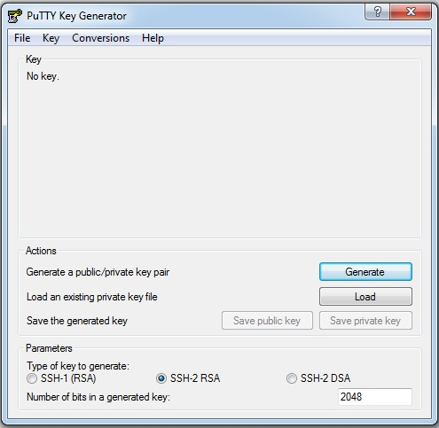
a. Click Load. The following Load private key window will pop up:

b. In the Load private key window select All Files (*.*) in the drop down menu next to the File name input box.
c. Navigate to the location on disk where the public-key file was downloaded in earlier steps, in this case a .pem file. Click Open. The following window will appear:
d. Enter a Passphrase and confirm the Passphrase. If no Passphrase is desired, leave those fields empty.
e. When the key has been loaded click the Save private key button.
f. If saving without a Passphrase a dialog box will pop up; click yes to save the key without a Passphrase
g. Now close PuTTYgen.
Accessing AWS Virtual Machines via SSH on Windows Using PuTTY and PuTTYgen
Get PuTTY and PuTTYgen
- To get PuTTY and PuTTYgen, first go to
http://www.chiark.greenend.org.uk/~sgtatham/putty/download.html and either:
- Download and install using the PuTTY binaries installer
- Or, download PuTTY and PuTTYgen individually
Prepare Private Key Using PuTTYgen
- After the binaries have been downloaded and/or installed either:
- Double click
puttygen.exefrom the download location, if downloaded directly. - Or, if the PuTTY installer was used above, one of either:
- Press the
Windowskey +Rkey and then typeputtygenin the field namedOpen. Then press theEnterkey or clickOK. - Alternatively, double click puttygen.exe under
C:\Program Files (x86)\PuTTY(when using Windows 64 bit) orC:\Program Files\PuTTY(when using Windows 32 bit).
- Double click

The Puttygen Interface. You will load the .pem file that you created in AWS.
- On the PuTTYgen interface click the load button.
- In the Load private key window select All Files (*.*) in the drop down menu next to the File name input box.
- Navigate to the location on disk where the .pem file was downloaded in earlier steps.
- When the key has been loaded click the Save private key button.
- When prompted with a warning about saving without a passphrase, click yes.

The Puttygen popup window. Click Yes, to proceed without a passphrase. You can also protect your private key with a passphrase that you enter into Key Passprhase and Confirm Key Passphrase.
- Finally, navigate to a good location on disk to save the key file, enter a name for the private key, ensure PuTTY Private Key Files (*.ppk) type is selected, and then click the Save button.
- You can now close the Puttygen application. You will call up the .ppk file when you configure the virtual machines using PuTTY.
Configure PuTTY
- Before configuring PuTTY, go back to your AWS Console, then navigate to INSTANCES > Instances.
- Make a note of the 2 different Public DNS entries for the virtual machines that were setup earlier (e.g. ec2xxxxxxxxxxxx.uswest1.compute.amazonaws.com, where the x's represent numbers).
- Launch PuTTY by either:
- Double clicking
putty.exefrom the download location, if downloaded directly. - Or, if the PuTTY installer was used above, one of either:
- Press the
Windowskey +Rkey and then typeputtyin the field namedOpen. Then press theEnterkey or clickOK. - Alternatively, double click
putty.exeunderC:\Program Files (x86)\PuTTY(when using Windows 64 bit) orC:\Program Files\PuTTY(when using Windows 32 bit). - On the PuTTY interface, select
Category > Sessionon the left side navigation tree:
- Double clicking

The Putty interface, with Session selected on the left-side navigation tree.
- Now, we will configure the Putty application, which we will use to set up the two AWS virtual machines.
- The first step is to create a Host Name for the first VM.
- The Host Name consists mainly of the public DNS entry that was created for one of the two virtual machines in AWS. But the DNS is preceded by a user name,
ec2-user, followed by the@symbol, which is then followed by the DNS entry.

Setting up the PuTTY configuration with the Host Name, and a Saved Sessions Name.
- Port should be set to
22. - Connection type should be set to
SSH. Saved Sessionscan be any label.
Once we have entered our Host Name and our Saved Sessions name, we take the following steps:
* Select Connection > SSH > Auth on the left side navigation tree.
* Click the Browse button to select the Private key for authentication.
* In the Select private key file window, navigate to the .ppk private key file created earlier, and double-click on it to enter it into PuTTY. Your PuTTY screen should look like this:

Note that Auth has been selected on left-side tree, in order to bring up this screen.
- Now we go back and select
Category > Sessionon the left side navigation tree and then press theSavebutton. - Repeat the steps for the second virtual machine, starting from setting the Host Name through pressing the Save button (as described above). Your PuTTY screen should show the two saved virtual machines, which are here named
Examples 1 and 2. - Note: It may be necessary to redo the steps from selecting
Connection > SSH > Auththrough selecting the .ppk private key file. In other words, when configuring the connection the private key file may not be persistently saved. - Wait a moment, and select
Yesif prompted. - This prompt will generally only be necessary when trying to login for the very first time.

The PuTTY interface with the two virtual machines saved. We can now proceed to configure those virtual machines with CFEngine.
Login to Virtual Machines Using PuTTY
- If one of the two virtual machines is configured and its details loaded in the PuTTY interface, first select the machine, then click the Open button. This will close the above PuTTY interface and open a command-line window, from which we will setup CFEngine on each of the two machines. One machine will act as the Server and the other as the client, and they will each be set up with different software.
- Once the first virtual machine is logged into, right click the top of PuTTY's application window (e.g. the part of the window decoration displaying the virtual machine name).
- In the contextual menu that then shows click New Session.
- Select the second virtual machine entry in the Saved Sessions list.
- Click Load and then Open.
- Both virtual machines should now be accessed in two different PuTTY command-line windows. Below is an example of what the command-line window will look like.

The PuTTY command-line window, which we will use to configure the virtual machines with CFEngine.
General Installation
There are several steps to bring up a CFEngine installation within an organization:
- Prepare all appropriate machines for installation.
- Configure your network and security.
- Download the CFEngine software.
- Install CFEngine on the Policy Server(s).
- Bootstrap the Policy Server to itself.
- Initiate post-install configuration on the Policy Server.
- Install CFEngine on the Host machine(s).
- Bootstrap the Host(s) to a Policy Server.
Before Installation
Check the Pre-Installation Checklist and Supported Platforms and Versions for requirements and other information that is useful for the installation procedure.
Install Packages
CFEngine Enterprise is provided in two packages; one is for the Policy Server (hub) and the other is for each Host (client).
Note: See Installing Community for the community version of CFEngine)
Log in as root and then follow these steps to install CFEngine Enterprise:
On the designated Policy Server, install the
cfengine-nova-hubpackage:[RedHat/CentOS/SUSE] $ rpm -i <server hub package>.rpm [Debian/Ubuntu] $ dpkg -i <server hub package>.debOn each Host, install the
cfengine-novapackage:[RedHat/CentOS/SUSE] $ rpm -i <agent package>.rpm [Debian/Ubuntu] $ dpkg -i <agent package>.deb
Note: Install actions logged to /var/logs/cfengine-install.log.
Bootstrap
Bootstrapping a client means to configure it initially. With CFEngine, the default bootstrap:
- records the server's address (accessible as
sys.policy_hub) and public key, and gives the server the client's key to establish trust (see Bootstrapping) - copies all the contents of
/var/cfengine/masterfileson the policy server (AKAsys.masterdir) to/var/cfengine/inputs(AKAsys.inputdir). Seeupdate.cffor details.
Run the bootstrap command, first on the policy server:
Find the IP address of your Policy Server:
$ ifconfigRun the bootstrap command:
$ sudo /var/cfengine/bin/cf-agent --bootstrap <IP address of policy server>
The bootstrap command must then be run on any client attaching itself to this server, using the ip address of the policy server (i.e. exactly the same as the command run on the policy server itself).
Post-Installation Configuration
CFEngine itself is configured through policy as well (see Components and Common Control and
Masterfiles Policy Framework for details). The following basic changes to the default policy will configure
cf-serverd and cf-execd for your environment.
Configure agent email settings
By default an email a summary of any cf-agent run initiated by cf-execd. You
may want to adjust the mailto or mailfrom. If you have a centralized reporting
system like CFEngine Enterprise you may wish to disable agent emails all
together.
Configure mailto and mailfrom
The preferred way of setting def.mailfrom is from the
augments file.
{
"vars": {
"mailfrom": "sender@your.domain.here",
"mailto": "recipient@your.domain.here"
}
}
Alternatively you can alter the setting in def.cf.
Note: On some systems these modifications should hopefully work without needing to make any additional changes elsewhere. However, any emails sent from the system might also end up flagged as spam and sent directly to a user's junk mailbox.
Note: It's best practice to restart daemons after adjusting it's settings to ensure they have taken effect.
Disable agent emails
The preferred way to disable the agent from sending emails is to define
cfengine_internal_disable_agent_email from the augments file.
{
"classes": {
"cfengine_internal_disable_agent_email": [ "any" ]
}
}
Alternatively you can define the class from def.cf.
Note: It's best practice to restart daemons after adjusting it's settings to ensure they have taken effect.
Server IP Address and Hostname
Edit /etc/hosts and add an entry for the IP address and hostname of the server.
CFEngine Enterprise Post-Installation Setup
See: [What steps should I take after installing CFEngine Enterprise?][FAQ#What steps should I take after installing CFEngine Enterprise]
More Detailed Installation Guides
Although most install procedures follow the same general workflow, there are several ways of installing CFEngine depending on your environment and which version of CFEngine you are using.
- Installing Enterprise for Production
- Install and test the latest version using our native version, for free!
- Installing CFEngine on virtual machine instances using Amazon Web Services' (AWS) EC2 service
- This is especially useful for people running Windows on their workstation or laptop.
- Install and test the latest version using our pre-packaged Vagrant environment
- Installing CFEngine Community Edition
Next Steps
- Learn about Writing and Serving Policy
Using Amazon Web Services
This guide describes how to install CFEngine on two Red Hat® Enterprise Linux® (RHEL) virtual machines using Amazon Web Services™ (AWS) and SSH. At the time of writing, under certain conditions, setting up an AWS account and using micro-instances is free.
One of the two machines will be a policy server, while the other will be a host.
Although these instructions walk through the steps needed to install CFEngine Enterprise on two machines, up to 25 machines can be set up using the same procedure and scripts.
This tutorial will cover the following steps:
- Initial Configuration of the AWS Virtual Machines.
- Configuring the Security Group.
- Configuring SSH Access to the Virtual Machines Using PuTTY (for Windows machines).
- Configuring the Firewall on the Policy Server.
- Installing CFEngine on both the Policy Server and Host Virtual Machines.
Initial Configuration of the Virtual Machines in AWS
Configure 2 RHEL Virtual Machine Instances in AWS
- Login to AWS.
- Under
Create Instanceclick onLaunch Instance. - On the line
Red Hat Enterprise Linux 64 Bit Free tier eligiblepress theSelectbutton. - On the
Choose Instance Typescreen ensure theMicro Instancestab on the left is selected.
Configure Instance Details
- Press
Next: Configure Instance Details. - On the
Configure Instance Detailsscreen change the number of instances to 2. - Leave
Networkas the default. Subnetcan beNo preference.- Ensure
Public IPis checked. - Leave all else at their default values.
Review and Launch
- Click
Review and Launch. - Make a note of
Security groupname on theReview Instance Launchscreen. - Click
Launch. - Select
Create a new keypair in the first drop down menu. - Enter anything as the
Key pair name. - Click the
Download Key Pairbutton and save the .pem file to your local computer. - After the .pem file is saved click the
Launch Instancebutton. - On the
Launch Statusscreen click theView Instancesbutton.
Configure the Security Group
- On the left hand side of the AWS console click
NETWORK & SECURITY > Security Groups - Remembering the
Security groupname from earlier, click on the appropriate line item in the list. - Below the list of security group names will display details for the current security group.
- Click the
Inboundtab. - Click "Edit" button. A popup window will appear with "SSH" rule already present.
- Click the
+Add Rulebutton. SelectHTTPfrom the drop-down list. Click "Add Rule" button again. - Select
Custom TCP ruleand enter5308in thePort rangetext entry. Select "Custom IP" from the drop-down menu in the "Source" column. - Copy the "Group ID" from the line containing your "Group Name" and copy the "Group ID" into the text entry in the last column. Click "Save."
- Click the "Edit" button again. On the "Custom TCP" Rule, select "Anywhere" from the "Source" drop-down list. Click "Save."
Accessing the Virtual Machines Using SSH
See: Quick-Start Guide to Using PuTTY
Install and Configure the Firewall
Install the Firewall
- Ensure you are logged into both virtual machines.
- In both enter
sudo yum install system-config-firewallto install. - Hit 'y' if prompted.
Configure the Firewall on the Policy Server (AKA hub)
The following steps are only necessary for one of the two virtual machines, the one that is designated as the policy server; these steps can be omitted on the second (client machine). Note that CFEngine refers to a client machine by the name Host:
- When system-config-firewall is installed, enter
sudo system-config-firewall - In the
Firewall Configurationscreen use theTabkey to go to Customize. - Hit the
Enterkey. Below is theFirewall Configurationwindow that comes up:

Open Port 80 (HTTPD)
- On the
Trusted Servicesscreen, scroll down toWWW (HTTP), AKA port 80. - Hit the
Space Barto toggle theWWWentry (i.e. ensure it is on, showing an asterisk beside the name).
Open Port 5308 (CFEngine)
- Hit the
Tabkey again untilForwardis highlighted, then hitEnter. - Hit the
Tabkey untilAddis highlighted, then hitEnter. - Enter
5308in thePortsection. - Hit the
Tabkey and entertcpin theProtocolsection. - Hit the
Tabkey until OK is highlighted, and hitEnter.

The Port and Protocol are entered in the blue boxes, with entries of 5308 and tcp respectively.
Then the Tab key is used to highlight the OK button, and the user presses Enter.
Wrapping Up Firewall Configuration
- Hit the
Tabkey untilCloseis highlighted, and hitEnter. - Hit the
Tabkey or arrow keys untilOKis highlighted, and hitEnter.
Disabling Firewall on a Host (Warning: Only Do This If Absolutely Necessary)
For the second virtual machine, which is the client machine (also called host), you may need to do the following if you see an error when bootstrapping this virtual machine in later steps:
* In the Firewall Configuration screen use the Tab key to go to Firewall.
* Turn off the firewall by toggling the entry with the Space bar.
Note: Turning off the firewall in a production environment is considered unsafe.
CFEngine Installation Overview
We ready now ready to install the CFEngine software on both the server and client virtual machines. These also referred to as the “hub” and “host” machines, respectively. During the course of the instructions outlined in this guide, you will perform the following tasks:
- Install CFEngine Enterprise onto a Policy Server and onto Hosts. A Policy Server (hub) is a CFEngine instance that contains promises (business policy) that get deployed to Hosts. Hosts are clients that retrieve and execute promises.
- Bootstrap the Policy Server to itself and then bootstrap each of the Hosts to the Policy Server. Bootstrapping establishes a trust relationship between the Policy Server and all Hosts. Thus, business policy that you create in the Policy Server can be deployed to Hosts throughout your company. Bootstrapping completes the installation process.
- Log in to the Mission Portal. The Mission Portal is a graphical user interface that allows you to verify the actual state of all your Hosts, thus ensuring that your promises are being executed. By using the Design Center inside the Mission Portal, you can also define new desired states (business policies) for your infrastructure.
- Try out the Tutorials. Links to three tutorials give you a head start on learning CFEngine.
Step 1. Download and install Enterprise on a Policy Server
Run the following script on your designated Policy Server (hub), the virtual machine with the configured firewall from earlier steps:
$ wget http://cfengine.package-repos.s3.amazonaws.com/quickinstall/quick-install-cfengine-enterprise.sh && sudo bash ./quick-install-cfengine-enterprise.sh hub
This script installs the latest CFEngine Enterprise Policy Server on your server machine.
Step 2. Bootstrap the Policy Server
- The Policy Server must be bootstrapped to itself. Find the IP address of your Policy Server:
$ ifconfig. Run the bootstrap command:
sudo /var/cfengine/bin/cf-agent --bootstrap <IP address of policy server>Example:
$ sudo /var/cfengine/bin/cf-agent --bootstrap 172.31.3.25

Upon successful completion, a confirmation message appears: "Bootstrap to '172.31.3.25' completed successfully!"
Type the following to check which version of CFEngine your are running:
/var/cfengine/bin/cf-promises --versionThe Policy Server is now installed.
Step 3. Install Enterprise on Host (Client)
- Ensure you are logged into the host machine setup earlier.
- Install CFEngine client version using the following:
$ wget http://cfengine.package-repos.s3.amazonaws.com/quickinstall/quick-install-cfengine-enterprise.sh && sudo bash ./quick-install-cfengine-enterprise.sh agent
Note: The installation will work on 64-bit and 32-bit client machines (the host requires a 64-bit machine).

The client software (host), has been installed on the second virtual machine.
Note: You can install CFEngine Enterprise on up to 25 hosts using the script above.
Step 4. Bootstrap the Host to the Policy Server
- All hosts must be bootstrapped to the Policy Server in order to establish a connection between the
Hostand thePolicy Server. Run the same commands that you ran in Step 2,
$ sudo /var/cfengine/bin/cfagent bootstrap <IP address of policy server>.Example:
$ sudo /var/cfengine/bin/cfagent bootstrap 172.31.3.25The installation process is complete and CFEngine Enterprise is up and running on your system.
Step 5. Log in to the Mission Portal
- The Mission Portal is immediately accessible. Connect to the Policy Server through your web browser at: http://
(Note: The External IP address is available in the AWS console). - The default username for the Mission Portal is
admin, and the password is alsoadmin. - The Mission Portal runs TCP port 80 by default. Configure mission portal to use HTTPS instead of HTTP.
- During the initial setup, the Host(s) might take a few minutes to show up in the Mission Portal. Refresh the web page and login again if necessary.
What Next?
Tutorials
Configure and deploy a policy using sketches in the Design Center.
This tutorial teaches you how to configure and deploy business policy by using the Design Center application in the Mission Portal. Next, it shows you how to verify that your business policy is being activated by viewing the Reports in the Mission Portal.
Distribute files from a central location.
Whereas the first tutorial in this list teaches you how to deploy business policy through the Mission Portal, this advanced, command-line tutorial shows you how to distribute policy files from the Policy Server to all pertinent Hosts.
Recommended Reading
Installing Enterprise 25 Free
These instructions describe how to install the latest version of CFEngine Enterprise 25 Free. This is the full version of CFEngine Enterprise, but the number of Hosts (clients) is limited to 25.
Note the following requirements:
- To install this version of CFEngine Enterprise, your machine must be running a recent version of Linux. This installation script has been tested on RHEL 5 and 6, SLES 11, CentOS 5 and 6, and Debian 6 and 7.
- You need a minimum of 2 GB of available memory and a modern 64 bit processor.
- Plan for approximately 100MB of disk space per host. You should provide an extra 2G to 4G of disk space if you plan to bootstrap more hosts later.
- You need a least two VMs/servers, one for the Policy Server and one for a Host (client). They must be on the same network.
- The Policy Server needs to run on a dedicated OS with a vanilla installation (i.e. it only has repositories and packages officially supported by the OS vendor)
Installation Overview
During the course of the instructions outlined in this guide, you will perform the following tasks:
- Install CFEngine Enterprise onto a Policy Server and onto Hosts. A Policy Server (hub) is a CFEngine instance that contains promises (business policy) that get deployed to Hosts. Hosts are clients that retrieve and execute promises.
- Bootstrap the Policy Server to itself and then bootstrap each of the Hosts to the Policy Server. Bootstrapping establishes a trust relationship between the Policy Server and all Hosts. Thus, business policy that you create in the Policy Server can be deployed to Hosts throughout your company. Bootstrapping completes the installation process.
- Log in to the Mission Portal. The Mission Portal is a graphical user interface that allows you to verify the the actual state of all your Hosts, thus ensuring that your promises are being executed. By using the Design Center inside the Mission Portal, you can also define new desired states (business policies) for your infrastructure.
- Try out the Tutorials. Links to three tutorials give you a head start on learning CFEngine.
1. Download and install Enterprise on a Policy Server
Please Note: Internet access is required from the host if you wish to use the quick install script.
Run the following script on your designated Policy Server (hub) 64-bit machine (32-bit is not supported on the Policy Server):
$ wget http://cfengine.package-repos.s3.amazonaws.com/quickinstall/quick-install-cfengine-enterprise.sh && sudo bash ./quick-install-cfengine-enterprise.sh hub
This script installs the latest CFEngine Enterprise Policy Server on your machine.
2. Bootstrap the Policy Server
The Policy Server must be bootstrapped to itself. Find the IP address of your Policy Server (type $ ifconfig).
Run the bootstrap command:
$ sudo /var/cfengine/bin/cf-agent --bootstrap <IP address of policy server>
Example: $ sudo /var/cfengine/bin/cf-agent --bootstrap 192.168.1.12
Upon successful completion, a confirmation message appears: "Bootstrap to '192.168.1.12' completed successfully!"
Type the following to check which version of CFEngine your are running:
$ /var/cfengine/bin/cf-promises --version
The Policy Server is installed.
3. Install Enterprise on Hosts
Install Enterprise on your designated Host(s) by running the script below. Per the Free 25 agreement, you can install Enterprise on 25 Hosts. Note that the Hosts must be on the same network as the Policy Server that you just installed in Step 2.
$ wget http://cfengine.package-repos.s3.amazonaws.com/quickinstall/quick-install-cfengine-enterprise.sh && sudo bash ./quick-install-cfengine-enterprise.sh agent
Note that this installation works on 64- and 32-bit machines.
4. Bootstrap the Host to the Policy Server
All Hosts must be bootstrapped to the Policy Server in order to establish a connection between the Host and the Policy Server. Run the same commands that you ran in Step 3.
$ sudo /var/cfengine/bin/cf-agent --bootstrap <IP address of policy server>
Example: $ sudo /var/cfengine/bin/cf-agent --bootstrap 192.168.1.12
The installation process is complete and CFEngine Enterprise is up and running on your system.
5. Log in to the Mission Portal
The Mission Portal is immediately accessible. Connect to the Policy Server through your web browser at:
http://<IP address of your Policy Server>
username: admin password: admin
The Mission Portal runs TCP port 80 by default. (Click here to configure the Mission Portal to use HTTPS instead of HTTP.) During the initial setup, the Host(s) might take a few minutes to show up in the Mission Portal. Simply refresh the web page and login again if necessary.
Note: If you are running Enterprise with Vagrant, you must add the
correct port: http://localhost:
Tutorials
Configure and deploy a policy using sketches in the Design Center.
This tutorial teaches you how to configure and deploy business policy by using the Design Center application in the Mission Portal. Next, it shows you how to verify that your business policy is being activated by viewing the Reports in the Mission Portal.
Distribute files from a central location.
Whereas the first tutorial in this list teaches you how to deploy business policy through the Mission Portal, this advanced, command-line tutorial shows you how to distribute policy files from the Policy Server to all pertinent Hosts.
Recommended Reading
Rate your experience
Everyone is a first-time user a some point. We want to make the CFEngine Enterprise installation process easy for all of our new users. Before you forget your first-time experience, we would love for you to let us know how we can improve on this process.
Using Vagrant
The CFEngine Enterprise Vagrant Environment provides an easy way to test and explore CFEngine Enterprise. This guide describes how to set up a client-server model with CFEngine and, through policy, manage both machines. Vagrant will create one VirtualBox VM to be the Policy Server (server), and another machine that will be the Host Agent (client), or host that can be managed by CFEngine. Both will will run CentOS 6.5 64-bit and communicate on a host-only network. Apart from a one-time download of Vagrant and VirtualBox, this setup requires just one command and takes between 5 and 15 minutes to complete (determined by your Internet connection and disk speed). Upon completion, you are ready to start working with CFEngine.
Requirements
- 2G disk space
- 1G memory
- CPU with VT extensions capable of running 64bit guests
Note: VirtualBox requires that your computer support hardware virtualization in order to make use of the CentOS 64-bit virtual machines mentioned above. This is sometimes turned on or off in BIOS settings, but not all processors and motherboards necessarily support hardware virtualization.
If your system lacks this support you will need to choose another computer to take advantage of the 64-bit virtual machines or install CFEngine using a different approach.
Overview
- Install Vagrant
- Install Virtualbox
- Start the CFEngine Enterprise Vagrant Environment
- Log in to the Mission Portal
- Stop CFEngine Enterprise
- Uninstall
Install Vagrant
This tutorial uses Vagrant to configure your VMs. It is available for Linux, Windows and MacOS and can be downloaded from vagrantup.com (this guide has been tested with version 1.7.4). After downloading Vagrant, install it on your computer. You may want to reference the Windows Mac or Linux vagrant install guides.
Install Virtualbox
This tutorial uses VirtualBox to create virtual machines on your computer, to which Vagrant deploys CFEngine. VirtualBox can be downloaded from virtualbox.org (this guide has been tested with version 5.0.2). After downloading VirtualBox, install it on your computer.
Note: To avoid problems, disable other virtualization environments you are running.
Start the CFEngine Enterprise 3.11 Vagrant Environment
Step 1. Download our ready-made Vagrant project tar-file.
Step 2. Save and unpack the file anywhere on your drive; this creates a Vagrant Project directory.
Step 3. Open a terminal and navigate to the Vagrant Project directory (e.g.
/home/user/CFEngine_Enterprise_vagrant_quickstart-3.11.0-1, or C:\CFEngine_Enterprise_vagrant_quickstart-3.11.0-1) and enter the following command:
$ vagrant up
Vagrant performs the following processes:
- Downloads the CentOS basebox used for both the hub and the client (if it has not already been cached by vagrant.
- Provisions, installs and bootstraps the hub
- Provisions, installs and bootstraps clients
The basebox is ~500MB.
Note: If you want to use more hosts in this environment, you can edit the Vagrantfile text file in the directory that you have just created. Change the line that says "hosts = 1" to the number of hosts that you want in the setup. The maximum supported in this evaluation version of CFEngine is 25.
Log in to the Mission Portal
At the end of the setup process, you can use your browser to log in to the Mission Portal:
http://localhost:9002
username: admin
password: admin
Note: It may take up to 15 minutes before the hosts register in Mission Portal.
That's all there is to it, the install is complete! Move on and explore the environment.
Exploring the Environment
Accessing VMs
Accessing via SSH
The standard vagrant ssh key is configured. To ssh to a host run vagrant ssh
myhost where myhost is the name of a running vm as seen in the vagrant
status output. Both the 'root' and 'vagrant' users passwords are set to
'vagrant'.
Example:
$ vagrant ssh hub
Last login: Fri Jun 13 18:58:10 2014 from 10.0.2.2
Accessing via GUI
If you launch the virtualbox GUI you should find the vagrant vms named
CFEngine Enterprise 3.11.0-1 hub, and CFEngine Enterprise 3.11.0-1 agent host001. Additionally, you can uncomment the v.gui=true
option in the Vagrantfile to have the console gui start with the vms.
Note: There are two v.gui settings to uncomment; one for the hub, and one
for the clients.
Check the status of the vms
Running vagrant status from the vagrant project directroy will produce
output like this.
$ vagrant status
Current machine states:
hub not created (virtualbox)
host001 not created (virtualbox)
This environment represents multiple VMs. The VMs are all listed
above with their current state. For more information about a specific
VM, run `vagrant status NAME`.
Start or resume the environment
To start or resume a halted environment simply run vagrant up from within the
vagrant project directory.
$ vagrant up
Stop the environment (Halt/Suspend/Destroy)
To shut down the vms run vagrant halt. This will preserve the vms and any
changes made inside.
$ vagrant suspend
==> hub: Saving VM state and suspending execution...
==> host001: Saving VM state and suspending execution...
To suspend the vms run vagrant suspend. This will freeze the state of each vm
and allows for latter resuming of the environment.
$ vagrant halt
==> host001: Attempting graceful shutdown of VM...
==> hub: Attempting graceful shutdown of VM...
At any time you can run vagrant destroy to remove the provisioned vms. This will
delete the vms and any modifications made to the environment will be lost.
$ vagrant destroy
host001: Are you sure you want to destroy the 'host001' VM? [y/N] y
==> host001: Forcing shutdown of VM...
==> host001: Destroying VM and associated drives...
==> host001: Running cleanup tasks for 'shell' provisioner...
==> host001: Running cleanup tasks for 'shell' provisioner...
==> host001: Running cleanup tasks for 'shell' provisioner...
hub: Are you sure you want to destroy the 'hub' VM? [y/N] y
==> hub: Forcing shutdown of VM...
==> hub: Destroying VM and associated drives...
==> hub: Running cleanup tasks for 'shell' provisioner...
==> hub: Running cleanup tasks for 'shell' provisioner...
==> hub: Running cleanup tasks for 'shell' provisioner...
Uninstall Vagrant Environment
When you have completed your evaluation are ready to use CFEngine on production servers, remove the VMs that you created above by following these simple instructions:
To remove the VMs entirely, type: vagrant destroy
If you are completely done and do not anticipate using them anymore, you can
also remove the base box centos-6.5-x86_64-cfengine_enterprise-vagrant-201501201245 that was
downloaded. You can see it by typing vagrant box list. To delete the basebox
run vagrant box remove centos-6.5-x86_64-cfengine_enterprise-vagrant-201501201245 virtualbox.
Note: Running vagrant up from the vagrant project directory again will
re-download this basebox.
Vagrant and VirtualBox are useful general purpose programs, so you might want to keep them around. If not, follow the standard procedures for your OS to remove these applications.
Next Steps
See also
Installing Enterprise for Production
These instructions describe how to install the latest version of CFEngine Enterprise in a production environment using pre-compiled rpm and deb packages for Ubuntu, Debian, Redhat, CentOS, and SUSE.
General Requirements
CFEngine recommends the following:
Host Memory
During normal operation the CFEngine processes consume about 30 MB of resident memory (RSS) on hosts with the agent only (not acting as Policy Server).
However there might be spikes due to e.g. commands executed from the CFEngine policy so it is generally recommended to have at least 256 MB available memory in order to run the CFEngine agent software.
Host disk
So that the agent is not affected by full disks it is recommended that
/var/cfengine be on its own partition.
On Unix-like systems, a 500 MB partition for /var/cfengine should give you
some breathing room, typical user reported sizes are in the 100-250 MB range. On
Windows systems, CFEngine consumes more space because Windows lacks support for
sparse files (which are used opportunistically by lmdb). 5 G of space should
provide some breathing room, typical user reported sizes for C:\Program
Files\Cfengine are around 1 GB. As always things vary in different environments
it's a good idea to measure consumption in your infrastructure and customize
accordingly.
The agent builds local differential reports for promise outcomes. The
longer the period between collections from the enterprise hub the more
resources are required to calculate these differentials. You can
control the maximum disk space used by diff reports (contexts,
variables, software installed, software patches, lastseen hosts and
promise executions) by adjusting def.max_client_history_size.
Network
Verify that the machine’s network connection is working and that port 5308 (used by CFEngine) is open for both incoming and outgoing connections.
If a firewall is active on your operating system, adapt it to it to allow for communication on port 5308 or disable it.
CFEngine bundles all critical dependencies into the package; therefore, additional software is not required.
Requirements for VIOS
CFEngine Enterprise has Virtual I/O Server (VIOS) Recognized status from IBM. This means that CFEngine Enterprise has been technically verified by IBM to be installed in and manage VIOS environments.
During testing, CFEngine Enterprise was seen to use up to 2% of the
VIOS CPU during cf-agent runs with the default CFEngine policy. The
resource utilization may vary depending on the policy CFEngine is
running. The VIOS should be configured with Shared Processors in
Uncapped mode.
Policy Server Requirements
Please note that the resource requirements below are meant as minimum guidelines and have been obtained with syntethic testing, and it is always better to leave some headroom if intermittent bottlenecks should occur. The key drivers for the vertical scalability of the Policy Servers are 1) the number of agents bootstrapped and 2) the size and complexity of the CFEngine policy.
cfapache and cfpostgres users
The CFEngine Server requires two users: cfapache and cfpostgres. If these users do not exist during installation of the server package, they will be created, so if there are constraints on user creation, please ensure that these users exists prior to installation.
These users are not required nor created by the agent package.
Dedicated OS
The CFEngine Server is only supported when installed on a dedicated, vanilla OS (i.e. it only has repositories and packages officially supported by the OS vendor). This is because the CFEngine Server uses services, e.g. apache, that are configured for CFEngine and may conflict with other custom application configurations.
One option, especially for smaller installations, is to run the CFEngine Server in a VM. But please consider the performance requirements when doing this.
CPU
A modern 64-bit processor with 12 or more cores for handling up to 5000 bootstrapped agents. This number is also linear with respect to the number of bootstrapped agents (so 6 cores would suffice for 2500 agents).
Memory
Minimum 2GB memory, but not lower than 8MB per bootstrapped agent. This means that, for a server with 5000 hosts, you should have at least 40GB of memory.
Disk sizing and partitioning
So that the agent is not affected by full disks it is recommended that
/var/cfengine be on it's own partition.
It is recommended that $(sys.workdir)/state/pg is mounted on a
separate disk. This will give PostgreSQL, which can be very disk I/O
intensive, dedicated resources.
Plan for approximately 100MB of disk space per bootstrapped agent. This means that, for a server with 5000 hosts, you should have at least 500 GB available on the database partition.
xfs is strongly recommended as the file system type for the file
system mounted on $(sys.workdir)/state/pg. ext4 can be used as an
alternative, but ext3 should be avoided.
Disk speed
For 5000 bootstrapped agents, the disk that serves PostgreSQL
($(sys.workdir)/state/pg) should be able to perform at least 1000
IOPS (in 16KiB block size) and 10 MB/s. The disk mounted on
$(sys.workdir) should be able to perform at least 500 IOPS and 0.5
MB/s. SSD is recommended for the disk that serves PostgreSQL
($(sys.workdir)/state/pg).
If you do not have separate partitions for $(sys.workdir) and
$(sys.workdir)/state/pg, the speed required by the disk serving
$(sys.workdir) adds up (for 5000 bootstrapped agents it would be
1500 IOPS and 10.5 MB/s).
Note Your storage IOPS specification may be given in 4KiB block size, in which case you would need to divide it by 4 to get the corresponding 16KiB theoretical maximum.
Network
For serving policy and collecting reports for up to 5000 bootstrapped agents, plan for at least 30 MB/s (240 MBit) speed on the interface that connects the Policy Server with the agents.
cf-serverd maxconnections
The maximum number of connections is the maximum number of sessions that
cf-serverd will support. The general rule of thumb is that it should be set to
two times the number of clients bootstrapped to the hub. So if you have 100
remote agents bootstrapped to your policy server, 200 would be a good value body
server control maxconnections.
Open file descriptors
Open file descriptors should be set at least two times body server control
maxconnections. Adjust soft and hard nofile in /etc/limits.conf or
appropriate file in /etc/limits.d/ accordingly for your platform.
For example, if you have 1000 remote agents, body server control maxconnections should be set to 2000, and open file descriptors should be set to at least 4000.
/etc/limits.d/90-nproc.conf
soft nofile 4000
hard nofile 4000
Not sure what your open file limits for cf-serverd are? Inspect the current
limits with this command:
cat /proc/$(pgrep cf-serverd)/limits
Download Packages
Install Packages
CFEngine Enterprise is provided in two packages; one is for the Policy Server (hub) and the other is for each Host (client).
Log in as root and then follow these steps to install CFEngine Enterprise:
On the designated Policy Server, install the
cfengine-nova-hubpackage:[RedHat/CentOS/SUSE] # rpm -i <hub package>.rpm [Debian/Ubuntu] # dpkg -i <hub package>.debOn each Host, install the
cfengine-novapackage:[RedHat/CentOS/SUSE] # rpm -i <agent package>.rpm [Debian/Ubuntu] # dpkg -i <agent package>.deb [Solaris] # pkgadd -d <agent package>.pkg all [AIX] # installp -a -d <agent package>.bff cfengine.cfengine-nova [HP-UX] # swinstall -s <full path to agent package>.depot cfengine-nova
Note: Install actions logged to /var/logs/cfengine-install.log.
Bootstrap
Run the bootstrap command, first on the policy server and then on each host:
# /var/cfengine/bin/cf-agent --bootstrap <IP address of the Policy Server>
After bootstrapping the hub run the policy to complete the hub configuration.
# /var/cfengine/bin/cf-agent -Kf update.cf; /var/cfengine/bin/cf-agent -K
Licensed installations
If you are evaluating CFEngine Enterprise or otherwise using it in an environment with less than 25 agents connecting to a Policy Server, you do not need a license and there is no expiry.
If you are a customer, please send the Policy Server's public key to CFEngine support to obtain a license.
It's best to pack the public key into an archive so that it does not get corrupt in transit.
# tar --create --gzip --directory /var/cfengine --file $(hostname)-ppkeys.tar.gz ppkeys/localhost.pub
CFEngine will send you a license.dat file. Install the obtained
license with cf-key.
# cf-key --install-license ./license.dat
Next Steps
When bootstrapping is complete, CFEngine is up and running on your system.
The Mission Portal is immediately accessible. Connect to the Policy Server
through your web browser at http://<IP address of your Policy Server>.
To be able to use the Mission Portal's Design Center front-end, continue with integrating Mission Portal with git.
Learn more about CFEngine by using the following resources:
Tutorial: Tutorial for Running Examples
Tutorial: Configure and deploy a policy using sketches in the Design Center.
Installing from Binary tarball
Not all systems come with a package manager. For these systems you can install CFEngine by means of a generic binary tarball.
First download the binary onto the host.
Next unpack the archive:
tar --gunzip --extract --directory / --file ./cfengine-nova-3.11.0.pkg.tar.gz
Generate a keypair for the client:
/var/cfengine/bin/cf-key
Then install the systemd units:
for each in $(ls /var/cfengine/share/usr/lib/systemd/system); do
cp /var/cfengine/share/usr/lib/systemd/system/${each} /etc/systemd/system/${each}
chmod 664 /etc/systemd/system/${each}
done
systemctl daemon-reload
Next enable the necessary service units:
systemctl enable cf-execd
systemctl enable cf-monitord
systemctl enable cf-serverd
systemctl enable cfengine3
Finally, bootstrap the agent, and start the cfengine services:
export POLICY_SERVER="myhub";
# Bootstrap to hub
/var/cfengine/bin/cf-agent --bootstrap ${POLICY_SERVER}
# Start the cfengine3 service.
systemctl start cfengine3
Installing Community
These instructions describe how to download and install the latest version of CFEngine Community using pre-compiled rpm and deb packages for Ubuntu, Debian, Redhat, CentOS, and SUSE.
It also provides instructions for the following:
- Install CFEngine on a Policy Server (hub) and on a Host (client). A Policy Server (hub) is a CFEngine instance that contains promises (business policy) that get deployed to Hosts. Hosts are clients that retrieve and execute promises.
- Bootstrap the Policy Server to itself and then bootstrap the Host(s) to the Policy Server. Bootstrapping establishes a trust relationship between the Policy Server and all Hosts. Thus, business policy that you create in the Policy Server can be deployed to Hosts throughout your company. Bootstrapping completes the installation process.
Tutorials, recommended reading. and production environment recommendations appear at the end of this page.
Quick Setup Installation Script
Please Note: Internet access is required from the host if you wish to use the quick install script.
Use the following script to install CFEngine on your 32- or 64-bit machine.
$ wget -O- http://cfengine.package-repos.s3.amazonaws.com/quickinstall/quick-install-cfengine-community.sh | sudo bash
- Run this script on your designated Policy Server machine and on your designated Host machine(s).
- Bootstrap the Policy Server to itself and then bootstrap your Host(s) to the Policy Server by running the following command:
$ sudo /var/cfengine/bin/cf-agent --bootstrap <IP address of policy server>If you require more details on bootstrapping, review Step 3 below. Bootstrapping completes the installation. - Go to the Tutorials section to learn how to use CFEngine.
1. Download Packages
Select the package to download that matches your operating system. This stores the cfengine-community_3.6.1-1_* file onto your machine.
Redhat/CentOS/SUSE 64-bit:
$ wget http://cfengine.package-repos.s3.amazonaws.com/community_binaries/cfengine-community-3.6.1-1.x86_64.rpm
Redhat/CentOS/SUSE 32-bit:
$ wget http://cfengine.package-repos.s3.amazonaws.com/community_binaries/cfengine-community-3.6.1-1.i386.rpm
Ubuntu/Debian 64-bit:
$ wget http://cfengine.package-repos.s3.amazonaws.com/community_binaries/cfengine-community_3.6.1-1_amd64.deb
Ubuntu/Debian 32-bit:
$ wget http://cfengine.package-repos.s3.amazonaws.com/community_binaries/cfengine-community_3.6.1-1_i386.deb
2. Install CFEngine on a Policy Server
Install the package on a machine designated as a Policy Server. A Policy Server is a CFEngine instance that contains promises (business policy) that get deployed to Hosts. Hosts are instances (clients) that retrieve and execute promises.
Choose the right command for your operating system:
Redhat/CentOS/SUSE 64-bit:
$ sudo rpm -i cfengine-community-3.6.1-1.x86_64.rpm
Redhat/CentOS/SUSE 32-bit:
$ sudo rpm -i cfengine-community_3.6.1-1.i386.rpm
Ubuntu/Debian 64-bit:
$ sudo dpkg -i cfengine-community_3.6.1-1_amd64.deb
Ubuntu/Debian 32-bit:
$ sudo dpkg -i cfengine-community_3.6.1-1_i386.deb
Note: You might get a message like this: "Policy is not found in /var/cfengine/inputs, not starting CFEngine." Do not worry; this is taken care of during the bootstrapping process.
3. Bootstrap the Policy Server
The Policy Server must be bootstrapped to itself. Find the IP address of your Policy Server (type $ ifconfig).
Run the bootstrap command:
$ sudo /var/cfengine/bin/cf-agent --bootstrap <IP address of policy server>
Example: $ sudo /var/cfengine/bin/cf-agent --bootstrap 192.168.1.12
Upon successful completion, a confirmation message appears: "Bootstrap to '192.168.1.12' completed successfully!"
Type the following to check which version of CFEngine your are running:
$ /var/cfengine/bin/cf-promises --version
The Policy Server is installed.
4. Install CFEngine on a Host
As stated earlier, Hosts are instances that retrieve and execute promises from the Policy Server. Install a package on your Host. Use the same package you installed on the Policy Server in Step 2. Note that you must have access to at least one more VM or server and it must be on the same network as the Policy Server that you just installed.
5. Bootstrap the Host to the Policy Server
The Host(s) must be bootstrapped to the Policy Server in order to establish a connection between the Host and the Policy Server. Run the same commands that you ran in Step 3.
$ sudo /var/cfengine/bin/cf-agent --bootstrap <IP address of policy server>
Example: $ sudo /var/cfengine/bin/cf-agent --bootstrap 192.168.1.12
The CFEngine installation process is complete.
Tutorials
Create a policy ("hello world")
Step 1. Create a file called hello_world.cf and add the following content:
body common control
{
bundlesequence => { "test" };
}
bundle agent test
{
reports: # This is a promise type.
cfengine_3:: # This means the promise will only
# be kept on a CFEngine_3 system.
"Hello World"; # This is a simple promise; it generates a report
# that says "Hello world".
}
Step 2. Run the policy:
$ sudo /var/cfengine/bin/cf-agent hello_world.cf
The policy displays the following output:
R: Hello world
Find more policy examples in the Examples section.
Create a distributed policy
Create a policy that ensures (promises) that a file called example.txt will always exist on the Host.
Step 1. On the Policy Server, create a file called mypolicy.cf and add it to the /var/cfengine/masterfiles directory:
$ sudo <editor> /var/cfengine/masterfiles/mypolicy.cf
Step 2. Add the following lines to the file:
bundle agent example
{
files:
cfengine_3:: # This is a class context (the promise will only
# be kept on a CFEngine_3 system)
"/home/vagrant/example.txt" # Path and name of the file we wish to ensure exists
create => "true"; # Make sure the file exists; create if it does not
}
Step 3. Update /var/cfengine/masterfiles/promises.cf to include this new policy. To do so, modify the promises.cf file to ensure that (1 the mypolicy.cf file is being included in the next policy distribution and that (2 example is in the bundlesequence.
$ sudo <editor> /var/cfengine/masterfiles/promises.cf
...
bundlesequence => {
# Common bundles first for best practice
"def",
"example",
...
inputs => {
# Global common bundles
"def.cf",
"mypolicy.cf",
...
The process is complete. The next time CFEngine runs on the Host (which by default is every 5 minutes), it will pull down the latest policy update and ensure that the example.txt file exists (this is the desired state). In fact, any Host that has installed CFEngine will contain the example.txt file (because we defined the cfengine_3:: class above).
Try these advanced tutorials:
- Tutorial for Running Examples
- Distribute files from a central location. This advanced, command-line tutorial shows you how to distribute policy files from the Policy Server to all pertinent Hosts.
Recommended Reading
- CFEngine language concepts
Production Environment
If you plan to use Community in a production environment, complete the following general requirements:
Host(s) Memory
256 MB available memory in order to run the CFEngine agent software (cf-agent).
Disk Storage
A full installation of CFEngine requires 25 MB. Additional disk usage depends on your specific policies, especially those that concern reporting.
Network
Verify that the machine’s network connection is working and that port 5308 (used by CFEngine) is open for both incoming and outgoing connections.
If iptables are active on your operating system, stop this service or adapt it to allow for communication on the above ports. If applicable, type the following two commands: /
etc/init.d/iptables stopandchkconfig iptables off
Rate your experience
Everyone is a first-time user a some point. We want to make the CFEngine Enterprise installation process easy for all of our new users. Before you forget your first-time experience, we would love for you to let us know how we can improve on this process.
Secure Bootstrap
This guide presumes that you already have CFEngine properly installed and running on the policy hub, the machine that distributes the policy to all the clients. It also presumes that CFEngine is installed, but not yet configured, on a number of clients.
We present a step-by-step procedure to securely bootstrapping a number of servers (referred to as clients) to the policy hub, over a possibly unsafe network.
Introduction
CFEngine's trust model is based on the secure exchange of keys. This exchange of keys between client and hub, can either happen manually or automatically. Usually this step is automated as a dead-simple "bootstrap" procedure:
cf-agent --bootstrap $HUB_IP
It is presumed that during this first key exchange, the network is trusted, and no attacker will hijack the connection. After "bootstrapping" is complete, the node can be deployed in the open internet, and all connections are considered secure.
However there are cases where initial CFEngine deployment is happening over an insecure network, for example the Internet. In such cases we already have a secure channel to the clients, usually ssh, and we use this channel to manually establish trust from the hub to the clients and vice-versa.
Manual Trust Establishment
This procedure concerns CFEngine version 3.6 or earlier. While this fully manual procedure should always work, from version 3.7 onwards there is a simpler semi-automatic procedure for establishing trust.
On the policy hub
We must change the policy we're distributing to fully locked-down
settings. So after we have set-up our hub (using the standard procedure
of cf-agent --bootstrap $HUB_IP) we take care of the following:
Cf-serverd must never accept a connection from a client presenting an untrusted key. So in
body server controlwe must empty thetrustkeysfromattribute:trustkeysfrom => {};Since we will be manually bootstrapping the clients, we need to distribute a proper
failsafe.cfpolicy. (**NOTE:**failsafe.cfis a file auto-generated in theinputsdirectory when we runcf-agent --bootstrap).In order to do that, we copy hub's
failsafe.cftomasterfilesdirectory:cp /var/cfengine/inputs/failsafe.cf /var/cfengine/masterfiles/We'll edit that copy in
masterfilesin the next step.All
copy_fromfiles promises must never connect to an untrusted server, which means that the following line should not be found anywhere:trustkey => "true"All occurrences of
trustkeyinmasterfilesdirectory should be changed to "false", or be removed (since it defaults to false anyway). It is certain thatfailsafe.cfthat we copied in the previous step will contain such occurrences that should be changed. (Those occurrences are the reason that automatic bootstrapping requires a trusted network).The previous changes in
masterfilesneed to be properly propagated to theinputsdirectory. The automated way to do that is to run the update.cf policy:cf-agent -f update.cfGet the hub's key fingerprint, we'll need it later:
HUB_KEY=`cf-key -p /var/cfengine/ppkeys/localhost.pub`
On each client we deploy
We should not follow the automatic method, i.e. the
cf-agent --bootstrap command. We will perform a
manual bootstrap.
Generate a private/public key pair by running
cf-key.Get the client's key fingerprint, we'll need it later:
CLIENT_KEY=`cf-key -p /var/cfengine/ppkeys/localhost.pub`Write the policy hub's IP address to
policy_server.dat:echo $HUB_IP > /var/cfengine/policy_server.datManually copy the modified
failsafe.cffrom hub'smasterfilesdirectory into client'sinputsdirectory. You should do it in a secure manner, for example usingscpwith properly trusted fingerprint of the remote host.NOTE: At this step, you can try running the failsafe policy. Because trust between the two hosts has not been established, you will get a failure, which is totally expected and means everything is correct and secure:
$# cf-agent -f failsafe.cf error: TRUST FAILED, server presented untrusted key: MD5=cc27570b8b831192d9f20b54d07dd80b error: No suitable server responded to hail error: TRUST FAILED, server presented untrusted key: MD5=cc27570b8b831192d9f20b54d07dd80b error: No suitable server responded to hail [ ... ]Put the hub's key into the client's trusted keys:
scp $HUB_IP:/var/cfengine/ppkeys/localhost.pub /var/cfengine/ppkeys/root-${HUB_KEY}.pub
Final steps
Put the client's key into the hub's trusted keys. So on the hub, run:
scp $CLIENT_IP:/var/cfengine/ppkeys/localhost.pub /var/cfengine/ppkeys/root-${CLIENT_KEY}.pubIf you now run the failsafe policy on each and every client, it should succeed:
cf-agent -f failsafe.cf
Congratulations, you have performed a fully manual bootstrap procedure for your clients!
Upgrading
This guide documents our recommendation on how to upgrade an existing installation of CFEngine Enterprise 3.7.x to 3.11. Community users can use these instructions as a guide skipping the parts that are not relavent.
We recommend upgrading the Masterfiles Policy Framework first so that you can verify that the new policy will work with your old clients across the infrastructure. Once the latest policy has been deployed successfully we recommend upgrading the Policy Server and finally the remote agents.
Upgrading to 3.11 from versions older than 3.7 is more complicated as some functionality introduced in 3.11 is not compatible with versions 3.6 and earlier.
Upgrade the Masterfiles Policy Framework
The Masterfiles Policy Framework is available in the hub package, separately on the download page, or directly from the masterfiles repository on github.
Normally most files can be replaced with new ones, files that typically contain
user modifications include promises.cf, controls/*.cf, and
services/main.cf.
Once the Masterfiles Policy Framework has been upgraded, deployed and verified working as expected against the current infrastructure you are ready to upgrade the binaries on the Policy Server.
Upgrade Policy Server (3.7 to 3.11.X)
Make a backup of the Policy Server, a full backup of
/var/cfengine(or yourWORKDIRequivalent) is recommended.- Stop the CFEngine services.
- Verify that the output of
ps -e | grep cfis empty. cp -r /var/cfengine/ppkeys/ /root/3.7/ppkeystar cvzf /root/3.7/cfengine.tar.gz /var/cfengine
Save the list of hosts currently connecting to the Policy Server.
cf-key -s > /root/3.7/hosts
Start the CFEngine services
service cfengine3 start
Install the new CFEngine Policy Server package (you may need to adjust the package name based on CFEngine edition, version and distribution).
rpm -U cfengine-nova-hub-3.11.0-1.x86_64.rpm# Red Hat based distributiondpkg --install cfengine-nova-hub_3.11.0-1_amd64.deb# Debian based distribution- Check
/var/log/CFEngineHub-Install.logfor errors. Use the following snippet to see potential updates for your
postgresql.confand make changes accordingly.# If total memory is lower than 3GB, we use the default pgsql conf file # If total memory is beyond 64GB, we use a shared_buffers of 16G # Otherwise, we use a shared_buffers equal to 25% of total memory total=$(awk '/^MemTotal:.*[0-9]+\skB/ {print $2}' /proc/meminfo) echo "$total" | grep -q '^[0-9]\+$' if [ $? -ne 0 ] ;then echo "Error calculating total memory for setting postgresql shared_buffers"; else upper=$(( 64 * 1024 * 1024 )) #in KB lower=$(( 3 * 1024 * 1024 )) #in KB if [ "$total" -gt "$lower" ]; then maint="2GB" if [ "$total" -ge "$upper" ]; then shared="16GB" effect="11GB" #70% of 16G else shared=$(( $total * 25 / 100 / 1024 )) #in MB shared="$shared""MB" effect=$(( $total * 70 / 100 / 1024 )) #in MB effect="$effect""MB" fi sed -i -e "s/^.effective_cache_size.*/effective_cache_size=$effect/" /var/cfengine/share/postgresql/postgresql.conf.cfengine sed -i -e "s/^shared_buffers.*/shared_buffers=$shared/" /var/cfengine/share/postgresql/postgresql.conf.cfengine sed -i -e "s/^maintenance_work_mem.*/maintenance_work_mem=$maint/" /var/cfengine/share/postgresql/postgresql.conf.cfengine diff -u /var/cfengine/state/pg/data/postgresql.conf /var/cfengine/share/postgresql/postgresql.conf.cfengine else echo "Warning: not enough total memory needed to set shared_buffers=2GB" fi fi
Re-bootstrap the Policy Server to itself.
/var/cfengine/bin/cf-agent -B <POLICY-SERVER-IP>Regenerate self-signed certificate
cf-agent -b cfe_enterprise_selfsigned_cert
Run the policy on the hub several times to converge the system
for i in 1 2 3; do /var/cfengine/bin/cf-agent -KIf update.cf; /var/cfengine/bin/cf-agent -KI; done
Verify client connectivity.
- Use
cf-key -sto verify that connections from all clients have been established within 5-10 minutes.
- Use
If everything looks good, you are ready to upgrade the clients, please skip to Prepare Client upgrade (all versions) followed by Complete Client upgrade (all versions) below.
Prepare Client upgrade (all versions)
Make client packages available on the Policy Server in
/var/cfengine/master_software_updates, under the appropriate directories for the OS distributions you use.Turn on the auto-upgrade policy by setting the
trigger_upgradeclass. Setmasterfiles/controls/update_def.cfor theaugments_file(also known asdef.json) for a small set of clients. For example in the appropriateupdate_def.cffile(s) change!anyto an appropriate class like an IP networkipv4_10_10_1|ipv4_10_10_2or indef.json{ "classes": { "trigger_upgrade": [ "ipv4_10_10_1", "ipv4_10_10_2" ] } }Verify that the selected hosts are upgrading successfully.
As an Enterprise user, confirm that the hosts start appearing in Mission Portal after 5-10 minutes. The easiest way to do this is to use an Inventory Report and add the "CFEngine Version" column. Otherwise, log manually into a set of hosts to confirm the successful upgrade.
Complete Client upgrade (all versions)
Please note, the policy to use this method is designed for Enterprise packages. Community users can adjust the policy as necessary in order to work with community packages.
- Widen the group of hosts on which the
trigger_upgradeclass is set. - Continue to verify from
cf-key -sor in the Enterprise Mission Portal that hosts are upgraded correctly and start reporting in. - Verify that the list of hosts you captured before the upgrade, e.g. in
/root/3.7/hostscorrespond to what you see is now reporting in.
Optional steps
The steps listed here are not necessary unless you have special needs.
Migrating Mission Portal database
This step is not needed unless you are upgrading from CFEngine 3.8 or lower, to CFEngine 3.9 or higher, and you are unable to use the automatic migration.
Normally the package upgrade will do the migration for you, but if you have a
very big database, or for other reasons don't have enough space to hold database
backup files in the /var/cfengine/state/pg directory, you may perform these
steps manually.
- Before installing the new version of CFEngine, dump the current content of
the database to a file using
pg_dump. You need to do this for each of the three databases, like this:
su cfpostgres -c "/var/cfengine/bin/pg_dump cfdb > cfdb-backup.sql"
su cfpostgres -c "/var/cfengine/bin/pg_dump cfsettings > cfsettings-backup.sql"
su cfpostgres -c "/var/cfengine/bin/pg_dump cfmp > cfmp-backup.sql"
Shut down CFEngine and then delete or move the
/var/cfengine/state/pg/datadirectory in order to prevent the automatic migration by the package scripts.Install the new CFEngine package.
Restore the database dump into the new PostgreSQL database by running:
su cfpostgres -c "/var/cfengine/bin/psql cfdb < cfdb-backup.sql"
su cfpostgres -c "/var/cfengine/bin/psql cfsettings < cfsettings-backup.sql"
su cfpostgres -c "/var/cfengine/bin/psql cfmp < cfmp-backup.sql"
Version Control
CFEngine is policy is stored in /var/cfengine/masterfiles on the policy
server. It is common that this directory is backed by a version control system
(VCS), such as git or subversion. In this document we will focus on git, but
CFEngine is VCS agnostic.
Please note that the following applies to CFEngine Community or Enterprise, but in Enterprise there are built-in facilities that can make the following unnecessary. Please see Version Control and Configuration Policy for details.
Repository synchronization
When /var/cfengine/masterfiles is backed by VCS, it may be useful to have an
agent policy that periodically checks the VCS server for the latest version
fetches any updates. Again, note that CFEngine Enterprise has this built-in.
After installing CFEngine on the policy server and before bootstrapping the agent to itself, we want to create a git repository out of our masterfiles. Assuming that we have a functioning git installation, and a previously configured github account:
$ cd /var/cfengine/masterfiles
$ git init
$ git remote add origin git@github.com:Username/cf-engine-repo.git
$ git add *
$ git commit -m "Initial post installation commit of masterfiles directory"
Now we are good to go and push the content of our /masterfiles directory. We push it with the -ff option to overwrite any possible content of our (supposedly empty) github repository
$ git push -ff origin master
The next step is to create a policy that will periodically update the content of our /masterfiles directory on the hub, pulling the changes we did on the git repo.
The following policy uses git pull with the --ff-only flag to avoid
potentially bad merges. This assumes that no development takes place in
/var/cfengine/masterfiles itself.
Note that we specify policy_server:: here, as we want only the hub to pull code from github, while nodes will be updated through CFEngine.
bundle agent vcs_update
{
commands:
policy_server::
"/usr/bin/git"
args => "pull --ff-only origin master",
contain => masterfiles_contain;
}
body contain masterfiles_contain
{
chdir => "/var/cfengine/masterfiles";
}
This policy will then regularly and periodically pulling the masterfiles (and therefore your new policies) from your git repo to the hub, so that your nodes will get configured accordingly. But, there is a catch: two files in the /masterfiles directory should be excluded. Those are the cf_promises_release_id, and the timestamp of the release (cf_promises_validated). So we add them to a .gitignore file and push it to the github repo.
$vim .gitignore
cf_promises_release_id
cf_promises_validated
And then we push it upstream. We then add the vcs_update policy to promises.cf and we are done.
Commit hooks
Commit hooks are scripts that are run when a repository is updated. We can use
a hook to notify a policy developer if an update causes a syntax error. While
the agent on the policy server should not copy from
/var/cfengine/masterfiles to /var/cfengine/inputs if the new policy does
not pass validation, it can nevertheless be helpful to employ VCS commit
hooks. A hook needs to be installed on the VCS server. Git and subversion
store their hooks on the server, under directories .git/hooks and hooks,
respectively.
Example git update hook
We can use a git update hook to prevent a change from being made unless it
passes syntax checking. The idea is to check out the revision in a temporary
directory and run cf-promises on it. Here is an example hook.
#!/bin/sh
# --- Command line
REF_NAME="$1"
OLD_REV="$2"
NEW_REV="$3"
GIT=/usr/bin/git
TAR=/bin/tar
CF_PROMISES=/home/a10021/Source/core/cf-promises/cf-promises
TMP_CHECKOUT_DIR=/tmp/cfengine-post-commit-syntax-check/
MAIN_POLICY_FILE=promises.cf
echo "Creating temporary checkout directory at ${TMP_CHECKOUT_DIR}"
mkdir -p ${TMP_CHECKOUT_DIR}
echo "Clearing potential data in temporary checkout directory"
rm -rf ${TMP_CHECKOUT_DIR}/*
rm -rf ${TMP_CHECKOUT_DIR}/.svn
echo "Checking out revision ${REV} from ${REPOS} to file://${TMP_CHECKOUT_DIR}"
${GIT} archive ${NEW_REV} | tar -x -C ${TMP_CHECKOUT_DIR}
if [ $? -ne 0 ]; then
echo "Error checking out repository to temporary folder during post-commit syntax checking!" >&2
return 1
fi
echo "Running cf-promises -cf on ${TMP_CHECKOUT_DIR}/${MAIN_POLICY_FILE}"
${CF_PROMISES} -cf ${TMP_CHECKOUT_DIR}/${MAIN_POLICY_FILE}
if [ $? -ne 0 ]; then
echo "There were policy errors in pushed revision ${REV}" >&2
return 1
else
echo "Policy check completed successfully!"
return 0
fi
Example subversion post-commit hook
For subversion, the principle is essentially the same. Note that for a post-commit hook the check is run after update, so the repository may be left with a syntax error, but the committer is notified.
#!/bin/sh
REPOS="$1"
REV="$2"
SVN=/usr/bin/svn
CF_PROMISES=/home/a10021/Source/core/cf-promises/cf-promises
TMP_CHECKOUT_DIR=/tmp/cfengine-post-commit-syntax-check/
MAIN_POLICY_FILE=trunk/promises.cf
echo "Creating temporary checkout directory at ${TMP_CHECKOUT_DIR}"
mkdir -p ${TMP_CHECKOUT_DIR}
echo "Clearing potential data in temporary checkout directory"
rm -rf ${TMP_CHECKOUT_DIR}/*
rm -rf ${TMP_CHECKOUT_DIR}/.svn
echo "Checking out revision ${REV} from ${REPOS} to file://${TMP_CHECKOUT_DIR}"
${SVN} co -r ${REV} file://${REPOS} ${TMP_CHECKOUT_DIR}
if [ $? -ne 0 ]; then
echo "Error checking out repository to temporary folder during post-commit syntax checking!" >&2
return 1
fi
echo "Running cf-promises -cf on ${TMP_CHECKOUT_DIR}/${MAIN_POLICY_FILE}"
${CF_PROMISES} -cf ${TMP_CHECKOUT_DIR}/${MAIN_POLICY_FILE}
if [ $? -ne 0 ]; then
echo "There were policy errors in committed revision ${REV}" >&2
return 1
else
echo "Policy check completed successfully!"
return 0
fi
Writing and Serving Policy
- About Policies and Promises
- Policy Workflow
- How Promises Work
- Best Practices
- Layers of Abstraction in Policy
- Promises Available in CFEngine
- Authoring Policy Tools & Workflow
About Policies and Promises
Central to CFEngine's effectiveness in system administration is the concept of a "promise," which defines the intent and expectation of how some part of an overall system should behave.
CFEngine emphasizes the promises a client makes to the overall CFEngine network. Combining promises with patterns to describe where and when promises should apply is what CFEngine is all about.
This document describes in brief what a promise is and what a promise does. There are other resources for finding out additional details about "promises" in the See Also section at the end of this document.
What Are Promises
A promise is the documentation or definition of an intention to act or behave in some manner. They are the rules which CFEngine clients are responsible for implementing.
The Value of a Promise
When you make a promise it is an effort to improve trust, which is an economic time-saver. If you have trust then there is less need to verify, which in turn saves time and money.
When individual components are empowered with clear guidance, independent decision making power, and the trust that they will fulfil their duties, then systems that are complex and scalable, yet still manageable, become possible.
Anatomy of a Promise
bundle agent hello_world
{
reports:
any::
"Hello World!"
comment => "This is a simple promise saying hello to the world.";
}
How Promises Work
Everything in CFEngine can be thought of as a promise to be kept by different resources in the system. In a system that delivers a web site using Apache, an important promise may be to make sure that the httpd or apache package is installed, running, and accessible on port 80.
Summary for Writing, Deploying and Using Promises
Writing, deploying, and using CFEngine promises will generally follow these simple steps:
- Using a text editor, create a new file (e.g.
hello_world.cf). - Create a bundle and promise in the file (see "Hello World" Policy Example).
- Save the file on the policy server somewhere under
/var/cfengine/masterfiles(can be under a sub-directory). - Let CFEngine know about the
promiseon thepolicy server, generally in the file/var/cfengine/masterfiles/promises.cf, or a file elsewhere but referred to inpromises.cf. * Optional: it is also possible to call a bundle manually, usingcf-agent. - Verify the
policy filewas deployed and successfully run.
See Tutorial for Running Examples for a more detailed step by step tutorial.
Policy Workflow
CFEngine does not make absolute choices for you, like other tools. Almost everything about its behavior is a matter of policy and can be changed.
In order to keep operations as simple as possible, CFEngine maintains a private
working directory on each machine, referred to in documentation as WORKDIR and
in policy by the variable sys.workdir By default, this is located at
/var/cfengine or C:\var\CFEngine. It contains everything CFEngine needs to
run.
The figure below shows how decisions flow through the parts of a system.

It makes sense to have a single point of coordination. Decisions are therefore usually made in a single location (the Policy Definition Point). The history of decisions and changes can be tracked by a version control system of your choice (e.g. git, Subversion, CVS etc.).
Decisions are made by editing CFEngine's policy file
promises.cf(or one of its included sub-files). This process is carried out off-line.Once decisions have been formalized and coded, this new policy is copied to a decision distribution point,
sys.masterdirwhich defaults to/var/cfengine/masterfileson all policy distribution servers.Every client machine contacts the policy server and downloads these updates. The policy server can be replicated if the number of clients is very large, but we shall assume here that there is only one policy server.
Once a client machine has a copy of the policy, it extracts only those promise proposals that are relevant to it, and implements any changes without human assistance. This is how CFEngine manages change.
CFEngine tries to minimize dependencies by decoupling processes. By following this pull-based architecture, CFEngine will tolerate network outages and will recover from deployment errors easily. By placing the burden of responsibility for decision at the top, and for implementation at the bottom, we avoid needless fragility and keep two independent quality assurance processes apart.
Best Practices
Policy Style Guide This covers punctuation, whitespace, and other styles to remember when writing policy.
Bundles Best Practices Refer to this page as you decide when to make a bundle and when to use classes and/or variables in them.
Testing Policies This page describes how to locally test CFEngine and play with configuration files.
See Also
Layers of Abstraction in Policy
CFEngine offers a number of layers of abstraction. The most fundamental atom in CFEngine is the promise. Promises can be made about many system issues, and you described in what context promises are to be kept.
CFEngine is designed to handle high level simplicity (without sacrificing low level capability) by working with configuration patterns. After all, configuration is all about promising consistent patterns in the resources of the system. Lists, for instance, are a particularly common kind of pattern: for each of the following... make a similar promise. There are several ways to organize patterns, using containers, lists and associative arrays.
Menu level
At this high level, a user selects from a set of pre-defined services (or
bundles in CFEngine parlance). The selection is not made by every host, rather
one places hosts into roles that will keep certain promises.
bundle agent service_catalogue # menu
{
methods:
any:: # selected by everyone
"everyone" usebundle => time_management,
comment => "Ensure clocks are synchronized";
"everyone" usebundle => garbage_collection,
comment => "Clear junk and rotate logs";
mailservers:: # selected by hosts in class
"mail server" -> { "goal_3", "goal_1", "goal_2" }
usebundle => app_mail_postfix,
comment => "The mail delivery agent";
"mail server" -> goal_3,
usebundle => app_mail_imap,
comment => "The mail reading service";
"mail server" -> goal_3,
usebundle => app_mail_mailman,
comment => "The mailing list handler";
}
Bundle level
At this level, users can switch on and off predefined features, or re-use standard methods, e.g. for editing files:
body common control
{
bundlesequence => {
webserver("on"),
dns("on"),
security_set("on"),
ftp("off")
};
}
The set of bundles that can be selected from is extensible by the user.
Promise level
This is the most detailed level of configuration, and gives full convergent promise behavior to the user. At this promise level, you can specify every detail of promise-keeping behavior, and combine promises together, reusing bundles and methods from standard libraries, or creating your own.
bundle agent addpasswd
{
vars:
# want to set these values by the names of their array keys
"pwd[mark]" string => "mark:x:1000:100:Mark B:/home/mark:/bin/bash";
"pwd[fred]" string => "fred:x:1001:100:Right Said:/home/fred:/bin/bash";
"pwd[jane]" string => "jane:x:1002:100:Jane Doe:/home/jane:/bin/bash";
files:
"/etc/passwd" # Use standard library functions
create => "true",
comment => "Ensure listed users are present",
perms => mog("644","root","root"),
edit_line => append_users_starting("addpasswd.pwd");
}
Promises Available in CFEngine
meta - information about promise bundles
Meta-data promises have no internal function. They are intended to be used to represent arbitrary information about promise bundles. Formally, meta promises are implemented as variables, and the values map to a variable context called bundlename_meta. The values can be used as variables and will appear in CFEngine Enterprise variable reports.
See meta.
vars - a variable, representing a value
Variables in CFEngine are defined as promises that an identifier of a certain type represents a particular value. Variables can be scalars or lists of types string, int, real or data.
The allowed characters in variable names are alphanumeric (both upper and lower case) and undercore. Associative arrays using the string type and square brackets [] to enclose an arbitrary key are being deprecated in favor of the data variable type.
See vars.
defaults - a default value for bundle parameters
Defaults promises are related to variables. If a variable or parameter in a promise bundle is undefined, or its value is defined to be invalid, a default value can be promised instead.
CFEngine does not use Perl semantics: i.e. undefined variables do not map to the empty string, they remain as variables for possible future expansion. Some variables might be defined but still contain unresolved variables. To handle this you will need to match the $(abc) form of the variables.
See defaults.
classes - a class, representing a state of the system
Classes promises may be made in any bundle. Classes that are set in common bundles are global in scope, while classes in all other bundles are local.
Note: The term class and context are sometimes used interchangeably.
See classes.
users - add or remove users
User promises are promises made about local users on a host. They express which users should be present on a system, and which attributes and group memberships the users should have.
Every user promise has at least one attribute, policy, which describes whether or not the user should be present on the system. Other attributes are optional; they allow you to specify UID, home directory, login shell, group membership, description, and password.
A bundle can be associated with a user promise, such as when a user is created in order to do housekeeping tasks in his/her home directory, like putting default configuration files in place, installing encryption keys, and storing a login picture.
History: Introduced in CFEngine 3.6.0
See users.
files - configure a file
Files promises are an umbrella for attributes of files. Operations fall basically into three categories: create, delete and edit.
See files.
packages - install a package
CFEngine supports a generic approach to integration with native operating support for packaging. Package promises allow CFEngine to make promises regarding the state of software packages conditionally, given the assumption that a native package manager will perform the actual manipulations. Since no agent can make unconditional promises about another, this is the best that can be achieved.
See packages.
guest_environments
Guest environment promises describe enclosed computing environments that can host physical and virtual machines, Solaris zones, grids, clouds or other enclosures, including embedded systems. CFEngine will support the convergent maintenance of such inner environments in a fixed location, with interfaces to an external environment.
CFEngine currently seeks to add convergence properties to existing interfaces for automatic self-healing of guest environments. The current implementation integrates with libvirt, supporting host virtualization for Xen, KVM, VMWare, etc. Thus CFEngine, running on a virtual host, can maintain the state and deployment of virtual guest machines defined within the libvirt framework. Guest environment promises are not meant to manage what goes on within the virtual guests. For that purpose you should run CFEngine directly on the virtual machine, as if it were any other machine.
See guest_environments.
methods - take on a whole bundle of other promises
Methods are compound promises that refer to whole bundles of promises. Methods may be parameterized. Methods promises are written in a form that is ready for future development. The promiser object is an abstract identifier that refers to a collection (or pattern) of lower level objects that are affected by the promise-bundle. Since the use of these identifiers is for the future, you can simply use any string here for the time being.
See methods.
processes - start or terminate processes
Process promises refer to items in the system process table, i.e., a command in some state of execution (with a Process Control Block). Promiser objects are patterns that are unanchored, meaning that they match line fragments in the system process table.
See processes.
services - start or stop services
A service is a set of zero or more processes. It can be zero if the service is not currently running. Services run in the background, and do not require user intervention.
Service promises may be viewed as an abstraction of process and commands promises. An important distinguisher is however that a single service may consist of multiple processes. Additionally, services are registered in the operating system in some way, and get a unique name. Unlike processes and commands promises, this makes it possible to use the same name both when it is running and not.
Some operating systems are bundled with a lot of unused services that are running as default. At the same time, faulty or inherently insecure services are often the cause of security issues. With CFEngine, one can create promises stating the services that should be stopped and disabled.
The operating system may start a service at boot time, or it can be started by CFEngine. Either way, CFEngine will ensure that the service maintains the correct state (started, stopped, or disabled). On some operating systems, CFEngine also allows services to be started on demand, when they are needed. This is implemented though the inetd or xinetd daemon on Unix. Windows does not support this.
CFEngine also allows for the concept of dependencies between services, and can automatically start or stop these, if desired. Parameters can be passed to services that are started by CFEngine.
See services.
commands - execute a command
Commands and processes are separated cleanly. Restarting of processes must be coded as a separate command. This stricter type separation allows for more careful conflict analysis to be carried out.
See commands.
storage - verify attached storage
Storage promises refer to disks and filesystem properties.
See storage.
databases - configure a database
CFEngine can interact with commonly used database servers to keep promises about the structure and content of data within them.
There are two main cases of database management to address: small embedded databases and large centralized databases.
Databases are often centralized entities that have a single point of management. While large monolithic database can be more easily managed with other tools, CFEngine can still monitor changes and discrepancies. In addition, CFEngine can also manage smaller embedded databases that are distributed in nature, whether they are SQL, registry or future types.
For example, creating 100 new databases for test purposes is a task for CFEngine; but adding a new item to an important production database is not a recommended task for CFEngine.
See databases.
access - grant or deny access to file objects
Access promises are conditional promises made by resources living on the server.
The promiser is the name of the resource affected and is interpreted to be a path, unless a different resource_type is specified. Access is then granted to hosts listed in admit_ips, admit_keys and admit_hostnames, or denied using the counterparts deny_ips, deny_keys and deny_hostnames.
You layer the access policy by denying all access and then allowing it only to selected clients, then denying to an even more restricted set.
See access.
roles - allow certain users to activate certain classes
Roles promises are server-side decisions about which users are allowed to define soft-classes on the server's system during remote invocation of cf-agent. This implements a form of Role Based Access Control (RBAC) for pre-assigned class-promise bindings. The user names cited must be attached to trusted public keys in order to be accepted. The regular expression is anchored, meaning it must match the entire name.
See roles.
measurements - measure or sample data from the system
This is an Enterprise-only feature.
By default,CFEngine's monitoring component cf-monitord records performance data about the system. These include process counts, service traffic, load average and CPU utilization and temperature when available.
CFEngine Enterprise extends this in two ways. First it adds a three year trend summary based any 'shift'-averages. Second, it adds customizable measurements promises to monitor or log very specific user data through a generic interface. The end-result is to either generate a periodic time series, like the above mentioned values, or to log the results to custom-defined reports.
Promises of type measurement are written just like all other promises within a bundle destined for the agent concerned, in this case monitor. However, it is not necessary to add them to the bundlesequence, because cf-monitord executes all bundles of type monitor.
See measurements.
reports - report a message
Reports promises simply print messages. Outputting a message without qualification can be a dangerous operation. In a large installation it could unleash an avalanche of messaging.
See reports.
Authoring Policy Tools & Workflow
There are several ways to approach authoring promises and ensuring they are copied into and then deployed properly from the masterfiles directory:
- Create or modify files directly in the
masterfilesdirectory. - Copy new or modified files into the
masterfilesdirectory (e.g. local file copy usingcp,scpoverssh). - Utilize a version control system (e.g. Git) to push/pull changes or add new files to the
masterfilesdirectory. - Utilize CFEngine Enterprise's integrated Git respository. The CFEngine Enterprise Guide contains more information.
Authoring on a Workstation and Pushing to the Hub Using Git + GitHub
General Summary
- The "masterfiles" directory contains the promises and other related files (this is true in all situations).
- Replace the out of the box setup with an initialized
gitrepository and remote to a clone hosted on GitHub. - Add a promise to
masterfilesthat tells CFEngine to check thatgitrepository for changes, and if there are any to merge them intomasterfiles. - When an author wants to create a new promise, or modify an existing one, they clone the same repository on GitHub so that they have a local copy on their own computer.
- The author will make their edits or additions in their local version of the
masterfilesrepository. - After the author is done making their changes commit them using
git commit. - After the changes are committed they are then pushed back to the remote repository on GitHub.
- As described in step3, CFEngine will pull any new changes that were pushed to GitHub (sometime within a five minute time interval).
- Those changes will first exist in
masterfiles, and then afterwards will be deployed to CFEngine hosts that are bootstrapped to the hub.
Create a Repository on GitHub for Masterfiles
There are two methods possible with GitHub: one is to use the web interface at GitHub.com; the second is to use the GitHub application.
Method One: Create Masterfiles Repository Using GitHub Web Interface
1a. In the GitHub web interface, click on the New repository button.
1b. Or from the + drop down menu on the top right hand side of the screen select New repository.
2. Fill in a value in the Repository name text entry (e.g. cfengine-masterfiles).
3. Select private for the type of privacy desired (public is also possible, but is not recommended in most situations).
4. Optionally, check the Initialize this repository with a README box. (not required):""
Method Two: Create Masterfiles Repository Using the GitHub Application
- Open the GitHub app and click on the "+ Create" sign to create a new repository.
- Fill in a value in the
Repository nametext entry (e.g. cfengine-masterfiles). - Select
privatefor the type of privacy desired (publicis also possible, but is not recommended in most situations). - Select one of your "Accounts" where you want the new repository to be created.
- Click on the "Create" button at the bottom of the screen. A new repository will be created in your local GitHub folder.
Initialize Git Repository in Masterfiles on the Hub
> cd /var/cfengine/masterfiles> git init> git commit -m "First commit"> git remote add origin https://github.com/GitUserName/cfengine-masterfiles.git> git push -u origin master
Using the above steps on a private repository will fail with a 403 error. There are different approaches to deal with this:
A) Generate a key pair and add it to GitHub
- As root, type
ssh-keygen -t rsa. - Hit enter when prompted to
Enter file in which to save the key (/root/.ssh/id_rsa):. - Hit enter again when prompted to
Enter passphrase (empty for no passphrase):. - Type
ssh-agent bashand then the enter key. - Type
ssh-add /root/.ssh/id_rsa. - Type
exitto leavessh-agent bash. - To test, type
ssh -T git@github.com. - Open the generated key file (e.g.
vi /root/.ssh/id_rsa.pub). - Copy the contents of the file to the clipboard (e.g. Ctrl+Shift+C).
- In the GitHub web interface, click the user account settings button (the icon with the two tools in the top right hand corner).
- On the next screen, on the left hand side, click
SSH keys. - Click
Add SSH keyon the next screen. - Provide a
Titlefor the label (e.g. CFEngine). - Paste the key contents from the clipboard into the
Keytextarea. - Click
Add key. - If prompted to do so, provide your GitHub password, and then click the
Confirmbutton.
B) Or, change the remote url to https://GitUserName@password:github.com/GitUserName/cfengine-masterfiles.git. This is not safe in a production environment and should only be used for basic testing purposes (if at all).
Create a Remote in Masterfiles on the Hub to Masterfiles on GitHub
- Change back to the
masterfilesdirectory, if not already there:> cd /var/cfengine/masterfiles
- Create the remote using the following pattern:
> git remote add upstream ssh://git@github.com/GitUserName/cfengine-masterfiles.git.
- Verify the remote was registered properly by typing
git remote -vand pressing enter.- You will see the remote definition in a list alongside any other previously defined remote enteries.
Add a Promise that Pulls Changes to Masterfiles on the Hub from Masterfiles on GitHub
- Create a new file in
/var/cfengine/masterfiles with a unique filename(e.g.vcs_update.cf) - Add the following text to the
vcs_update.cffile:
bundle agent vcs_update
{
commands:
"/usr/bin/git"
args => "pull --ff-only upstream master",
contain => masterfiles_contain;
}
body contain masterfiles_contain
{
chdir => "/var/cfengine/masterfiles";
}
- Save the file.
- Add bundle and file information to
/var/cfengine/masterfiles/promises.cf. Example (where...represents existing text in the file, omitted for clarity:
body common control
{
bundlesequence => {
...
vcs_update,
};
inputs => {
...
"vcs_update.cf",
};
- Save the file.
<!--- End include:
/home/jenkins/workspace/build-documentation-3.11/label/DOCUMENTATION_x86_64_linux_ubuntu_16/documentation/guide/writing-and-serving-policy/authoring-policy-tools-and-workflow.markdown-->
Policy Style Guide
Style is a very personal choice and the contents of this guide should only be considered suggestions. We invite you to contribute to the growth of this guide.
Style Summary
- one indent = 2 spaces
- avoid letting line length surpass 80 characters.
- vertically align opening and closing curly braces unless on same line
- promise type = 1 indent
- context class expression = 2 indents
- promiser = 3 indents
- promise attributes = (we suggest 3 or 4 indents)
Promise Ordering
There are two common styles that are used when writing policy. The Normal Order style dictates that promises should be written in in the Normal Order that the agent evaluates promises in. The other is reader optimized where promises are written in the order they make sense to the reader. Both styles have their merits, but there seems to be a trend toward the reader optimized style.
1) Normal Order
Here is an example of a policy written in the Normal Order. Note how
packages are listed after files. This could confuse a novice who
thinks that it is necessary for the files promise to only be attempted
after the package promsie is kept. However this style can be useful to
a policy expert who is familiar with Normal Ordering.
bundle agent main
{
vars:
"sshd_config"
string => "/etc/ssh/sshd_config";
files:
"$(sshd_config)"
edit_line => insert_lines("PermitRootLogin no"),
classes => results("bundle", "sshd_config");
packages:
"ssh"
policy => "present";
package_module => apt_get;
services:
sshd_config_repaired::
"ssh"
service_policy => "restart",
comment => "After the sshd config file has been repaired, the
service must be reloaded in order for the new
settings to take effect.";
}
2) Reader Optimized
Here is an example of a policy written to be optimized for the reader. Note how packages are listed before files in the order which users think about taking imperitive action. This style can make it significantly easier for a novice to understand the desired state, but it is important to remember that Normal Ordering still applies and that the promises will not be actuated in the order they are written.
bundle agent main
{
vars:
"sshd_config"
string => "/etc/ssh/sshd_config";
packages:
"ssh"
policy => "present";
package_module => apt_get;
files:
"$(sshd_config)"
edit_line => insert_lines("PermitRootLogin no"),
classes => results("bundle", "sshd_config");
services:
sshd_config_repaired::
"ssh"
service_policy => "restart",
comment => "After the sshd config file has been repaired, the
service must be reloaded in order for the new
settings to take effect.";
}
Whitespace and Line Length
Spaces are preferred to tab characters. Lines should not have trailing whitespace. Generally line length should not surpass 80 characters.
Curly brace alignment
Generally if opening and closing braces are not on a single line they should be aligned vertically.
Example:
bundle agent example
{
vars:
"people" slist => {
"Obi-Wan Kenobi",
"Luke Skywalker",
"Chewbacca",
"Yoda",
"Darth Vader",
};
"cuddly" slist => { "Chewbacca", "Yoda" };
}
Promise types
Promise types should have 1 indent and each promise type after the first listed should have a blank line before the next promise type.
This example illustrates the blank line before the "classes" type.
bundle agent example
{
vars:
"policyhost" string => "MyPolicyServerHostname";
classes:
"EL5" or => { "centos_5", "redhat_5" };
"EL6" or => { "centos_6", "redhat_6" };
}
Context class expressions
Context class expressions should have 2 indents and each context class expression after the first listed within a given promise type should have a blank line preceding it.
This example illustrates the blank line before the second context class expression (solaris) in the files type promise section:
bundle agent example
{
files:
any::
"/var/cfengine/inputs/"
copy_from => update_policy( "/var/cfengine/masterfiles","$(policyhost)" ),
classes => policy_updated( "policy_updated" ),
depth_search => recurse("inf");
solaris::
"/var/cfengine/inputs"
copy_from => update_policy( "/var/cfengine/masterfiles", "$(policyhost" ),
classes => policy_updated( "policy_updated" );
}
Policy Comments
In-line policy comments are useful for debugging and explaining why something is done a specific way. We encourage you to document your policy thoroughly.
Comments about general body and bundle behavior and parameters should be placed after the body or bundle definition, before the opening curly brace and should not be indented. Comments about specific promise behavior should be placed before the promise at the same indention level as the promiser or on the same line after the attribute.
bundle agent example(param1)
# This is an example bundle to illustrate comments
# param1 - string -
{
vars:
"copy_of_param1" string => "$(param1)";
"jedi" slist => {
"Obi-Wan Kenobi",
"Luke Skywalker",
"Yoda",
"Darth Vader", # He used to be a Jedi, and since he
# tossed the emperor into the Death
# Star's reactor shaft we are including
# him.
};
classes:
# Most of the time we don't need differentiation of redhat and centos
"EL5" or => { "centos_5", "redhat_5" };
"EL6" or => { "centos_6", "redhat_6" };
}
Policy Reports
It is common and useful to include reports in policy to get detailed information about what is going on. During a normal agent run the goal is to have 0 output so reports should always be guarded with a class. Carefully consider when your policy should generate report output. For policy degbugging type information (value of variables, classes that were set or not) the following style is recommended:
bundle agent example
{
reports:
DEBUG|DEBUG_example::
"DEBUG $(this.bundle): Desired Report Output";
}
As of version 3.7 variables can be used in double colon class expressions. If your policy will only be parsed by 3.7 or newer agents the following style is recommended:
bundle agent example
{
reports:
"DEBUG|DEBUG_$(this.bundle)"::
"DEBUG $(this.bundle): Desired Report Output";
}
Following this style keeps policy debug reports from spamming logs. It avoids
polluting the inform_mode and verbose_mode output, and it allows you to get
debug output for ALL policy or just a select bundle which is incredibly useful
when debugging a large policy set.
Promise Handles
Promise handles uniquely identify a promise within a policy. We suggest a simple naming
scheme of bundle_name_promise_type_class_restriction_promiser to keep handles unique and
easily identifiable. Often it may be easier to omit the handle.
bundle agent example
{
commands:
dev::
"/usr/bin/git"
args => "pull",
contain => in_dir("/var/srv/myrepo"),
ifvarclass => "redhat",
handle => "example_commands_dev_redhat_git_pull";
}
Hashrockets (=>)
You may align hash rockets within a promise body scope and for grouped single line promises.
Example:
bundle agent example
{
files:
any::
"/var/cfengine/inputs/"
copy_from => update_policy( "/var/cfengine/masterfiles","$(policyhost)" ),
classes => policy_updated( "policy_updated" ),
depth_search => recurse("inf");
"/var/cfengine/modules"
copy_from => update_policy( "/var/cfengine/modules", "$(policyhost" ),
classes => policy_updated( "modules_updated" );
classes:
"EL5" or => { "centos_5", "redhat_5" };
"EL6" or => { "centos_6", "redhat_6" };
}
You may also simply leave them as they are:
bundle agent example
{
files:
any::
"/var/cfengine/inputs/"
copy_from => update_policy( "/var/cfengine/masterfiles","$(policyhost)" ),
classes => policy_updated( "policy_updated" ),
depth_search => recurse("inf");
"/var/cfengine/modules"
copy_from => update_policy( "/var/cfengine/modules", "$(policyhost" ),
classes => policy_updated( "modules_updated" );
classes:
"EL5" or => { "centos_5", "redhat_5" };
"EL6" or => { "centos_6", "redhat_6" };
}
Which one do you prefer?
Naming Conventions
Classes
Classes are intended to describe an aspect of the system, and they are combined in expressions to restrict when and where a promise should be actuated. To make this desired state easier to read classes should be named to describe the current state, not an action that should take place.
For example, here is a policy that uses a class that indicates an action that should be taken after having repaired the sshd config.
bundle agent main
{
vars:
"sshd_config" string => "/etc/ssh/sshd_config";
files:
"$(sshd_config)"
edit_line => insert_lines("PermitRootLogin no"),
classes => if_repaired("restart_sshd");
services:
!windows::
"ssh"
service_policy => "start",
comment => "We always want ssh to be running so that we have
administrative access";
restart_sshd::
"ssh"
service_policy => "restart",
comment => "Here it's kind of hard to tell *why* we are
restarting sshd";
}
Here is a slightly improved version that shows using classes to describe the
current state, or what happened as the result of the promise. Note how it's
easier to determine why the ssh service should be restarted. Using
the results, scoped_classes_generic, or
classes_generic classes bodies can help improve class name consistency and are
highly recommended.
bundle agent main
{
vars:
"sshd_config" string => "/etc/ssh/sshd_config";
files:
"$(sshd_config)"
edit_line => insert_lines("PermitRootLogin no"),
classes => results("bundle", "sshd_config");
services:
!windows::
"ssh"
service_policy => "start",
comment => "We always want ssh to be running so that we have
administrative access";
sshd_config_repaired::
"ssh"
service_policy => "restart",
comment => "After the sshd config file has been repaired, the
service must be reloaded in order for the new
settings to take effect.";
}
Internal variables & classes
Variables and classes that have no centralized reporting value are considered "internal". By convention internal variables and classes should be prefixed with an underscore "_".
Deprecating Bundles
As your policy library changes over time you may want to deprecate various bundles in favor of newer implimentations. To indicate that a bundle is deprecated we recommend the following style.
bundle agent old
{
meta:
"tags" slist => {
"deprecated=3.6.0",
"deprecation-reason=More feature rich implimentation",
"replaced-by=newbundle",
};
}
Automatic reindentation
reindent.pl
is available from the core repository. You can run reindent.pl
FILE1.cf FILE2.c FILE3.h to reindent files, if you don't want to set
up Emacs. It will rewrite them with the new indentation, using Emacs
in batch mode.
Some editors also have support for automatic re-indentation.
Bundles Best Practices
The following contains practices to remember when creating bundles as you write policy.
How to choose and name bundles
Use the name of a bundle to represent a meaningful aspect of system administration, We recommend using a two- or three-part name that explains the context, general subject heading, and special instance. Names should be service-oriented in order to guide non-experts to understand what they are about.
For example:
- app_mail_postfix
- app_mail_mailman
- app_web_apache
- app_web_squid
- app_web_php
- app_db_mysql
- garbage_collection
- security_check_files
- security_check_processes
- system_name_resolution
- system_xinetd
- system_root_password
- system_processes
- system_files
- win_active_directory
- win_registry
- win_services
When to make a bundle
Put items into a single bundle if:
- They belong to the same conceptual aspect of system administration.
- They do not need to be switched on or off independently.
Put items into different bundles if:
- All of the promises in one bundle need to the checked before all of the promises in another bundle.
- You need to re-use the promises with different parameters.
In general, keep the number of bundles to a minimum. This is a knowledge-management issue. Clarity comes from differentiation, but only if the number of items is small.
When to use a paramaterized bundle or method
If you need to arrange for a managed convergent collection or sequence of promises that will occur for a list of (multiple) names or promisers, then use a bundle to simplify the code.
Write the promises (which may or may not be ordered) using a parameter for the different names, and then call the method passing the list of names as a parameter to reduce the amount of code.
bundle agent testbundle
{
vars:
"userlist" slist => { "mark", "jeang", "jonhenrik", "thomas", "eben" };
methods:
"any" usebundle => subtest("$(userlist)");
}
###########################################
bundle agent subtest(user)
{
commands:
"/bin/echo Fix $(user)";
files:
"/home/$(user)/."
create => "true";
reports:
linux::
"Finished doing stuff for $(user)";
}
When to use classes in common bundles
- When you need to use them in multiple bundles (because classes defined in common bundles have global scope).
When to use variables in common bundles
- For rationality, if the variable does not belong to any particular bundle, because it is
used elsewhere. (Qualified variable names such as
$(mybundle.myname)are always globally accessible, so this is a cosmetic issue.)
When to use variables in local bundles
- If they are not needed outside the bundles.
- If they are used for iteration (without qualified scope).
- If they are tied to a specific aspect of system maintenance represented by the bundle, so
that accessing
$(bundle.var)adds clarity.
Testing Policies
One of the practical advantages of CFEngine is that you can test it without the need for root or administrator privileges. This is useful if you are concerned about manipulating important system files, but naturally limits the possibilities for what CFEngine is able to do.
CFEngine operates with the notion of a work-directory. The default work
directory for the root user is /var/cfengine. For any other user, the work
directory lies in the user's home directory, named ~/.cfagent.
CFEngine prefers you to keep certain files here. You should not resist this too strongly or you will make unnecessary trouble for yourself. The decision to have this 'known directory' was made to simplify a lot of configuration.
To test CFEngine as an ordinary user, do the following:
Copy the binaries into the work directory:
host$ mkdir -p ~/.cfagent/inputs
host$ mkdir -p ~/.cfagent/bin
host$ cp /var/cfengine/bin/cf-* ~/.cfagent/bin
host$ cp /var/cfengine/inputs/*.cf ~/.cfagent/inputs
You can test the software and play with configuration files by editing the
basic directly in the ~/.cfagent/inputs directory. For example, try the
following:
host$ ~/.cfagent/bin/cf-promises
host$ ~/.cfagent/bin/cf-promises --verbose
This is always the way to start checking a configuration in CFEngine 3. If a
configuration does not pass this check/test, you will not be allowed to use
it, and cf-agent will look for the file failsafe.cf.
External Data
It is common to integrate CFEngine with external data sources. External data sources could be hand edited data files, the cached result of an API call or generated by other tooling. This is especially useful for integrating CFEngine with other infrastructure components like a CMDB.
CFEngine can load structured data defined in JSON, YAML, CSV using the
readjson(), readyaml(), readcsv() and readdata() functions or by custom
parsing with data_resdstringarray() and data_readstringarrayidx().
Additionally CFEngine provides the augments file as a way to define variables and classes that are available from the beginning of policy evaluation.
The augments file can be distributed globally as part of your policy by creating
def.json in the root of your masterfiles, or it could be generated by the
agent itself for use in subsequent runs.
If the augments file is generated on the agent itself we recommend doing so from
a separate policy like update.cf.
Controlling Frequency
When checking a series of expensive functions and verifying complex promises, you may want to make sure that CFEngine is not checking too frequently. One way of doing this is classes and class expression, another is using locks.
CFEngine incorporates a series of locks which prevent it from checking promises too often, and which prevent it from spending too long trying to check promises it has recently verified. This locking mechanism works in such a way that you can start several CFEngine components simultaneously without them interfering with each other. You can control two things about each kind of action in CFEngine:
ifelapsed
The minimum time (in minutes) which should have passed since the last time that promise was verified. It will not be executed again until this amount of time has elapsed. Default time is 1 minute.
expireafter
The maximum amount (in minutes) of time cf-agent should wait for an old
instantiation to finish before killing it and starting again. You can think
about expireafter as a timeout to use when a promise verification may
involve an operation that could wait indefinitely. Default time is 120
minutes.
You can set these values either globally (for all actions) or for each action
separately. If you set global and local values, the local values override the
global ones. All times are written in units of minutes. The following global
setting is defined in body agent control.
body agent control
{
ifelapsed => "60"; # one hour
}
This setting tells CFEngine not to verify promises until 60 minutes have
elapsed, ie ensures that the global frequency for all promise verification is
one hour. This global setting of one hour could be changed for a specific
promise body by setting ifelapsed in the promise body.
body action example
{
ifelapsed => "90"; # 1.5 hours
}
This promise which overrides the global 60 minute time period and defines a frequency of 90 minutes.
These locks do not prevent the whole of cf-agent from running, only
atomic promise checks on the same objects (packages, users, files,
etc.). Several different cf-agent instances can run concurrently.
The locks ensure that promises will not be verified by two cf-agents
at the same time or too soon after a verification.
Design Center Overview
The Design Center is a public repository for data-driven policy templates called sketches that is deeply integrated with CFEngine Enterprise.
Sketches are ready-to-use components (e.g. collections of bundles, support files, etc.) that can be directly imported and used in CFEngine policies. Most sketches are specialized for achieving specific tasks, or for maintaining a specific piece of software, but their scope and capabilities can range beyond. They are organized in categories and tagged according to their functionality.
Sketches are managed (installed, configured, enabled and uninstalled)
through a specialized tool called cf-sketch which in turn talks to a
specialized Design Center API. That API is available for third-party
integrations.
In CFEngine Enterprise, the Design Center interactions are driven by the Mission Portal Design Center App for great ease of use.
This is a guide to the Design Center functionality. For the reference pages for its API and code structure, start with Design Center.
- Use Design Center Sketches to Deploy Policy
- The Design Center Sketch Workflow
- Value of Sketches to Users
- Design Center Terminology
- See Also
Use Design Center Sketches to Deploy Policy
The CFEngine Design Center is a collection of data-driven policy templates called sketches. Sketches can be configured and deployed ("activated") without prior knowledge of the CFEngine language.
The Design Center also contains tools that help you to manipulate and manage sketches:
Enterprise users manage and deploy sketches in the Mission Portal Design Center App. Deploy your first policy in the Design Center.
Community users manage and deploy sketches on the command line by using the
cf-sketchtool.third-part integrators can use the Design Center API from the command line or through the CFEngine Enterprise API. For more information, see The Design Center API. <!-- (??? LINK TO Enterprise DC API depends on https://dev.cfengine.com/issues/6011 ???) -->
The Design Center Sketch Workflow
A sketch is installed, configured, and deployed (the whole process is called an "activation"), as shown in the diagram below:

Install a sketch from a master repository. At this point, the sketch is merely a template that cannot do anything because it doesn’t contain parameters. With CFEngine Enterprise, installations are handled invisibly.
Configure the sketch by providing parameters. Now, you can create sketch configurations. One sketch can have multiple configurations with different parameter sets that will get applied under different conditions. With CFEngine Enterprise, you do this from a GUI screen.
Deploy the runfile. This makes the sketch visible to CFEngine, so it can begin to execute. Typically the intermediate stage here is to generate a runfile (the policy glue that enables all the Design Center magic) and check it into your version control repository. With CFEngine Enterprise, this step is handled invisibly, you just enter a commit message for the change you've made.
Value of Sketches to Users
Sketches provide value to CFEngine users, especially Enterprise customers:
Instead of writing a single policy for each desired state, you can use data-driven policies (sketches) to implement, activate, or enforce policy. Users can configure the sketch for the appropriate environment and then deploy it to specific hosts or groups of hosts without knowing the intricacies of CFEngine policy language.
You can have infinitely flexible configurations of sketches across your infrastructure based on static (such as CPU or OS) or dynamic (such as time of day or number of users) conditions (classes). Every time CFEngine runs, it chooses which sketch(es) to execute with which parameter sets based on those conditions. As conditions change, the execution of sketches can change, just as the behavior of regular CFEngine policy can change.
There's a large list of sketches you can use already and the list is growing. You can use them as they are, or learn from their techniques and write your own.
Design Center Terminology
Design CenterRefers to the collection of sketches and the tools that allow you to manipulate and manage them.Design Center app (UI)Refers to the Design Center user interface app that is located on the Mission Portal console for CFEngine Enterprise users.Design Center in GitHubRefers to the CFEngine github repository of sketches, tools, and policy examples.Design Center APIRefers to the API which performs all operations related to sketches, parameter sets, environments, validations, and deployment.
See Also
- Deploy your first Policy (Enterprise) This Enterprise-specific tutorial illustrates how to use a sketch to configure and deploy a simple policy by using the Design Center App on the Mission Portal console.
- Configure Sketches on the Command Line (Community) This section is for Community users who plan to install, configure, and deploy sketches.
- Write a new Sketch (Enterprise and Community) This is an advanced section for both Enterprise and Community users who plan to write new sketches.
Command Line Sketches
The CFEngine Design Center is a repository of pre-made components
called sketches that allow you to use the full power of CFEngine
without having to learn the CFEngine policy language. Although
sketches are themselves written in the CFEngine policy language, you
can make use of them by simply installing them, configuring them using
the appropriate parameters, and deploying them on your
infrastructure. For users of the Community edition of CFEngine, this can be easily done
using both a command-line interface called cf-sketch.
Please note that CFEngine Enterprise comes with the Design Center App to make the work below effortless.
Overview
This page provides instructions on how a Design Center sketch can be found, installed, configured, and executed as policy, using command-line tools with CFEngine community. The overview is as follows:
Before you Begin
Instructions
Step 1. Check out the Design Center repository
Step 5. Activate a sketch Define the parameter set and environment, and run the activate command.
Step 6. Deploy the sketch Generate and execute the runfile.
Additional resources are included at the end of this page.
Before you Begin
Complete the software requirements and review the basic concepts of sketches before you begin the instructions:
Requirements
To follow these instructions, you will need the following:
- A Unix-like system
- The following programs installed (all of these are either included or easily available in the package repositories for most operating system):
- CFEngine Community 3.5.0 or newer, or CFEngine Enterprise 3.5.0 or newer. Many of the components will work with CFEngine Community 3.4.0 or later (Enterprise 3.0.0 or later), but you need 3.5.0 to have access to the full range of features and sketches.
- Optional but recommended: the
Term::ReadLine::GnuPerl module. On many systems it is available in the standard package repositories (for example, on Ubuntu Linux you can install it usingapt-get install libterm-readline-gnu-perl). You can also install it using thecpanutility included with Perl.
Basic Concepts
The following concepts provide a better understanding of how the Design Center works. The Design Center framework contains the following:
- Sketches contain the code that is executed by CFEngine to
perform some task. Sketches are contributed by the CFEngine
community and hosted in the Design Center repositories. Most
sketches take a few parameters to configure their precise
behavior. For example, the
System::tzconfigsketch contains the code to update the appropriate files in the system to set the correct timezone. - Parameter sets contain the parameters that tell a CFEngine sketch
the details of what to do. For example, the
System::tzconfigsketch takes a parameter that tells it which timezone should be set in the system. The Design Center framework can store several parameter sets (each one identified by a name) for the same sketch, and from which you can choose to apply according to arbitrary circumstances. - Environments contain conditions, expressed as CFEngine Class Expressions, that indicate when and where a particular sketch will be executed with a particular set of parameters. Environments also contain expressions that determine when and where test and verbose modes will be enabled for a sketch. The Design Center can also store multiple named environment definitions, which you can combine in arbitrary ways to fine tune the execution of each sketch on each machine.
Sketches, Parameters and Environments, by themselves, do nothing. They have to be combined into Activations:
An activation is a combination of a sketch, a parameter set, and an
environment (all three specified by name) that defines which sketches
must be executed under which conditions, and with which parameters. It is
only through activations that you put sketches to work and make the
decisions as to how different parts of your infrastructure will be
configured. For example, you can have two different parameter sets
for the System::tzconfig sketch, one for Linux and another one for
Solaris machines. You can then, on the central CFEngine Policy
Server, create two activations:
- Activation #1: Sketch
System::tzconfig, parameter settzconfig-linux, Environmentlinux - Activation #2: Sketch
System::tzconfig, parameter settzconfig-solaris, Environmentsolaris
When these activations are distributed by the policy server to all the
clients, only Linux and Solaris machines will execute the
System::tzconfig sketch, and each one of them will apply the
appropriate parameters.
Other concepts exist that can make your use of the Design Center even more powerful, but these are enough to get you started and to be able to follow these instructions.
Instructions
Step 1. Check out the Design Center repository
The Design Center is an open source project and is hosted on GitHub. Access the repository at https://github.com/cfengine/design-center.
The best way to get the Design Center at the moment is to check out
its git repository. For these instructions, we check it out
under the $HOME/source/ directory (you can use any location you
want, just replace it throughout the following instructions):
mkdir $HOME/source
cd $HOME/source
git clone https://github.com/cfengine/design-center.git
A directory called design-center is created. We
call this the CHECKOUT directory and henceforth refer to it as
$CHECKOUT. In the examples that follow, CHECKOUT is
$HOME/source/design-center. You can save some typing by typing
export CHECKOUT=$HOME/source/design-center
at the prompt. From that point on, all command-line interaction can
use $CHECKOUT and it will expand to the installation directory.
Step 2. Run cf-sketch
You can run cf-sketch in interactive mode directly from its directory
under $CHECKOUT:
cd $CHECKOUT/tools/cf-sketch
./cf-sketch.pl
Welcome to cf-sketch version 3.5.0b1.
CFEngine AS, 2013.
Enter any command to cf-sketch, use 'help' for help, or 'quit' or '^D' to quit.
cf-sketch> _
By default, cf-sketch provides an interactive prompt where you can
type the commands you want to execute. Type help at the prompt
to see the descriptions of all the available commands. You can run
commands non-interactively by passing them as arguments to the
cf-sketch.pl script from the command line.
Step 3. Search for sketches
The first step is to find some sketches to install on your system. The search command provides, without any parameters, a list of all available sketches:
cf-sketch> search
The following sketches are available:
Applications::Memcached Sketch for installing, configuring, and starting memcached.
...
Yale::stdlib Yale standard library
This is useful for exploration, but might be too much information. You can also provide a regular expression to search for a particular set of sketches:
cf-sketch> search system
The following sketches match your query:
System::Logrotate Sets defaults and user permissions in the sudoers file
System::Routes Sets defaults and user permissions in the sudoers file
System::Sudoers Sets defaults and user permissions in the sudoers file
System::Syslog Configures syslog
System::access Manage access.conf values
System::config_resolver Configure DNS resolver
System::cron Manage crontab and /etc/cron.d contents
System::etc_hosts Manage /etc/hosts
System::motd Configure the Message of the Day
System::set_hostname Set system hostname. Domain name is also set on Mac, Red Hat and and Gentoo derived distributions (but not Debian).
System::sysctl Manage sysctl values
System::tzconfig Manage system timezone configuration
Use the info command to get additional information for a sketch, including details
about its parameters:
cf-sketch> info -v System::motd
The following sketches match your query:
Sketch System::motd
Description: Configure the Message of the Day
Authors: Ben Heilman <bheilman@enova.com>
Version: 1.00
License: MIT
Tags: cfdc
Installed: No
Parameters:
For bundle entry
motd: string
motd_path: string
prepend_command: string
dynamic_path: string
symlink_path: string
Step 4. Install a sketch
The first step in using a sketch is to install it. As an example, install
the System::motd sketch:
cf-sketch> install System::motd
Sketch System::motd installed under /home/vagrant/.cfagent/inputs/sketches.
Sketch README.md installed under System::motd.
Sketch main.cf installed under System::motd.
Sketch params/debian_squeeze.json installed under System::motd.
Sketch params/debian_wheezy.json installed under System::motd.
Sketch params/example.json installed under System::motd.
Sketch params/simple.json installed under System::motd.
Sketch test.cf installed under System::motd.
Verify that the sketch has been installed using the list command:
cf-sketch> list
The following sketches are installed:
CFEngine::dclib Design Center standard library
CFEngine::stdlib The portions of the CFEngine standard library (also known as COPBL) that are compatible with 3.4.0 releases
System::motd Configure the Message of the Day
Note that the CFEngine::dclib and CFEngine::stdlib are
automatically installed as dependencies of the System::motd sketch.
Step 5. Activate a sketch
Activating sketches includes adding two elements: a parameter set and an environment.
Define the parameter set
Define the parameter set that contains the values that will
be used by the System::motd sketch:
cf-sketch> define params System::motd
Please enter a name for the new parameter set (default: System::motd-entry-000): motd_params
Querying configuration for parameter set 'motd_params' for bundle 'entry'.
Please enter parameter motd (Message of the Day (aka motd)).
(enter STOP to cancel)
motd : Hello there!
Please enter parameter motd_path (Location of the primary, often only, MotD file).
(enter STOP to cancel)
motd_path [/etc/motd]: /etc/motd
Please enter parameter prepend_command (Command output to prepend to MotD).
(enter STOP to cancel)
prepend_command [/bin/uname -snrvm]: /bin/uname -snrvm
Please enter parameter dynamic_path (Location of the dynamic part of the MotD file).
(enter STOP to cancel)
dynamic_path :
Please enter parameter symlink_path (Location of the symlink to the motd file).
(enter STOP to cancel)
symlink_path :
Defining parameter set 'motd_params' with the entered data.
Parameter set motd_params successfully defined.
Confirm that the parameter set has been properly defined using
the list command:
cf-sketch> list -v params
The following parameter sets are defined:
motd_params: Sketch System::motd
[System::motd][dynamic_path]:
[System::motd][motd]: Hello there!
[System::motd][motd_path]: /etc/motd
[System::motd][prepend_command]: /bin/uname -snrvm
[System::motd][symlink_path]:
Define an environment
For this example, define an environment that is always active:
cf-sketch> define environment -n walkthrough any
Environment 'walkthrough' successfully defined.
Use the list command to verify that the environment was
defined:
cf-sketch> list -v env walk
The following environments match your query:
walkthrough
[activated]: any
[test]: !any
[verbose]: !any
Note that the test and verbose fields are optional and default to
!any, which is equivalent to "never" in CFEngine terms.
Run the activate command
Activate the sketch by tying together the sketch name, parameter set, and environment:
cf-sketch> activate System::motd motd_params walkthrough
Using generated activation ID 'System::motd-1'.
Using existing parameter definition 'motd_params'.
Using existing environment 'walkthrough'.
Activating sketch System::motd with parameters motd_params.
Verify that the activation has been created:
cf-sketch> list activations
The following activations are defined:
Activation ID System::motd-1
Sketch: System::motd
Parameter sets: [ motd_params ]
Environment: 'walkthrough'
This means that when the sketches are deployed, the System::motd
sketch will be executed with the values defined in the
motd_params parameter set, and on the hosts that satisfy the
conditions defined in the walkthrough environment (which includes
all machines for now).
Step 6. Deploy the sketch: Generate and execute the runfile
So far all the definitions of parameters, environments, and activations
are known only to the cf-sketch tool. You must deploy these
changes, which creates the appropriate CFEngine policy files for
executing the activated sketches. We have two commands for this:
The run command allows you to quickly test the execution of the
sketches on the local host. It generates a standalone runfile that
encodes all the necessary information for the activated sketches, and
then executes it using cf-agent:
cf-sketch> run
Runfile /var/cfengine/inputs/api-runfile-standalone.cf successfully generated.
Now executing the runfile with: /var/cfengine/bin/cf-agent -f /var/cfengine/inputs/api-runfile-standalone.cf
The deploy command generates a non-standalone runfile that is meant
to be loaded and executed from your main promises.cf file:
cf-sketch> deploy
Runfile /var/cfengine/inputs/api-runfile.cf successfully generated.
More information
The Design Center framework provides an API that takes care of managing all the backend framework, and cf-sketch offers an "expert" mode in addition to the interactive mode described in these instructions.
Once you are familiar with the basic concepts and want to learn more about how things work internally, visit the advanced discussion on configuring sketches.
Visit the Design Center API for reference.
Once you are ready to start writing Design Center sketches, refer to the sketch structure documentation.
Advanced Walkthrough
This walkthrough illustrates how a Design Center sketch can be found, installed, configured, and executed as policy. Many items are already discussed at Command Line Sketches. This Walkthrough provides a more advanced look at sketches in that it describes internal and backend processes.
Please note the following instructions will work with CFEngine Enterprise as well, but the Mission Portal Design Center App is a better user interface for most of the topics covered here.
Before you Begin
Make certain you have installed all necessary software and have checked out the Design Center repository:
Complete the software requirements
Review the basics concepts of sketches
Check out the Design Center repository
Overview
The following topics are discussed in this Walkthrough:
- Search for sketches with the Design Center API
- Search for sketches with cf-sketch in expert mode
- Search for sketches with cf-sketch in interactive mode
- Install a sketch with the Design Center API
- Install a sketch with cf-sketch in expert mode
- Install a sketch with cf-sketch in interactive mode
- Activate a sketch with the Design Center API
- Activate a sketch with cf-sketch in expert mode
- Activate a sketch with cf-sketch in interactive mode
Generate and execute the runfile
- Generate and execute the runfile with the Design Center API
- Generate and execute the runfile with cf-sketch in expert mode
- Generate and execute the runfile with cf-sketch in interactive mode
Prepare the config.json file
To interact with the Design Center, you must tell its API where things
are installed. Copy the config.json file to your CFEngine personal
directory:
mkdir ~/.cfagent
cp $CHECKOUT/tools/cf-sketch/config.json ~/.cfagent/dc-api-config.json
Note: A config-root.json file exists that is intended for privileged
(root) usage. It sets things up under /var/cfengine but still
expects the checkout under ~/source/design-center.
Open the config.json file. It contains the following JSON data:
{
log: "STDERR",
log_level: 4,
repolist: [ "~/.cfagent/inputs/sketches" ],
recognized_sources: [ "~/source/design-center/sketches" ],
runfile: { location: "~/.cfagent/inputs/api-runfile.cf", standalone: true, relocate_path: "sketches", filter_inputs: [] },
vardata: "~/.cfagent/vardata.conf",
}
You can change any setting you want but keeping the default values is recommended.
The paths you see are all relative to your home directory. The log
can be set to a file. The log_level can be lowered to 1 if you want
less noise (the level is set to 4 in this example).
vardata: is where the Design Center API stores all configurations.
runfile: describes where the Design Center API will save an
executable policy with all the sketches you have installed and
activated.
repolist: is where sketches will be installed.
recognized_sources: is where sketches will be found. It can be
a URL such as
https://github.com/cfengine/design-center/blob/master/sketches/cfsketches.json.
You can save some typing by entering
export DCJ=~/.cfagent/dc-api-config.json
at the prompt. From that point on, all command-line interaction can
use $DCJ and it will expand to the filename above.
From this point on, refer to this command
$CHECKOUT/tools/cf-sketch/cf-dc-api.pl
as $CFAPI for brevity.
You can save some typing by entering
export CFAPI=$CHECKOUT/tools/cf-sketch/cf-dc-api.pl
at the prompt. From that point on, all command-line interaction can
use $CFAPI and it will expand to the command above.
Search for sketches
This section explains many details that the later sections in the Walkthrough will skip for brevity.
Search for sketches with the Design Center API
This is what all the other Design Center tools use. You do not need to know this protocol or know that it is used.
echo '{ dc_api_version: "3.6.0", request: {search: true } }' | $CFAPI $DCJ
If you get errors here, you might be missing Perl modules or the CFEngine agent. Look at the Design Center Wiki for possible solutions to your problem.
Output:
DCAPI::log3(DCAPI.pm:173): Successfully loaded vardata file /home/tzz/.cfagent/vardata.conf
DCAPI::log(DCAPI.pm:376): Searching location ~/source/design-center/sketches for terms true
DCAPI::Sketch::matches(Repo.pm:118): sketch Applications::Memcached matched terms true
...
DCAPI::Sketch::matches(Repo.pm:118): sketch Webserver::Install matched terms true
All of the above is debugging output. With log set to a file name,
the output will go to that file. With log_level set to 1, only the
essential errors will be shown. The actual API response is:
{
"api_ok":
{
"warnings":[],"success":true,"errors":[],"error_tags":{},
"data":
{
"search":
{
"/home/tzz/source/design-center/sketches":
{
"System::config_resolver":"System::config_resolver", ... ,"System::set_hostname":"System::set_hostname"
}
}
},
"log":[],"tags":{}
}
}
The response says (with many sketch names omitted for brevity): Here, these are all my sketches.
Note that this is not what you would use daily.
Search for sketches with cf-sketch in expert mode
$CHECKOUT/tools/cf-sketch/cf-sketch.pl --expert --cfpath=/var/cfengine/bin --apiconfig $DCJ --search | sort
Output:
Applications::Memcached Sketch for installing, configuring, and starting memcached.
...
You piped the command above through the standard sort command to
sort the results. You can omit the sort.
Search for sketches with cf-sketch in interactive mode
Run:
$CHECKOUT/tools/cf-sketch/cf-sketch.pl --apiconfig $DCJ
You'll see this prompt, or something like it:
Welcome to cf-sketch version 3.6.0.
CFEngine AS, 2013.
Enter any command to cf-sketch, use 'help' for help, or 'quit' or '^D' to quit.
cf-sketch>
Now enter the search command:
cf-sketch> search
The following sketches are available:
Applications::Memcached Sketch for installing, configuring, and starting memcached.
...
Yale::stdlib Yale standard library
cf-sketch>
This is the easiest method but you might want the expert or direct API interaction for specific purposes. All three are shown throughout this Walkthrough.
Install a sketch
Install a sketch with the Design Center API
echo '{ dc_api_version: "3.6.0", request: {install: {sketch:"System::motd", force:true} } }' | $CFAPI $DCJ
The force parameter tells the Design Center API to overwrite the
sketch even if it is installed already.
Output:
DCAPI::log3(DCAPI.pm:173): Successfully loaded vardata file /home/tzz/.cfagent/vardata.conf
...
DCAPI::log(DCAPI.pm:576): Installing sketch: {"source":["~/source/design-center/sketches"],"target":"~/.cfagent/inputs/sketches","sketch":"System::motd","force":true}
DCAPI::log4(Repo.pm:179): Installing sketch System::motd: copying /home/tzz/source/design-center/sketches/system/motd/README.md to /home/tzz/.cfagent/inputs/sketches/system/motd/README.md
DCAPI::log4(Repo.pm:179): Installing sketch System::motd: copying /home/tzz/source/design-center/sketches/system/motd/main.cf to /home/tzz/.cfagent/inputs/sketches/system/motd/main.cf
DCAPI::log4(Repo.pm:179): Installing sketch System::motd: copying /home/tzz/source/design-center/sketches/system/motd/params/debian_squeeze.json to /home/tzz/.cfagent/inputs/sketches/system/motd/params/debian_squeeze.json
DCAPI::log4(Repo.pm:179): Installing sketch System::motd: copying /home/tzz/source/design-center/sketches/system/motd/params/debian_wheezy.json to /home/tzz/.cfagent/inputs/sketches/system/motd/params/debian_wheezy.json
DCAPI::log4(Repo.pm:179): Installing sketch System::motd: copying /home/tzz/source/design-center/sketches/system/motd/params/example.json to /home/tzz/.cfagent/inputs/sketches/system/motd/params/example.json
DCAPI::log4(Repo.pm:179): Installing sketch System::motd: copying /home/tzz/source/design-center/sketches/system/motd/params/simple.json to /home/tzz/.cfagent/inputs/sketches/system/motd/params/simple.json
DCAPI::log4(Repo.pm:179): Installing sketch System::motd: copying /home/tzz/source/design-center/sketches/system/motd/test.cf to /home/tzz/.cfagent/inputs/sketches/system/motd/test.cf
After lots of activity (again, remember to drop down to log_level 1 or 0 if you want to skip all these messages) the sketch is installed.
Finally the API returns:
{
"api_ok":
{
"warnings":[],"success":true,"errors":[],"error_tags":{},
"data":
{
"install":
{
"System::motd":
{
"test.cf":"/home/tzz/.cfagent/inputs/sketches/system/motd/test.cf",
"params/debian_squeeze.json":"/home/tzz/.cfagent/inputs/sketches/system/motd/params/debian_squeeze.json",
"README.md":"/home/tzz/.cfagent/inputs/sketches/system/motd/README.md",
"params/example.json":"/home/tzz/.cfagent/inputs/sketches/system/motd/params/example.json",
"params/debian_wheezy.json":"/home/tzz/.cfagent/inputs/sketches/system/motd/params/debian_wheezy.json",
"main.cf":"/home/tzz/.cfagent/inputs/sketches/system/motd/main.cf",
"params/simple.json":"/home/tzz/.cfagent/inputs/sketches/system/motd/params/simple.json"
},
"~/.cfagent/inputs/sketches":{"System::motd":1}
},
"inventory_save":1
},
"log":[],"tags":{"System::motd":1,"installation":8}
}
}
The above output says that System::motd was installed in
/home/tzz/.cfagent/inputs/sketches/system/motd/ (because my
config.json says so), and that the sketch inventory was saved
afterwards.
Install a sketch with cf-sketch in expert mode
$CHECKOUT/tools/cf-sketch/cf-sketch.pl --expert --cfpath=/var/cfengine/bin --install System::motd --apiconfig $DCJ
Output:
Sketch System::motd is already in target repo; you must uninstall it first
So, we need to force it...
$CHECKOUT/tools/cf-sketch/cf-sketch.pl --expert --cfpath=/var/cfengine/bin --install System::motd --apiconfig $DCJ --force
Output: nothing! In expert mode, when everything is OK, nothing is printed. Only the command return code will tell you if everything went well.
So, we need to make it verbose...
$CHECKOUT/tools/cf-sketch/cf-sketch.pl --expert --cfpath=/var/cfengine/bin --install System::motd --apiconfig $DCJ --force --verbose
Output:
... lots of verbose output, including the API interaction, omitted ...
OK: Got successful result: ... the API result is here, omitted for brevity
The cf-sketch expert mode is a thin layer over the API for testing
and unattended work, so the above verbose output is not really meant
for everyday use.
Install a sketch with cf-sketch in interactive mode
Run:
$CHECKOUT/tools/cf-sketch/cf-sketch.pl --apiconfig $DCJ
Now enter the uninstall System::motd and install System::motd
commands, because just installing an already-installed sketch will not do
anything interesting:
cf-sketch> uninstall System::motd
Deactivated System::motd.
Sketch 'System::motd' was uninstalled.
cf-sketch> install System::motd
Sketch System::motd installed under /home/tzz/.cfagent/inputs/sketches.
cf-sketch>
To view verbose output, use
--verbose with the interactive cf-sketch call and view the output.
Activate a sketch
Activate a sketch with the Design Center API
We are going to define a run environment, which will tell the Design Center API that we want an activated sketch, not in test mode, and with verbose output:
echo '{ dc_api_version: "3.6.0", request: {define_environment: { walkthrough: { activated: true, test: false, verbose: true } } } }' | $CFAPI $DCJ
Then we will define the parameters for the System::motd sketch:
echo '{ dc_api_version: "3.6.0", request: {define: { "motd_params": { "System::motd": { "motd": "\\n ! System is under the control of CFEngine, local changes may by overwritten.\\n", "prepend_command": null } } } } }' | $CFAPI $DCJ
and finally, use the run environment and the parameters to activate the sketch:
echo '{ dc_api_version: "3.6.0", request: {activate: { "System::motd": { environment: "walkthrough", params: [ "motd_params" ] } } } }' | $CFAPI $DCJ
Output (omitting log lines and reformatted):
{"api_ok":{"warnings":[],"success":true,"errors":[],"error_tags":{},
"data":{"define_environment":{"walkthrough":1}},
"log":[],"tags":{"walkthrough":1}}}
{"api_ok":{"warnings":[],"success":true,"errors":[],"error_tags":{},
"data":{"define":{"motd_params":1}},
"log":[],"tags":{"motd_params":1}}}
{"api_ok":{"warnings":[],"success":true,"errors":[],"error_tags":{},
"data":{"activate":{"System::motd":{"params":["motd_params"],"environment":"walkthrough"}}},
"log":[],"tags":{"System::motd":1}}}
This tells us that the API has recorded that we want the sketch
System::motd to run with the run environment walkthrough and the
parameters motd_params.
Activate a sketch with cf-sketch in expert mode
We'll try the simple.json parameters that come with System::motd.
You can look at that file; it is the same as the motd_params above.
$CHECKOUT/tools/cf-sketch/cf-sketch.pl --expert --apiconfig $DCJ --activate System::motd=$CHECKOUT/sketches/system/motd/params/simple.json --verbose --activated
Output:
...
DCAPI::log(DCAPI.pm:1061): Activations for sketch System::motd are now [{"params":["motd_params"],"environment":"walkthrough"},{"params":["parameter definition from /home/tzz/source/design-center/sketches/system/motd/params/simple.json"],"environment":"cf_sketch_testing","target":"/home/tzz/.cfagent/inputs/sketches"}]
This says we now have two activations. One from the API call above and one we just created. Let's undo the activations:
$CHECKOUT/tools/cf-sketch/cf-sketch.pl --expert --apiconfig $DCJ --deactivate-all
$CHECKOUT/tools/cf-sketch/cf-sketch.pl --expert --apiconfig $DCJ --activate System::motd=$CHECKOUT/sketches/system/motd/params/simple.json --verbose --activated
Output:
...
DCAPI::log(DCAPI.pm:1403): Deactivating all activations: {"System::motd":[{"params":["motd_params"],"environment":"walkthrough"},{"params":["parameter definition from /home/tzz/source/design-center/sketches/system/motd/params/simple.json"],"environment":"cf_sketch_testing","target":"/home/tzz/.cfagent/inputs/sketches"}]}
...
OK: Got successful result: {"success":true,"warnings":[],"errors":[],"error_tags":{},"log":[],"data":{"activate":{"System::motd":{"environment":"cf_sketch_testing","params":["parameter definition from /home/tzz/source/design-center/sketches/system/motd/params/simple.json"],"target":"/home/tzz/.cfagent/inputs/sketches"}}},"tags":{"System::motd":1}}
Looks like it worked! The cf_sketch_testing environment is created
by cf-sketch on the fly and will include the same things as the
walkthrough run environment. The --activated and --verbose
flags turn on the environment activated and verbose flags.
There's also a --test flag, but we will not use it here.
Activate a sketch with cf-sketch in interactive mode
Run:
$CHECKOUT/tools/cf-sketch/cf-sketch.pl
Then:
cf-sketch> define params System::motd
Please enter a name for the new parameter set (default: System::motd-entry-000): motd_params
Querying configuration for parameter set 'motd_params' for bundle 'entry'.
Please enter parameter motd (Message of the Day (aka motd), ).
motd : Hello there!
Please enter parameter motd_path (Location of the primary, often only, MotD file, ).
motd_path [/etc/motd]: /etc/motd
Please enter parameter prepend_command (Command output to prepend to MotD, ).
prepend_command [/bin/uname -snrvm]: /bin/uname -snrvm
Please enter parameter dynamic_path (Location of the dynamic part of the MotD file, ).
dynamic_path : null
Please enter parameter symlink_path (Location of the symlink to the motd file, ).
symlink_path : null
Defining parameter set 'motd_params' with the entered data.
Parameter set motd_params successfully defined.
cf-sketch> activate System::motd motd_params walkthrough
Using existing parameter definition 'motd_params'.
Using existing environment 'walkthrough'.
Activating sketch System::motd with parameters motd_params.
...
DCAPI::log(DCAPI.pm:1061): Activations for sketch System::motd are now [{"params":["parameter definition from /home/tzz/source/design-center/sketches/system/motd/params/simple.json"],"environment":"cf_sketch_testing","target":"/home/tzz/.cfagent/inputs/sketches"},{"params":["motd_params"],"environment":"walkthrough","target":"/home/tzz/.cfagent/inputs/sketches","identifier":"System::motd-1"}]
cf-sketch>
As you can see, the expert and interactive modes have completely different usage patterns.
Generate and execute the runfile
Generate and execute the runfile with the Design Center API
Generating the runfile is easy:
echo '{ dc_api_version: "3.6.0", request: {regenerate: { } } }' | $CFAPI $DCJ
Output:
DCAPI::log(DCAPI.pm:249): Saving runfile /home/tzz/.cfagent/inputs/api-runfile.cf
{"api_ok":{"warnings":[],"success":true,"errors":[],"error_tags":{},"data":{},"log":[],"tags":{}}}
Note there is no user control over the location of the runfile, it's
entirely defined in the API's config.json file. This is by design.
Time to run the policy!!! We know the name of the runfile, so we can run it.
cf-agent -KI -f ~/.cfagent/inputs/api-runfile.cf
We are not in test mode, so we will get errors if we run as a non-privileged user.
2013-06-04T20:12:04-0400 info: This agent is not bootstrapped
2013-06-04T20:12:04-0400 info: Running full policy integrity checks
2013-06-04T20:12:04-0400 error: Unable to open destination file '/etc/motd.cf-after-edit' for writing. (fopen: Permission denied)
2013-06-04T20:12:04-0400 error: /cfsketch_run/methods/'___001_System_motd_entry'/cfdc_motd:entry/files/'$(main_path)': Unable to save file '/etc/motd' after editing
2013-06-04T20:12:04-0400 error: chmod failed on '/etc/motd'. (chmod: Operation not permitted)
2013-06-04T20:12:04-0400 notice: R: cfdc_motd:entry: System::motd license = MIT
2013-06-04T20:12:04-0400 notice: R: cfdc_motd:entry: System::motd dependencies = CFEngine::dclib, CFEngine::stdlib
2013-06-04T20:12:04-0400 notice: R: cfdc_motd:entry: System::motd version 1.00 by Ben Heilman <bheilman@enova.com> starting up...
2013-06-04T20:12:04-0400 notice: R: cfdc_motd:entry: imported environment 'cf_sketch_testing' var 'activated' with value '1'
2013-06-04T20:12:04-0400 notice: R: cfdc_motd:entry: imported environment 'cf_sketch_testing' var 'test' with value ''
2013-06-04T20:12:04-0400 notice: R: cfdc_motd:entry: imported environment 'cf_sketch_testing' var 'verbose' with value '1'
2013-06-04T20:12:04-0400 notice: R: cfdc_motd:entry: imported environment 'cf_sketch_testing' class 'activated' because 'default:runenv_cf_sketch_testing_activated' was defined
2013-06-04T20:12:04-0400 notice: R: cfdc_motd:entry: imported environment 'cf_sketch_testing' class 'verbose' because 'default:runenv_cf_sketch_testing_verbose' was defined
2013-06-04T20:12:04-0400 notice: R: cfdc_motd:entry: running in verbose mode
Complete.
Generate and execute the runfile with cf-sketch in expert mode
$CHECKOUT/tools/cf-sketch/cf-sketch.pl --expert --apiconfig $DCJ --generate
Output:
...
DCAPI::log(DCAPI.pm:249): Saving runfile /home/tzz/.cfagent/inputs/api-runfile.cf
Run the runfile:
cf-agent -KI -f ~/.cfagent/inputs/api-runfile.cf
The output will be the same as in the previous section.
Generate and execute the runfile with cf-sketch in interactive mode
Run:
$CHECKOUT/tools/cf-sketch/cf-sketch.pl
You'll see:
cf-sketch> generate
...
DCAPI::log(DCAPI.pm:249): Saving runfile /home/tzz/.cfagent/inputs/api-runfile.cf
Runfile /home/tzz/.cfagent/inputs/api-runfile.cf successfully generated.
Run it:
cf-agent -KI -f ~/.cfagent/inputs/api-runfile.cf
The output will be the same as in the previous section.
Write a new Sketch
Enterprise and Community Users can Write Sketches
Overview
This page describes how to create a Design Center sketch from a basic CFEngine agent bundle. In effect the sketch is a wrapper, taking parameters from the Design Center API or the CFEngine Enterprise Mission Portal, and passing them down to the agent bundle.
The Bundle
The bundle we will wrap with a sketch is a simple use of the users
promise type:
bundle agent ensure_users(users, group, homedir, shell)
{
users:
"$(users)" -> {"PCI-DSS-2", "Baseline_developers_2_3"}
policy => "present",
home_dir => "$(homedir)/$(users)",
group_primary => $(group),
shell => $(shell),
handle => "ensure_user_setup",
home_bundle => setup_home_dir($(users), $(homedir));
}
bundle agent setup_home_dir(user, group, homedir)
{
files:
"$(homedir)/$(user)/." create => "true";
}
If you don't understand what it does, please look at Tutorials and the CFEngine Guide to learn more about CFEngine's policy language, syntax, and operation. We will not worry about the internals except to apply namespaces and testing guards.
The sketch.json Metadata
The first step is to define the sketch metadata. This is the annoying
administrivia that makes a package system such as Design Center
useful. Simply take an existing sketch.json file such as the one below and modify it:
{
manifest:
{
"main.cf": { description: "main file" },
"README.md": { documentation: true },
},
metadata:
{
name: "System::Users",
description: "Configure users with parameters",
version: "1.00",
license: "MIT",
tags: [ "cfdc", "users", "enterprise_compatible", "enterprise_3_6" ],
authors: [ "Ted Zlatanov <tzz@lifelogs.com>" ],
depends: { "CFEngine::sketch_template": {}, cfengine: { version: "3.6.0" }, os: [{ "linux": "Linux", "solaris": "Solaris", "aix": "AIX", "windows": "Windows" }] }
},
api:
{
// this is the name of the bundle!
ensure_users:
[
{ type: "bundle_options", name: "Ensure the users exist as specified" },
{ type: "environment", name: "runenv", },
{ type: "metadata", name: "mymetadata", },
{ type: "list", name: "users", validation: "LIST_OF_STRING_NONEMPTY", description: "User names to add (separate by commas)" },
{ type: "string", name: "group", validation: "STRING_NONEMPTY", description: "Primary user group" },
{ type: "string", name: "homedir", default: "/home", validation: "PATH_ABSOLUTE_UNIX_OR_WINDOWS", description: "Location of the user's home directory" },
{ type: "string", name: "shell", default: "/bin/bash", choice: [ "/bin/sh", "/bin/bash", "/bin/csh", "/bin/tcsh", "/bin/zsh" ], description: "User shell" },
],
},
namespace: "cfdc_users",
interface: [ "main.cf" ],
}
- add any files you distribute with the sketch to the
manifest - set the
authors,tags,name,description, etc. metadata - define an API, which mirrors the bundle we have. Here we do a few things extra:
- add
bundle_optionswith the name of the bundle we want to show - add
environmentandmetadataparameters, which carry the "glue" between Design Center and CFEngine - bring in the
users,group,homedir, andshellparameters with atype, adefaultif needed, avalidationor achoiceas needed, and adescription
- add
- set the
namespaceas shown to ensure this bundle won't conflict with others - set the
interfaceto the list of files that have to be included by CFEngine for the sketch to work, normally justmain.cf
main.cf: The Converted Bundle
Now main.cf will start with the original bundle, but we'll modify it.
body file control
{
namespace => "cfdc_users";
}
bundle agent ensure_users(runenv, metadata, users, group, homedir, shell)
{
#@include "REPO/sketch_template/standard.inc"
users:
!dc_test::
"$(users)" -> {"PCI-DSS-2", "Baseline_developers_2_3"}
policy => "present",
home_dir => "$(homedir)/$(users)",
group_primary => $(group),
shell => $(shell),
handle => "ensure_user_setup",
home_bundle => setup_home_dir($(users), $(homedir));
reports:
dc_verbose.dc_test::
"$(dcbundle): simulating user = $(users) with group $(group), home dir $(homedir) and shell $(shell)";
dc_verbose.!dc_test::
"$(dcbundle): ensuring user = $(users) with group $(group), home dir $(homedir) and shell $(shell)";
}
bundle agent setup_home_dir(user, group, homedir)
{
files:
"$(homedir)/$(user)/." create => "true";
}
- add a
namespacematchingsketch.json - add the
#@includestatement which sets up the Design Center machinery - add the
runenvandmetadataparameters (note you don't use them!) - report on what you'll do, using the classes
dc_verboseanddc_testwhich mean "you're in verbose mode" and "you're in test mode" respectively - only make the users if not in
dc_testmode
Package The Sketch
This part is really too easy. We should make it harder so you have something to complain about!
There are two steps:
- put your files in a directory (say
/my/repo/sketches/xyzif your sketches will live under/my/repoand the one you made is calledxyz). This is just the files from the manifest:README.md, which you could cut from the manifest or auto-generate, is just a README filemain.cfwhich you just saw above- plus
sketch.jsonas shown above
- regenerate the sketch index for
/my/repoand install your sketch into/var/cfengine/design-center/sketches(the "live" repository of sketches). Run the following commands:
cp -rp /var/cfengine/share/*Base/sketches/sketch_template /my/repo/sketches/
/var/cfengine/design-center/bin/cf-sketch --make_cfsketches --inputs /my/repo --is=/my/repo/sketches/cfsketches.json
/var/cfengine/design-center/bin/cf-sketch --make_readme --is=/my/repo/sketches/cfsketches.json
/var/cfengine/design-center/bin/cf-sketch --install-all --is=/my/repo/sketches/cfsketches.json --inputs=/var/cfengine/design-center
See Maintaining your own sketch repository for these exact commands to run, with a longer explanation for each one.
You're Done!
That's all there is to writing a sketch. You should now look at
sketchify - Write A New Sketch From An Existing Bundle
for a guide to using the sketchify tool. See
Maintaining your own sketch repository
to find out how to create your own sketch repository and install sketches from it.
Your users can then use the sketch you've written as described in Deploy your first Policy.
sketchify - Write A New Sketch From An Existing Bundle
Enterprise and Community Users can Write Sketches from the Command Line
Overview
This page describes how to create a Design Center sketch by converting an existing policy
into a sketch and by using the sketchify tool in cf-sketch to complete the process.
These steps are followed:
Step 1. Select a policy to convert into a sketch
Step 3. Define the sketch interface
Step 4. Revise the policy file as necessary
Step 5. Use the sketchify command to wrap the policy file into a sketch structure
Step 6. Verify that the new sketch is ready for installation and use
Refer to the password_expiration() bundle example as you
follow the steps outlined on this page.
This information is from Diego Zamboni's book, Learning CFEngine 3. Used with permission. It has been updated, reformatted and edited for website consistency.
Before you Begin
This is an advanced topic; we assume that you know how to write CFEngine policy, and that you are familiar with the Design Center command line tools and, if you are an Enterprise user, with the Design Center UI.
Instructions
Step 1. Select a policy to convert into a sketch
The foundation of any Design Center sketch should be a working piece of CFEngine
policy in the form of a bundle of type agent that performs the appropriate functionality.
This bundle can call other bundles or bodies as appropriate, but it should be callable
as a single point of entry. Until you become more familiar with how sketches
are structured, write your bundles first as regular CFEngine
policy, and then convert them to sketches. The instructions on this page create a sketch from the
password_expiration() bundle.
Step 2. Define a sketch name
Arbitrary names are acceptable, but
the Design Center by convention encourages us to use names of the form Category::Sketch,
or even Category::Subcategory::Sketch. For our password-expiration configuration
sketch, use Security::password_expiration.
Step 3. Define the sketch interface
Identify and name configurable parameters
In our original example, all the
parameters are specified as variables inside the password_expiration() bundle. For
a sketch, however, we want those values as parameters to be specified by the user when they
configure the sketch. The next step, then, is to look through the original code, make a
list of what those configurable parameters should be, and decide on their names:
pass_max_days
The maximum password age in days.
pass_min_days
The minimum password age, also in days.
pass_warn_age
The warning period before a password expires, in days.
min_uid
The minimum UID for setting password-expiration parameters. Users with UID below this threshold will not be modified.
skipped_users
A comma-separated list of usernames to skip when setting password-expiration parameters.
skipped_uids
A comma-separated list of UIDs to skip when setting password-expiration parameters.
All of these parameters can be specified as strings, just as they are in the original policy code.
Create a namespace
You must also decide on a namespace in which to place the sketch. Namespaces are top-level naming divisions that help avoid conflicts in bundle, body, or class names. Use a namespace that contains the following:
- a reference to the origin of the sketch. For example, all CFEngine-produced sketches have namespaces that start with cfdc_ for CFEngine Design Center
- the name of the sketch, or a shortened, representative version of it.
For this example, use cflearn_password_expiration.
Step 4. Revise the policy file as necessary
Once the sketch interface is defined, rewrite the policy file as necessary to make it ready to use as a sketch. Below is the updated code, with some comments about the changes made As you go through these, compare them to the original code in the password_expiration() bundle:
bundle agent password_expiration(pass_max_days, pass_min_days, pass_warn_age,
min_uid, skipped_users, skipped_uids) # <1>
{
vars:
# We store the individual parameters in an array,
# for easier reference and file editing
"logindefs[PASS_MAX_DAYS]" string => "$(pass_max_days)"; # <2>
"logindefs[PASS_MIN_DAYS]" string => "$(pass_min_days)";
"logindefs[PASS_WARN_AGE]" string => "$(pass_warn_age)";
# Position of each parameter in /etc/shadow
"fieldnum[PASS_MIN_DAYS]" string => "4";
"fieldnum[PASS_MAX_DAYS]" string => "5";
"fieldnum[PASS_WARN_AGE]" string => "6";
# List of parameters to modify
"params" slist => getindices("logindefs");
# Get list of users, and also generate them in canonified form
# This list already excludes users specified by UID or name.
"users" slist => getusers("$(skipped_users)", "$(skipped_uids)");
"cusers[$(users)]" string => canonify("$(users)");
classes:
# Define classes for users that must not be modified by UID threshold
"skip_$(cusers[$(users)])" expression => islessthan(getuid("$(users)"),
"$(min_uid)");
files:
linux:: # <3>
"/etc/login.defs"
handle => "edit_logindefs",
comment => "Set desired login.defs parameters",
edit_line =>
default:set_config_values(
"cflearn_password_expiration:password_expiration.logindefs"); # <4>
"/etc/shadow"
handle => "edit_shadow_$(params)",
comment => "Modify $(params) for individual users.",
edit_defaults => default:backup_timestamp, # <5>
edit_line => default:set_user_field("$(users)",
"$(fieldnum[$(params)])",
"$(logindefs[$(params)])"),
ifvarclass => "!skip_$(cusers[$(users)])";
reports:
!linux:: # <6>
"Warning: Security::password_expiration only works on Linux for now.";
}
Point by Point:
The logic of the code has not changed, but a few things have been updated or rearranged:
<1> We have added all the configurable parameters we determined earlier as arguments
to our password_expiration() bundle. All of these values are now accepted as arguments
instead of being hardcoded into the policy. This is the entry point for our sketch.
<2> We use the new parameters throughout the code, instead of the hard-coded values we had before.
<3> We have added a class expression to limit the execution of the sketch to systems
that support its behavior. This is necessary because a sketch might be activated on
many different systems, and it needs to do the right thing regardless of
where it is running. In this case, we have limited it to Linux systems, in which we
know the password-expiration parameters are configured using the /etc/login.defs
file.
<4> Here is the first use of namespaces, in two places: We have added the
default: namespace specification to the standard library bundle
set_config_values(), and we have specified our sketch namespace in the fully-qualified
name of the logindefs array that we pass to set_config_values(). The
fully-qualified name of the array (cflearn_password_expiration:password_expiration.logindefs)
contains the namespace, the bundle name, and the array name.
<5> We must add the default: namespace to all the standard library components we
use and, in this case, also to the backup_timestamp body and the set_user_field() bundle.
<6> Finally, and to complement the limitation of functionality of the sketch to Linux
systems, we have added a reports: promise that prints a warning on non-Linux systems to let
users know that the sketch is non-functional on them.
We now have the policy file in a shape that is well suited for conversion into a sketch.
Step 5. Use the sketchify command to wrap the policy file into a sketch structure
The next step is to actually wrap the revised policy file into the appropriate structure required
by a sketch, which includes putting the file into its own directory. Add to that directory
a README file and a file named sketch.json that contains all the metadata about the
sketch, as well as all the information needed to configure and invoke it. You can find
the full specification in the
Writing a Design Center Sketch
guide, but you can also
use the sketchify command in cf-sketch to do it automatically. The sketchify command reads the
policy file, asks you for the appropriate information, and produces a ready-to-use sketch
in your local checkout of the Design Center repository.
The sketchify command takes as its only argument the file that contains our policy file,
which it reads and analyzes for bundles of type agent. Our policy file contains only one
bundle, so it is used automatically as the entry point for the sketch (if more than one
agent bundle is found, you will be asked which one you want to use as the sketch entry
point):
# /var/cfengine/design-center/bin/cf-sketch sketchify /vagrant/password_expiration.cf
Reading file '/vagrant/password_expiration.cf'.
Automatically choosing the only agent bundle in /vagrant/password_expiration.cf:
'password_expiration'
I will now prompt you for the data needed to generate the sketch.
Please enter STOP at any prompt to interrupt the process.
Note: The Design Center framework supports sketches with more than one entry point, but sketchify as of this writing lets you choose only one of them.
Next, sketchify asks for general information about the sketch, including its name, description, version number, license (most sketches in the Design Center use the MIT license), tags, and author information. You can also enter the names of other CFEngine policy files that should be included in this sketch. Most sketches are contained in a single .cf file, but if you have a very complex sketch, the ability to package multiple .cf files within the same sketch could be useful:
Sketch name: Security::password_expiration
One-line description for the new sketch: Manage password expiration and warning periods
Sketch version number: 1.0
Sketch license: MIT
Sketch tags (comma-separated list): security,cflearn,passwords
Authors (comma-separated list, preferably of the form 'Name <email>'): Diego Zamboni <diego.zamboni@cfengine.com>
Please enter any other files that need to be included with this sketch (press Enter to stop):
Note: This has nothing to do with sketch dependencies—any file(s) you specify
here will be included within the sketch you are creating. As of this writing,
sketchify does not handle sketch dependencies. You must include
them by hand in the generated sketch.json file.
Next, sketchify queries us for the information needed for defining
the sketch API. For each parameter of the entry bundle, sketchify
prompts for its type, a description, and a optional default and
example values (the example value is shown in the Design Center app in
CFEngine Enterprise). In our example, we give default values for all
the parameters except skipped_users and skipped_uids:
Thank you. I will now prompt you for the information regarding the parameters
of the entry point for the sketch.
For each parameter, you need to provide a type, a description, and optional default and example values.
(enter STOP at any prompt to abort)
For parameter 'pass_max_days':
Type [(1) string, (2) boolean, (3) list, (4) array]: : 1
Short description: : Maximum password age in days
Default value (empty for no default): : 180
Example value (empty for no example): : 180
For parameter 'pass_min_days':
Type [(1) string, (2) boolean, (3) list, (4) array]: : 1
Short description: : Minimum password age in days
Default value (empty for no default): : 5
Example value (empty for no example): : 5
For parameter 'pass_warn_age':
Type [(1) string, (2) boolean, (3) list, (4) array]: : 1
Short description: : Warning period before password expires, in days
Default value (empty for no default): : 2
Example value (empty for no example): : 2
For parameter 'min_uid':
Type [(1) string, (2) boolean, (3) list, (4) array]: : 1
Short description: : Minimum UID to consider when updating existing accounts
Default value (empty for no default): : 500
Example value (empty for no example): : 500
For parameter 'skipped_users':
Type [(1) string, (2) boolean, (3) list, (4) array]: : 1
Short description: : Comma-separated list of usernames to skip when updating existing accounts
Default value (empty for no default): :
Example value (empty for no example): : diego,joe
For parameter 'skipped_uids':
Type [(1) string, (2) boolean, (3) list, (4) array]: : 1
Short description: : Comma-separated list of UIDs to skip when updating existing accounts
Default value (empty for no default): :
Example value (empty for no example): : 550,1027
We are done with the API!
Having defined the sketch API, sketchify now queries you for information about the namespace to use for this sketch. We decided before which namespace to use, but the namespace declaration does not yet appear in the policy file we are using, so sketchify offers to insert it automatically:
Now checking the namespace declaration.
The file '/vagrant/password_expiration.cf' does not have a namespace declaration.
It is recommended that every sketch has its own namespace to avoid potential naming conflicts with other sketches or policies.
I can insert the appropriate namespace declaration, and have generated a suggested namespace for you: cfdc_security_password_expiration
Please enter the namespace to use for this sketch: : cfdc_security_password_expiration
Note: If you insert the namespace declaration in the policy file by hand, before running it through sketchify, the command will automatically detect and use the declaration.
In addition to the parameters defined in the API, a sketch entry bundle can receive two
special parameters of type environment and metadata. If used, these parameters will be
automatically generated and passed by the Design Center framework when executing
the sketch.
The
environmentparameter contains the name of the environment with which the sketch has been activated. This allows the sketch to access the characteristics of the environment, including the verbose and testing fields (interpreted as classes) so that the sketch can easily use them as conditions to alter its behavior.The
metadataparameter contains the name of an array in which the Design Center framework automatically stores all the sketch metadata, including its name and description, authors, etc.
If these parameters are not already passed to the entry bundle in the input file, sketchify will ask you if you want to add them:
The entry point 'password_expiration' doesn't seem to receive
parameters of type 'environment' or 'metadata'.
These arguments are useful for the sketch to respond to different run
environment parameters (i.e. test or verbose mode) or to have access
to its own metadata. I can automatically add these parameters to the
bundle, together with some boilerplate code to put their information
in classes and variables.
Would you like me to add environment/metadata parameters and code to
the sketch? (Y/n) : y
In addition to adding the parameters to the bundle, sketchify also adds some boilerplate code to do the following:
Extract the values of all fields defined in the active environment (at least
activated,verbose, andtesting, and possibly others if defined) into both classes and variables. For example, it will create a string variable namedverbosethat contains the class expression stored in that field, and also a class namedverbosethat will be set to the result of evaluating that class expression. You can then use that class within your sketch to easily enable additional reports when verbose mode has been activated in the current environment.Add some other information for better integration of the sketch into the CFEngine Enterprise Design Center app.
As of this writing, the following code is automatically inserted by sketchify at the top
of the bundle. This line is automatically expanded into the contents
of the template file which can be found at
/var/cfengine/design-center/sketches/sketch_template/standard.inc.
#@include "REPO/sketch_template/standard.inc"
sketchify now asks you for the location under the currently-used
sketch repository where the new sketch should be stored:
Thank you! We are almost done.
Please enter the directory where the new sketch will be stored.
If you enter a relative path, it will be used within the currently configure sketch repository (/var/cfengine/design-center/sketches). If you enter an absolute path, it will be used as-is. The directory will be created if needed.
I have generated a suggestion based on your sketch name: security/password_expiration
Directory: security/password_expiration
Before writing the sketch, sketchify shows you a menu with all the
parameters you entered, and gives you a chance to modify them. If you
made any mistakes or want to change anything, enter the number of the
corresponding parameter and sketchify will prompt you for the values
again.
You now have a chance to modify any of the information you entered.
These are the current sketch parameters:
1. Sketch name: Security::password_expiration
2. One-line description for the new sketch: Manage password expiration and warning periods
3. Sketch version number: 1.0
4. Sketch license: MIT
5. Sketch tags: cflearn, enterprise_compatible, passwords, security, sixified, sketchify_generated
6. Authors: Diego Zamboni <diego.zamboni@cfengine.com>
7. Extra manifest files:
8. Sketch API:
For bundle password_expiration
pass_max_days: string (Maximum password age in days) [default value: '180']
pass_min_days: string (Minimum password age in days) [default value: '5']
pass_warn_age: string (Warning period before password expires, in days) [default value: '2']
min_uid: string (Minimum UID to consider when updating existing accounts) [default value: '500']
skipped_users: string (Comma-separated list of users to skip when updating existing accounts)
skipped_uids: string (Comma-separated list of UIDs to skip when updating existing accounts)
9. Namespace: cfdc_security_password_expiration
10. Runenv and metadata parameters: Environment and metadata parameters and boilerplate code WILL be added
11. Output directory: /var/cfengine/design-center/sketches/
Please enter the number of the part you want to modify (1-11, Enter to
continue)
Finally, when you press "Enter" in the prompt above, sketchify
writes all the files for the sketch in the appropriate directory:
Your new sketch will be stored under /var/cfengine/design-center/sketches/security/password_expiration
Writing /var/cfengine/design-center/sketches/security/password_expiration/sketch.json
Transferring /vagrant/password_expiration.cf to /var/cfengine/design-center/sketches/security/password_expiration/password_expiration.cf
Regenerating sketch index in /var/cfengine/design-center/sketches
Generating a README file for the new sketch.
We are done! Please check your new sketch under
/var/cfengine/design-center/sketches/security/password_expiration.
The sketch is created; the process is complete.
Step 6. Verify that the new sketch is ready for installation and use
Verify this using cf-sketch. Search for the password sketch:
cf-sketch> search password
The following sketches match your query:
Security::password_expiration Manage password expiration and warning periods
cf-sketch> install Security::password_expiration
Sketch Security::password_expiration installed under
/var/cfengine/masterfiles/sketches.
cf-sketch> info -v Security::password_expiration
The following sketches match your query:
Sketch Security::password_expiration
Description: Manage password expiration and warning periods
Authors: Diego Zamboni <diego.zamboni@cfengine.com>
Version: 1.0
License: MIT
Tags: passwords, security, sketchify_generated, cflearn
Installed: Yes, under /var/cfengine/masterfiles/sketches
Activated: No
Parameters:
For bundle password_expiration
pass_max_days: string (Maximum password age in days) [default value: '180']
pass_min_days: string (Minimum password age in days) [default value: '5']
pass_warn_age: string (Warning period before password expires, in days)
[default value: '2']
min_uid: string (Minimum UID to consider when updating existing accounts)
[default value: '500']
skipped_users: string (Comma-separated list of usernames to skip when updating existing accounts)
skipped_uids: string (Comma-separated list of UIDs to skip when updating existing accounts)
While sketchify automates most of the process of creating a sketch from an existing bundle, it cannot handle a few items. Thus, look at the files it generates for sanity checking. Here are some of the things you might want or need to fix by hand:
Dependencies: If your sketch depends on other sketches, you must add them by hand to the
dependsmetadata element in the generated sketch.json file. At the moment, sketchify automatically inserts a dependency on CFEngine 3.5.0, which is the minimum recommended version of using Design Center sketches.Multiple entry points: The Design Center framework supports multiple entry points per sketch (to different bundles). This is not supported at the moment by sketchify, so you must add any additional entry points by hand.
Calls to standard library bundles and bodies need to be prefixed with
default:so that they are correctly found when called from the sketch namespace.
Example
password_expiration() bundle
Below is the existing policy example that is used to turn into a sketch. Refer to it as you follow the steps for creating a sketch.
bundle agent password_expiration
{
vars:
# Maximum password age
"logindefs[PASS_MAX_DAYS]" string => "180";
# Minimum password age (minimum days between changes)
"logindefs[PASS_MIN_DAYS]" string =>"10";
# Warning period (in days) before password expires
"logindefs[PASS_WARN_AGE]" string => "5";
# Position of each parameter in /etc/shadow
"fieldnum[PASS_MIN_DAYS]" string => "4";
"fieldnum[PASS_MAX_DAYS]" string => "5";
"fieldnum[PASS_WARN_AGE]" string => "6";
# List of parameters to modify
"params" slist => getindices("logindefs");
# UIDs below this threshold will not be touched
"uidthreshold" int => "500";
# Additionally, these users and UIDs will not be touched.
# These are comma-separated lists.
"skipped_users" string => "vboxadd,nobody";
"skipped_uids" string => "1000,1005";
# Get list of users, and also generate them in canonified form
"users" slist => getusers("$(skipped_users)", "$(skipped_uids)");
"cusers[$(users)]" string => canonify("$(users)");
classes:
# Define classes for users that must not be modified,
# either by UID threshold or by username
"skip_$(cusers[$(users)])" expression => islessthan(getuid("$(users)"),
"$(uidthreshold)");
files:
"/etc/login.defs"
handle => "edit_logindefs",
comment => "Set desired login.defs parameters",
edit_line => set_config_values("password_expiration.logindefs");
"/etc/shadow"
handle => "edit_shadow_$(params)",
comment => "Modify $(params) for individual users.",
edit_defaults => backup_timestamp,
edit_line => set_user_field("$(users)",
"$(fieldnum[$(params)])",
"$(logindefs[$(params)])"),
ifvarclass => "!skip_$(cusers[$(users)])";
}
Reporting
No promises made in CFEngine imply automatic aggregation of data to a central location. In CFEngine Enterprise (our commercial version), an optimized aggregation of standardized reports is provided, but the ultimate decision to aggregate must be yours.
Monitoring and reporting capabilities in CFEngine depend on your installation:
Enterprise Edition Reporting
The CFEngine Enterprise edition offers a framework for configuration management that goes beyond building and deploying systems. Features include compliance management, reporting and business integration, and tools for handling the necessary complexity.
In a CFEngine Enterprise installation, the CFEngine Server aggregates information about the environment in a centralized database. By default data is collected every 5 minutes from all bootstrapped hosts and includes information about:
- logs about promises kept, not kept and repaired
- current host contexts and classifications
- variables
- software information
- file changes
This data can be mined using SQL queries and then used for inventory management, compliance reporting, system diagnostics, and capacity planning.
Access to the data is provided through:
Command-Line Reporting
Community Edition
Basic output to file or logs can be customized on a per-promise basis. Users can design their own log and report formats, but data processing and extraction from CFEngine's embedded databases must be scripted by the user.
Note:
If you have regular reporting needs, we recommend using our commercially-supported version of CFEngine, Enterprise. It will save considerable time and resources in programming, and you will have access to the latest developments through the software subscription.
Monitoring and Reporting
What are Monitoring and Reporting?
Monitoring is the sampling of system variables at regular intervals in order to present an overview of actual changes taking place over time. Monitoring data are often presented as extensive views of moving-line time series. Monitoring has the ability to detect anomalous behavior by comparing past and present.
The term reporting is usually taken to mean the creation of short summaries of specific system properties suitable for management. System reports describe both promises about the system, such as compliance, discovered changes and faults.
The challenge of both these activities is to compare intended or promised, behavior with the actual observed behavior of the system.
Should Monitoring and Configuration be Separate?
The traditional view of IT operations is that configuration, monitoring, and reporting are three different things that should not be joined. Traditionally, all three have been independent centralized processes. This view has emerged historically, but it has a major problem: Humans are needed to glue these parts back together. Monitoring as an independent activity is inherently non-scalable. When numbers of hosts grow beyond a few thousands, centralized monitoring schemes fail to manage the information. Tying configuration (and therefore repair) to monitoring at the host level is essential for the effective management of large and distributed data facilities. CFEngine foresaw this need in 1998, with its Computer Immunology initiative, and continues to develop this strategy.
CFEngine's approach is to focus on scalability. The commercial editions of
CFEngine provide what meaningful information they can in a manner that can
be scaled to tens of thousands of machines.
<!--- End include: /home/jenkins/workspace/build-documentation-3.11/label/DOCUMENTATION_x86_64_linux_ubuntu_16/documentation/guide/reporting/monitoring-reporting.markdown -->
Command-Line Reports
Command-line reporting is available to Enterprise and Community users.
Overview
The following report topics are included:
CFEngine output levels
CFEngine's default behavior is to report to the console (known as standard output). It's default behavior is to report nothing except errors that are judged to be of a critical nature.
By using CFEngine with the inform flag, you can alter the default to report on action items (actual changes) and warnings:
# cf-agent -I
# cf-agent --inform
By using CFEngine with the verbose flag, you can alter the default to report all of its thought-processes. You should not interpret a message that only appears in CFEngine's verbose mode as an actual error, only as information that might be relevant to decisions being made by the agent:
# cf-agent -v
# cf-agent --verbose
Creating custom reports
CFEngine allows you to use reports promises to make reports of your own. A simple
example of this is shown below.
body common control
{
bundlesequence => { "test" };
}
#
bundle agent test
{
reports:
cfengine_3::
"$(sys.date),This is a report"
report_to_file => "/tmp/test_log";
}
We can apply this idea to make more useful custom reports. In this example, the agent tests for certain software package and creates a simple HTML file of existing software:
body common control
{
bundlesequence => { "test" };
}
#
bundle agent test
{
vars:
"software" slist => { "gpg", "zip", "rsync" };
classes:
"no_report" expression => fileexists("/tmp/report.html");
"have_$(software)" expression => fileexists("/usr/bin/$(software)");
reports:
no_report::
"
<html>
Name of this host is: $(sys.host)<br>
Type of this host is: $(sys.os)<br>
"
report_to_file => "/tmp/report.html";
#
"
Host has software $(software)<br>
"
ifvarclass => "have_$(software)",
report_to_file => "/tmp/report.html";
#
"
</html>
"
report_to_file => "/tmp/report.html";
}
The outcome of this promise is a file called /tmp/report.html which contains the following output:
<html>
Name of this host is: atlas<br>
Type of this host is: linux<br>
Host has software gpg<br>
Host has software zip<br>
Host has software rsync<br>
</html>
The mechanism shown above can clearly be used to create a wide variety of report formats, but it requires a lot of coding and maintenance by the user.
Including data in reports
CFEngine generates information internally that you might want to use in reports.
For example, the agent cf-agent interfaces with the local light-weight monitoring agent
cf-monitord so that system state can be reported simply:
body common control
{
bundlesequence => { "report" };
}
###########################################################
bundle agent report
{
reports:
linux::
"/etc/passwd except $(const.n)"
showstate => { "otherprocs", "rootprocs" };
}
A bonus to this is that you can get CFEngine to report system anomalies:
reports:
rootprocs_high_dev2::
"RootProc anomaly high 2 dev on $(mon.host) at approx $(mon.env_time)
measured value $(mon.value_rootprocs)
average $(mon.average_rootprocs) pm $(mon.stddev_rootprocs)"
showstate => { "rootprocs" };
entropy_www_in_high&anomaly_hosts.www_in_high_anomaly::
"High entropy incoming www anomaly on $(mon.host) at $(mon.env_time)
measured value $(mon.value_www_in)
average $(mon.average_www_in) pm $(mon.stddev_www_in)"
showstate => { "incoming.www" };
This produces the following standard output:
R: State of otherprocs peaked at Tue Dec 1 12:12:21 2014
R: The peak measured state was q = 98:
R: Frequency: [kjournald] |** (2/98)
R: Frequency: [pdflush] |** (2/98)
R: Frequency: /var/cfengine/bin/cf-execd|** (2/98)
R: Frequency: COMMAND |* (1/98)
R: Frequency: init [5] |* (1/98)
R: Frequency: [kthreadd] |* (1/98)
R: Frequency: [migration/0] |* (1/98)
R: Frequency: [ksoftirqd/0] |* (1/98)
R: Frequency: [events/0] |* (1/98)
R: Frequency: [khelper] |* (1/98)
R: Frequency: [kintegrityd/0] |* (1/98)
Finally, you can quote lines from files in your data for convenience:
body common control
{
bundlesequence => { "report" };
}
###########################################################
bundle agent report
{
reports:
linux::
"/etc/passwd except $(const.n)"
printfile => pr("/etc/passwd","5");
}
######################################################################
body printfile pr(file,lines)
{
file_to_print => "$(file)";
number_of_lines => "$(lines)";
}
This produces the following output:
R: /etc/passwd except
R: at:x:25:25:Batch jobs daemon:/var/spool/atjobs:/bin/bash
R: avahi:x:103:105:User for Avahi:/var/run/avahi-daemon:/bin/false
R: beagleindex:x:104:106:User for Beagle indexing:/var/cache/beagle:/bin/bash
R: bin:x:1:1:bin:/bin:/bin/bash
R: daemon:x:2:2:Daemon:/sbin:/bin/bash
Excluding data from reports
CFEngine generates information internally that you might want exclude from
reports. Any promise outcome can be excluded from report collection based on its
handle. vars and classes type promises can be excluded using its handle
or by meta tag.
bundle agent main
{
files:
linux::
"/var/log/noisy.log"
handle => "noreport_noisy_log_rotation",
rename => rotate(5);
}
body report_data_select default_data_select_policy_hub
# @brief Data to collect from policy servers by default
#
# By convention variables and classes known to be internal, (having no
# reporting value) should be prefixed with an underscore. By default the policy
# framework explicitly excludes these variables and classes from collection.
{
# Collect all classes or vars tagged with `inventory` or `report`
metatags_include => { "inventory", "report" };
# Exclude any classes or vars tagged with `noreport`
metatags_exclude => { "noreport" };
# Exclude any promise with handle matching `noreport_.*` from report collection.
promise_handle_exclude => { "noreport_.*" };
# Include all metrics from cf-monitord
monitoring_include => { ".*" };
}
Creating custom logs
Logs can be attached to any promise. In this example, an executed shell command logs a message to the standard output. CFEngine recognizes thestdoutfilename for Standard Output, in the Unix/C standard manner:
bundle agent test
{
commands:
"/tmp/myjob",
action => logme("executor");
}
############################################
body action logme(x)
{
log_repaired => "stdout";
log_string => " -> Started the $(x) (success)";
}
In the following example, a file creation promise logs different outcomes (success or failure) to different log files:
body common control
{
bundlesequence => { "test" };
}
bundle agent test
{
vars:
"software" slist => { "/root/xyz", "/tmp/xyz" };
files:
"$(software)"
create => "true",
action => logme("$(software)");
}
#
body action logme(x)
{
log_kept => "/tmp/private_keptlog.log";
log_failed => "/tmp/private_faillog.log";
log_repaired => "/tmp/private_replog.log";
log_string => "$(sys.date) $(x) promise status";
}
This generates three different logs with the following output:
atlas$ more /tmp/private_keptlog.log
Sun Dec 6 11:58:16 2009 /tmp/xyz promise status
Sun Dec 6 11:58:43 2009 /tmp/xyz promise status
Redirecting output to logs
CFEngine interfaces with the system logging tools in different ways. Syslog is the
default log for Unix-like systems, while the event logger is the default on Windows.
You may choose to copy a fixed level of CFEngine's standard screen messaging to the
system logger on a per-promise basis:
body common control
{
bundlesequence => { "one" };
}
bundle agent one
{
files:
"/tmp/xyz"
create => "true",
action => log;
}
body action log
{
log_level => "inform";
}
Change detection: tripwires
Doing a change detection scan is a convergent process, but it can still detect changes and present the data in a compressed format that is often more convenient than a full-scale audit. The result is less precise, but there is a trade-off between precision and cost.
To make a change tripwire, use a files promise, as shown below:
body common control
{
bundlesequence => { "testbundle" };
}
#
bundle agent testbundle
{
files:
"/home/mark/tmp" -> "me"
changes => scan_files,
depth_search => recurse("inf");
}
# library code ...
body changes scan_files
{
report_changes => "all";
update_hashes => "true";
}
body depth_search recurse(d)
{
depth => "$(d)";
}
In CFEngine Enterprise, reports of the following form are generated when these promises are kept by the agent:
Change detected File change
Sat Dec 5 18:27:44 2013 group for /tmp/testfile changed 100 -> 0
Sat Dec 5 18:27:44 2013 /tmp/testfile
Sat Dec 5 18:20:45 2013 /tmp/testfile
These reports are generated automatically in Enterprise, and are integrated into the web-browsable knowledge map. Community edition users must extract the data and create these themselves.
Special Topics
These special topics guides have been resurrected from the old documentation. There is great information within these special topic guides. However, please note they have not been fully reviewed in some time. You're contributes are welcome in the form of pull requests to the master branch of the documentation repository.
Application Management
What is Application Management?
Application management concerns the deployment and updating of software, as well as customization of for actual use, in other words all the activities required to make an application ready for use. Initially, software installation packages must be deployed on host machines, however, we frequently encounter the need to update software due to security flaws, bugs or new features.
It is generally unwise to let every application update itself automatically to the newest version from the internet; we want to decide which version gets installed and also make sure that the load on the network does not impair performance during mass-updates. Equally important is making sure certain applications are not present, especially when they are known to have security issues.
Using CFEngine, you can verify that the software is in a promised state and is properly customized for use.
How can CFEngine help?
CFEngine assists with application management in a number of ways. Following the BDMA lifecycle, we note:
Build
CFEngine can be used to automate the build of packaged software releases using standardized or custom package formats.
Deploy
CFEngine can distribute and install packaged software on any kind of platform.
Manage
CFEngine can start, stop, restart, monitor, and upgrade, and customize software applications.
Audit
CFEngine can monitor and report on packages and patches installed on systems and their versions and status.
Package management
Application management is simple today on most operating systems due to the introduction ofpackage systems.
All major operating systems now have some sort of package management system, e.g. RPM for Linux, and MSI for Windows. However, their capabilities and methods vary greatly. Moreover, the packages they need to install have to be made available to the hosts that need them and the package manager has to be executed at the right time and place. This is where CFEngine assists.
Some package managers support online automatic access of online repositories and can download data from the network. Others have to have packages copied to local storage first. CFEngine can work with both types of system to integrate software management.
CFEngine communicates with the system using its own standards to utilize the approach suitable for that software system.
Custom software repositories can be made, and CFEngine's agents can perform this distribution by collecting software packages to local storage and then installing from there.
When software packages are available on local storage, CFEngine can check whether they are already installed, and if so, which version and architecture are installed. This, in turn, can be verified against the policy for the software — should it indeed be installed, updated or removed?
Using the CFEngine standard library, agents know how to talk to the native package manager to query information and get the system into the desired state.
CFEngine can edit configuration files in real time to ensure that applications are customized to local needs at all times.
Enterprise Software Reporting
In commercial releases of CFEngine, the state of software installation is reported centrally and is easily accessible through the Knowledge Map.
Commercial editions of CFEngine also support querying Windows machines for installed MSI packages and thus allows for easy software deployment in heterogeneous Unix and Windows environments.
Integrated software installation
CFEngine gives complete freedom to users, so there are many ways to design a system that achieves a desired software end-state. Consider the following example setup which ensures that one particular application is up to date on all hosts. The procedure below is very similar to the way that commercial CFEngine editions update.
Rather than using an OS-specific package repository, like yum, we create a universal approach using CFEngine's distribution and installation promises.
We first look at the example on an RPM system, then we show the modifications required to handle Windows instead. The examples use body parts from the standard library.
Distributing software packages to client hosts
To begin with, we promise that the relevant software packages will be locally available to the agents from software servers, i.e. we promise that a local copy of all deployed software packages will exist in the directory /software_repo on local storage. The copy will be collected and compared against a directory called /master_software_repo on host server.example.org in this example.
We say that this approach is data-driven because, by placing software package data in the central repository, client hosts update automatically, as they promise to subscribe to the data.
bundle agent example
{
files:
"/software_repo"
comment => "Copy app1 updates from software server",
copy_from => remote_cp("/master_software_repo/app1/$(sys.flavour)",
"server.example.org"),
depth_search => recurse("inf"),
classes => if_repaired("newpkg_app1");
}
When the agent copies a relevant software package from the software server (sys.flavour is the local operating system), the class newpkg_app1 will get defined. This class can act as a trigger to stop the application, update it, and start it again.
Stopping and restarting an application for update
On some operating systems, software cannot be updated while it is running. CFEngine can promise to enure that a program is stopped before update:
bundle agent example
{
processes:
newpkg_app1::
"app1" signals => { "term", "kill" };
}
CFEngine normal ordering, ensures that processes promises are always run prior to packages promises, so the application will be stopped before updated. Next we promise the version of the software we want to install. In this case, any version greater than 1.0.0.
bundle agent example
{
packages:
newpkg_app1::
"app1"
package_policy => "update",
package_select => ">=",
package_architectures => { "i586" },
package_version => "1.0.0",
package_method => rpm_version("/software_repo"),
classes => if_else("app1_update", "app1_noupdate");
}
By promising carefully what package and version you want, using package_policy, package_select, and package_version, CFEngine can keep this promise by updating to the latest version of the package available in the directory repository /software_repo. If the available versions are all `less than' than "1.0.0", an update will not take place. The package_version specification should match the versioning format of the software, whatever it is, e.g. you would write something like "1.00.00.0" if two digits were used in the two middle version number positions.
CFEngine automatically adapts its versioning to the conventions used by individual package schemas.
To summarize, in order for CFEngine to be able to match installed packages with the ones in the directory repository, the same naming convention must be applied. That is, the package name, version and architecture must have the same format in the list of installed packages as the file names of available packages.
From the promise above, we see that CFEngine will interpret app1 as the name, 1.0.0 as the version and i586 as the architecture of the package. Using this while looking at the package_name_convention in the rpm package method, we see that CFEngine will look for packages named as app1-X.Y.Z-i586.rpm, with X, Y, Z producing the largest version available in the directory repository. If an available version is larger than the one installed, an update will take place — the update command is run.
Finally, we set classes from the software update in case we want to act differently depending on the outcome.
Replacing the policy ‘update’ with ‘add’ is all that is required to install the package (once) instead of updating. Using policy ‘add’ will do nothing if the package is already installed, but installs the largest version available if it is not. Use package_select => "==" to install the exact version instead of the largest.
Adapting to Windows
To adapt our example to Windows, we change the path to the local software repository from/software_repotoc:\software_repo, to support the Windows path format. Other than that, all we have to change is thepackage_method, yielding the following.
package_method => msi_version("c:\software_repo"),
Refer to the msi_version body in the standard library.
Notes on Windows systems
CFEngine implements Windows packaging using the MSI subsystem, internally querying the Windows Management Interface for information. However, not all Windows systems have the reqired information.
CFEngine relies on the name (lower-cased with spaces replaced by hyphen) and version fields found inside the msi packages to look for upgrades in the package repository.
Problems can arise when the format of these fields differ from their format in the file names. For example, a package file name may be 7zip-4.65-x86_64.msi, while the product name in the msi is given as 7-Zip 4.65 (x64 edition), and the version is 4.65.00.0.
For the formats to match, we can change the product name to 7zip and the version to 4.65 in the msi-package. Free tools such as InstEd can both view and change the product name and version (Tables->Property->ProductName and ProductVersion).
Customizing applications
By definition, we cannot explain how to customize software for all cases. For Unix-like systems however, software customization is usually a matter of editing a configuration text file. CFEngine can edit files, for instance, to add a configuration line to a file, you might so something like this:
bundle agent my_application_customize
{
files:
"$(prefix)/config.cf"
comment => "Set the permissions and add a line...",
perms => mo("0600","root"),
edit_line => append_if_no_line("My custom setting...");
}
To set a number of variables inside a file, you might do something like this:
bundle agent my_application_customize
{
vars:
# want to set these values by the names of their array keys
"rhs[serverhost]" string => "123.456.789.123";
"rhs[portnumber]" string => "1234";
"rhs[admin]" string => "admin@example.org";
files:
"$(prefix)/config.cf"
comment => "Add new variables or set existing ones",
edit_line => set_variable_values("setvars.rhs");
}
You can also create file templates with customizable variables using theexpand_templatemethod from the standard library.
Starting and stopping software
CFEngine is promise or compliance oriented. You promise whether software will be running or not running at different times and locations by making processes or services promises.
To start a service, you might do something like this:
bundle agent example
{
processes:
"myprocess" restart_class => "start_me";
commands:
start_me::
"/path/to/software"
# ... many security options, etc
}
or using services
bundle agent example
{
services:
windows::
"Dhcp"
service_policy => "start",
service_dependencies => { "Alerter", "W32Time" },
service_method => winmethod;
}
To stop a service, you take one of these approaches:
bundle agent example
{
processes:
"badprocess"
signals => { "term", "kill" };
"snmp"
process_stop => "/etc/init.d/snmp stop";
}
Auditing software applications
Commercial Editions of CFEngine generate reports about installed software, showing package names and versions that are installed. There is a huge variety in the functionality offered by different package systems. The most sophisticated package managers are those provided by OpenSuSE Linux and RedHat. These know the difference between installation packages and software updates and can keep track of installed software transparently. Most package systems have fewer functions.
CFEngine tries to make the best of each package system to collect information about the state of software. In commercial editions you have access to reports on the software installed on each system in the network, to the extent permitted by the software subsystems on those hosts.
Build Deploy Manage Audit
What is BDMA?
The four mission phases are sometimes referred to as
Build
A mission is based on decisions and resources that need to be put assembled or `built' before they can be applied. This is the planning phase.
In CFEngine, what you build is a template of proposed promises for the machines in an organization such that, if the machines all make and keep these promises, the system will function seamlessly as planned. This is how it works in a human organization, and this is how is works for computers too.
Deploy
Deploying really means launching the policy into production. In CFEngine you simply publish your policy (in CFEngine parlance these are `promise proposals') and the machines see the new proposals and can adjust accordingly. Each machine runs an agent that is capable of keeping the system on course and maintaining it over time without further assistance.
Manage
Once a decision is made, unplanned events will occur. Such incidents traditionally set off alarms and humans rush to make new transactions to repair them. Under CFEngine guidance, the autonomous agent manages the system, and humans only manage knowledge and have to deal with rare events that cannot be dealt with automatically.
Audit
CFEngine performs continuous analysis and correction, and commercial editions generate explicit reports on mission status. Users can sit back and examine these reports to check mission progress, or examine the current state in relation to the knowledge map for the mission.
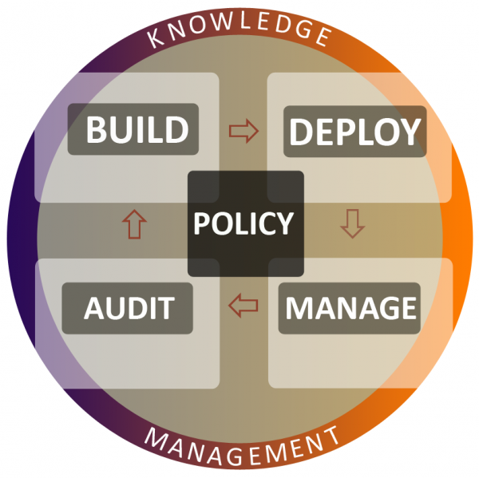
Stem cell hosts
At CFEngine we talk about stem cell hosts. A stem cell host is a generic foundation of software that is thenecessary and sufficientbasis for any future purpose. To make a finished system from this stem cell host, you only have to `differentiate' the system from this generic basis by running CFEngine.
Differentiation of hosts involves adding or subtracting software packages, and/or configuring the basic system. This strategy is cost effective, as you do not have to maintain more than one base-line `image' for each operating system; rather, you use CFEngine to implement and maintain the morphology of the differences. Stem cell hosts are normally built using PXE services by booting and installing automatically from the network.
Recommendations for Build
There are many approaches to building complete systems. When you use CFEngine, you should try to progress from thinking only about putting bytes on disks, to planning a long term set of promises to keep.
What services do you want to support?
What promises do you want to keep concerning these services?
Are these promises sustainable and convergently implementable?
Formulate proposed intentions in the form of CFEngine promises.
Discuss the impact of these in your team of CFEngine Mission Specialists (more than one pair of eyes).
It is worth spending extra time in the build planning to simplify your system as much as possible. A clear formulation here will save time both in maintenance and training later, as employees come and go. The better you understand your intentions, the simpler the system will be.
We cannot emphasize enough the value of the promise discipline. If you can formulate your requirements as promises to be kept, you have identified not only what, where, when and how, but also who is responsible and affected by every promise.
Building systems is resource intensive. CFEngine works well with rPath, allowing optimized build that can shave off many minutes from the build time for machines. CFEngine can then take over where rPath leaves off, performing surgically precise customization.
Recommendations for Deploy
Deploying a policy is a potentially dangerous operation, as it will lead to change, with associated risk. Side-effects are common, and often result from incomplete planning. (See the CFEngine Special Topics Guide onChange Management).
The following sequence forms a checklist for deploying successful policy change:
Discuss the impact of changes in the team.
Commit the changes to promises in version control, e.g. subversion.
Make a change in the CFEngine input files.
Run the configuration through ‘cf-promises --inform’ to check for problems.
Move the policy to a test system.
Try running the configuration in dry-run model: ‘cf-agent --dry-run’
Try running the policy once on a single system, being observant of unexpected behaviour.
Try running the policy on a small number of systems.
Construct a test environment and examine the effect of these promises in practice.
Move the policy to the production environment.
If possible, test on one or a few machines before releasing for general use.
CFEngine recommends a process of many small incremental changes, rather than large high-risk deployments.
CFEngine allows you to apply changes at a much finer level of granularity than any package based management system, thus it complements basic package management with its deployment and real time repair (see next section).
Recommendations for Manage
Managing systems is an almost trivial task with CFEngine. Once a model for desired state has been created, you just sit back and watch. You should be ready for `hands free' operation. No one should make changes to the system by hand. All changes should follow the deployment strategy above.
All that remains to do is wait for email alerts from CFEngine and to browse reports about the system state. In CFEngine Nova, these reports are generated automatically and integrated into the system knowledge base.
Most email alerts from CFEngine are information only. It is possible (but not recommended) to make CFEngine very verbose about its operations. It is common to look for confirmation early in the phase of adopting CFEngine, as trust in the software is building. Eventually users turn off the verbosity and the default is for CFEngine to send as little email or output as possible.
Consider a single line E-mail, in confirmation of a change, arriving from 1000 computers in a single day. Learning to trust the software saves unnecessary communication and needless human involvement. The Nova Mission Portal makes notification and alerting largely unnecessary.
Recommendations for Audit
Auditing systems is a continuous process when using CFEngine Nova. Report data are collected on a continuous and distributed basis. These data are then collected from each distributed location according to a schedule of your choosing to collate and integrate the reports from all systems.
The reports CFEngine provides are meant to offer simple summaries of the kind of information administrators need about their environment, avoiding unnecessary detail.
Available patches report
Patches already installed on system if available.
Classes report
User defined classes observed on the system – inventory data.
Compliance report
Total summary of host compliance, all promises aggregated over time.
File_changes report
Latest observed changes to system files with time discovered.
File_diffs report
Latest observed differences to system files, in a simple diff format.
Hashes report
File hash values measured (change detection).
Installed patches report
Patches not yet installed, but published by vendor if available.
Installed software report
Software already installed on system if available.
Lastseen report
Time and frequency of communications with peers, host reliability.
Micro-audit report
Generated by CFEngine self-auditing. This report is not aggregated.
Monitor summary report
Pseudo-real-time measurement of time series data.
Performance report
Time cost of verifying system promises.
Promise report
Per-promise average compliance report over time.
Promises not kept report
Promises that were recently un-kept.
Promises repaired report
Promises that were recently kept by repairing system state.
Setuid report
Known setuid programs found on system.
Variables report
Current variable values expanded on different hosts.
Summary BDMA workflow
Define a stem cell host template
Set up PXE network booting and kickstart / jumpstart OS tools with CFEngine integrated
Get CFEngine running and updating on all hosts, but making no system changes.
Define a service catalogue.
Discuss and formulate a policy increment, thinking convergence at all times
Publish (deploy) the policy.
Follow emails and reports in the CFEngine Knowledge Map (Manage).
Adjust policy if necessary, following procedures for change management (Manage)
View reports (or enjoy the silence) to audit system state.
CFEngine works well with package based management software. Users of rPath, for example, can achieve substantially improved efficiency in the build phase. CFEngine takes over where package based systems leave off, providing an unprecedented level of control `hands free'.
Hierarchies
Authority, Structure and Inheritance
What is a hierarchy?
A hierarchy is an organizational structure with tree-like branches. In a hierarchy, parts of the system belong to other parts, like collections of boxes inside other boxes. Each time you move, you either ascend or descend to a different level with respect to the root. Hierarchies are called Directed Acyclic Graphs (DAG) in mathematics (see figure below (a) and (b)).
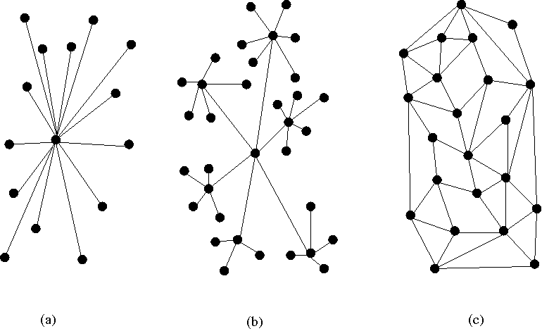
Hierarchies are often associated withauthority, as we use hierarchies to
organize human chains of command'. In this case, a hierarchy typically has
multiple levels, as in (b). You might interpret this diagram as showing a single
point of top level management, then satellite areas of middle management each
with their own clusters of slaves (leaf nodes). When drawing hierarchies, the
root of the tree is placed at the top or centre of the picture and is considered
to beauthoritative, i.e. more important than theleaves'. Each leaf node is
then subject to the control of the root in a top down manner.
The opposite of a hierarchy is a mesh or web (figure (c)), which has no special or privileged node – nodes are simply connected by some kind of relationship. In mesh organization, each individual has an area of responsibility and they talk on demand to other nodes, without any particular ranking. If you move in a mesh, you cannot easily measure how far you are away from a given point, as their might be more than one way of getting there.
Mesh architectures are often robust to failure as there can be multiple `peer to peer' routes for passing messages or information.
Top-down is is a cultural prejudice or `norm', as most human societies work in this way. However it is not a necessity. A network service is bottom-up – there it is the leaves which drive requests that end at a single central server. Hierarchies are special cases of networks, and (as all special cases) they are fragile, because the have top-down redundancy, but not bottom-up redundancy. We say that hierarchies have a Single Point of Faliure at the root, as failure at that point will disconnect the network.

How hierarchy compares to sets
Some languages (like Object Oriented languages) are designed to enforce hierarchies. CFEngine is not one of these. In CFEngine you can build a hierarchy if you want to, but you can also build any other kind of network. The parts of your system can also work with complete autonomy if that is what you want. CFEngine does not push a model onto you.
Consider this example of CFEngine classes. It expresses a tree structure.
bundle agent example
{
classes:
# Conceptual hierarchy
"top" or => { "middle_1", "middle_2", "middle_3" };
"middle_1" or => { "slave_1", "slave_2", "slave_3" };
"middle_2" or => { "slave_4", "slave_5", "slave_6" };
}
This example is contrived. The core classes that CFEngine cares about are the slaves, since CFEngine is a bottom-up system. The definition of the middle and top classes are aggregations of clusters of basic member attributes.
Consider this example of a geographically distributed organization, with finance, engineering and legal departments in three countries.
bundle agent example
{
classes:
"headquarters" or => { "usa", "uk", "norway" };
"department" or => { "finance", "engineering", "legal" };
}
We can express the full hierarchy like this:
usa.finance
usa.engineering
usa.legal
uk.finance
uk.engineering
uk.legal
norway.finance
norway.engineering
norway.legal
In this notation, the dot looks like `member' because the departments are smaller than the countries and are contained within them. You might feel that this model is upside down and that one should consider the finance department to be a unified global entity, with branches in three different countries. In that case, you would write
finance.uk
finance.usa
finance.norway
This highlights the fact that we often want to slice and dice organizations in different ways, and attending too closely to a single hierarchical model prevents that. The key is to notice that the `.' (dot) operator is really an intersection of sets (AND)1, and that this is a much more flexible notion than hierarchy.
Classes are sets
`Sets, sets, sets ... all you ever think about it sets!'
– Anonymous
Underlying hierarchies and networks is the concept of sets. A set or collection of something is just a number of instances that satisfy some property. For example, the set of all Windows machines, or the set of times between 2 and 3 o'clock. Sets can be thought of as networks in which the elements are all joined to each other by a common relationship `in the same set as'.
The name of a set can be thought of as a property that characterizes the members, and as such it behaves like an abstract box or container for the members. Containment in classes is the basis for hierarchies in Object Orientation, for instance.
We often write subset membership using a membership .' character, e.g. if
‘linux’ is the set of hosts with propertylinux', then a subset (or sub-class)
of these hosts is `debian' (see figure). The class 64 bit hosts is not a subset
of linux, as part of it lies outside. It is a subset of hosts.
linux.debian
linux AND debian
linux intersect debian
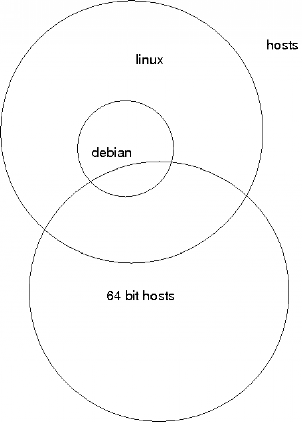
Sets can be made hierarchical when every subset is contained entirely by one and only one parent set, and in turn contains zero or more whole subsets which it does not share with any other. The problem with hierarchical sets is that they are too restrictive. If you design them incorrectly in the first place, you shut parts of the organization inside a box that prevents other parts from accessing them.
CFEngine works only with sets. It does not assume that sets never overlap. Indeed, it encourages you to use as many overlapping sets as possible to create optimum, simple categories to address the parts of your organization. This gives us great power. We can for instance extract the list of all English speaking entities from the definitions about our organization, by adding a defintion of set union (OR or ‘|’) and intersection (AND or ‘.’):
bundle agent example
{
classes:
"headquarters" or => { "usa", "uk", "norway" };
"department" or => { "finance", "engineering", "legal" };
"english_speaking" expression => "(usa|uk).!legal";
}
Thus the English speakers are those entities belonging to the USA `AND' the UK, excepting presumably the legal department.
For and against hierarchies
Hierarchies are good at bringing consistency. They are bad at scaling. They bring consistency because the root node acts as a single point of authority, i.e. the network speaks with a single voice. The scale poorly because they funnel communication to a single point of failure and processing so that the weakest link is the most authoratative node.
The Internet was designed by smart engineers to not be a hierarchy so that it would be robust to failure of single nodes. Since then, incorrigable humans have done their best to make it hierarchical from the viewpoint of the Domain Name Service (DNS) classification, so that organizational identifiers seem to fall into simple tree-like hierarchies.
Because the idea of hierarchy is so prevalent, it is many peoples' first instinct to build hierarchical organizations. At CFEngine we believe that the idea is over-used, and causes as many problems as it brings solutions, so CFEngine does not encourage it.
This document tries to show how to use hierarchy sensibly and usefully to simplify rather than to enforce authority.
Inheritance and its forms
Perhaps the most popular application of hierarchy is to use the property of having a single-point of definition to avoid maintaining the same information in more than one place.This is an efficiency. Inheritance is expressed in different ways:
Special subset extends base set properties, emphasizing that the leaf builds on, or adds the root in order to extend it.
Special subset inherits base set properties, emphasizing that the leaf is a consumer of the root and does not necessarily offer any more.
Special subset depends on, emphasizing that the root is a single point of failure for the leaf.
These are basically equivalent expressions of the same thing. No matter how we choose to express this, inheritance is a client-server relationship in which a single source is feeding a number of possible users.
In Promise Theory, we consider this to be a use-promise (service) relationship. A single point promises information, and a number of leaf-nodes promise to use it.
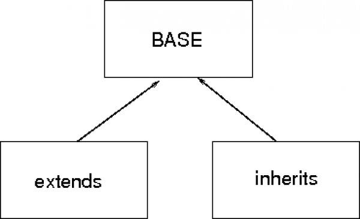
The figure shows how we maintain common information in a `base' or server. Then the users or consumers of the information are so-called derived classes.
We can use the notion of inheritance at different levels within CFEngine. These are a matter of using the global scope with bundle names.
Inheritance of classes/sets
We can aggregate smaller classes into larger ones (yielding multiple inheritance of class attributes):
bundle agent example
{
classes:
"group_name" or => {
"base_class_1",
"base_class_2",
"base_class_3"
};
}
Note that CFEngine naturally forms a bottom-up hierarchy, never a top-down hierarchy.
Inheritance of class definitions
CFEngine divides its promises into bundles that have private classes and variables. Bundles called `common bundles' define global classes, so they are automatically inherited by all other bundles.
Inheritance of variable definitions
Variables in CFEngine are globally accessible, but you must say what bundle you are talking about by writing ‘$(bundle.scalar)’ or ‘@(bundle.list)’. If you omit the `bundle', it is assumed that the variable is in the current bundle.
bundle agent child_bundle(parameter)
{
vars:
"extend_list" slist => { "extension", @(foreign.list) },
policy => "ifdefined";
reports:
"Inherit parameter value $(parameter)";
"Inherit foreign scalar value $(foreign.scalar)";
}
The policy ifdefined means that CFEngine will ignore the foreign list if it does not exist. This means you can include a number of lists from other bundles to extend the behviour of your own, if they are provided.
Inheritance of bundles
Bundles cannot really be merged like sets, but since they make promises you can use them.
bundle agent child_bundle
{
methods:
"extend_method" use => base_bundle(parameter1,parameter2);
}
A bundle can only be used if it exists, so we can also talk about plug-ins for bundles. In CFEngine, you include entire bundles either in the the bundlesequence, or as methods.
Normally you have to know exactly which bundles are going to exist in advance, as CFEngine considers missing code to be a security issue and will signal an error for missing bundles. This is the default behaviour, but we can override it using the following body agent control promises.
ignore_missing_bundles
Skip over any bundles listed in the bundlesequence constraint and continue without error.
ignore_missing_inputs
Skip over any input files listed in the inputs contraint and continue without error.
Be aware of the security implications of inheritance. Because of the assumption of authority, by promising to use the inheritance, you have subordinated your input to the source – or voluntarily given up the right to say no to whatever you have subscribed to. You have implicity trusted them.
Expressing is a' orhas a'
Let us re-emphasize for the record that CFEngine is not intended to be an object oriented system. At CFEngine we do not believe that Object Orientation is a good way to think about complex architectures.
That said, all object-oriented class relationships are expressable as set
relationships, as sets are the basis of all computing. We can therefore
understand relationships like is a' andhas a' in CFEngine, even if they are
not the recommended way of thinking.
For example, if we say that debian is a' (kind of) linux, or conversely that
linuxhas a' (subtype called) debian, then we are expression container
promises. We mean that debian is a subset of linux, and this means. In concrete
terms debian might or might not extend linux, or vice versa. When `objects' get
as complicated as operating systems it does not really make sense to speak so
simplistically.
If we want to say that a host `is a' server, we can code this as membership in the set of servers:
bundle agent example
{
classes:
"servers" or => { "host1", "host2" };
processes:
servers:: # the next rules `extend' or add to the class servers
"..."
}
How to organize your organization
Faced with the choice of how to classify systems, where does one begin? This is the dilemma that programmers face when designing new software, and if they make the wrong choices for their class hierarchy, it can cost a lot of work to redesign everything again from the beginning. This is why inheritance and strict class hierarchies are a very fragile way of organizing something. Using a patchwork of sets, CFEngine potentially avoids this problem – but you can still make a mess – it seems to be programmed into us to put systems into hierarchy-like `container' categories anyway, and this can end with confusion.
The keyt issue is: how tdo we slice and dice the cake into the largest pieces? In other words, what is that basic paradigm that you use to partition your system operations? Some alternatives include:
Geographically (by site or country)
By business department (sales, accounting, research)
By security zone (private, DMZ, public, etc)
By operating system (solaris, linux, darwin)
By customer or client (e.g. for managed services)
By task, service or role in the network (webservers, dns, workstations)
However, you choose to begin, you can further subdivide these major categories by simply ANDing with other categories.
Applications of hierarchy
When a small organization uses CFEngine, machines are often configured by "what they do" or "what they have" (e.g., they "are a webserver" or they "have ntp-based time synchronization"). These attributes are best expressed using CFEngine classes (and class promises), so that the .cf files can simply express configuration options based on "has-a" or "is-a" options.
For example:
bundle agent maintain_servers
{
classes:
"has_dhcpd" or => { classmatch("ipv4_10_\d+_\d+_1") };
"has_httpd" or => { "www_example_com" };
"has_sshd" or => { "any" };
processes:
has_dhcpd::
"dhcpd" restart_class => "start_dhcpd";
has_httpd::
"httpd" restart_class => "start_httpd";
has_sshd::
"sshd" restart_class => "start_sshd";
commands:
freebsd.start_dhcpd::
"/usr/local/etc/rc.d/isc-dhcpd.sh start";
start_httpd::
"/usr/local/sbin/apachectl start";
freebsd.start_sshd::
"/etc/rc.d/sshd start";
linux.start_sshd::
"/etc/init.d/ssh start";
}
As you can see, the #1 machine on every net-10 subnet has the dhcp server for that subnet, the machine www.example.com has a web server, and every machine has an ssh server.
But what happens when we want to maintain configuration information differently for different regions, or different IP addresses? Our usage of classes can get complicated, and can obscure the the details of what you want CFEngine to maintain. For example, if we want to maintain both internal and external webservers for different parts of a larger corporation, we might see something like this:
bundle agent example
{
files:
internal.has_httpd.nyc::
# Files maintained for internal webserver in New York
external.has_httpd.nyc::
# Files maintained for external webserver in New York
internal.has_httpd.london::
# Files maintained for internal webserver in London
external.has_httpd.london::
# Files maintained for external webserver in London
internal.has_httpd.tokyo::
# Files maintained for internal webserver in Tokyo
external.has_httpd.tokyo::
# Files maintained for external webserver in Tokyo
}
When you compound this by ading more services, locations, and finer and finer discriminations, the configuration files can rapidly grow so complicated as to obfuscate the intentions.
To be sure, having classes like nyc, london, and tokyo can be very useful when using CFEngine to centrally administer a large network of computers, but there are other ways of doing this that make maintenance easier and the logic more apparent.
1) Copying files to local machines 2) Symlinks 3) Local changes $(site_local) 4) Machine naming -> classes 5) Using dist classes to select from a set of machines, not just query them in order; also splayclass 6) Versioning, RPM/SVN for distro, vs CFEngine 7) updating with cf-agent -DUpdateNow
Table of Contents
Hierarchies
What is a hierarchy?
How hierarchy compares to sets
Classes are sets
For and against hierarchies
Inheritance and its forms
Expressing `is a' or `has a'
How to organize your organization
Applications of hierarchy
Footnotes
[1] It is a commutative operator, which is why it makes sense to write both usa.finance and finance.usa.
Iteration (Loops)
What is iteration?
Iteration is about repeating operations in a list. In CFEngine, iteration is used to make a number of related promises, that fall into a pattern based on elements of a list. This is what would correspond to something like this pseudo-code in an imperative language:
foreach item in list
make promise
end
In CFEngine, we do not write loops; rather, they are implicit. Suppose ‘@(list)’ is a list variable (the ‘@’ means list). If we refer to this identifier using a scalar reference ‘$(list)’, then CFEngine understands this to mean, take each scalar item in the list and repeat the current promise, replacing the instance with elements of the list in turn.
Iterated promises
Consider the following set of promises to report on the values of four separate monitor values:
bundle agent no_iteration
{
reports:
cfengine_3::
"mon.value_rootprocs is $(mon.value_rootprocs)";
"mon.value_otherprocs is $(mon.value_otherprocs)";
"mon.value_diskfree is $(mon.value_diskfree)";
"mon.value_loadavg is $(mon.value_loadavg)";
}
What we did was create four distinct reports, where each report announces which monitor variable it will be reporting, and the follows with the actual value of that monitor variable. For simple reports, this is perfectly adequate and straightforward, but it lacks abstraction and repeatability. Suppose we wanted to add a variable to report, we'd need a new report promise. If we wanted to change the wording of the reports, we'd possibly have to edit four promises, and this can be time consuming and error-prone.
Consider instead the following example, which generates exactly the same reports:
bundle agent iteration1
{
vars:
"monvars" slist => {
"rootprocs",
"otherprocs",
"diskfree",
"loadavg"
};
reports:
cfengine_3::
"mon.value_$(monvars) is $(mon.value_$(monvars))";
}
What we have done is to first specify a list variable monvars, and then iterate over the values contained in that list by referencing the list variable as a scalar. In CFEngine, simply referring to a list variable as a scalar automatically iterates over that variable.
Note that in terms of raw "lines of code", neither example shows an advantage (and in fact, the reports that are created by the iteration in this second example are identical to the reports in the first example).
However, we already have a gain in maintainer efficiency. By changing the single report format, we automatically change all the reports. And we have separated the semantics of the reports from the list of monitoring variables.
Admittedly, this is a simple example, but if you understand this one, we can continue with more compelling examples.
Iterating across multiple lists
Although iteration is a powerful concept in and of itself, CFEngine can iterate across multiple lists simultaneously. In the previous example, we looked at the current values of four monitor variables, but since CFEngine also gives us access to the averaged values and the standard deviation, how would we create a series of reports that listed all three statistical components of each variable? The answer is simply to do another iteration:
bundle agent iteration2
{
vars:
"stats" slist => { "value", "av", "dev" };
"monvars" slist => {
"rootprocs",
"otherprocs",
"diskfree",
"loadavg"
};
reports:
cfengine_3::
"mon.$(stats)_$(monvars) is $(mon.$(stats)_$(monvars))";
}
Through the addition of a new list called stats, we can now iterate over both it and the monvars list in the same promise. The reports that we thus generate will report on value_rootprocs, av_rootprocs, and dev_rootprocs, followed next by value_otherprocs, av_otherprocs, etc, ending finally with dev_loadavg. The leftward lists are iterated over completely before going to the next value in the rightward lists.
Iterating over nested lists
Recall that CFEngine iterates over complete promise units, not small parts of a promise. Let's look at an example that could show a common misunderstanding.
If you look at the monitor variables that are described in the CFEngine Reference Guide, you'll notice that some variables reference the number of packets in and out of a host. So you might be tempted to do the following, which might not do what you expect.
bundle agent iteration3a
{
vars:
"stats" slist => { "value", "av", "dev" };
"inout" slist => { "in", "out" };
"monvars" slist => {
"rootprocs", "otherprocs",
"diskfree",
"loadavg",
"smtp_$(inout)", #
"www_$(inout)", # look here
"wwws_$(inout)" #
};
reports:
cfengine_3::
"mon.$(stats)_$(monvars) is $(mon.$(stats)_$(monvars))";
}
What this says is, for each value in ‘$(inout)’, define ‘monvars’ to be a
variable. There are thus two attempts to defined the single name ‘monvars’ as a
list with two different right-hand-sides (one for in' and one forout'). This
will result in the error:
!! Redefinition of variable "monvars" (embedded list in RHS) in context "iteration3a"
!! Redefinition of variable "monvars" (embedded list in RHS) in context "iteration3a"
Whenever a promise contains an iteration (that is, when the promise string or any of its attributes contain a scalar reference to a list variable), that promise is automatically re-stated with successive values from the list. So the example above is exactly the same as if we had said the following:
bundle agent iteration3b
{
vars:
"stats" slist => { "value", "av", "dev" };
"monvars" slist => {
"rootprocs", "otherprocs",
"diskfree",
"loadavg",
"smtp_in",
"www_in", "wwws_in"
};
"monvars" slist => {
"rootprocs", "otherprocs",
"diskfree",
"loadavg",
"smtp_out",
"www_out", "wwws_out"
};
reports:
cfengine_3::
"mon.$(stats)_$(monvars) is $(mon.$(stats)_$(monvars))";
}
Notice that the promise is repeated twice, but the only thing that is different is the right hand side of the promise – the contents of the list, expanded using iteration over the inout list variable. Not only will this not do what we want, it will generate an error, because the second promise on the variable monvars will overwrite the value promised in the first promise! All that we will see in the reports are the second definition of the monvars list.
Fixing Iterating across nested lists
bundle agent iteration3c
{
vars:
"stats" slist => { "value", "av", "dev" };
"inout" slist => { "in", "out" };
"monvars_$(inout)" slist => {
"smtp_$(inout)", #
"www_$(inout)", # look here
"wwws_$(inout)" #
};
reports:
cfengine_3::
"mon.$(stats)_$(monvars_in) is $(mon.$(stats)_$(monvars_in))";
"mon.$(stats)_$(monvars_out) is $(mon.$(stats)_$(monvars_out))";
}
CFEngine does not allow an unlimited level of nesting, for reasons of efficiency and readability, and adding further levels of nesting will start to work against you. Note that we had to explicitly refer to the two variables that we created:$(monvars_in)and$(monvars_out), and specifying more will get very messy very quickly. However, the next sections show an easier-to-read workaround.
Iterating across multiple lists, revisted
When a list variable is referenced as a scalar variable (that is, when the list variable is referenced as $(list)) instead of as a list (using @(list)), CFEngine assumes that it should substitute each scalar from the list in turn, and thus iterate over the list elements using a loop.
If more than one list variable is referenced in this manner in a single promise, each list variable is iterated over, so that every possible combination of scalar components is represented. Consider the following example.
In this example, note that the letters list is referenced in both the left-hand and right-hand side of the promise, the digits list is referenced only in the left-hand side, and the symbols list is only referenced in the left-hand side:
bundle agent iteration4a
{
vars:
"letters" slist => { "a", "b" };
"digits" slist => { "1", "2" };
"symbols" slist => { "@", "#" };
commands:
"/bin/echo ${letters}, ${digits}+${digits}, "
args => "${letters} and ${symbols}'";
}
Like a backwards-reading odometer, the left-most variable cycles the fastest and the right-most list cycles the slowest. Most importantly, no matter how many times or places a list variable is referenced as a scalar in a single promise, each combination of values is visited only once, regardless of whether the iteration variable is in the lefthand side or the righthand side of a promise or both.
The example above is exactly equivalent to this (much more) verbose set of promises. As you can see, there are 2*2*2 = 8 promises generated, which contains every possible comination of elements from the lists letters, digits, and symbols:
bundle agent iteration4b
{
commands:
"/bin/echo a, 1+1, "
args => "a and @";
"/bin/echo b, 1+1, "
args => "b and @";
"/bin/echo a, 2+2, "
args => "a and @";
"/bin/echo b, 2+2, "
args => "b and @";
"/bin/echo a, 1+1, "
args => "a and #";
"/bin/echo b, 1+1, "
args => "b and #";
"/bin/echo a, 2+2, "
args => "a and #";
"/bin/echo b, 2+2, "
args => "b and #";
}
Nesting promises workaround
Recall the problem of nesting iterations, we can now see how to repair our error. The key is to ensure that there is a distinct and unique promise created for every combination of iterated variables that we want to use. Here is how to solve the problem of listing the input and output packet counts:
bundle agent iteration5a
{
vars:
"stats" slist => { "value", "av", "dev" };
"inout" slist => { "in", "out" };
"io_names" slist => { "smtp", "www", "wwws" };
"io_vars[$(io_names)_$(inout)]" int => "0";
"monvars" slist => {
"rootprocs", "otherprocs",
"diskfree",
"loadavg",
getindices("io_vars")
};
reports:
cfengine_3::
"mon.$(stats)_$(monvars) is $(mon.$(stats)_$(monvars))";
}
The output of this is
R: mon.value_rootprocs is $(mon.value_rootprocs)
R: mon.av_rootprocs is $(mon.av_rootprocs)
R: mon.dev_rootprocs is $(mon.dev_rootprocs)
R: mon.value_otherprocs is $(mon.value_otherprocs)
R: mon.av_otherprocs is $(mon.av_otherprocs)
R: mon.dev_otherprocs is $(mon.dev_otherprocs)
R: mon.value_diskfree is $(mon.value_diskfree)
R: mon.av_diskfree is $(mon.av_diskfree)
R: mon.dev_diskfree is $(mon.dev_diskfree)
R: mon.value_loadavg is $(mon.value_loadavg)
R: mon.av_loadavg is $(mon.av_loadavg)
R: mon.dev_loadavg is $(mon.dev_loadavg)
R: mon.value_wwws_in is $(mon.value_wwws_in)
R: mon.av_wwws_in is $(mon.av_wwws_in)
R: mon.dev_wwws_in is $(mon.dev_wwws_in)
R: mon.value_www_out is $(mon.value_www_out)
R: mon.av_www_out is $(mon.av_www_out)
R: mon.dev_www_out is $(mon.dev_www_out)
R: mon.value_www_in is $(mon.value_www_in)
R: mon.av_www_in is $(mon.av_www_in)
R: mon.dev_www_in is $(mon.dev_www_in)
R: mon.value_smtp_in is $(mon.value_smtp_in)
R: mon.av_smtp_in is $(mon.av_smtp_in)
R: mon.dev_smtp_in is $(mon.dev_smtp_in)
R: mon.value_wwws_out is $(mon.value_wwws_out)
R: mon.av_wwws_out is $(mon.av_wwws_out)
R: mon.dev_wwws_out is $(mon.dev_wwws_out)
R: mon.value_smtp_out is $(mon.value_smtp_out)
R: mon.av_smtp_out is $(mon.av_smtp_out)
R: mon.dev_smtp_out is $(mon.dev_smtp_out)
In this case, all we are doing is creating an array called io_vars. Note that the indices of the elements of the array are iterated from two lists, so in this case we'll have 2*3 = 6 elements in the array, covering all the combinations of the two lists inout and inout-names.
The values of the array elements can be whatever we like. In this case, we're making all the values 0, because we don't care what the actual values are – we only care about the keys of the array. We add the list of the keys to the monvars list by using the return value from getindices("io_vars").
Looking at the example above, you might just as easily be tempted to do the following:
bundle agent iteration5b
{
vars:
"stats" slist => { "value", "av", "dev" };
"inout" slist => { "in", "out" };
"io_names" slist => { "smtp", "www", "wwws" };
"io_vars[$(io_names)_$(inout)]" string => "$(io_names)_$(inout)";
"monvars" slist => {
"rootprocs", "otherprocs",
"diskfree",
"loadavg",
@(io_vars)
};
reports:
cfengine_3::
"mon.$(stats)_$(monvars) is $(mon.$(stats)_$(monvars))";
}
However, this is wrong. We cannot use @(io_vars), because io_vars is not a
list, it is an array! You can only use the @ dereferencing sigil on lists.
The power of iteration in CFEngine
Iteration and abstraction are power tools in CFEngine. In closing, consider the following simple and straightforward example, where we report on all of the monitoring variables available to us in CFEngine:
bundle agent iteration6
{
vars:
"stats" slist => {"value", "av", "dev"};
"inout" slist => {"in", "out"};
"io_names" slist => {
"netbiosns", "netbiosdgm", "netbiosssn",
"irc",
"cfengine",
"nfsd",
"smtp",
"www", "wwws",
"ftp",
"ssh",
"dns",
"icmp", "udp",
"tcpsyn", "tcpack", "tcpfin", "tcpmisc"
};
"io_vars[$(io_names)_$(inout)]" string => "$(io_names)_$(inout)";
"n" slist => {"0", "1", "2", "3"};
"n_names" slist => {
"temp",
"cpu"
};
"n_vars[$(n_names)$(n)]" string => "$(n_names)$(n)";
"monvars" slist => {
"rootprocs", "otherprocs",
"diskfree",
"loadavg",
"webaccess", "weberrors",
"syslog",
"messages",
getindices("io_vars"),
getindices("n_vars")
};
reports:
cfengine_3::
"mon.$(stats)_$(monvars) is $(mon.$(stats)_$(monvars))";
}
In this example, we create a two arrays (io_vars and n_vars), and a number of lists (but the most important ones are stats and monvars). We have but a single report promise, but it iterates over these latter two lists. With only a single reports promise and intelligent use of lists and arrays, we are able to report on every one of the 3*(8+2*18+4*2)==156 monitor variables. And to change the format of every report, we will only have a single statement to change.
Summary of iteration
Used judiciously and intelligently, iterators are a powerful way of expressing patterns. They enable you to abstract out the concepts from the nitty-gritty details, and to specify, in very few lines, complex combinations of elements. Perhaps more importantly, they ease the burden of maintainability, by making short work of repetitive problems.
STIGs
CFEngine STIGs Compliance Example
The Security Technical Implementation Guides (STIGs) are a method for standardized secure installation and maintenance of computer software and hardware created by the Defense Information Systems Agency (DISA) that provides configuration documents in support of the United States Department of Defense (DoD). For more information and additional STIGs tools, please refer to http://iase.disa.mil/stigs/
This page outlines how to achieve STIGs (Security Technical Implementation Guide) compliance with CFEngine 3. What is the purpose of this CFEngine STIGs example?
This sample policy and documentation is provided as an example of how CFEngine can be used to achieve STIGs compliance on a Red Hat system. Although it is a fully functional CFEngine 3 policy, it is designed to be an example only. It is not intended to be implemented without prior full analysis. The intention is for the users to review the policy file and documentation, and then create and/or modify their own compliance policy. What version of CFEngine is this example designed for?
The example policy is based on CFEngine 3 declarative language. It will work with both the community version of CFEngine 3 and the commercial CFEngine 3 Enterprise subscription. The policy is written with comments and handles per best practice in CFEngine 3. Which version of STIGs is this example based on?
This example is based on UNIX Security Checklist Version 5, Release 1.30 -- updated August 26, 2011 which can be found here. (see U_Unix-Sec3). Can I adopt this policy and be STIGs compliant?
In theory yes, but in reality there is more to the process of becoming STIGs compliant. Understanding each requirement and executing a suitable action requires proper analysis and insight into the system(s). We strongly recommended that all users review the policy and its accompanying documentation before implementing a STIGs policy in CFEngine. STIGs feature specific guidelines on logins and access, so executing the policy may change your access control and user accounts, which may render you unable to log in and/or access the machine with your traditional procedure. Does CFEngine (the company) assist on achieving STIGs compliance?
Yes. If you are a CFEngine Enterprise customer, CFEngine professional services are available to assist on multiple types of IT compliance, including STIGs, PCI, SOX etc. Contact us through your regular CFEngine representative or use the contact form to learn how CFEngine can help you implement and achieve desired compliance. What are the different parts of this policy example?
-
CFEngine policy file (ASCII), to be run by cf-agent
-
Explanation of the various policy components (human readable), referencing STIGs requirements id (such as
GEN000560)
What are the terms of this STIGs example?
This example policy is intended as a practical example of how to achieve STIGs compliance within the CFEngine framework. It is provided on an as-is basis, with no promise of support or updates. CFEngine makes no warranty on its functionality and system compatibility; neither is CFEngine an authoritative source on STIGs compliance assessment, and hence this is not intended as a statement on applicability and relevance on STIGs. Contact Us
Cloud Computing
What is Cloud Computing?
Cloud Computing refers to the commoditization of computing, i.e. a world in which computers may be borrowed on demand from a resource pool, like renting a car or loaning a book from the library. The term `Cloud' comes from a model of the Internet, where the precise details of how everything fits together are fuzzy. In a strongly networked environment, it might matter less where objects are physically located.
Commoditization of computers is an important strategy for business because it has the potential to eliminate a lot of the investment overhead for equipment during times of rapid change, as well as to recycle no-longer needed resources and save on redundant investment. You may think of Cloud Computing as `Recycle-able Computing' – a world in which you can use something for a short time and then discard it, without fear of waste.
Is Cloud Computing for everything and everyone?
Cloud Computing does for computers what the database did for information. Instead of having to keep reams of paper physically on site, databases allowed us to virtualize the information and care less about where the data were stored. Today we can call up a resource easily and cheaply from a database, and have someone else manage the service for us. Cloud computing allows us to dial up a new computer, like a book from the library, and then return it to the pool for others to use when we are done. It frees us from thinking about the specific location of the host, and we can appoint someone to manage this abstraction for us.
Of course, this has negative aspects too. In a security environment, you do indeed want to know exactly where your resources are. If you are storing diamonds, you want a bank not a library, and you want to know exactly where the physical objects are. The same is true for valuable data and computers.
Cloud Computing might be popular in the contemporary press, but it should be seen in clear terms as one strategy of several for managing resources efficiently. Some people still buy books, cars and dig wells, while others loan books, rent cars and get water from the water authority. Different economic models have different applications.
How does CFEngine enable Cloud Computing?
CFEngine has technology that can quickly bring machines, either real or virtual, from an uninitiated state to a fully working and customized state in seconds or minutes, without any human intervention. It can thus turn a generic resource into a specialized managed service on demand. CFEngine makes it extremely cheap to rebuild systems from scratch. This is exactly what a vibrant recycling regime needs to work efficiently.
Permanent infra-structure with vibrant change
Not all your computers should be disposable. Certain key infrastructure items like DNS servers, directory servers, databases, etc are part of a permanent infrastructure. What you need there is unwavering stability, not agility and impermanence.
CFEngine's lightweight repair capabilities are not only suitable for building machines quickly, but also for maintaining their state over time. It only pays to `rent services' (either from yourself or from a third party cloud provider) if you use the service infrequently, or your needs are constantly changing. The lack of permanence of cloud services can itself become an overhead if what you really need is constancy and security.
The overhead of investment in physical infrastructure is cheap if that one term investment will last you for a long time, unchanged. For that reason, cloud services will never solve everyone's needs all the time. It is merely one product of choice.
How does Cloud relate to virtualization?
Virtualization is the tool that makes Cloud Computing practical. Every time a physical machine needs to be deployed or retired, it requires the physical presence of a human. To deploy or recycle a physical machine, somehow usually has to touch the box.
To deploy and tear down a virtual machine, however, no one needs to touch anything literally. Machines can be installed, moved and retired on command, using the physical computers as the host for a purely software process. Virtualization turns computer deployment into a software application.
CFEngine can help to manage the deployment of virtual machines, by working on the physical host directly. It can also run on every virtual machine to manage them in a seamless process in which no one needs to think about what kind of machine software is running on. CFEngine can bring stability to the hosts or the virtual guests, or it can keep virtual machines running without the need to reboot[1].
Isn't virtualization inefficient?
Virtualized computers run as software simulations, adding an extra layer of overhead. Using virtual machines is thus not as fast or processor-efficient as using real machines, however the processing overhead is written off in different ways.
About 70-80% of the electrical power used by a computer is wasted just by turning it on. Only the remaining 20% go to solving real problems. However, most computers are very under-utilized (2-5%), so that many more machines than necessary are switched on at any one moment, compounding the cost of merely being switched on with an additional cost of cooling. This expense costs datacentres money every day. By squeezing 5-10 virtual machines into a single physical host container, one has a net saving of electrical power and man-power and often indistinguishable performance.
Virtualization is a form of packaging, which enables service providers to
separate services more easily with a Chinese Wall' barrier. This is useful when
dealing with services belonging to different companies or different users on the
same physical host. The packaging aspect of virtual machines is therefore a form
ofinformation management'.
Challenges for Cloud Computing
Dealing with scale, rapid change and impermanence could quickly lead to a processing overhead for humans, i.e. in the management of the cloud computers. In order to cope, some models force an oversimplification onto the user, forcing them to make do with second best (a `cheap rental').
However, the requirements of computing are getting more complicated, not less. Even as this new economic management of resources comes into focus, companies are having to deal with increasing legislation about privacy, security, compliance with audits, and more. CFEngine addresses this challenge by integrating transparency of process and business goals into its scalable approach to continuous maintenance.
The approach used by CFEngine is to:
Help to bring comprehension to the scope of the problem (Knowledge Management and Model-based Desired State Computing).
Help to implement change quickly and cheaply (through Lightweight Automation).
Help to bring measurable assurance about the state of compliance with policy (continuous maintenance).
CFEngine's model promise-based computing provides both a language of assurance for keeping promises, and a measuring stick against which compliance can be measured. It is not necessary to make ad hoc judgements; every statement about the system can be documented and woven into a narrative about the system that can be understood both by technicians and management stakeholders.
Deployment and maintaining real or virtual machines
Instant Managed services from `stem cell' hosts
Modelling the required properties of all machines and allowing non-experts insight into that model to see how their business goals are being handled.
Focus on outcomes rather than implementation.
Bring systems from any state into compliance.
What if I change my mind about Cloud Computing?
CFEngine can be used in a public or in a private cloud, and it can be used on local servers, desktops and even mobile devices. CFEngine is designed to be simple and lightweight, but powerful in its concepts and capabilities. It out-performs most other management software and imposes fewer limitations. If you want to move a service or a server-role, it is a simple matter to do so. CFEngine will continue to manage the service no matter what the underlying resource model.
The future - molecular computing
At CFEngine, we believe that Cloud Computing is just a rehearsal for a real change in the way computing services are managed. In the future, the capabilities that assured management of recycle-able parts bring to services will allow atomic services to be combined into new and complex fabrics of functionality. The chemistry of these services will enable businesses and other organizations to express unique functions by combining a standard set of elementary parts. CFEngine's role in such a fabric would be the same as today: bringing self-maintaining, knowledge-based management to an infrastructure where users are free to make the most of shared pools.
Footnotes
[1]: Rebooting a virtual machine in the cloud often means losing all of its special properties, so one needs to be ready to rebuild in case of catastrophe.
Modularity and Orchestrating System Policy
What is modularity?
Modularity is the ability to separate concerns within a total process, and hide the details of the different concerns in different containers. In CFEngine, this is aservice oriented view, in which different aspects of a problem are separated and turned into generic components that offer a service. We often talk about black boxes, grey boxes or white boxes depending on the extent to which the user of a service can see the details within the containers.
What is orchestration?
Orchestration is the ability to coordinate many different processes in time and space, around a system, so that the sum of those processes yields a harmonious result through cooperation.
Orchestration is not about centralized control, though this is common misperception. An orchestra does not manage to play a symphony because the conductor pulls every player's strings or blows every trumpet in person, but rather because each autonomous player has a copy of the script, knows what to do, and can use just the little additional information from the conductor to access a viewpoint that is not available to an individual. An orchestra is a weakly coupled expert system in which the management (conductor) provides a service to the players.
CFEngine works like an orchestra – this is why is scales so well. Each computer is an autonomous entity, getting its script and a few occasional pieces of information from the policy server (conductor). The coupling between the agents is weak – there is slack that makes the behaviour robust to minor errors in communication or timing.
How does CFEngine deal with modularity and orchestration?
Promise Theory provides simple principles for hiding details: agents are considered to reveal a kind of service interface to peers, that is advertised by making a promise to someone. We assume an agent exerts best effort in keeping its promises. Orchestration requires a promise to coordinate and the promise to use that coordination service. These basic ideas are built into CFEngine.
CFEngine provides containers called bundles for creating modular parts. Bundles can be independent (and therefore parallelizable) or they can be dependent (in which case the sequence in which they verify their promises matters).
In a computer centre with many different machines, there is an additional dimension to orchestration – multiple orchestras. Each machine has a number of resources that need to be orchestrated, and the different machines themselves might also need to cooperate because they provide services to one another. The principles are the same in both cases, but the confusion between them is typically the reason why large systems do not scale well.
Levels of policy abstraction
CFEngine offers a number of layers of abstraction. The most fundamental atom in CFEngine is the promise. Promises can be made about many system issues, and you described in what context promises are to be kept.
Menu level
At this high level, a user selects' from a set of pre-definedservices' (or
bundles in CFEngine parlance). In commercial editions, users may view the set of
services as a Service Catalogue, from which each host selects its roles. The
selection is not made by every host, rather one places hosts into roles that
will keep certain promises, just as different voices in an orchestra are
assigned certain parts to play.
bundle agent service_catalogue # menu
{
methods:
any:: # selected by everyone
"everyone" usebundle => time_management,
comment => "Ensure clocks are synchronized";
"everyone" usebundle => garbage_collection,
comment => "Clear junk and rotate logs";
mailservers:: # selected by hosts in class
"mail server" -> { "goal_3", "goal_1", "goal_2" }
usebundle => app_mail_postfix,
comment => "The mail delivery agent";
"mail server" -> goal_3,
usebundle => app_mail_imap,
comment => "The mail reading service";
"mail server" -> goal_3,
usebundle => app_mail_mailman,
comment => "The mailing list handler";
}
The resulting menu of services can be browsed in the Mission Portal interface.
A human-readable Service Catalogue generated from technical specifications shows what goals are being attended to automatically
Bundle level
At this level, users can switch on and off predefined features, or re-use standard methods, e.g. for editing files:
body common control
{
bundlesequence => {
webserver("on"),
dns("on"),
security_set("on"),
ftp("off")
};
}
The set of bundles that can be selected from is extensible by the user.
Promise level
This is the most detailed level of configuration, and gives full convergent promise behaviour to the user. At this promise level, you can specificy every detail of promise-keeping behaviour, and combine promises together, reusing bundles and methods from standard libraries, or creating your own.
bundle agent addpasswd
{
vars:
# want to set these values by the names of their array keys
"pwd[mark]" string => "mark:x:1000:100:Mark B:/home/mark:/bin/bash";
"pwd[fred]" string => "fred:x:1001:100:Right Said:/home/fred:/bin/bash";
"pwd[jane]" string => "jane:x:1002:100:Jane Doe:/home/jane:/bin/bash";
files:
"/etc/passwd" # Use standard library functions
create => "true",
comment => "Ensure listed users are present",
perms => mog("644","root","root"),
edit_line => append_users_starting("addpasswd.pwd");
}
Spread-sheet level (data-driven)
CFEngine community and commercial editions support a kind of spreadsheet. In a spreadsheet approach, you create only the data to be inserted into predefined promises. The data are entered in tabular form, and may be browsed in the web interface. This form of entry is preferred in some environments, especially on the Windows platform.
Is CFEngine patch-oriented or package-oriented?
Some system management products are patching systems. They package lumps of software and configuration along with scripts. If something goes wrong they simply update or replace the package with a new one. This is a patching model of system installation, but it is not a good model for repair as it nearly always leads to interruption of service or even requires a reboot.
Installation of packages overwrites too much data in one go to be an effective model of simple repair1. It can be both ineffecient and destructive. CFEngine manages addressable entities at the lowest possible level so that ultra-fine-grained repair can be performed with no interruption of service, e.g. altering a field within a line in a file, or restarting one process, or altering one bit of a flag in each file in a set of directories. The power to express sophisticated patterns is what makes CFEngine's approach both non-intrusive and robust.
High level services in CFEngine
CFEngine is designed to handle high level simplicity (without sacrificing low level capability) by working with configuration patterns, after all configuration is all about promising consistent patterns of system state in the resources of the system. Lists, for instance, are a particularly common kind of pattern: for each of the following... make a similar promise. There are several ways to organize patterns, using containers, lists and associative arrays. Let's look at how to configure a number of application services.
At the simplest or highest level, we can turn services into "genes" to switch on and off on your basic "stem cell" machines.
body agent control
{
bundlesequence => {
webserver("on"),
dns("on"),
security_set("on"),
ftp("off")
};
}
This obviously looks simple, but this kind of simplicity is cheating as we are hiding all the details of what is going to happen – we don't know if they are hard-coded, or whether we can decide ourselves. Anyone can play that game! The true test is whether we can retain the power to decide the low-level details without having to program in a low level language like Ruby, Python or Perl. Let's peel back some of the layers, knowing that we can hide as many of the details as we like.
A simple, but low level approach to deploying a service, that veteran users will recognize, is the following. This is a simple example of orchestration between a promise to raise a signal about a missing process and another promise to restart said process once its absence has been discovered and signalled.
bundle agent application_services
{
processes:
"sshd" restart_class => "start_ssh";
"httpd" restart_class => "start_spache";
commands:
start_ssh::
"/etc/init.d/sshd restart";
start_apache::
"/etc/init.d/apache restart";
}
But the first thing we see is that there is a repeated pattern, so we could rewrite this as a single promise for a list of services, at the cost of a loss of transparency. However, this is the power of abstraction.
bundle agent application_services
{
vars:
"service" slist => { "ssh", "apache", "mysql" };
#
# Apply the following promises to this list...
#
services:
"$(service)";
}
Hiding details
Resource abstraction, or hiding system specific details inside a kind of grey-box, is just another service as far as CFEngine is concerned – and we generally map services to bundles.
Many system variables are discovered automatically by CFEngine and provided "out of the box", e.g. the location of the filesystem table might be /etc/fstab, or /etc/vfstab or even /etc/filesystems, but CFEngine allows you to refer simply to $(sys.fstab). Soft-coded abstraction needs cannot be discovered by the system however. So how do we create this mythical resource abstraction layer? It is simple. Elsewhere we have defined basic settings.
bundle common res # abstraction layer
{
vars:
solaris::
"cfg_file[ssh]" string => "/etc/sshd_config";
"daemon[ssh] " string => "sshd";
"start[ssh] " string => "/etc/init.d/sshd restart";
linux.SuSE::
"cfg_file[ssh]" string => "/etc/ssh/sshd_config";
"daemon[ssh] " string => "sshd";
"start[ssh] " string => "/etc/init.d/sshd restart";
default::
"cfg_file[ssh]" string => "/etc/sshd_config";
"daemon[ssh] " string => "sshd";
"start[ssh] " string => "/etc/init.d/sshd restart";
classes:
"default" and => { "!SuSE", "solaris" };
}
Some of the attempts to recreate a CFEngine-like tool try to hard code many decisions, meaning that minor changes in operating system versions require basic re-coding of the software. CFEngine does not make decisions for you without your permission.
Black, grey and white box encapsulation in CFEngine
CFEngine's ability to abstract system decisions as promises also applies to bundles of promises. After all, we can package promises as bumper compendia for grouping together related matters in a single package. Naturally, CFEngine never abandons its insistence on convergence, merely for the sake of making things look simple. Using CFEngine, you can create convergent orchestration.
bundle agent services
{
vars:
"service" slist => { "dhcp", "ntp", "sshd" };
methods:
"any" usebundle => fix_service("$(service)"),
comment => "Make sure the basic application services are running";
}
The code above is all you really want to see. The rest can be hidden in libraries that you rarely look at. In CFEngine, we want the intentions to shine forth and the low level details to be clear on inspection, but hidden from view.
We can naturally modularize the packaged bundle of fully convergent promises and keep it as library code for reuse. Notice that CFEngine adds comments in the code that follow processes through execution, allowing you to see the full intentions behind the promises in logs and error messages. In commercial versions, you can trace these comments to see your process details.
bundle agent fix_service(service)
{
files:
"$(res.cfg_file[$(service)])"
#
# reserved_word => use std templates, e.g. cp(), p(), or roll your own
#
copy_from => cp("$(g.masterfiles)/$(service)","policy_host.mydomain"),
perms => p("0600","root","root"),
classes => define("$(service)_restart", "failed"),
comment => "Copy a stock configuration file template from repository";
processes:
"$(res.daemon[$(service)])"
restart_class => canonify("$(service)_restart"),
comment => "Check that the server process is running...";
commands:
"$(res.start[$(service)])"
comment => "Method for starting this service",
ifvarclass => canonify("$(service)_restart");
}
Bulk operations are handled by repeating patterns over lists
The power of CFEngine is to be able to handle lists of similar patterns in a powerful way. You can also wrap the whole experience in a method-bundle, and we can extend this kind of pattern to implement other interfaces, all without low level programming.
#
# Remove certain services from xinetd - for system hardening
#
bundle agent linux_harden_methods
{
vars:
"services" slist => {
"chargen",
"chargen-udp",
"cups-lpd",
"finger",
"rlogin",
"rsh",
"talk",
"telnet",
"tftp"
};
methods:
#
# for each $(services) in @(services) do disable_xinetd($(services))
#
"any" usebundle => disable_xinetd("$(services)");
}
In the library of generic templates, we may keep one or more methods for implementing service disablement. For example, this simple interface to Linux's chkconfig is one approach, which need not be hard-coded in Ruby using Cfeninge.
#
# For the standard library
#
bundle agent disable_xinetd(name)
{
vars:
"status"
string => execresult("/sbin/chkconfig --list $(name)", "useshell");
classes:
"on" expression => regcmp(".*on","$(status)");
"off" expression => regcmp(".*off","$(status)");
commands:
on::
"/sbin/chkconfig $(name) off",
comment => "disable $(name) service";
reports:
on::
"disable $(name) service.";
off::
"$(name) has been already disabled. Don't need to perform the action.";
}
Ordering operations in CFEngine
Ordering of operations is less important than you probably think. We are taught to think of computing as an linear sequence of steps, but this ignores a crucial fact about distributed systems: that many parts are independent of each other and exist in parallel.
Nevertheless there are sometimes cases of strong inter-dependency (that we strive to avoid, as they lead to most of the difficulties of system management) where order is important. In re-designing CFEngine, we have taken a pragmatic approach to ordering. Essentially, CFEngine takes care of ordering for you for most cases – and you can override the order in three ways:
CFEngine checks promises of the same type in the order in which they are defined, unless overridden
Bulk ordering of composite promises (called bundles) is handled using an overall list using the bundlesequence (replaces the actionsequence in previous CFEngines)
Dependency coupling through dynamic classes, may be used to guarantee ordering in the few cases where this is required, as in the example below:
Bundle ordering
There are two methods, working at different levels. At the top-most level there is the master bundlesequence
body common control
{
bundlesequence => { "bundle_one", "bundle_two", "bundle_three" };
}
For simple cases this is good enough, but the main purpose of the bundlesequence is to easily be able to switch on or off bundles by commenting them out.
A more flexible way of ordering bundles is to wrap the ordered process in a master-bundle. Then you can create new sequences of bundles (parameterized in more sophisticated ways) using methods promises. Methods promises are simply promises to re-use bundles, possibly with different parameters.
The default behaviour is to retain the order of these promises; the effect is to `execute' these bundles in the assumed order:
bundle agent a_bundle_subsequence
{
methods:
classes::
"any" usebundle => bundle_one("something");
"any" usebundle => bundle_two("something");
"any" usebundle => bundle_three("something");
}
Alternatively, the same effect can be achieved as follows.
bundle agent a_bundle_subsequence
{
methods:
classes::
"any" usebundle => generic_bundle("something","one");
"any" usebundle => generic_bundle("something","two");
"any" usebundle => generic_bundle("something","three");
}
Or ultimately:
bundle agent a_bundle_subsequence
{
vars:
"list" slist => { "one", "two", "three"};
methods:
classes::
"any" usebundle => generic_bundle("something","$(list)");
}
Overriding order
CFEngine is designed to handle non-deterministic events, such as anomalies and unexpected changes to system state, so it needs to adapt. For this, there is no deterministic solution and approximate methods are required. Nevertheless, it is possible to make CFEngine sort out dependent orderings, even when confounded by humans, as in this example:
bundle agent order
{
vars:
"list" slist => { "three", "four" };
commands:
ok_later::
"/bin/echo five";
any::
"/bin/echo one" classes => define("ok_later");
"/bin/echo two";
"/bin/echo $(list)";
}
The output of which becomes:
Q: ".../bin/echo one": one
Q: ".../bin/echo two": two
Q: ".../bin/echo three": three
Q: ".../bin/echo four": four
Q: ".../bin/echo five": five
Distributed Orchestration between hosts with CFEngine Enterprise
CFEngine Enterprise edition adds many powerful features to CFEngine, including a decentralized approach to coordinating activities across multiple hosts. Some tools try to approach this by centralizing data from the network in a single location, but this has two problems:
It leads to a bottleneck by design that throttles performance seriously.
It relies on the network being available.
With CFEngine Nova there are are both decentralized network approaches to this problem, and probabilistic methods that do not require the network at all.
Basic communication methods for orchestration
The two examples below illustrate the basic syntax constructions for communication using systems. We can pass class data and variable data between systems in a peer to peer fashion, or through an Enterprise hub. You can run these with a server and an agent just on localhost to illustrate the principles.
In this first example, three persistent classes, with names following a known pattern are defined on a remote system (by the agent). The server bundle then grants access to these using an access promise. Finally, a function call to remoteclassesmatching imports the classes, with a prefix to the local system.
body common control
{
bundlesequence => { "overture" };
inputs => { "cfengine_stdlib.cf" };
}
body server control
{
allowconnects => { "127.0.0.1" , "::1",};
allowallconnects => { "127.0.0.1" , "::1", };
trustkeysfrom => { "127.0.0.1" , "::1",};
}
#######################################################
bundle agent overture
{
classes:
"extended_context"
expression => remoteclassesmatching(".*did.*","127.0.0.1","yes","got");
files:
"/etc/passwd"
create => "true",
classes => set_outcome_classes;
reports:
got_did_task_one::
"task 1 complete";
extended_context.got_did_task_two::
"task 2 complete";
extended_context.got_did_task_three::
"task 3 complete";
}
body classes set_outcome_classes
{
promise_kept => { "did_task_one","did_task_two", "did_task_three" };
promise_repaired => { "did_task_one","did_task_two", "did_task_three" };
#cancel_kept => { "did_task_one" };
persist_time => "10";
}
bundle server access_rules()
{
access:
"did.*"
resource_type => "context",
admit => { "127.0.0.1" };
}
The output of this, on success is simply:
R: task 1 complete
R: task 2 complete
R: task 3 complete
In this second example, we pass actual variable data between hosts. The generic peer function remotescalar can address any other host running cf-serverd. The abbreviated interface hubknowledge assumes that it should get data from a hub.
Both these functions ask for an identifier; it is up to the server to interpret what this means and to return a value of its choosing. If the identifier matches a persistent scalar variable (such as is used to count distributed processes in CFEngine Enterprise) then this will be returned preferentially. If no such variable is found, then the server will look for a literal string in a server bundle with a handle that matches the requested object.
body common control
{
bundlesequence => { "overture" };
inputs => { "cfengine_stdlib.cf" };
}
body server control
{
allowconnects => { "127.0.0.1" , "::1",};
allowallconnects => { "127.0.0.1" , "::1", };
trustkeysfrom => { "127.0.0.1" , "::1",};
}
#######################################################
bundle agent overture
{
vars:
"remote" string => remotescalar("test_scalar","127.0.0.1","yes");
"know" string => hubknowledge("test_scalar");
"count_getty" string => hubknowledge("count_getty");
processes:
# Use the enumerated library body to count hosts running getty
"getty"
comment => "Count this host if a job is matched",
classes => enumerate("count_getty");
reports:
!elsewhere::
"GOT remote scalar $(remote)";
"GOT knowedge scalar $(know)";
"GOT persistent scalar $(xyz)";
}
#######################################################
bundle server access_rules()
{
access:
"value of my test_scalar, can expand variables here - $(sys.host)"
handle => "test_scalar",
comment => "Grant access to contents of test_scalar VAR",
resource_type => "literal",
admit => { "127.0.0.1" };
"XYZ"
resource_type => "variable",
handle => "XYZ",
admit => { "127.0.0.1" };
}
You can run this example on a single host, running the server, the agent and the hub (if you have Enterprise CFEngine). The output will be something like this:
host$ ./cf-agent -f ~/test.cf -K
R: GOT remote scalar value of my test_scalar, can expand variables here - cflu-10004
R: GOT knowedge scalar value of my test_scalar, can expand variables here - cflu-10004
R: GOT persistent scalar 1
Run job or reboot only if n out m systems are running
The ability to base local promises on global knowledge seems superficially attractive in some cases. As a strategy this way of thinking requires a lot of caution. We have to assume that all knowledge gathered about an environment is subject to errors, latencies and a dozen other uncertainties that make any snapshot of remotely assessed current state subject to considerable healthy suspicion. This is not a weakness of CFEngine – in fact CFEngine has mechanisms that make it as reliable as you are likely to find in any technology – rather it is a fundamental limitation of distributed systems, and it is strongly dependent on the architectures you build.
In the following example, we show how you can make certain decisions based on global, uncertain knowledge, allowing for the fact that the information is uncertain. In other words, we aim to err on the safe side. In this case we ask how could we reboot systems after an upgrade only if doing so would not jeopardize a Service Level Agreement to have at least 20 machines running at all times. Since the globally counted instances of a running process cannot be greater than the actual number, this particular problem satisfies the constraint of erring on the side of caution.
############################################################
#
# Keep a special promise only if at least n or m hosts
# keep a specific promise
#
# This method works with Enterprise CFEngine
#
# If you want to test this on localhost, just edit /etc/hosts
# to add host1 host2 host3 host4 as aliases to localhost
#
############################################################
body common control
{
bundlesequence => { "n_of_m_symphony" };
inputs => { "cfengine_stdlib.cf" };
}
############################################################
bundle agent n_of_m_symphony
{
vars:
"count_compliant_hosts" string => hubknowledge("running_myprocess");
classes:
"reboot" expression => isgreaterthan("$(count_compliant_hosts)","20");
processes:
"myprocess"
comment => "Count this host if a job is matched",
classes => enumerate("running_myprocess");
commands:
reboot::
"/bin/shutdown now";
}
#######################################################
bundle server access_rules()
{
access:
"value of my test_scalar, can expand variables here - $(sys.host)"
handle => "test_scalar",
comment => "Grant access to contents of test_scalar VAR",
resource_type => "literal",
admit => { "127.0.0.1" };
"running_myprocess"
resource_type => "variable",
admit => { "127.0.0.1" };
}
The self-healing chain - inverse Dominoes
A self-healing chain is the opposite of a dominoe event. If a part of the chain is `down', it will be revived. If these events depend on one another, then the resuscitation of this part which cause all of the subsequent parts to be repaired too.
Let's start with the more common case of the independently repairable services, such as one might find in a multi-tier architecture: database, web-servers, applications etc.
The following example can be run on a multiple hosts or on a single host, using the aliases described in the example. It illustrates coordination through the use of CFEngine's remoteclasses function in the Enterprise edition to get confirmation of the self-healing structure. In fact, the verification of the self-healing is optional if one trusts the underlying system.
############################################################
#
# The self-healing tower: Anti-Dominoes
#
# This method works with CFEngine Enterprise
#
# If you want to test this on localhost, just edit /etc/hosts
# to add host1 host2 host3 host4 as aliases to localhost
#
############################################################
body common control
{
bundlesequence => { "weak_dependency_symphony" };
inputs => { "cfengine_stdlib.cf" };
}
body server control
{
allowconnects => { "127.0.0.1" , "::1", @(def.acl) };
allowallconnects => { "127.0.0.1" , "::1", @(def.acl) };
}
############################################################
bundle agent weak_dependency_symphony
{
methods:
# We have to seed the beginning by creating the tower
# /tmp/tower_localhost
host1::
"tower" usebundle => tier1,
classes => publish_ok("ok_O");
host2::
"tower" usebundle => tier2,
classes => publish_ok("ok_1");
host3::
"tower" usebundle => tier3,
classes => publish_ok("ok_2");
host4::
"tower" usebundle => tier4,
classes => publish_ok("ok_f");
classes:
ok_O:: # Wait for the methods, report on host1 only
"check1" expression => remoteclassesmatching("ok.*","host2","yes","a");
"check2" expression => remoteclassesmatching("ok.*","host3","yes","a");
"check3" expression => remoteclassesmatching("ok.*","host4","yes","a");
reports:
ok_O::
"tier 1 is ok";
a_ok_1::
"tier 2 is ok";
a_ok_2::
"tier 3 is ok";
a_ok_f::
"tier 4 is ok";
ok_O&a_ok_1&a_ok_2&a_ok_f::
"The Tower is standing";
!(ok_O&a_ok_1&a_ok_2&a_ok_f)::
"The Tower is down";
}
############################################################
bundle agent tier1
{
files:
"/tmp/something_to_do_1"
create => "true";
}
bundle agent tier2
{
files:
"/tmp/something_to_do_2"
create => "true";
}
bundle agent tier3
{
files:
"/tmp/something_to_do_3"
create => "true";
}
bundle agent tier4
{
files:
"/tmp/something_to_do_4"
create => "true";
}
############################################################
bundle server access_rules()
{
access:
"ok.*"
resource_type => "context",
admit => { "127.0.0.1" };
}
############################################################
body classes publish_ok(x)
{
promise_repaired => { "$(x)" };
promise_kept => { "$(x)" };
cancel_notkept => { "$(x)" };
persist_time => "2";
}
If we execute this simple test on a single host, or allow it to be executed on distributed hosts, the chain forms and quickly stands up the system into a tower of dependencies.
host$ ~/LapTop/cfengine/core/src/cf-agent -f ~/orchestrate/self-healing-chain.cf -K
R: tier 1 is ok
R: tier 2 is ok
R: tier 3 is ok
R: tier 4 is ok
R: The Tower is standing
If we break the tower, by giving it an impossible promise to keep, e.g. changing the name of the directory in tier 3 to something that cannot be created2, then tier 3 will fail and the output looks like this:
console
host$ ~/LapTop/cfengine/core/src/cf-agent -f ~/orchestrate/self-healing-chain.cf -K
Unable to make directories to /xtmp/something_to_do_3
!!! System reports error for cf_mkdir: "Permission denied"
R: tier 1 is ok
R: tier 2 is ok
R: tier 4 is ok
R: The Tower is down
`
Clearly, whatever tier 3 is really supposed to do, any promise failure would result in the same behaviour. If we then correct the policy to make it repairable, the output heals quickly:
host$ ~/LapTop/cfengine/core/src/cf-agent -f ~/orchestrate/self-healing-chain.cf -K
R: tier 1 is ok
R: tier 2 is ok
R: tier 4 is ok
R: The Tower is down
R: tier 3 is ok
R: The Tower is standing
A Domino sequence
A different kind of orchestration is a domino cascade, that starts from some initial trigger, and causes a change in one host that causes a change in the next, etc. These examples show how this can easily be carried out by CFEngine. Dominio cascades can be done with Community or Enterprise editions, but are limited to single machines in each step.
The basic principle is shown below3.
Note: to simulate this on a single host, start the server and agent with this same file as input, and make aliases to localhost in /etc/hosts as described in the example.
################################################################
#####
##### Dominoes
#####
##### This method works with either Community of Enterprise
#####
##### If you want to test this on localhost, just edit /etc/hosts
##### to add host1 host2 host3 host4 as aliases to localhost
#####
################################################################
body common control
{
bundlesequence => { "dominoes_symphony" };
inputs => { "cfengine_stdlib.cf" };
}
################################################################
bundle agent dominoes_symphony
{
methods:
# We have to seed the beginning by creating the dominoes
# /tmp/dominoes_localhost
host1::
"dominoes" usebundle => hand_over("localhost","host1","overture");
host2::
"dominoes" usebundle => hand_over("host1","host2","first_movement");
host3::
"dominoes" usebundle => hand_over("host2","host3","second_movement");
host4::
"dominoes" usebundle => hand_over("host3","host4","final_movement"),
classes => if_ok("finale");
reports:
finale::
"The visitors book of the Dominoes method"
printfile => visitors_book("/tmp/dominoes_host4");
}
################################################################
bundle agent hand_over(predecessor,myalias,method)
{
# This is a wrapper for the orchestration
files:
"/tmp/tip_the_dominoes"
comment => "Wait for our cue or relay/conductor baton",
copy_from => secure_cp("/tmp/dominoes_$(predecessor)","$(predecessor)"),
classes => if_repaired("cue_action");
methods:
cue_action::
"the music happens"
comment => "One off activity",
usebundle => $(method),
classes => if_ok("pass_the_stick");
files:
pass_the_stick::
"/tmp/tip_the_dominoes"
comment => "Add our signature to the dominoes's tail",
edit_line => append_if_no_line("Knocked over $(myalias) and did: $(method)");
"/tmp/dominoes_$(myalias)"
comment => "Dominoes in position to be beamed up by next agent",
copy_from => local_cp("/tmp/tip_the_dominoes");
}
################################################################
bundle agent overture
{
reports:
!xyz::
"Singing the overture...";
}
bundle agent first_movement
{
reports:
!xyz::
"Singing the first adagio...";
}
bundle agent second_movement
{
reports:
!xyz::
"Singing second allegro...";
}
bundle agent final_movement
{
reports:
!xyz::
"Trumpets for the finale";
}
################################################################
bundle server access_rules()
{
access:
"/tmp"
admit => { "127.0.0.1" };
"did.*"
resource_type => "context",
admit => { "127.0.0.1" };
}
body printfile visitors_book(file)
{
file_to_print => "$(file)";
number_of_lines => "10";
}
When executed, this produces output only on the final host in the chain, showing the correct ordering out operations. The sequence also passes a file from host to host as a coordination token, like a baton in a relay race, and each host signs this so that the final host has a log of eery host involved in the cascade.
R: Singing the overture...
R: Singing the first adagio...
R: Singing second allegro...
R: Trumpets for the finale
R: The visitors book of the Dominoes method
R: Knocked over host1 and did: overture
R: Knocked over host2 and did: first_movement
R: Knocked over host3 and did: second_movement
R: Knocked over host4 and did: final_movement
The average time for such a cascade to complete will be half the length of the chain multiplied by the run-interval, if normal cf-execd splaytime is used. Without any splaying, the average time will be the run interval multiplied by the chain length. The completion time could be increased by using cf-runagent.
A Chinese Dragon star pattern
The Chinese dragon darts back and forth between different hosts, forming a chain of events, and leaving a trail behind it. This pattern is much like the Domino pattern, except that it follows a star. The orchestrated sequence of events follows the dragon from its lair to the first satellite host, then back to its lair to record the journey, then out to the next satellite, then back to its lair, etc.
A prototypical application for this kind of pattern is taking servers, one by one, off a load balancer (in the dragon's lair) and then upgrading them, before reinstating them and moving on to the next host.
################################################################
#####
##### Chinese Dragon Dancing on a Star
#####
##### This method works with either Community or Enterprise.
##### and uses named signals
#####
##### If you want to test this on localhost, just edit /etc/hosts
##### to add host1 host2 host3 host4 as aliases to localhost
#####
################################################################
body common control
{
bundlesequence => { "dragon_symphony" };
inputs => { "cfengine_stdlib.cf" };
}
################################################################
bundle agent dragon_symphony
{
methods:
# We have to seed the beginning by creating the dragon
# /tmp/dragon_localhost
"dragon" usebundle => visit("localhost","host1","chapter1");
"dragon" usebundle => visit("host1","host2","chapter2");
"dragon" usebundle => visit("host2","host3","chapter3");
"dragon" usebundle => visit("host3","host4","chapter4"),
classes => if_ok("finale");
reports:
finale::
"The dragon is slain:"
printfile => visitors_book("/tmp/shoo_dragon_host4");
}
################################################################
##### Define the
################################################################
bundle agent chapter1(x)
{
##### Do something significant here
reports:
host1::
" ----> Breathing fire on $(x)";
}
####################################
bundle agent chapter2(x)
{
##### Do something significant here
reports:
host2::
" ----> Breathing fire on $(x)";
}
####################################
bundle agent chapter3(x)
{
##### Do something significant here
reports:
host3::
" ----> Breathing fire on $(x)";
}
####################################
bundle agent chapter4(x)
{
##### Do something significant here
reports:
host4::
" ----> Breathing fire on $(x)";
}
################################################################
##### Orchestration wrappers
################################################################
bundle agent visit(predecessor,satellite,method)
{
# This is a wrapper for the orchestration will be acted on
# first by the dragon's lair and then by the satellite
vars:
"dragons_lair" string => "host0";
files:
# We start in the dragon's lair ..
"/tmp/unleash_dragon"
comment => "Unleash the dragon",
rename => to("/tmp/enter_the_dragon"),
classes => if_repaired("dispatch_dragon_$(satellite)"),
ifvarclass => "$(dragons_lair)";
# if we are the dragon's lair, welcome the dragon back, shooed from the satellite
"/tmp/enter_the_dragon"
comment => "Returning from a visit to a satellite",
copy_from => secure_cp("/tmp/shoo_dragon_$(predecessor)","$(predecessor)"),
classes => if_repaired("dispatch_dragon_$(satellite)"),
ifvarclass => "$(dragons_lair)";
# If we are a satellite, receive the dragon from its lair
"/tmp/enter_the_dragon"
comment => "Wait for our cue or relay/conductor baton",
copy_from => secure_cp("/tmp/dragon_$(satellite)","$(dragons_lair)"),
classes => if_repaired("cue_action_on_$(satellite)"),
ifvarclass => "$(satellite)";
methods:
"check in at home"
comment => "Edit the load balancer?",
usebundle => switch_satellite(" -> Send dragon to $(satellite)"),
classes => if_repaired("send_the_dragon_to_$(satellite)"),
ifvarclass => "dispatch_dragon_$(satellite)";
"dragon visits"
comment => "One off activity that the nodes carry out while the dragon visits",
usebundle => $(method)("$(satellite)"),
classes => if_repaired("send_the_dragon_back_from_$(satellite)"),
ifvarclass => "cue_action_on_$(satellite)";
files:
# hub/lair hub signs the book too and schedules the dragon for next satellite
"/tmp/dragon_$(satellite)"
create => "true",
comment => "Add our signature to the dragon's tail",
edit_line => sign_visitor_book("Dragon returned from $(predecessor)"),
ifvarclass => "send_the_dragon_to_$(satellite)";
# Satellite signs the book and shoos dragon for hub to collect
"/tmp/shoo_dragon_$(satellite)"
create => "true",
comment => "Add our signature to the dragon's tail",
edit_line => sign_visitor_book("Dragon visited $(satellite) and did: $(method)"),
ifvarclass => "send_the_dragon_back_from_$(satellite)";
reports:
!xyz::
"Done $(satellite)";
}
################################################################
bundle agent switch_satellite(name)
{
files:
"/tmp/enter_the_dragon"
comment => "Add our signature to the dragon's tail",
edit_line => append_if_no_line("Switch new dragon's target $(name)");
reports:
!xyz::
" X Switching new dragon's target $(name)";
}
################################################################
bundle edit_line sign_visitor_book(s)
{
insert_lines:
"/tmp/enter_the_dragon"
comment => "Import the current visitor's book",
insert_type => "file";
"$(s)" comment => "Append this string to the visitor's book";
}
################################################################
bundle server access_rules()
{
access:
"/tmp"
admit => { "127.0.0.1" };
"did.*"
resource_type => "context",
admit => { "127.0.0.1" };
}
################################################################
body printfile visitors_book(file)
{
file_to_print => "$(file)";
number_of_lines => "100";
}
Let's test it on a single host, equipped with aliases to the see entire flow.
Without the trigger, this simply yields
R: Done host1
R: Done host2
R: Done host3
R: Done host4
host$ touch /tmp/unleash_dragon
host$ ~/LapTop/cfengine/core/src/cf-agent -f ~/orchestrate/dragon.cf -K
R: X Switching new dragon's target -> Send dragon to host1
R: Done host1
R: Done host2
R: Done host3
R: Done host4
host$ ~/LapTop/cfengine/core/src/cf-agent -f ~/orchestrate/dragon.cf -K
R: ----> Breathing fire on host1
R: Done host1
R: X Switching new dragon's target -> Send dragon to host2
R: Done host2
R: Done host3
R: Done host4
host$
host$ ~/LapTop/cfengine/core/src/cf-agent -f ~/orchestrate/dragon.cf -K
R: ----> Breathing fire on host1
R: Done host1
R: X Switching new dragon's target -> Send dragon to host2
R: ----> Breathing fire on host2
R: Done host2
R: X Switching new dragon's target -> Send dragon to host3
R: Done host3
R: Done host4
host$ ~/LapTop/cfengine/core/src/cf-agent -f ~/orchestrate/dragon.cf -K
R: ----> Breathing fire on host1
R: Done host1
R: X Switching new dragon's target -> Send dragon to host2
R: ----> Breathing fire on host2
R: Done host2
R: X Switching new dragon's target -> Send dragon to host3
R: ----> Breathing fire on host3
R: Done host3
R: X Switching new dragon's target -> Send dragon to host4
R: Done host4
host$ ~/LapTop/cfengine/core/src/cf-agent -f ~/orchestrate/dragon.cf -K
R: ----> Breathing fire on host1
R: Done host1
R: X Switching new dragon's target -> Send dragon to host2
R: ----> Breathing fire on host2
R: Done host2
R: X Switching new dragon's target -> Send dragon to host3
R: ----> Breathing fire on host3
R: Done host3
R: X Switching new dragon's target -> Send dragon to host4
R: ----> Breathing fire on host4
R: Done host4
R: The dragon is slain:
R: Switch new dragon's target -> Send dragon to host1
R: Dragon returned from localhost
R: Dragon visited host1 and did: chapter1
R: Switch new dragon's target -> Send dragon to host2
R: Dragon returned from host1
R: Dragon visited host2 and did: chapter2
R: Switch new dragon's target -> Send dragon to host3
R: Dragon returned from host2
R: Dragon visited host3 and did: chapter3
R: Switch new dragon's target -> Send dragon to host4
R: Dragon returned from host3
R: Dragon visited host4 and did: chapter4
Table of Contents
Orchestration
What is modularity?
What is orchestration?
How does CFEngine deal with modularity and orchestration?
Levels of policy abstraction
Is CFEngine patch-oriented or package-oriented?
High level services in CFEngine
Hiding details
Black, grey and white box encapsulation in CFEngine
Bulk operations are handled by repeating patterns over lists
Ordering operations in CFEngine
Bundle ordering
Overriding order
Distributed Orchestration between hosts with CFEngine Enterprise
Basic communication methods for orchestration
Run job or reboot only if n out m systems are running
The self-healing chain - inverse Dominoes
A Domino sequence
A Chinese Dragon star pattern
Footnotes
[1] Sometimes it is desirable to reinstall an entire package, but normally this is only true for software upgrades. CFEngine has an interface for working in concert with local package managers (RPM,DEB,MSI, etc).
[2] For this illustration, we run in non-privileged mode and choose a directory name we do not have permission to create.
[3] This example has deliberately been made general enough to demonstrate on a single host with several aliases. If each host can be guaranteed to have a unique name and address, we could simplify the hand_over wrapper
Teamwork
What is team-work?
Team work is a collaboration between individuals with different skills. It is key element in decentralized organization – both for humans and computers.
Teams exist for efficiency (divide and conquer by skill) and also because because humans need continual motivation and emotional support which sustains work-flow and adds creativity to work.
The team-aspect of management is often overlooked in favour of top-down hierarchical design (do what the boss tells you). CFEngine does not force us into hierarchical systems however; the team analogy is more appropriate for CFEngine's model of voluntary cooperation.
IT management is complex, so it makes sense to delegate responsibility for different issues. An organization will generally consist of many groups and teams already, each with their own special needs and each craving its own autonomy. CFEngine and promise theory were designed for precisely this kind of environment. CFEngine allows cooperation and sharing without allowing central managers to ride roughshod over local needs.
Teams thrive by discussion and interaction within the framework of a policy or vision, allowing variation and arriving at a consensus when necessary. Success in a team depends on a combination of abilities working together not undermining one another. Conflicts in the promises made by team members reveal design problems in the group. An analysis of promises (CFEngine's model of collaboration) is a significant tool for understanding and enabling teams.
Team work and policy design for inter-host cooperation are closely related. Use promises as a tool to explain to the individuals in a team which individual is responsible for what role, and to what extent.
Creative roles
M. Belbin, a researcher in teamwork has identified nine abilities or roles (kinds of promise) to be played in a team collaboration (regardless of how many people there are in the team):
Plant – a creative “ideas” person who solves problems.
Shaper – this is a dynamic member of the team who thrives on pressure and has the drive and courage to overcome obstacles.
Specialist – someone who brings specialist knowledge to the group.
Implementer – a practical thinker who is rooted in reality and can turn ideas into practice (who sometimes frustrates more imaginative high flying visionaries).
Resource Investigator – an enabler, or someone who knows where to find the help the team needs regardless of whether the help is physical, financial or human. This person is good at networking.
Chairman/Co-ordinator – an arbitrator who makes sure that everyone gets their say and can contribute.
Monitor-Evaluator – is a dispassionate, discerning member who can judge progress and achievement accurately during the process.
Team Worker – someone concerned with the team's inter-personal relationships and who is sensitive to the atmosphere of the group.
Completer/Finisher – someone critical and analytical who looks after the details of presentation and spots potential flaws and gaps. The completer is a quality control person.
His model leaves little room for technical workflow arguments. It is entirely concerned with the creative process. This is probably significant. We should ask ourselves: how can we use the freedom to organize into specialized teams to maximize human creativity, while passing hard work over to machines. Solving this problem is what CFEngine is about.
Delegating roles in a collaboration
We need to delegate responsiblity to divide and conquer a problem, both when designing policy for computers and when making work schedules for humans. But how can we be certain different parties will not interfere with one anothers' responsibilities? The bottom line is that we cannot be certain without oversight and coordination.
Promise theory shows that coordination needs a single point of coordination to
be the arbiter of correctness in any collaborative process: a so-called
checkpoint' orteam leader', like passport control at an airport. This
checkpoint has to examine each contribution to the team and look for conflicts.
For humans, this might be a matter of communication by meeting. CFEngine, on the other hand, has no built-in meta-access control mechanism which can decide who may write policy rules. To create such a mechanism, there would have to be a monitor which could identify users, and an authority mechanism that would disallow certain users to write rules of certain types about certain objects on certain hosts.

CFEngine Community Edition has roles promises, which offer a partial solution, but it does not address the core issue which is that collaboration in change requires freedom to act, not restriction. Delegation therefore requires trust. CFEngine Nova/Enterprise has `hubs' which can be coordinate large numbers of hosts. Coordination can also be pre-arranged as policy, so that everyone has their own copy of the script. This is how an orchestra scales, for instance.
To keep matters as simple as possible, CFEngine avoids this kind of technical coordination as much as possible and proposes a different approach, using policy along with a social contract between the collaborating teams. Promise theory allows us to model the collaborative security implications of this (see the figure of the bow-tie structure). A simple method of delegating is the following.
Delegate responsibility for different issues to admin teams 1,2,3, etc.
Make each of these teams responsible for version control of their own configuration rules.
Make an intermediate agent responsible for collating and vetting the rules, checking for irregularities and conflicts. This agent must promise to disallow rules by one team that are the responsibility of another team. The agent could be a layer of software, but a cheaper and more manageable solution is the make this another group of one or more humans.
Make the resulting collated configuration version controlled. Publish approved promises for all hosts to download from a trusted source.
A review procedure for policy-promises is a good solution if you want to delegate responsibility for different parts of a policy to different sources. Human judgement as the `arbiter' is irreplaceable, but tools can be added to make conflicts easier to detect.
Promise theory underlines that, if a host or computing device accepts policy from any source, then it is alone and entirely responsible for this decision. The ultimate responsibility for the published version policy is the vetting agent. This creates a shallow hierarchy, but there is no reason why this formal body could not be comprised of representatives from the multiple teams.
The figure below shows how a number of policy authoring teams can work together safely and securely to write the policy for a number of hosts, by vetting through a checkpoint, in a classic `bow-tie' formation.

Change Management
What is change management?
Change Management is about the planning and implementation of intended changes to an IT system, as well as the detection, documentation and possible repair of unintended changes. Change Management involves the assessment of current system state, the planning, testing and quality assurance cycles, and scheduling of improvements.
There are many accounts of change management in the industry. Often these make assumptions about the management framework being used. In the context of CFEngine automation, some of these approaches are considered antiquated. This guide explains change management in the framework of CFEngine's self-healing automation.
Regulation: authorized and unauthorized change
It is common to speak ofauthorizedandunauthorizedchange in the IT industry. Many organizations think in these authoritarian terms and use management techniques designed for a slower-moving world. Today's e-commerce companies usually have much more agile and dynamical processes for change.
The purpose of change regulation is to minimize the risk of actions taken by humans, i.e. to avoid human error. This approach makes sense in low-tech companies that have environments where change is only about long-term wear and tear or intended modifications to infrastructure (like a adding new building, or fitting a new gasket on a car). In today's IT-driven organizations, problems arise a thousand or more times faster than that, and a new approach is needed.
Procedures for change, based on legacy regulative methods are incorporated into popular frameworks for human management, such as ITIL. They begin by making a formal Request For Change (RFC), which is processed by management in order to secure permission to exercise a change during an allocated time-window. In some cases, an ordinary repair such as restarting a server could take weeks to process, as mandatory Root Cause Analysis (RCA) is undertaken. The Mean Time To Repair (MTTR) is dominated by internal bureaucracy.
Today's IT-based organizations, experience unintended change too quickly for such a process however, and there is a real risk of lost revenues from not repairing issues quickly. As many organizations are fearful of litigation or management reprisals, preferring to err on the side of caution, it is necessary to evaluate the best strategy for avoiding exposure to risk. To use automation effectively, it makes sense to separate change management into two phases:
Change of policy itself - which defines desired state.
Policy has a strategic impact, and its change deserves a process that includes expert opinions, staged testing and ultimately a phased deployment during a controllable time-window. Change that brings systems into compliance with policy.
Once policy is frozen for a period of time, any unintended changes must be considered infractions (non-compliance), and repairs should be made according to what has already been decided. This should happen without delay, rather than starting a new process to delay action. The ethical issue is now turned on its head: execessive caution in fixing what has already been decided may be seen as prevarication and even negligence.
The CFEngine way of managing change is to migrate systems through states of stable equilibrium. One should not believe that systems continue flawlessly because no intended changes are made. Change management with CFEngine should be about planning one stable state after another, but expecting run-time errors. The rate at which you move through revisions of stable policy depends on your needs. The rate at which compliance is repaired should be `as soon as possible'.
To use an analogy: if policy changes are like take-off and landing, then a period of stable operations is like a smooth flight, on course to the correct destination. If unintended changes happen to change that, like the weather, immediate course corrections should be made to avoid loss.
Intended and unintended change
To institue a rational approach to change management, i.e. one that is suited to business's operational time-scales, we need to think about separating change into two the categories implied above: change by design and change by fate. It is desirable to exercise due diligence in the design of a system's intended state, but we must be ready to quickly repair faults that might disrupt business services. We need to distinguish:
Purposeful change of an intended policy (planning).
Change in the actual system state and behaviour (implementation and maintenance).
What is intended and what actually happens should not be confused. It is impossible to `lock down' or fully control changes made to computer systems, without switching them off. A mandatory level of risk must be anticipated.
It is by defining a desired operational state that one can avoid re-processing every since repair to a system.
How fast should changes be made?
Time scales are crucially important in engineering, and deserve equal importance in IT management. Ask yourself: how do you know if something is changing or not? You've probably heard catchetisms such as:
- A watched kettle never boils.
- Tempus fugit (time flies).
These phrases capture the idea that, if we expect to see change at a certain rate, it is possible to miss changes that occur at either a faster or slower rate. When we manage a dynamical process, we have to attend to the system at the same rate as change takes place.
If there is a process changing the system once a day, then to keep the system aligned with its desired state, there must be a corrective process that repairs this once per day (the Mean Time To Repair or MTTR should be the same as the Mean Time Before Failure MTBF), else the system will experience significant deviations from policy. In the worst case, this could result in security leaks or loss of revenue. This is not the full story of course: there will always be some delay between error and repair (actual time to repair). To minimize the impact of lost compliance and deviations from intended state, changes should be made before serious consequences can ensue that require more significant repairs[1].
Thus, mean time to repair is not a metric that should be used to define ideal time to repair. The ideal time should be that which minimizes the risk of losses to operations, and therefore revenues.
The advantage of CFEngine's two-phase approach to change is that approved changes can be made a quickly as possible, without significant use of resources. CFEngine's lightweight agents can run every five minutes to achieve a tight alignment with operational and business goals.
In information theory, Nyquist's theorem says that, in order to properly track (and potentially correct) a process that happens at rate R, one must sample the system at twice this rate 2R. In CFEngine, we have chosen a repair resolution of 5 minutes for configuration sampling, because measurements show that many system characteristics have auto-correlations times of 10-20 minutes[2].
Partially centralized change
It is not necessary to assume a central model of authority to manage change. Indeed, many CFEngine users have highly devolved organizations with many decision makers. Federated regions of an organization can maintain independent policies, aligned with different cultures if necessary.
What may be problematic is to have teams that are not aligned, so that there are conficting intentions. In this case, one individual might instigate a change that conflicts with another. This often happens in `hit'n'run system administration', where there is no concerted plan or modus operandi.
To keep federated teams aligned with common criteria for policy, strong communication is required. For this we provide access to information through the Mission Portal. This shows the policy itself in different regions, as well as reports about the compliance of systems. Users can also exchange messages about their intentions, through policy comments and personal logs in the system.
The decision point
By making all changes through a single point of control and verification, you avoid[3] the problem of multiple intentions, because all intentions will be clear to see. CFEngine works with promises, because a promise is simply the expression of an intention.
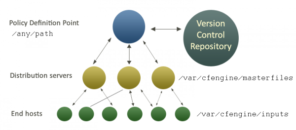
If you work in a federated environment, then each distinct region of policy can have its own policy server or hub. These will not conflict, unless a host subscribes to updates from more than one hub.
Promises about change vs state
CFEngine works by keeping promises, so think about how promises apply to change.
You could promise to make a change, but that is a very weak promise because it would be kept by a single transitory event (the moment at which the change is made) and then it would go away. To have control over your system at all times you need to make promises about state, because state is something that persists for long times, and thus the promise persists.
When we care about the state of a system, we make promises that describe that state at all times, because we know that there might be other forces for change that can bring about unintended states. If we intend the state of the system to persist, we should promise that. Thinking always about periods of stable equilbrium will minimize issues with non-compliance.
To make a change of state, you should think about changing the promises that describe your desired state, not about promising to make a change of state.
An analogy: think of change management as navigation though a sea of possible states. If you promise changes, you promise to alter course relative to your current state, e.g. turn left, turn right, alter heading by 10 degrees to starboard, etc. However, you are now vulnerable to things you don't know about. Winds and currents blow you off course and can lead to unintended changes that invalidate these course corrections, if you have not promised to monitor and avoid them. That is why modern navigators usebeacons.
In CFEngine, a beacon is a promise of desired end-state (the end of your journey). It's the place you want to be – and the journey doesn't interest you. Navigators used fixed stars, lighthouses and now artificial radio signals to guide ships and planes on their intended course at all times, because beacons promise absolute desired location, not relative instructions to get there. CFEngine uses promises in the same way, to guide systems to their desired outcomes, not merely a script of relative corrections. So CFEngine works somewhat like a system auto-pilot.
Promises about change
To help you think of change in terms of promises, consider the following promises made during change management, with CFEngine examples.
You promise a desired state for your system (beacon).
bundle agent example
{
packages:
"apache"
comment => "Ensure Apache webserver installed",
package_policy => "add",
package_method => yum;
processes:
"apache"
comment => "Ensure apache webserver running",
restart_class => restart_apache;
}
You change a promise you have made about state to promise a new desired state.
You edit promises.cf and track the changes using a change management repository like Subversion or CVS. A third party promises a change and we promise to accept that change.
bundle agent example
{
packages:
"apache"
comment => "Ensure Apache webserver up to date",
package_policy => "update",
package_method => yum;
}
We promise to monitor unintended changes.
bundle agent example
{
files:
"/usr" -> "Security team"
changes => detect_all_change,
depth_search => recurse("inf");
}
We promise two conflicting outcomes (a validation error to be corrected). Conflicts of intention are easy to see when they are mediated by CFEngine.
bundle agent example
{
files:
"/etc/passwd" -> "Security team"
perms => owner("root");
"/etc/passwd" -> "Security team"
perms => owner("mark");
}
Perhaps you can think of more promises for your own organization. CFEngine encourages promise thinking because it promotes stable expectations about the system. Let us underline what traditional approaches ignore about change management:
If you have made no promise about your system state, you should not be surprised by anything that happens there. You cannot assume that no change will happen.
Change management and knowledge management
The decision to manage change is an economic trade-off. The more promises we make about state, the higher the cost of keeping them. You have to decide how much you are willing to spend on navigating change.
CFEngine makes desired state cheap, but the true cost of change management is not implementation but the cost of changing knowledge, i.e. losing track of your place within your intentions. If your system behaviour is dominated by changing external currents that you ignore, you will constantly be fighting to steer reactively.
Knowledge Management is necessary to maintain a guidance system that makes course programming reliable and effective. CFEngine allows you to document all of your intentions as promises to be kept. CFEngine Nova additionally provides a continuously updated knowledge map as part of its `auto-pilot navigation' facilities, based on what we promise and what it discovers about the environment impacting on systems. Hence, it tracks both promised state, and unintended changes.
Lack of knowledge about your system is the cause of unexpected side-effects and unpleasant surprises. The key to predictability in system operations is CFEngine's core principle of convergence. CFEngine Missions Specialists always think convergence.
Non-destructive change
The IT industry, for the most part, has not really progressed beyond the idea of baselining systems. In the traditional conception of change management you start by baselining, i.e. establishing a known starting configuration. Then you generally assume that you are the only source of change. If something goes wrong you do not try to repair the fault, but merely start again, destroying and rebuilding.
In fact, all kinds of things change beyond our control all the time. Bugs emerge, items are stolen, things get broken by accident and external circumstances conspire to confound the order we would like to preserve. The suggestion that only authorized people actually make changes is simply wrong.

In reality, circumstances are part of the picture, as well as changing inventory and releases. CFEngine uses the idea of “convergence” (see figure below) to ensure desired state, independently of where you start from. In this way of thinking, the configuration details might be changing in a quite unpredictable way, and it is our job to continuously monitor and repair this general dilapidation. Rather than assuming a constant state in between changes, CFEngine assumes a constant “ideal state” orgoalto be achieved at all times.
Change and convergence
Change requires action, and implementation is the most dangerous part of change, as it leads to consquences that a difficult to predict, especially if you have incomplete knowledge of your environment.
Reliability and dependability on promises requires you to think about the convergence of all change operations. Many change procedures fail because they are built in a highly fragile manner (left hand figure): you require exact knowledge of where you start from, and you have a recipe that (if applied once and only once) will take you to the desired end state.

Such a procedure cannot maintain the desired state, without demolishing it and rebuilding it from scratch. With CFEngine you focus on the end state (right hand figure), not where you start from. Every change, action or recipe may be repeated a infinite number of times[4] without adverse consquences, because every action will only bring you to the desired state, no matter where you start from.
The change decision process or release management
The process of managing intended changes is often calledrelease management. A release is a collection of authorized changes to the promises of desired state for a system.
A release is traditionally a larger umbrella under which many smaller changes are made. Changes are assembled into releases and then they are `rolled out'.
At CFEngine we encourage many small, incremental changes above large risky changes, as every change has unexpected consequences, and small changes minimize risk. (See the Special Topics Guide on BDMA.)
Release management is about the designing, testing and scheduling the release, i.e. everything to do with the release process except the explicit implementation of it.
New releases are usually made in response to the occurrence of unintended changes, called incidents (incident management). An incident is an event that leads to unintended behaviour. The root cause of many incidents is often called a problem (problem management). One goal of CFEngine is to plan pro-actively to handle incidents automatically, thus taking them off the list of things to worry about. Changes can introduce new incidents, so it is important to test changes to promises in advance.
Formulate proposed intentions in the form of promises.
Discuss the impact of these in your team of CFEngine Mission Specialists (more than one pair of eyes).
Construct a test environment and examine the effect of these promises in practice.
Commit the changes to promises in version control, e.g. subversion.
Deploy promises changes into live environment on a small number of machines.
Finally deploy to all machines.
At each stage, we make careful, low-risk incursions on the system and see how it responds. Note that some side-effects could take days to emerge, so the schedule for change should account for the expected impact.
Deploying policy changes
The following sequence forms a checklist for deploying successful policy change:
Discuss the impact of changes in the team.
Construct a test environment and examine the effect of these promises in practice.
Make a change in the CFEngine input files.
Run the configuration through `cf-promises --inform1 to check for problems.
Commit the tested changes to promises in version control, e.g. subversion.
Move the policy to a test system.
Try running the configuration in dry-run model:
cf-agent --dry-runTry running the policy once on a single system, being observant of unexpected behaviour.
Try running the policy on a small number of systems.
Move the policy to the production environment.
If possible, test on one or a few machines before releasing for general use.
Be aware of the differences in your environment. A decision will not necessarily work everywhere in the same way.
Footnotes
[1]: For example, suppose a process runs out of control and starts filling up logs with error messages – the disk might fill up and cause a much more serious problem, such as a total system failure with crash, is this were left unattended.
[2]: Nyquist's theorem is the main reason why CD-players sample at 44kHz in order to cover the audible spectrum of 22kHz for most young people. Even though hearing deteriorates with age, and most people cannot hear this well, it provides a quality margin.
[3]: Promise theory tells us that coordination requires mutual agreement between all agents that work in a coordinated way on common resources. Every decision necessarily comes from a single point of origin (but there could be many of these, making non-overlapping decisions); consistency only starts to go wrong when intentions about common resources conflict.
[4]: Some writers like to call this property idempotence.
Distributed Scheduling
What is distributed scheduling?
Scheduling refers to the execution of non-interactive processes or tasks (usually called `jobs') at designated times and places around a network of computers (see the Special Topics Guide on Scheduling). Distributed Scheduling refers to the chaining of different jobs into a coordinated workflow that spans several computers. For example, you schedule a processing job onmachine1andmachine2, and when these are finished you need to schedule a job onmachine3. This is distributed scheduling.
Coordinating dispatch
Dispatch is the term used for starting actually the execution of a job that has been scheduled. There are two ways to achieve distributed job scheduling:
Centralized dispatch of jobs.
Peer to peer signalling with local dispatch of jobs.
There are pros and cons to centralization. Centralization makes consistency easy to determine, but it creates bottlenecks in processing and allows one machine to see all information. Decentralization provides an automatic and natural load-balancing of job dispatch, and it allows machines to reveal information on a `need to know' basis.
CFEngine is a naturally decentralized system, and only policy definition is usually centralized, but you can set up practically any architecture you like, in a secure fashion.
Job scheduling and periodic maintenance
You promise to execute tasks or keep promises at distributed places and times:
You tell CFEngine what and how with the details of a promise.
You tell CFEngine where and when promises should be kept, using classes.
CFEngine is designed principally to maintain desired state on a continuous basis. There are three cases for job scheduling:
Unique jobs run once and only once.
Standard jobs run sporadically on demand.
Standard jobs run on a regular schedule.
This list transfers to workflow processes too. If one job needs to follow after another (because it depends on it for something), we can ask if this workflow is a standard and regular occurrence, or a one-off phenomenon.
One-off workflows
In CFEngine, you code a one-off workflow by specifying the space-time coordinates of the event that starts it. For example, if you want a job to be run a 16:45 on Monday 24th January 2012, you would make a class corresponding to this time, and place the promise of a job (or jobs) in this class. Let's look at some examples of this, in which host1 executes a command called my_job, and host2 follows up with a bundle of promises afterwards.
The simplest case is to schedule the exact times.
bundle agent workflow_one
{
methods:
Host2.Day24.January.Year2012.Hr16.Min50_55::
"any" usebundle => do_my_job_bundle;
commands:
Host1.Day24.January.Year2012.Hr16.Min45_50::
"/usr/local/bin/my_job";
}
Host1 runs its task at 16:45, and Host2 excutes its part in the workflow five minutes later. The advantage of this approach is that no direct communication is required between Host1 and Host2. The disadvantage is that you, as the orchestrator, have to guess how long the jobs will take. Moreover Host2 doesn't know for certain whether host1 succeeded in carrying out its job, so it might be a fruitless act.
We can change this by signalling between the processes. Whether not you consider this an improvement or not depends on what you value highest: avoidance of communication or certainty of outcome. In this version, we increase the certainty of control by asking the predecessor or upstream host for confirmation of success if the job was carried out.
bundle agent workflow_one
{
classes:
Host2::
"succeeded" expression => remoteclassesmatching
(
"did.*", # get classes matching
"Host1", # from this server
"no", # encrypt comms?
"hostX" # prefix
);
methods:
Host2.hostX_did_my_job
"any" usebundle => do_my_job_bundle;
commands:
Host1.Day24.January.Year2012.Hr16.Min45_50::
"/usr/local/bin/my_job",
classes => state_repaired("did_my_job");
}
In this example, the methods promise runs on Host2 and the commands promise runs one Host1 as before. Now, host 1 sets a signal class ‘did_my_job’ when it carries out the job, and Host2 collects it by contacting thecf-serverdon Host1. Assuming that Host1 has agreed to let Host2 know this information, by granting access to it, Host2 can inherit this class, with a prefix of its own choosing. Thus is transforms the class ‘did_my_job’ on Host1 into ‘hostX_did_my_job’ on Host2.
The advantage of this method is that the second job will only be started if the first completed, and we don't have to know how long the job took. The disadvantage of this is that we have to exchange some network information, and this has a small network cost, and requires some extra configuration on the server side to grant access to this context information:
bundle server access_rules
{
access:
"did_my_job"
resource_type => "context",
admit => { "Host2" };
}
Regular workflows
To make a job happen at a specific time, we used a very specific time classifier ‘Day24.January.Year2012.Hr16.Min45_50’. If we now want to make this workflow into a regular occurrence, repeating at some interval we have two options:
We repeat this at the same time each week, day, hour, etc.
We don't care about the precise time, we only care about the interval between executions.
The checking of promises in CFEngine is controlled byclassesand byifelapsed locks, which may be used for these two cases respectively. If nothing else is specified, CFEngine runs every 5 minutes and reconsiders the state of all its active promises. To be specific about the time, we just alter which promises are active at different times. Classes (as used already) allow us to anchor a promise to a particular region of time and space. Locks, on the other hand, allow us to say that a promise will only be rechecked if a certain time has elapsed since the last time.
So, to make a promise repeat, we simply have to be less specific about the time. Let us make the promise on Host1 apply every day between 16:00:00 (4 pm) and 16:59:59, and add an ifelapsed lock saying that we do not want to consider rechecking more often tha once every 100 minutes (more than 1 hour). Now we have a workflow process that starts at 16:00 hours each day and runs only once each day.
bundle agent workflow_one
{
classes:
Host2::
"succeeded" expression => remoteclassesmatching(
"did.*",
"Host1",
"no",
"hostX"
);
methods:
Host2.hostX_did_my_job
"any" usebundle => do_my_job_bundle;
commands:
Host1.Hr16::
"/usr/local/bin/my_job",
action => if_elapsed("100"),
classes => state_repaired("did_my_job");
Fancy distributed encapsulation
We could try to be fancy about distributed scheduling, packaging it into a reusable structure. This may or may not be a good idea, depending on your aesthetics. The following example, from the community unit tests, shows how we might proceed.
body common control
{
bundlesequence => { job_chain("Hr16.Min10_15") };
}
########################################################
bundle common g
{
vars:
# Define the name of the signal passed between hosts
"signal" string => "pack_a_name";
}
########################################################
bundle agent job_chain(time)
{
vars:
# Define the names of the two parties
"client" string => "downstream.exampe.org";
"server" string => "upstream.example.org";
classes:
# derive some classes from the names defined in variables
"client_primed" expression => classmatch(canonify("$(client)")),
ifvarclass => "$(time)";
"server_primed" expression => classmatch(canonify("$(server)")),
ifvarclass => "$(time)";
client_primed::
"succeeded" expression => remoteclassesmatching(
"$(g.signal)",
"$(server)",
"yes",
"hostX"
);
methods:
client_primed::
"downstream" usebundle => do_job("Starting local follow-up job"),
action => if_elapsed("5"),
ifvarclass => "hostX_$(g.signal)";
server_primed::
"upstream" usebundle => do_job("Starting remote job"),
action => if_elapsed("5"),
classes => state_repaired("$(g.signal)");
reports:
!succeeded::
"Server communication failed",
ifvarclass => "$(time)";
}
#########################################################
bundle agent do_job(job)
{
commands:
# do whatever...
"/bin/echo $(job)";
}
#########################################################
# Server config
#########################################################
body server control
{
allowconnects => { "127.0.0.1" , "::1" };
allowallconnects => { "127.0.0.1" , "::1" };
trustkeysfrom => { "127.0.0.1" , "::1" };
allowusers => { "mark" };
}
#########################################################
bundle server access_rules()
{
access:
"$(g.signal)"
resource_type => "context",
admit => { "127.0.0.1" };
}
More links in the chain
In the examples above, we only had two hosts cooperating about jobs. In general, it is not a good idea to link together many different hosts unless there is a good reason for doing so. In HPC or Grid environments, where distributed jobs are more common and results are combined from many sub-tasks, one typically uses some more specialized middleware to accomplish this kind of cooperation. Such software makes compromises of its own, but is generally better suited to the specialized task for which it was written than a tool like CFEngine (whose main design criteria are to be secure and generic).
Nevertheless, there are some tricks left in CFEngine for distributed scheduling if we want to trigger a number of follow-ups from a single job, or aggregate a number of jobs to drive a single follow-up.
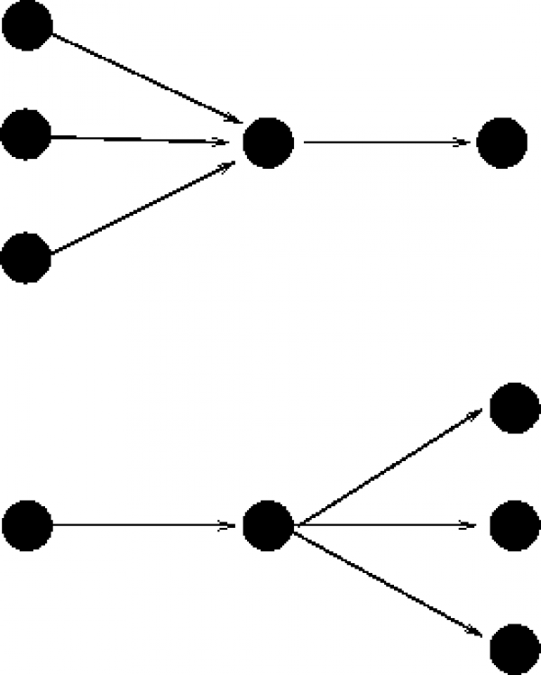
Aggregation of multiple jobs
When aggregating jobs, we must combine their exit status using AND or OR. The most common case it that we require all the prerequisites in place in order to generate the final result, i.e. trigger the followup only if all of the prerequisites succeeded.
bundle agent workflow_one
{
vars:
"n" slist => { "2", "3", "4" };
classes:
"succeeded$(n)" expression => remoteclassesmatching(
"did.*",
"Host$(n)",
"no",
"hostX"
),
ifvarclass => "Host$(n)";
methods:
Host2.Host3.Host4.hostX_did_my_job
"any" usebundle => do_my_job_bundle;
commands:
Host1.Hr16::
"/usr/local/bin/my_job",
action => if_elapsed("100"),
classes => state_repaired("did_my_job");
}
This example shows an all-or-nothing result. The follow-up job will only be executed if all three jobs finish within the same 5 minute time-frame. There is no error handling or recovery except to schedule the whole thing again.
Triggering from one or more predecessors, i.e. combining with OR, looks similar, we just have to change the class expression:
bundle agent example
{
methods:
(Host2|Host3|Host4).hostX_did_my_job
"any" usebundle => do_my_job_bundle;
}
Triggering multiple follow-ups
The converse scenario is to trigger a number of jobs from a single pre-requisite. This is simply a case of listing the jobs under the trigger classes.
bundle agent workflow_one
{
classes:
Host2::
"succeeded" expression => remoteclassesmatching(
"did.*",
"Host1",
"no",
"hostX"
);
methods:
Host2.hostX_did_my_job
"any" usebundle => do_my_job_bundle1;
"any" usebundle => do_my_job_bundle2;
"any" usebundle => do_my_job_bundle3;
commands:
Host1.Hr16::
"/usr/local/bin/my_job",
action => if_elapsed("100"),
classes => state_repaired("did_my_job");
Self-healing workflows
To apply CFEngine's self-healing concepts to workflow scheduling, we can imagine the concept of a convergent workflow, i.e. one that, if we repeat everything a sufficient number of times, will eventually lead to the result. The outcome of the chained sequence of jobs must have an outcome that is repeatably achievable and which will eventually be achieved if we try a sufficient number of times. Using CFEngine this is a natural outcome – however, most system designers do not think in terms of repeatable sustainable outcomes and fault-tolerance.
Beware however, one-off jobs cannot be made convergent, because they only have a single chance to succeed. It is a question of business process design whether you design workflows to be sustainable and repeatable, or whether you trust the outcome of a single shot process. Using the persistent classes in CFEngine together with the if-elapsed locks to send signals between hosts, it is simple and automatic to make convergent self-healing workflows.
Long workflow chains
Long workflow chains are those which involve more than one trigger. These can be created by repeating the pattern above several times. Note however, that each link in the chain introduces a new level of uncertainty and potential failure. In general, we would not recommend creating workflows with long chains.
Summary of Distributed Scheduling
Distributed scheduling is about tying together jobs to create a workflow across multiple machines. It introduces a level of fragility into system automation. Using CFEngine promises, we can create self-healing workflows, but we recommend minimizing dependencies. This document shows how to build workflows using CFEngine primitives.
Orchestration
What is organizational complexity?
Complexity is a measure of the amount of information needed to explain something. It implies a `mental cost' (and therefore a time and monetary cost) to comprehend a pattern of structure and behaviour.
The term organization has two distinct meanings in English: it can be intended as a euphemism for an institution or a business, and it can be intended to mean an ordered structural pattern (i.e. the state of being organized). To avoid confusion, we shall refer to businesses and public institutions as enterprises, and use the term organization to mean an architectural pattern with a certain level of complexity.
Organizational Complexity is therefore the amount of information, and hence cost, needed to manage an enterprise or system. In information science, the complexity of a system is commonly defined as the length of the shortest document that fully describes it. A complex system requires a long document to capture its workings; a simple system requires only a short document.
What is federation?
A federation is a pattern of organization obtained by merging a number of initially independent parts. The implication is that the resulting organization is not a singular rigid unit, but rather a more loosely coupled collective of autonomous parts.
Federation is a natural structure for any enterprise that has parts with fundamentally different functions or orgins. It can also be a stepping stone on the way from a set of independent actors to a state of unified integration.
Companies that merge or acquire other companies, as well as companies that reorganize to outsource tasks are natural candidates for federated management.
Promise theory predicts that a federated organization is naturallyservice oriented, with two main architectures:
The different parts of the collective bind together by promising each other services.
The parts offer services to external parties, but are bound together by promising to coordinate with a central entity.
Coordination, hierarchy and centralization
Federated parts of an enterprise are said to be coordinated by an entity, if they receive common information from it. Merely delivering services (i.e. keeping promises) to a common entity does not lead to coordination. Think of an orchestra. The conductor does not bring about any coordination simply by listening, but rather by providing common signals to the federated agents. On the other hand, the conductor is a bottleneck who throttles the productivity of the federated agents. If the agents rely too much on the conductor, or are discouraged from acting independently, the amplification of effort is lost.

The need for coordination is often exaggerated in human organizations – it comes from an unrealistic desire to absolutely determine the outcome of decisions. Realistically, it is only a means to bring consistency to distributed parts.
In ITIL and current IT parlance, a central hub containing coordination information is called a Configuration Management Database (CMDB). The term CMDB refers to a range of quite different approaches to coordinating information that will not be discussed here. In Object Orientation, the term inheritance is used to signify the use of common information by federated parts.
It is possible for federated parts to inherit coordinating information from more than one source, just as it is possible for someone to have two different jobs. In that case, one must be careful to avoid conflicting directions. As organizational complexity grows, the possibility of conflicting direction and expectation also grows unless strict principles are adhered to.
Promise Theory tells us that such conflicts can only be resolved by a party receiving information, not by the parties sending it. This leads to the model known as `voluntary cooperation' used by CFEngine, which implies that each federated part must effectively choose which inputs it is willing to use from external parties.
The Authority Paradox
For some, the idea that an organization should be built on voluntary cooperation sounds wrong. However, no matter how much we might crave certainty of outcome, making demands on the compliance of federated parts does nothing to improve that certainty; indeed, it can have the reverse effect. The confusion lies in a misunderstanding of desired authority over the actual power to change, i.e. in what is intended or desired and what is actually possible. Promise Theory resolves this confusion by building a model based directly on the agents that can effect change.
Authority is about who, in an enterprise, may decide what is intended. Most people perceive authority through hierarchies or `chains of command' in which the top of the hierarchical pyramid is the master, and the layers below must follow: those at the top are more powerful than those on the bottom. This is a cultural prejudice. However this perception is, at best misleading, and in fact is incorrect.
Humans have been organizing things into hierarchies for most of recorded history. We have a deeply held notion that favours hierarchies as an organizational form. It is worth examining why. In early times the upper echelons of hierarchy were the strong and the educated, served by a relatively unspecialised workforce. They wielded their power by guile and by violent force, and the lower layers cowered in fear. From Kings and leaders to middle managers and class-system underdogs, institutions and government, documents and tables of contents, everywhere we look we see hierarchical structures.

Today, education and peaceful society turns the reality of the power hierarchy
upside down: the true specialists are at the bottom of the hierarchy, closer to
the levers and the expertise to effect change. Today low level' means more
specialised, not less educated. Low level experts are held together by
relatively unspecialisedmanagers' who serve mainly as coordinators and
communications links. However, the culture and perception of authority from the
top remains today.
These changes create a paradox in modern systems. The leadership of intent is assumed to come from above, but the real power to act is down below. This necessitates the binding together of organizations by a social contract of voluntary cooperation.
The same is true in computer systems. Most system designs assume that the point of command will be placed at the top of an organizational tree, and that every part of the system (represented in the branches and leaves) will follow the commands made from the top. This turns out to be a poor model because, in reality, the top has neither the knowledge nor the proximity to enforce changes below.
No central management of either enterprise or computers can force individual agents to comply with their wishes, without their low level consent. The perception of authority is thus only a fiction1.
The social contract
Social contracts lie at the heart of all human and computer organizations. For computers these contracts may be as simple as `access control settings', nonetheless there are human politics behind them. Most enterprises struggle more with their internal sociology (or politics) than with their technological solutions.
When an organization is formed by merging independent parts, this is especially important. The loss of identity and the feeling of loss of autonomy by these parts can fuel a breakdown of the social contract – i.e. a loss of loss of voluntary cooperation. In terms of system management, it therefore makes sense to preserve as much of the identity and autonomy of the parts as possible.
From an information perspective, this is also the lowest cost solution. The expertise to run the merged entity already exists within it2, and the proximity to make change is automatic, so to increase the organizational distance between decision, expertise and change will at best lead to increased overhead and at worst lead to the disconnection of decision making from expertise.
Low level autonomy is a cost saving strategy that reduces the overhead of management and improves the link between expertise and action.
Service oriented federation
Service oriented means business oriented. Let us now consider what this means for IT configuration. In particular, how should a CFEngine configuration be structured for an efficient organization? In the examples below, we shall adopt a service oriented view, in which an enterprise is organized as a set of federated entities, some of whom depend on each other for services.
Each part disconnected, providing services
Each federated entity manages its own promises.cf file. Each has, in effect, its own independent CFEngine configuration.
Independent configurations - complete autonomy
The configuration may still use resources provided by other entities' machines, but the other entities have no influence on the set of promises used to maintain any given one.
Disconnected parts inheriting a single baseline
A more common model for federation is to have a baseline constitution for all the parts of the enterprise defined by an umbrella organization. We can refer to this as a `global infrastructure' service.
Traditionally (i.e. hierarchically) one would think of this global entity as being superior to the other entities, i.e. making them subordinate, but this is not necessary, nor correct according to the reality. The role of the global service is rather to provide a point of consistent coordination, or centralized expertise to the others. Compliance with the proposals of the global coordinator will be assured if it plays a valuable roles.
Since the real power to change still lies in the hands of the federated entities, the global infrastructure unit must build a social contract with them to assure that its wishes are complied with. This goal is attended to by making the global entity a valued service for the federated entities. If the global service is perceived as being of no value, it will be ignored.
The next step from full autonomy is thus to use methods that have been defined by an enterprise-wide global infrastructure service.

#
# Federated promises.cf
#
bundle agent main
{
files:
"$(sys.workdir)/inputs/baseline.cf"
copy_from => remote_cp(
"/masterfiles/baseline.cf",
"central_service.example.com"
);
methods:
# Inherit the baseline constitution
"baseline" usebundle => company_baseline;
# All other local promises here ....
}
The CFEngine code snippet above represents the CFEngine configuration for any of the hosts in one of the federated departments. The configuration is extremely simple. It begins by downloading thebaseline.cfconfiguration, provided by the global infrastructure service, and then goes on to promise to use this as a `method'. Finally, the major part of the configuration is the set of special promises determined by the department itself. Federation is thus technically trivial. The difficulties are rather conceptual and sociological.
Let us remark on the likelihood for conflict. Although the source of the baseline is external, CFEngine configuration promises are always implemented by the federated departments themselves, none are (or can be) implemented by any external party such as the infrastructure service. Thus, it is the responsibility of federated departments to ensure that there are no conflicts between the baseline and their own promises. Moreover, as the parts have no power to change the baseline, but have agreed to follow it, the logical outcome must be that their own special promises must not conflict with the global infrastructure proposal. So all requirements are met without the need for central enforcement.
Handling multiple sources
Consider briefly the case in which there is more than one entity offering promise proposals. If a part of the federation serves two masters (see department 3 in the figure below), i.e. it promises to implement the wishes of two external sources, then those sources must either agree one hundred percent in their proposals, or they must not overlap at all. Since these `masters' may or may not be coordinated, it is up to the federated entity (department 3) to make the decision about which of the sources to obey.

The possiblity of conflict is easily handled in this architecture, because it recognizes that the federated entity must be the final arbiter of confict.
Global assurance
The lack of a hierarchy has not made information chaotic and disorganized. It has only provided a simple means of scalability and conflict resolution.
So what makes a federation different from a collection of completely independent enterprises? The answer to this question us usually some minimum set of common promises that all parts of the federation must keep: a baseline constitution.
Now, since the real power lies in the leaves of the organizational tree, but the designated authority lies at the root, the root needs to monitor the behaviour of the federated entities to ensure that this baseline constition is being complied with. This can be handled by performing an audit of the whole federation according to a single standard3.
CFEngine allows single-point-of-coodination monitoring of hosts by a variety of mechanisms, so that compliance can be assured.
Merging and dividing enterprises
Autonomy makes the merging and division of enterprise systems trivial. It is the way to enable out-sourcing and in-sourcing.
Imagine trying to combine two cups of coffee. Now try combining two combine two buildings or houses of cards. Coffee mixes easily because it is not full of dependencies (bonds) between its parts. Buildings are not fluid: at best one can build bridges between them, and try to build something else around them and then take them apart. The same applies to any system, whether human, software or mechanical.
To merge two systems or enterprises, it will be much simpler if they are fluid to begin with – i.e. they are basically composed of autonomous parts, loosely coupled, not rigidly joined together. Hierarchical organization is rigid, like a house of cards. Service-oriented systems are loosely coupled. By keeping the internal organization of systems as far as possible like independent service atoms, you facilitate reorganization by merging and division.
Why federation does not reduce predictabilty
The fear that many traditionalists have of federated management is that they cannot be certain of the outcome unless they have absolute authority. This fear is misplaced however. Certainty of outcome does not depend on whether authority is federated or not: there are many reasons why outcomes fail to be realized, including misunderstandings, accidents, force majeur and simple disagreements.
Certain knowledge can only be obtained by observing the results directly4, and repairing the system if promises have not been kept. Trying to enforce rules and command from above is an expensive and often ineffective way to manage systems, like swimming against the current. Trust in the federated system reduces the cost of verifying one's assumptions.
Hierarchies are sometimes used for oversight. Just as a conductor takes care of the big picture for his orchestra, so managers in a hierarchy can use their position to coordinate the larger picture for their subordinates. However, like the orchestra, the manager should not think that he has a real influence on the outcome. As long as each player has the script and the instruments, the music can go on for quite some time without its conductor. The role of a manager is one of advice.
Rules of thumb for scalable management:
Use autonomy to scale: proximity to the affected area avoids unnecessary dependency and transport of materials. Trust costs less.
If you need to enforce a common baseline (or constitution) for all, then arrange this as a service, not as a punitive force. Use local caching and the principal of convergence to a desired state (idempotence) to provide assurance without the cost of monitoring.
Trust lowers costs.
The benefits of federated management
Hierarchy is familiar, but not essential. A hierarchy is only a so-called `spanning tree' for a more general network of relationships. It may be thought of as one possible point of view, amongst many – one way of traversing a network of relationships.
A federated organization is automatically specialized into departments, each of which knows its requirements best.
One could take an enterprise and divide it into skill-areas or departments, then divide each department into geopgraphical teams. Conversely, we could divide the enterprise by country first and subdivide each country into regions, then divide these into skills. There is no unique way to traverse the enterprise. In truth, it is not a hierarchy, but a network of relationships.
If the federated teams or clusters in an enterprise have sufficient autonomy, both in resources and intended authority, then they don't need to communicate with or wait for other parts to do their jobs. Forcing that communication, due to lack of trust, will add overhead and increase costs, without improving the certainty of outcome.
Promise Theory tells us that organization by autonomy automatically indentifies the parts of a system that can operate independently – i.e., the essential `atoms' of the system. Thus, it is a method for identifying the raw material building blocks from which everything else can be built. Starting with these available raw materials, it encourages a rational approach to design of systems that are efficient and service oriented.
Footnotes
[1] Think of an orchestra. The real expertise lies in the players (below). The conductor (above) offers coordination and guidance, but has no real power to create music. Music is possible because each player has his/her own copy of the script, and can work autonomously, with only a little guidance.
[2] At least we may assume this.
[3] Think, once again, about the orchestra. The conductor observes the behaviour of each autonomous player to determine whether the orchestra is playing together and is playing the same piece of music.
[4] This is why society needs a police force to monitor and respond to those who do not obey proposed law – whether they have promised to or not. This is the role of CFEngine.
Glossary
Agent
A piece of software that runs independently and automatically to carry out a task (think software robot). Inn CFEngine, the agent is called cf-agent and is responsible for making changes to computers.
Amber host
A host that has repaired more than 20% of its scheduled promises in the past 5 minutes. (See yellow host.)
Body
A promise body is the description of exactly what is promised (as opposed to what/who is making the promise). The term `body' is used in the CFEngine syntax to mean a small template that can be used to contribute as part of a larger promise body.
Bundle
In CFEngine, a bundle refers to a collection of promises that has a name.
CDP
Content Driven Policy. A way of simplifying the way users provide information to CFEngine about policy by hiding the overhead of policy coding. A CDP is a set of promises that is designed to solve a particular task in a standard way. Users provide only a little data in the form of a simple spreadsheet of data in a table.
CFEngine
The name of the CFEngine Company, as well as the name of the Software. CFEngine comes from a contraction of `ConFiguration Engine'.
CFEngine 3.x
Major version 3 of the CFEngine software, started in 2008 and going up to the present day. This comes in several editions, both Open Source and Commercial.
CFEngine Community Edition
Free and Open Source edition of the CFEngine software, published under the GPL3 license, and optionally under the COSL license.
CFEngine Community Open Promise-Body Library
A collection of standard definitions that is open to the user community for comment and standardization.
CFEngine Constellation
An enterprise edition of CFEngine, that is designed to scale to huge systems by using a federated design. Constellation allows better handling of groups (i.e. constellations of objects) in a network.
CFEngine Enterprise Editions
Refers to commercial (paid) editions of the CFEngine software, published under the COSL license.
CFEngine Nova
The lowest level enterprise edition of CFEngine, that automatically creates a simple `star network' mangement model for hosts in an environment.
ChangeLog
A file used to describe the changes made since the last version of the software.
CMDB
A Configuration Management Database. A term coined as part of the IT Infrastructure Library (ITIL) as an outgrowth of an inventory database.
CMS
Content Management System. A kind of editor for maintaining something (often web pages).
Code branch
The development of software is a branching process. At certain times, the software code splits into different versions following different paths. Each path needs to be maintained separately for a while. This often happens when a release is made, because one wants to freeze the development of a public release (allowing nevertheless for some minor bugfixes), while continuing to add features to a branch leading to future versions.
COPBL
CFEngine Community Open Promise-Body Library (abbrev: CFEngine standard library). A collection of standard definitions.
COSL license
The Commercial Open Source License used for the CFEngine
CSS
Cascading Style Sheets. Part of Web technology used to describe page design.
Diff
A `diff' is a report (originally that generated by the UNIX diff command) that details the differences between two files. The term is often used as slang meaning a file comparison.
GPL3
The GNU Public License, version 3.
Green Host
A host for which more than 80% of all promises are kept.
GUI
Graphical User Interface.
Host
UNIX terminology for a computer the runs
guest programs'. In practice,host' is a synonym for `computer'.Hub
A software component in CFE Nova and CFE Constellation that works as a single point of management in a local `star-network'. The term hub is sometimes used to mean policy distribution server, but more commonly a running cf-hub process that does report collection from all CFEngine managed hosts. The term hub means the centre of a wheel, from which multiple spokes emerge.
Knowledge Map
A master index of all the information known about a CFEngine managed environment, represented as a set of web pages with an interactive interface based on a `semantic web'. The CFEngine Mission Portal provides a web-based interface for browsing this knowledge map index.
Mission
The mission refers to the raison d'\hat etre of an organization. CFEngine's task is to support this mission by keeping a set of promises for its IT infrastructure.
Mission Portal
The name given to the user interface used in commercial CFEngine editions, where all reports and progress summaries are kept.
Modular license
A license granting partial functionality to an Enterprise Edition of CFEngine.
LDAP
The Lightweight Directory Access Protocol. A kind of `phone book' service providing information about persons and computers in an organization.
Libraries
A library generally refers to collection of standardized CFEngine code that can be reused in different scenarios and environments. This might be bundles of promises, or reusable body-parts.
Packages
Software binaries or executable files. The CFEngine company compiles and tests software into packages suitable for different platforms.
Platforms
This usually refers to an operating system type, e.g. Linux (in its many flavours), or Windows, etc. Platforms are described using short identifiers, e.g. RH5, REL5, SuSE 11, SLES, etc.
Knowledge Map
Content portal containing datacentre information, privately managed knowledge resources and CFEngine documentation.
PCI compliance
Payment Card Industry Data Security Standard (PCI DSS) is a set of requirements designed to ensure that ALL companies that process, store or transmit credit card information maintain a secure environment.
Promise
The CFEngine software manages every intended system outcome as `promises' to be kept. A CFEngine Promise corresponds roughly to a rule in other software products, but importantly promises are always things that can be kept and repaired continuously, on a real time basis, not just once at install-time.
Policy
A policy is a set of intentions about the system, coded as a list of promises. A policy is not a standard, but the result of specific organizational management decisions.
Semantic web
A form of web content in which hyperlinks always explain the meaning of the information they point to, in relation to the subject of interest. Semantic web technologies include RDF, Topic Maps etc.
Server
A term used in many different ways, riddled with confusion. A server is strictly a piece of software that runs on some computer in order to perform a service, e.g. a web server is a program that makes a computer part of the World Wide Web. For historical reasons, certain computers are referred to as servers, especially when kept in datacentres because such computers often run services. In CFEngine, cf-serverd is a software component that serves files from one computer to another. All computers are recommended to run cf-serverd, making all computers CFEngine servers, whether they are laptops, phones or datacentre computers.
Service Catalogue
A kind of directory of `services' provided in an environment. The concept of a service could be anything from a human help desk to a machine controlled email subsystem. In the CFEngine Mission Portal, the service catalogue (for maintenance) treats promise-bundles of promises as low-level maintenance services, and relates these to high level business goals.
SOX Compliance
Sarbanes-Oxley Act compliance. An audited accolade for financial data security required by all companies on the New York stock exchange.
Standard library
The CFEngine Standard library is a collection of standardized definitions (see COPBL).
Template
A template is an incomplete piece of CFEngine code, with blanks to fill in. It is often a policy fragment that can be re-used in different scenarios. This is often used interchangeably with the term `library'.
UI
User interface.
Yellow host.
See amber host.
This work is licensed under a Creative Commons Attribution-ShareAlike 3.0 Unported License (http://creativecommons.org/licenses/by-sa/3.0/).
Content Driven Policy
What is a Content-Driven Policy?
A Content-Driven Policy is a text file with lines containing semi-colon separated fields, like a spreadsheet or tabular file. Each line in the file is parsed and results in a specific type of promise being made, depending on which type the Content-Driven Policy is. The ‘services’ Content-Driven Policy is shown below.
# masterfiles/cdp_inputs/service_list.txt
Dnscache;stop;fix;windows
ALG;start;warn;windows
RemoteRegistry;start;fix;Windows_Server_2008
The meaning of the fields are different depending of the policy type, but explained in the file header. With these three lines, we ensure the correct status of three services on all our Windows machines and are given specialized reports on the outcome. The Content-Driven Policy services report is shown below.
Why should I use Content-Driven Policies?
As seen in the example above, Content-Driven Policies are easy to write and maintain, especially for users not very familiar with the CFEngine language. They are designed to capture the essence of a specific, popular use of CFEngine, and make it easier. For example, the services Content-Driven Policy above has the following equivalent in the CFEngine language.
bundle agent service_example
{
services:
"Dnscache"
comment => "Check services status of Dnscache",
handle => "srv_Dnscache_windows",
service_policy => "stop",
service_method => force_deps,
action => policy("fix"),
ifvarclass => "windows";
"ALG"
comment => "Check services status of ALG",
handle => "srv_ALG_windows",
service_policy => "start",
service_method => force_deps,
action => policy("warn"),
ifvarclass => "windows";
"RemoteRegistry"
comment => "Check services status of ALG",
handle => "srv_ALG_windows",
service_policy => "start",
service_method => force_deps,
action => policy("fix"),
ifvarclass => "Windows_Server_2008";
}
Writing this policy is clearly more time-consuming and error-prone. On the other hand, it allows for much more flexibility than Content-Driven Policies, when that is needed.
CFEngine provides Content-Driven Policies to cover mainstream management tasks like the following.
- File change/difference management
- Service management
- Database management
- Application / script management
How do Content-Driven Policies work in detail?
The text files inmasterfiles/cdp_inputs/(e.g. ‘registry_list.txt’) are parsed into CFEngine lists by correspondingcdp_*files inmasterfiles/(e.g. ‘cdp_registry.cf’). It is the latter set of files that actually implement the policies in the text files.
The Knowledge Map contains reports specifically designed to match the Content-Driven Policies.
Can I make my own Content-Diven Policies?
It is possible to mimic the structure of the existing Content-Driven Policies to implement new ones, for new purposes.
However, CFEngine AS will be creating more of these best-practice policies. Thus, making a feature request at CFEngine Support may result in your proposal being developed and supported by professionals at CFEngine AS. Furthermore, Knowledge Map reports currently need to be developed induvidually by CFEngine AS.
Using CFEngine with Open Nebula
What is Open Nebula?
Open Nebula is an Open Source framework for Cloud Computing that aims to become an industry standard. The project is designed to be scalable and offer compatibility with Amazon EC2 the Open Cloud Computing Interface (OCCI). Open Nebula is used as a cloud controller in a number of large private clouds.
How can CFEngine work with Open Nebula?
CFEngine is a lifecycle management tool that can be integrated with a Cloud Computing framework in a number of ways. Of the four phases of the computer lifecycle, Open Nebula and CFEngine will play different roles.
Build
Open Nebula focuses on building virtual machines in a managed framework, based on pre-built images. CFEngine can further customize these images through package of customized installation measures.
Deploy
Open Nebula provides manual controls to bring up and tear down generic virtualized machines containing a baseline of software. CFEngine can further deploy patches and updates to these basic images without needing to take down a machine.
Manage
One a machine is running, CFEngine can manage it exactly like any other physical computer.
Audit/Report
CFEngine's local agents can extract information and learn system trends and characteristics over time. These may be collected in CFEngine's reporting interface or Mission Portal.
Open Nebula's focus is on managing the deployment and recycling of the computing infrastructure. CFEngine picks up where Open Nebula leaves off and manages the dynamic lifecycle of software, applications and runtime state.
Example Setup
This guide is based on an example setup provding a framework to demonstrate how CFEngine can be used to automate Open Nebula configuration. The following assumptions serve as an example and should be altered to fit your needs:
- All physical hosts are running Ubnutu, KVM and CFEngine 3.
- All physical hosts are on the same network.
- The CFEngine policy hub is running on the Open nebula front end.
- NFS will be used to share virtual machine images between hosts.
Open nebula requires a single front-end machine and one or more node controllers. The front end is a management machine that is used to monitor and issue commands to the node controllers. Node controllers provide virtual machine resources. The promises that follow concentrate on the configuration of the front-end and a single cluster-node. In order to increase the capacity of your private cloud we can simply classify a new physical machine as another cluster-node.

Installation and dependancy configuration
First we can classify the physical machines in this case by IP address:
classes:
"front_end" or => {"192.168.1.2"};
"node_controllers" or => {"192.168.1.3"};
If we want multiple node controllers then we can instead setup an slist variable IP addresses of intended node controllers. This will allow the "onehost create" command to execution each new node controller in turn reducing redundancy in the policy file for example:
vars:
"node_controller" slist => { "192.168.1.3", "192.168.1.4", "192.168.1.5" };
commands:
"/usr/bin/onehost create $(node_controller) im_kvm vmm_kvm tm_nfs",
contain => oneadmin;
classes:
"policy_host" or => {
classmatch(canonify("ipv4_$(node_controller)")),
classmatch(canonify("$(node_controller)"))
};
To install the dependancies for each physical machine we can define these in a list and use the CFEngine standard library package promises to install them:
vars:
"front_end_deps" slist => {
"libcurl3",
"libmysqlclient16",
"libruby1.8",
"libsqlite3-ruby",
"libsqlite3-ruby1.8",
"libxmlrpc-c3",
"libxmlrpc-core-c3",
"mysql-common",
"ruby",
"ruby1.8",
"nfs-kernel-server"
};
"cluster_node_deps" slist => {
"ruby",
"kvm",
"libvirt-bin",
"ubuntu-vm-builder",
"nfs-client",
"kvm-pxe"
};
Promises to perform dependency installation:
packages:
front_end::
"$(front_end_deps)"
comment => "Install open nebula front end dependencies",
package_policy => "add",
package_method => generic,
classes => if_ok("ensure_opennebula_running");
node_controller::
"$(node_controller_deps)"
comment => "Install open nebula node controller dependencies",
package_policy => "add",
package_method => generic;
The additional line in the front end dependancy installation promise, assuming a successful installation, will ensure the Open Nebula daemon is running at all times:
front_end::
ensure_opennebula_running::
".*oned.*",
restart_class => "start_oned";
Resulting in:
commands:
start_oned::
"/usr/bin/one start",
comment => "Execute the opennebula daemon",
contain => oneadmin;
Since we will be using Open Nebula version 2 we must manually supply the package:
commands:
front_end.!opennebula_installed::
"/usr/bin/dpkg -i /root/opennebula_2.0-1_i386.deb",
comment => "install opennebula package if it isnt already";
This promise points to the Open Nebula package file in /root/. To prevent repeated installation we can do a check to see if Open Nebula has already been installed by classifying a successful installation as having the oned.conf file in existence:
classes:
"opennebula_installed" or => {fileexists("/etc/one/oned.conf")};
Open nebula requires a privileged user "oneadmin" to issue commands. In order to have CFEngine perform these commands with the correct privileges we can use the contain body by appending the following to commands promises:
contain => oneadmin
This will in turn apply owner and group permissions of the oneadmin user:
body contain oneadmin
{
exec_owner => "oneadmin";
exec_group => "oneadmin";
}
Next: Open Nebula environment configuration, Previous: Installation and dependancy configuration, Up: Top NFS config for shared image repository
If not present append the NFS export directory stored in the corresponding variable (including a new line):
vars:
"nfs_export_dir"
slist =>
{
"/var/lib/one 192.168.1.2/255.255.255.0(rw,sync,no_subtree_check)",
""
};
files:
"/etc/exports",
edit_line => append_if_no_lines($(nfs_export_dir)),
comment => "export nfs image repo";
To ensure the NFS service remains available:
processes:
ensure_nfs_running::
".*nfsd.*",
restart_class => "start_nfs";
If this is found to be false then we classify:
start_nfs::
"service nfs-kernel-server restart",
comment => "restart nfs";
In order to ensure the share is mounted on all node controllers we can use the NFS promise:
storage:
cluster_node::
"/var/lib/one",
mount => nfs("192.168.1.2","/var/lib/one"),
comment => "mount image repo from front end";
Next we will create a directory to hold our virtual machine images:
"/var/lib/one/images/.",
comment => "create dir in image repo share",
perms => mog("644", "oneadmin", "oneadmin"),
create => "true";
Open Nebula environment configuration
Create the oneadmin bashrc file containing the ONE_XMLRPC environment variable with appropriate permissions:
files:
front_end::
"/var/lib/one/.bashrc"
comment => "setup oneadmin env",
perms => mog("644", "oneadmin", "oneadmin"),
create => "true",
edit_line => append_if_no_line(
"export ONE_XMLRPC=http://localhost:2633/RPC2");
We also need to create the one_auth file:
files:
front_end::
"/var/lib/one/.one/one_auth",
comment => "create open nebula auth file",
perms => mog("644", "oneadmin", "oneadmin"),
create => "true",
edit_line => append_if_no_line("username:password");
Finally password-less authentication for the oneadmin user:
Add key to autorized_keys file:
files:
front_end::
"/var/lib/one/.ssh/authorized_keys",
comment => "copy sshkey to authorized",
perms => mog("644", "oneadmin", "oneadmin"),
copy_from => local_cp("/var/lib/one/.ssh/id_rsa.pub");
Disable known hosts prompt:
front_end::
"/var/lib/one/.ssh/config",
comment => "disable strict host key checking",
perms => mog("644", "oneadmin", "oneadmin"),
create => "true",
edit_line => append_if_no_line("Host *
StrictHostKeyChecking no");
Now on the node controller(s) we need to add the oneadmin group and user with the same uid and gid as the front end and add the oneadmin user to the libvertd group:
files:
node_controller::
"/etc/passwd",
comment => "add oneadmin user to node controller",
edit_line => append_if_no_line("oneadmin:x:999:999::/srv/cloud/one:/bin/bash");
"/etc/group",
comment => "add oneadmin group to node controller",
edit_line => append_if_no_line("oneadmin:x:999:");
"/etc/group",
comment =>"add oneadmin to libvirtd group",
edit_line => append_user_field("libvirtd","4","oneadmin");
Now that the user environment is configured we can register our node controller with the front end:
files:
front_end::
"/usr/bin/onehost create 192.168.1.2 im_kvm vmm_kvm tm_nfs",
contain => oneadmin;
Network configuration
Before we can create virtual networks we must configure our node controller interfaces. In this example we will bridge a virtual interface (vbr0) with eth0. First we define the contents of the interfaces file in a variable:
vars:
"interfaces_contents" slist => {
"auto lo",
"iface lo inet loopback",
"auto vbr0",
"iface vbr0 inet static",
"address 192.168.1.2",
"netmask 255.255.255.0",
"network 192.168.1.0",
"broadcast 192.168.1.255",
"gateway 192.168.1.1",
"dns-nameservers 192.168.1.1",
"bridge_ports eth0",
"bridge_stp off",
"bridge_maxwait 0",
"bridge_fd 0"
};
Next we edit the interfaces file to include our new settings:
files:
node_controller::
"/etc/network/interfaces",
comment => "ensure bridge for open nebula vm networks",
edit_line => append_if_no_lines($(interfaces_contents)),
create => "true",
perms => mog("644", "root", "root");
And restart networking:
commands:
restart_networking::
"/etc/init.d/networking restart",
comment => "restart networking";
Now we have configured the network bridge we can create an Open Nebula virtual network file and submit it to the system. The contents of the virtual network template file could be defined as a variable as we have seen before but in this case it is passed as a parameter to the append promise body:
"/var/lib/one/network.template",
comment => "create lan template",
create => "true",
perms => mog("644", "oneadmin", "oneadmin"),
edit_line => append_if_no_line("NAME = \"VM LAN\"
TYPE = FIXED
BRIDGE = vbr0
LEASES = [IP=192.168.1.100]");
The network template only deals with fixed ip addresses and provides only one lease. Obviously this should be altered to suite your requirements. Now we have a template we can register it with open nebula:
commands:
front_end::
"/usr/bin/onevnet create /var/lib/one/network.template",
contain => oneadmin;
Virtual machine template configuration
This follows the same pattern as virtual network setup. First we create the template file:
files:
"/var/lib/one/vm.template",
comment => "create vm template",
create => "true",
perms => mog("644", "oneadmin", "oneadmin"),
edit_line => append_if_no_line("NAME = ubuntu-10.04-i386
CPU = 0.1
MEMORY = 256
DISK = [
source = \"/var/lib/one/images/open_nebula.img\",
target = \"vda\",
readonly = \"no\" ]
DISK = [
type = \"swap\",
size = 1024,
target = \"vdb\"]
NIC = [ NETWORK = \"VM LAN\" ]
INPUT = [ TYPE = \"mouse\", BUS = \"ps2\" ]
GRAPHICS = [TYPE = \"vnc\", LISTEN = \"localhost\", PORT = 5910]
");
Now we can launch the virtual machine defined in its template file:
commands:
front_end::
"/usr/bin/onevm create /var/lib/one/vm.template",
contain => oneadmin;
If we increase the leases in our network template each time the onevm create command is issued a new virtual machine will be launched up to the number of available leases.
Open Nebula Commands
It should be noted that commands, particularly those that are Open Nebula specific, will be run each time cf-agent is executed. Since this goes against the idea of convergence it is necessary to add some additional classification. One method is to create a 'stamp' file after a particular command is successfully executed. If this file exists then (or if its time stamp is older/newer than some value) the machines classified as having to run the command loose that class preventing future execution.
Virtual machine configuration
With CFEngine preinstalled in our virtual machine image we can configure our generic image to the required specification on the fly. For community edition we will need to exchange keys and define access rules to the virtual machine can collect the policy files. with CFEngine nova this step is even simpler as we can set a start up script to issue the bootstrap command so the new vm automatically registers with the policy hub.
Once registration is complete we can define a new class based on the ip of our virtual machine. In this example that is 192.168.1.100 so we can create a class with a meaningful name:
"webserver" or => {"192_168_1_100"};
Now we have define webserver we can simply apply promises to it as if it was any other machine for example:
Webserver in Open Nebula
First we install apache:
packages:
webserver::
"apache2",
comment => "install apache2 on webserver vm",
package_policy => "add",
package_method => generic,
classes => if_ok("ensure_apache_running");
Next we ensure it is running
processes:
ensure_apache_running::
".*apache2.*"
restart_class => "start_apache";
If not, the service is restarted
commands:
start_apache::
"/etc/init.d/apache2 restart";
Finally we can copy some content into the document root on our new virtual webserver:
files:
"/var/www"
perms => system("744"),
copy_from => uu_scp("/root/webserver_site_files","192.168.1.6"),
depth_search => recurse("inf"),
action => u_immediate;
Open Nebula Summary
Now we have a convergent self-repairing, Open Nebula powered private cloud! The main benefits in combining CFEngine and Open Nebula are the facility to increase infrastructure capacity just by connecting a new node controller to the network, and then allowing CFEngine to configure and maintain it over time. Finally, there is the hands-free configuration of generic virtual machine images to an arbitrary specification, without touching the virtual machine itself.
There is a vast array of configuration options and choices to be made in an Open Nebula setup, as with CFEngine. This flexibility is one of its strengths. This guide demonstrates only a small subset of possible configuration choices aiming to provide a starting point for more comprehensive setups.
ITIL
What it ITIL?
The IT Infrastructure Library (ITIL) is a set of human management practices surrounding IT infrastructure that are designed to bring quality assurance and continuous improvement to organizations. ITIL has emerged as a de-facto set of ideas about service management. Many of ITIL's ideas are rooted in and legacy views of the service desk and human remediation. This document explains how to accomplish the major goals of ITIL, in the automated framework of CFEngine.
More concretely, the IT Infrastructure Library (ITIL) is a collection of books, in which “best practices” for IT Service Management (ITSM) are described. Today, ITIL can be seen as a de-facto standard in the discipline of ITSM, for which it provides guidelines by its current core titles Service Strategy, Service Design, Service Transition, Service Operation and Continual Service Improvement. ITIL follows the principle of process-oriented management of IT services.
In effect, the responsibilities for specific IT management decisions can be shared between different organizational units as the management processes span the entire IT organization independent from its organizational partition. Whether this means a centralization or decentralization of IT management in the end, depends on the concrete instances of ITIL processes in the respective scenario.
ITIL history and versions
ITIL has its roots in the early 1990s, and since then was subject to numerous improvements and enhancements. Today, the most popular release of ITIL is given by the books of ITIL version 2 (often referred to as ITILv2), while the British OGC (Office of Government Commerce), owner and publisher of ITIL, is currently promoting ITIL version 3 (ITILv3) under the device "`ITIL Reloaded"'. A further ITIL version has already been planned, owing to perceived problems with version 3.
ITILv3 is not just an improved version of the ITILv2 books, but rather comes with a completely renewed structure, new sets of processes and a different scope with respect to the issue of IT strategies, IT-business-alignment and continual improvement. In the following, we run through the basics of both versions, highlighting commonalities and differences.
Basics
ITIL is an attempt to implement theDeming Quality Circleas a model for continual quality improvement. Quality relates to the provided IT services as well as the management processes deployed to manage these services. Continual improvement in ITIL means to follow the method of Plan-Do-Check-Act:
Plan
Plan the provision of high-quality IT services, i.e. set up the required management processes for the delivery and support of these services, define measurable goals and the course of action in order to fulfill them.
Do
Put the plans into action.
Check
Measure all relevant performance indicators, and quantify the achieved quality compared to the quality objectives. Check for potentials of improvement.
Act
In response to the measured quality, start activities for future improvements. This step leads into the Plan phase again.
Version 2
Although ITIL version 3 was released during the summer of 2007, it is its predecessor that has achieved great acceptance amongst IT service providers all over the world. Also due to the fact that the International ISO/IEC 20000 standard emerged from those basic principles and processes coming from ITILv2, it is this version experiencing the biggest distribution and popularity.
The core modules of ITIL version 2 are the books entitled Service Support and Service Delivery. While the Service Support processes (e.g. Incident Management, Change Management) aim at supporting day-to-day IT service operation, the Service Delivery processes (e.g. Service Level Management, Capacity Management, Financial Management) are supposed to cover IT service planning like resource and quality planning, as well as strategies for customer relationships or dealing with unpredictable situations.
Version 3
In 2007, version 2 was replaced by its successor version 3, aimed at covering the entire service life cycle from a management perspective and striving for a more substantiated idea of IT business alignment. Many version 2 processes and ideas have been recycled and extended by various additional processes and principles. The five service life cycle stages accordant to versin 3 are:
Service Strategy: Common strategies and principles for customer-oriented, business-driven service delivery and management
Service Design: Principles and processes for the stage of designing new or changed IT services
Service Transition: Principles and processes to ensure quality-oriented implementation of new or changed services into the operational environment
Service Operation: Principles and processes for supporting service operation
Continual Service Improvement: Methods for planning and achieving service improvements at regular intervals
Service orientation and ITIL
Why service and process orientation? What is ITIL trying to do? As we mentioned in the introduction, the `top down hierarchical' control view of human organization fell from favour in business research in the 1980s and service oriented autonomy was identified as a new paradigm for levelling organizations – getting rid of deep hierarchies that hinder communication and open up communication directly.
If we look at ITIL through the eyeglass of a hierarchical organization, some of its procedures could be seen as restrictive, throttling scalable freedoms. We do not believe that this is their intention. Rather ITIL's guidelines try to make a predictable and reliable face for business and IT operations so that customers feel confidence, without choking the creative process that lies behind the design of new services.
CFEngine in ITIL clothes?
CFEngine users are interested in the ability to manage, i.e. cope with system configuration in a way that enables a business or other organization to do its work effectively. They don't want human procedures because this is what CFEngine is supposed to eliminate. To be able to use ITIL to help in this task, we have to first think of the process of setting up as a number of services. What services are these? We have to think a little sideways to see the relationship.
Service Management
Providing a sensible configuration policy, responding to discovered problems or the needs of end-users.
Change Management
A minor edit of the configuration policy, with appropriate quality controls. Or a change that comes from a completely different source, outside the scope of intended change.
Release Management
A new configuration policy, consisting of many changes. This could be a major and disruptive change so it should be planned carefully.
Capacity Management
Having enough resources for cfservd to answer all queries in a network. Having enough people and machines to support the processes of deploying and following CFEngine's progress.
ITIL processes
The following management processes are in scope of ITILv3:
Service Level Management: Management of Service Level Agreements (Alas), i.e. service level and quality promises.
Service Catalogue Management: deciding on the services that will be provided and how they are advertised to users.
Capacity Management: Planning and provision of adequate business, service and resource capacities.
Availability Management: Resource provision and monitoring of service, from a customer viewpoint.
Continuity Management: Development of strategies for dealing with potential disasters.
Information Security Management: Ensuring a minimum level of information security throughout the IT organization.
Supplier Management: Maintaining supplier relationships.
Transition Planning and Support: Ensuring that new or changed services are deployed into the operational environment with the minimal impact on existing services
Asset and Configuration Management: Management of IT assets and Configuration Items.
Release Management: Planning, building, testing and rolling out hardware and software configurations.
Change Management: Assessment of current state, authorization and scheduling of improvements.
Service Validation and Testing: ensuring that services meet their specifications.
Knowledge Management: organizing and integrating experience and methodology for future reference.
Incident Management: responding to deviations from acceptable service.
Event Management: Efficient handling of service requests and complaints.
Problem Management: Problem identification by trend analysis of incidents.
Request Fulfillment: Fulfilling customer service requests.
Access Management: Management of access rights to information, services and resources.
Service Strategy
Service Design
Service Operation
Continual Service Improvement
Service Strategy
Service strategy is about deciding what services you want to formalize. In other words, what parts of your system administration tasks can you wrap in procedural formalities to ensure that they are carried out most excellently?
Service Design
Service design is about deciding what will be delivered, when it will be delivered, how quickly the service will respond to the needs of its clients etc. This stage is probably something of a mental barrier to those who are not used to service-oriented thinking.
Service Operation
How shall we support service operation? What resources do we need to provide, both human and computer? Can we be certain of having these resources at all times, or is there resource sharing taking place? If services are chained into “supply chains”, remember that each link of the chain is a possible delay, and a possible misunderstanding. Successfully running services can be more complex at task than we expect, and this is why it is useful to formalize them in an ITIL fashion.
Continual Service Improvement
Continual improvement is quite self-explanatory. We are obviously interested in learning from our mistakes and improving the quality and efficiency by which we respond to service requests. But it is necessary to think carefully about when and where to introduce this aspect of management. How often should we revise out plans and change procedures? If this is too often, the overhead of managing the quality becomes one of the main barriers to quality itself! Continual has to mean regular on a time-scale that is representative for the service being provided, e.g. reviews once per week, once per month? No one can tell you about your needs. You have to decide this from local needs.
Tool Support
In the field of tool support for IT Service Management accordant to ITIL, various white papers and studies have been published. In addition, there are papers available from BMC, HP, IBM and other vendors that describe specific (commercial) solutions. Generally, the market for tools is growing rapidly, since ITIL increasingly gains attention especially in large and medium-size enterprises. Today, it is already hard to keep track of the variety of functionalities different tools provide. This makes it even more difficult to approach this topic in a way satisfactory to the entire researchers', vendors' and practitioners' community.
That is why this document follows a different approach: Instead of thinking of ever new tools and computer-aided solutions for ITIL-compliant IT Service Management, this book analyses how the existing and well-established technologies used for traditional systems administration can fit into an ITIL-driven IT management environment, and it guides potential practitioners in integrating a respective tool suite – namely CFEngine – with ITIL and its processes.
To avoid any misunderstanding: We do not argue that CFEngine – originally invented for configuring distributed hosts – may be deployed as a comprehensive solution for automating ITIL, but what we believe is CFEngine and its more recent innovations can bridge the gap between the technology of distributed systems management and business-driven IT Service Management. To make the case we must show:
How ITIL terminology relates to the terminology of CFEngine and hence to a traditional system administrator's language, and
Which parts (processes and activities) of ITIL can be (partially) supported by CFEngine, and how.
Which ITIL processes apply to CFEngine?

In version 2, ITIL divides itself into service support and service delivery. For instance, service support might mean having a number of CFEngine experts who can diagnose problems, or who have sufficient knowledge about CFEngine to solve problems using the software. It could also mean having appropriate tools and mechanisms in place to carry out the tasks. Service delivery is about how these people make their knowledge available through formal processes, how available are they and how much work can they cope with? CFEngine enables a few persons to perform a lot of work very cheaply, but we should not forget to track our performance and quality for the process of continual improvement.
Service support is composed of a number of issues:
Incident management: collecting and dealing with incidents.
Problem management: root cause analysis and designing long term countermeasures.
Configuration management: maintaining information about hardware and software and their interrelationships.
Change management: implementing major sequenced changes in the infrastructure.
Release management: planning and implementing major “product” changes.
Although the difference between change management and release management is not completely clear in ITIL, we can think of a release as a change in the nature of the service, while change management deals with alterations possibly still within the scope of the same release. Thus is release is a more major change.
Service delivery, on the other hand, is dissected as follows:
- Service Level Management
- Problem management
- Configuration management
- Change management
- Release management
These issues are somewhat clearer once we understand the usage of the terms “problem”, “service” and “configuration”. Once again, it is important that we don't mix up configuration management in ITIL with configuration management as used in a Unix parlance.
The notion of system administration in the sense of Unix does not exist in ITIL. In the world of business, reinvented through the eyes of ITIL's mentors, system administration and all its functions are wrapped in a model of service provision.
- ITIL Configuration Management (CM)
- CMDB Asset Management
- Change management in the enterprise
- Change management vs convergence
- Release management
- Incident and problem management
- Service Level Management (SLM)
ITIL Configuration Management (CM)
Perhaps the most obvious example is the term configuration management.
Configuration Management
The process (and life-cycle) responsible for maintaining information about configuration items (CI) required to deliver an IT service, including their relationships.
As we see, this is comparable to our intuitive idea of “asset management”, but with “relationships” between the items included. ITIL also defines “Asset Management” as “a process responsible for tracking and reporting the value of financially valuable assets” and is a component of ITIL Configuration Management.
In the CFEngine world, configuration management involves planning, deciding, implementing (“base-lining”) and verifying (“auditing”) the inventory. It also involves maintaining the security and privacy of the data, so that only authorized changes can be made and private assets are not made public.
In this document we shall try not to mix the ITIL concept with the more prosaic system administration notion of a configuration which includes the current state of software configuration on the individual computers and routers in a network.
Since CFEngine is a completely distributed system that deals with individual devices on a one-by-one basis, we must interpret this asset management at two levels:
The local assets of an individual device at the level of virtual structures and containers within it: files, attributes, software packages, virtual machines, processes etc. This is the traditional domain of automation for CFEngine's autonomic agent.
The collective assets of a network of such devices.
Since a single host can be thought of as a network of assets connected through virtual pathways, it really isn't such a huge leap to see the whole network in a similar light. This is especially true when many of the basic resources are already shared objects, such as shared storage.
- CMDB Asset Management
Why bother to collect an inventory of this kind? Is it bureaucracy gone mad, or do we need it for insurance purposes? Both of these things are of course possibilities.
The data in an ITIL Configuration Management Database (CMDB) can be used for planning the future and for knowing how to respond to incidents, in other words for service level management (SLM) and for capacity planning. An organization needs to know what resources it has to know whether its can deliver on its promises. Moreover, for finance and insurance it is clearly a sound policy to have a database of assets.
For continuity management, risk analysis and redundancy assessment we need to know how much equipment is in use and how much can be brought in at a moment's notice to solve a business problem. These are a few of the reasons why we need to keep track of assets.
Change management in the enterprise
If we make changes to a technical installation, or even a business process, this can affect the service that customers experience. Major changes to service delivery are often written into service level agreements since they could result in major disruptions. Details of changes need to be known by a help-desk and service personnel.
The decision to make a change is more than a single person should usually make alone (see the CFEngine Special Topics Guide on Change Management). ITIL recommends an advisory board for changes.
Change management vs convergence
We should be especially careful here to decide what we mean by change. ITIL assumes a traditional model of change management that CFEngine does not necessarily need. ITIL's ideas apply to the management of CFEngine's configuration, not specifically to the way in which CFEngine carries out its automated manipulations of the system.
In traditional idea of change management you start by “base-lining” a system, or establishing a known starting configuration. Then you assume that things only change when you actively implement a change, such as “rolling out a new version” or committing a release. This, of course, is very optimistic.
In most cases all kinds of things change beyond our control. Items are stolen, things get broken by accident and external circumstances conspire to confound the order we would like to preserve. The idea that only authorized people make changes is nonsense.
CFEngine takes a different view. It thinks that changes in circumstances are part of the picture, as well as changes in inventory and releases. It deals with the idea of “convergence”. In this way of thinking, the configuration details might be changing at random in a quite unpredictable way, and it is our job to continuously monitor and repair general dilapidation. Rather than assuming a constant state in between changes, CFEngine assumes a constant “ideal state” or goal to be achieved between changes. An important thing to realize about including changes of external circumstances is that you cannot “roll back” circumstances to an earlier state – they are beyond our control.
Release management
A release in ITIL is a collection of authorized changes to a system. One part of Change Management is thereforeRelease Management. A release is generally a larger umbrella under which many smaller changes are made. It is major change. Changes are assembled intoreleasesand then they are rolled out.
In fact release management, as described by ITIL, has nothing to do with change management. It is rather about the management of designing, testing and scheduling the release, i.e. everything to do with the release process except the explicit implementation of it. Deployment or rollout describe the physical movement of configuration items as part of a release process.
Incident and problem management
ITIL distinguishes betweenincidentsandproblems. An incident is an event that might be problematic, but in general would observe incidents over some length of time and then diagnoseproblemsbased on this experience.
Incident
An event or occurrence that demands a response.
One goal of CFEngine is to plan pro-actively to handle incidents automatically, thus taking them off the list of things to worry about.
Problem
A pattern of consequence arising from certain incidents that is detrimental to the system. It is often a negative trend that needs to be addressed.
Changes can introduce new incidents. An integrated way to make the tracking of cause and effect easier is clearly helpful. If we are the cause of our own problems, we are in trouble!
Service Level Management (SLM)
Also loosely referred to as Quality of Service. This is the process of making sure that Service Level Promises are kept, or Service Level Agreements (SLA) are adhered to. We must assess the impact of changes on the ability to deliver on promises.
Using CFEngine to implement ITIL objectives
How does CFEngine fit into the management of a service organization? There are several ways:
It offers a rapid detection and repair of faults that help to avoid formal incidents.
It simplifies the deployment (release) of services.
Allows resources to be understood and planned better.
These properties allow for greaterpredictabilityof system services and therefore they contribute to customer confidence.
Any tool for assisting with change management lies somewhere between ITIL's notion of change management and the infrastructure itself. It must essentially be part of both (see figure). This applies to CFEngine too.
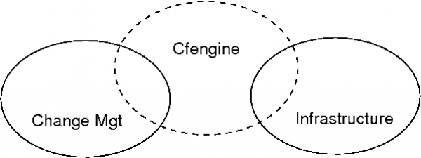
CFEngine can manage itself as well as other resources: itself, its software, its policy and the resulting plans for the configuration of the system. In other words, CFEngine is itself part of the infrastructure that we might change.
How can CFEngine or promises help an enterprise
Traditional methods of managing IT infrastructure involve working from crisis to crisis – waiting for `incidents' to occur and then initiating fire suppression responses or, if there is time, proactive changes. With CFEngine, these can be combined and made into a managementservice, with continuous service quality.
CFEngine can assist with:
- Maintenance assurance.
- Reporting for auditing.
- Change management.
- Security verification.
Promise theory comes with a couple of principles:
Separation of concerns.
Fundamental attention to autonomy of parts.
Other approaches to discussing organization talk about the separation of concerns, so why is promise theory special? Object Orientation (OO) is an obvious example. Promise theory is in fact quite different to object orientation (which is a misnomer).
Object orientation asks users to model abstract classes (roles) long before actual objects with these properties exist. It does not provide a way to model the instantiated objects that later belong to those classes. It is mainly a form of information structure modelling. Object orientation models only abstract patterns, not concrete organizations.
Promise theory on the other hand considers only actual existing objects (which it calls agents) and makes no presumptions that any two of these will be similar. Any patterns that might emerge can be exploited, but they are not imposed at the outset. Promise theory's insistence on autonomy of agents is an extreme viewpoint from which any other can be built (just as atoms are a basic building block from which any substance can be built) so there is no loss of generality by making this assumption.
In other words, OO is a design methodology with a philosophy, whereas promises are a model for an arbitrary existing system.
What is maintenance?
Maintenance is a process that ITIL does not formally spend any time on explicitly, but it is central to real-world quality control.
Imagine that you decide to paint your house. Release 1 is going to be white and it is going to last for 6 years. Then release 2 is going to be pink. We manage our painting service and produce release 1 with all of the care and quality we expect. Job done? No.
It would be wrong for us to assume that the house will stay this fine colour for 6 years. Wind, rain and sunshine will spoil the paint over time and we shall need to touch up and even repaint certain areas in white to maintain release 1 for the full six years. Then when it is time for release 2, the same kind of maintenance will be required for that too.
Unless we read between the lines, it would seem that ITIL's answer to this is to wait for a crisis to take place (an incident). We then mobilize some kind of response team. But how serious an incident do we require and what kind of incident response is required? A graffiti artist? A lightening strike? A bird anoints the paint-work? CFEngine is like the gardener who patrols the grounds constantly plucking weeds, before the flower beds are overrun. Call it continual improvement if you like: the important thing is that the process your be pro-active and not too expensive.
Maintenance is necessary because we do not control all of the changes that take place in a system. There is always some kind of “weather” that we have to work against. CFEngine is about this process of Maintenance. We call it “convergence” to the ideal state, where the ideal state is the specified version release. Keep this in mind as you read about ITIL change management.
ITIL and CFEngine Summary
ITIL is about processes designed mainly for humans in a workplace. It represents a service oriented view of an organization, and as such is more scalable than hierarchical views of management. CFEngine is also a service oriented technology, thus there is some overlap of concepts. Indeed CFEngine is a good tool for implementing and assisting in certain ITIL processes, but we believe that no automation system can really support what ITIL is about.
Appendix A ITIL glossary
This section lists some of the many terms from ITIL, especially the ISO/IEC 20000 version of the text, and offers some comments and translations into common CFEngine terminology.
Active Monitoring
Monitoring of a configuration item or IT service that uses automated regular checks to discover the current status.
CFEngine performs programmed checks of all of its promises each time cfagent is started. Cfagent is, in a sense, an active monitor for a set of promises that are described in its configuration file.
Availability
The ability of a component or service to perform its required function.
Availability = Hours operational / Agreed service hours
Availability or intermittency in CFEngine refers to the responsiveness of hosts in a network when remotely connecting to cfservd.
Intermittency = Successful~ attempts / Total Attempts This is a measurement that cfagent automatically makes.
Alert
A warning that a threshold has been reached, something has changed or a failure has occurred.
A CFEngine alert fits this description quite well. Most alerts are user-defined, but a few are side effects of certain configuration rules.
Audit
A formal inspection and verification to check whether a standard or set of guidelines is being followed.
CFEngine's notion of an audit is more like the notion from system accounting. However, the data generated by this extra logging information could be collected and used in a more detailed examination of CFEngine's operations, suitable for use in a formal inspection (e.g. for compliance).
Baseline
A snapshot of the state of a service or an individual configuration item at a point in time
In CFEngine parlance, we refer to this as an initial state or configuration. In principle a CFEngine initial state does not have to be a known-base line, since the changes we make will not generally be relative to an existing configuration. CFEngine encourages users to define the final state (regardless of initial state).
Benchmark
The recorded state of something at a specific point in time.
CFEngine does not use this term in any of its documentation, though our general understanding of a “benchmark” is that of a standardized performance measurement under special conditions. CFEngine regularly records state and performance data in a variety of ways, for example when making file copies.
Capability
The ability of someone or something to carry out an activity.
CFEngine does not use this concept specifically. The notion of a capability is terminology used in role-based access control.
Change record
A record containing details of which configuration items are affected and how they are affected by an authorized change.
CFEngine's default modus operandi is to not record changes made to a system unless requested by the user. Changes can be written as log entries or audit entries by switching on reporting.
An “inform” promise means that cf-agent promises to notify the changes to its standard output (which is usually sent by email or printed on a console output). A “syslog” promise implies that cfagent will log the message to the system log daemon. Both of the foregoing messages give only a simple message of actual changes. An “audit” promise is a promise to record extensive details about the process that cfagent undergoes in its checking of other promises.
Chronological Analysis
An analysis based on the timeline of recorded events (used to help identify possible causes of problems).
A timeline analysis could easily be carried out based on audit information, system logs and cfenvd behavioural records.
Configuration
A group of configuration items (CI) that work together to deliver an IT service.
A configuration is the current state of resources on a system. This is, in principle, different from the state we would like to achieve, or what has been promised.
Configuration Item (CI)
A component of an infrastructure which is or will be under the control of configuration management.
A configuration item is any object making a promise in CFEngine. We often speak of the promise object, or “promiser”.
Configuration Management Database (CMDB)
Database containing all the relevant details of each configuration item and details of the important relationships between them.
CFEngine has no asset database except for its own list of promises. The only relationships is cares about are those which are explicitly coded as promises. In the future, CFEngine 3 is likely to extend the notion of promises to allow more general records of the CMDB kind, but only to the extent that they can be verified autonomically.
Document
Information and its supporting medium.
ITIL originally considered a document to be only a container for information. In version 3 it considers also the medium on which the data are recorded, i.e. both the file and the filesystem on which it resides.
Emergency Change
A change that must be introduced as soon as possible – for example to solve a major incident or to implement a critical security patch.
CFEngine has no specific concept for this.
Error
A design flaw or malfunction that causes a failure.
CFEngine often uses the term configuration error to mean a deviation of a configuration from its promised state. The ITIL meaning of the term would translated into “bug in the CFEngine software” or “bug in the promised configuration”.
Event
A change of state that has significance for the management of a configuration item or IT service.
The same basic definition applies to CFEngine also, but CFEngine makes all such events into classes, since its approach to observing the environment is to measure and then classify it into approximate expected states. CFEngine class attributes (usually from cfenvd) may be considered as event notifications as they change.
Exception, Failure, Event, Summary
An event that is generated when a service or device is currently operating abnormally.
A state in which configuration policy is violated (could lead to a warning or an automated correction).
Failure
Loss of ability to operate to specification or to deliver the required output.
ITIL's idea of a failure is something that prevents a promise from being kept. CFEngine's autonomy model means that it is unlikely for such a failure to occur, since promises are only allowed to be made about resources for which we have all privileges. Occasionally, environmental issues might interfere and lead to failure.
Incident
Any event that is not expected in normal operations and which might cause a degradation of service quality.
CFEngine's philosophy of convergence gives us only one option for interpreting this term, namely as a temporary deviation from promised behaviour. A deviation must be temporary if CFEngine is operating continually, since it will repair any problem on its next invocation round. Events which do not impact promises made by CFEngine are of no interest to CFEngine, since autonomy means it cannot be responsible for anything beyond its own promises.
Monitoring
Repeated observation of a configuration item, IT service or process in order to detect events and ensure that the current status is known.
CFEngine incorporates a number of different kinds of monitoring, including monitoring of kept configuration-promises and passive monitoring of behaviour.
Passive Monitoring
Monitoring of a configuration item or IT service that relies on an alert or notification to discover the current status.
cf-monitord is CFEngine's passive monitoring component. It observes system related behaviour and learns about it. It assumes that there is likely to be a weekly periodicity in the data in order to best handle its statistical inference.
Policy
Formally documented management expectations and intentions. Policies are used to direct decisions, and to ensure consistent and appropriate development and implementation of processes, standards, roles, activities, IT infrastructures, etc.
CFEngine's configuration policy is an automatable set of promises about the static and runtime state of a computer. Roles are identified by the kinds of behaviour exhibited by resources in a network. We say that a number of resources (hosts or smaller configuration objects) play a specific promised role if they make identical promises. Any resource can play a number of roles. Decisions in CFEngine are made entirely on the basis of the result of monitoring a host environment.
Proactive Monitoring, Problem, Policy, Summary
Monitoring that looks for patterns of events to predict possible future failures.
All CFEngine monitoring is pro-active in the sense that it can lead to automated follow-up actions.
Problem
Unknown underlying cause of one or more incidents.
A repeated deviation from policy that suggests a change of policy or specific counter-measures. A promise needs to be reconsidered or new promises are required.
Promise, Reactive Monitoring, Problem, Summary
ITIL does not define this term, although promises are deployed in various ways – for instance in terms of cooperation, communication interfaces within or between processes or contractual relationships as defined by Service Level Agreements, Operational Level Agreements and Underpinning Contracts.
A promise in CFEngine is a single rule in the CFEngine language. The promiser is the resource whose properties are described, and the promisee is implicitly the CFEngine monitor.
Reactive Monitoring
Monitoring that takes action in response to an event – for example submitting a batch job when the previous job completes, or logging an incident when an error occurs.
The concept of reactive monitoring is unclear because the duration of an event and the speed of a response are undefined. In a sense, all CFEngine monitoring is potentially reactive. It is possible to attach actions which keep promises to any observable condition discernable by CFEngine's monitor. CFEngine is not usually considered event driven however, since it does not react “as soon as possible” but at programmed intervals.
Record
Information in readable form that is maintained by the service provider about operations.
A log entry or database item.
Recovery
Returning a Configuration Item or an IT service to a working state. Recovering of an IT service often includes recovering data to a known consistent state.
All CFEngine promises refer to the state of a system that is desired. The promises are automatically enforced, hence CFEngine recovers a system (in principle) on every invocation. CFEngine always returns to a known state, due to the property of “convergence”. There is no distinction between the concepts of repair, recovery or remediation.
Remediation
Recovery to a known state after a failed change or release.
All CFEngine promises refer to the state of a system that is desired. The promises are automatically enforced, hence CFEngine recovers a system (in principle) on every invocation. CFEngine always returns to a known state, due to the property of “convergence”. There is no distinction between the concepts of repair, recovery or remediation.
However, this concept is like the notion of “rollback” which often involves a more significant restoration of a system from backup. This is discussed later.
Repair
The replacement or correction of a failed configuration item.
All CFEngine promises refer to the state of a system that is desired. The promises are automatically enforced, hence CFEngine recovers a system (in principle) on every invocation. CFEngine always returns to a known state, due to the property of “convergence”. There is no distinction between the concepts of repair, recovery or remediation.
Release, Request for Change, Repair, Summary
A collection of new or changed configuration items that are introduced together.
An instantiation of the entire CFEngine system under a specific version of a policy, i.e. a specific set of promises.
Request for Change
A form to be completed requesting the need for change. This is to be followed up.
This has no counterpart in CFEngine. It is part of human communication which coordinates autonomous machines. Clearly autonomous computers do not listen to change requests from other computers, but when machines cooperate in clusters or groups they take suggestions from the collaborative process. An RFC in an ITIL sense is part of an organizational process that goes beyond CFEngine's level of jurisdiction. This is an example of what ITIL adds to the autonomous CFEngine model.
Abandon Autonomy?
Why not simply abandon autonomy of machines if this seems to interfere with the need for organizational change? There are good reasons why autonomy is the correct model for resources. Autonomy reduces the risk to a resource of attack, mistake and error propagation.
ITIL's processes exist precisely to minimize the risk of negative impact of change, so the goals are entirely compatible. When an organization discusses a change it examines information from possible several autonomous systems and discusses how they will change their pattern of collaboration. There is no point in this process at which it is necessary for one of the systems to give up its autonomy.
Resilience
The ability of a configuration item or IT service to resist failure or to recover quickly following a failure.
CFEngine's purpose is to make a system resilient to unpredictable change.
Restoration
Actions taken to return an IT service to the users after repair and recovery from an incident.
All CFEngine promises refer to the state of a system that is desired. The promises are automatically enforced, hence CFEngine recovers a system (in principle) on every invocation. CFEngine always returns to a known state, due to the property of “convergence”. There is no distinction between the concepts of repair, recovery or remediation.
However, this concept seems to suggest a more catastrophic failure which often involves a more significant restoration of a system from backup. This is discussed later.
Role
A set of responsibilities, activities and authorities granted to a person or a team. Roles are defined in processes.
A role in CFEngine is a class of agents that make the same kind of promise. The type of role played by the class is determined by the nature of the promise they make. e.g. a promise to run a web server would naturally lead to the role “web server”.
Service desk
Interface between users and service provider.
A help desk. This is not formally part of CFEngine's tool set.
Service Level Agreement
A written agreement between the service provider that documents agreed services, levels and penalties for non-compliance.
An agreement assumes a set of promises that propose behaviour and an acceptance of those promises by the client. If we assume that the users are satisfied with out policies, then an SLA can be interpreted as a combination of a configuration policy (configuration service promises), and the CFEngine execution schedule.
Service Management
The management of services.
Warning
An event that is generated when a service or device is approaching its threshold.
A message generated in place of a correction to system state when a deviation from policy is detected. Note that CFEngine is not based on fixed thresholds. All “thresholds” for action or warning are defined as a matter of policy.
Adopting CFEngine
What does adoption involve?
CFEngine is a framework and a methodology with far reaching implications for the way you do IT management. The CFEngine approach asks you to think in terms ofpromisesandcooperationbetween parts; it automates repair and maintenance processes and provides simple integrated Knowledge Management.
To use CFEngine effectively, you should spend a little time learning about the approach to management, as this will save you a lot of time and effort in the long run.
The Mission Plan
At CFEngine, we refer to the management of your datacentre as The Mission. The diagram below shows the main steps in preparing mission control. Some training is recommended, and as much planning as you can manage in advance. Once a mission is underway, you should expect to work by making small corrections to the mission plan, rather than large risky changes.
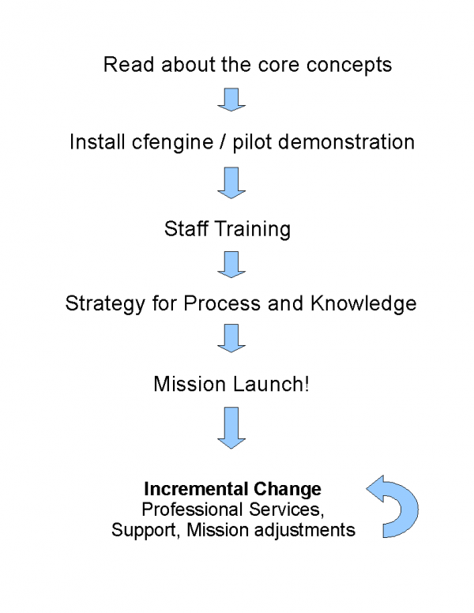
Planning does not mean sitting around a table, or in front of a whiteboard. Successful planning is a dialogue between theory and practice. It should include test pilots and proof-of-concept implementations.
Commercial or Free?
The first decision you should make is whether you will choose a route of commercial assistance or manage entirely on your own. You can choose different levels of assistance, from just training, to consulting, to commercial versions of the software that simplify certain processes and offer extended features.
At the very minimum, we recommend that you take a training course on CFEngine. Users who don't train often end up using only a fraction of the software's potential, and in a sub-optimal way. Think of this as an investment in your future.
The advantages of the commercial products include greatly simplified set up procedures, continuous monitoring and automatic knowledge integration. See the CFEngine Nova Supplement for more information.
Installation or Pilot
You are free to download Community Editions of CFEngine at any time to test the software. There is a considerable amount of documentation and example policy available on the cfengine.com web-site to try some simple examples of system management.
If you intend to purchase a significant number of commercial licenses for CFEngine software, you can request a pilot process, during which a specialist will install and demonstrate the commercial edition on site.
Identifying the Team
CFEngine will become a core discipline in your organization, taking you from reactive fire-fighting to proactive and strategic practices. You should invest in a team that embraces its methods. The CFEngine team will become the enabler of business agility, security, reliability and standardization.
The CFEngine team needs to have administrator or super-user access to systems, and it needs the headroom or slack to think strategically. It needs to build up processes and workflows that address quality assurance and minimize the risk of change.
All teams are important centres for knowledge, and you should provide incentives to keep the core team strong and in constant dialogue with your organization's strategic leadership. Treat your CFEngine team as a trusted partner in business.
Training and Certification
Once you have tried the simplest examples using CFEngine, we recommend at least three days of in-depth training. We can also arrange more in-depth training to qualify as a CFEngine Mission Specialist.
Mission Goal and Knowledge Management
The main aim of Knowledge Management is to learn from experience, and use the accumulated learning to improve the predictability of workflow processes. During every mission, there will be unexpected events, and an effective team will use knowledge of past and present to respond to these unpredictable changes with confidence
The goal of an IT mission is a predictable operational state that lives up to specific policy-determined promises. You need to work out what this desired state should be before you can achieve it. No one knows this exactly in advance, and most organizations will change course over time. However, with good planning and understanding of the mission, such adjustments to policy can be small and regular.
Many small changes are less risky than few large changes, and the culture of agility keeps everyone on their toes. Using CFEngine to run your mission, you will learn to work pro-actively, adjusting the system by refining the mission goal rather than reacting to unexpected events.
To work consistently and predictably, even when understaffed, requires a strategy for describing system resources, policy and state. CFEngine can help with all of these. See the Special Topics Guide on Knowledge Management.
A major component of a successful mission, is documenting intentions. What is the goal, and how does it break down into concrete, achievable states? CFEngine can help you in this process, with training and Professional Services, but you must establish a culture of commitment to the mission and learn how to express these commitments in terms of CFEngine promises.
Build, Deploy, Manage, Audit
The four mission phases are sometimes referred to as
Build
A mission is based on decisions and resources that need to be put assembled or `built' before they can be applied. This is the planning phase.
In CFEngine, what you build is a template of proposed promises for the machines in an organization such that, if the machines all make and keep these promises, the system will function seamlessly as planned. This is how it works in a human organization, and this is how is works for computers too.
Deploy
Deploying really means launching the policy into production. In CFEngine you simply publish your policy (in CFEngine parlance these are `promise proposals') and the machines see the new proposals and can adjust accordingly. Each machine runs an agent that is capable of keeping the system on course and maintaining it over time without further assistance.
Manage
Once a decision is made, unplanned events will occur. Such incidents traditionally set off alarms and humans rush to make new transactions to repair them. Under CFEngine guidance, the autonomous agent manages the system, and humans only manage knowledge and have to deal with rare events that cannot be dealt with automatically.
Audit
CFEngine performs continuous analysis and correction, and commercial editions generate explicit reports on mission status. Users can sit back and examine these reports to check mission progress, or examine the current state in relation to the knowledge map for the mission.
Agility
Understanding Agility
We intuitively recognize agility as the capability to respond rapidly enough and flexibly enough to a difficult challenge. If we imagine an animal surviving in the wild, a climber on a rock-face or a wrestler engaged in combat, we identify the skills ofanticipation,speedof response and the ability toadaptor bend without breaking to meet the challenges.
- Anticipate.
- Act.
- Adapt.
In infrastructure management, agility represents the need to handle changing demand for service, to repair an absence of service, and to improve and deploy new services in response to changes from users and market requirements. It is tied to economic, business or work-related imperatives by the need to maintain a competitive lead.
The compelling event that our system must respond to might represent danger, or merely a self-imposed deadline. In either case, there is generally a penalty associated with a lack of agility: a blow, a fall or a loss.
- What make agility possible?
- The capacity of a system
- Speed
- Precision
- Comprehension
- Efficiency
What make agility possible?
To understand agility, we have to understand time and thecapacityfor change. Agility is a relative concept: it's about adapting quickly enough, in the right context, with the right measure and in the right way. Below, we'll try to gain an engineering perspective on agility to see what enables it and what throttles it.
To respond to a challenge there are four stages that need attention:
- To comprehend the challenge.
- To solve the challenge.
- To respond to the challenge.
- To confirm or verify the response.
Each of these phases takes actual clock-time and requires a certain flexibility. Our goal is to keep these phases simple and therefore cheap for the long-term. Affording the time and flexibility needed is the key to being agile. Technology can help with this, if we adopt sound practices.
Intuitively, we understand agility to be related to our capacity to respond to a situation. Let's try to pin this idea down more precisely.
The capacity of a system
The capacity of a system is defined to be its maximum rate of change. Most often, this refers to speed of the system response to a single request1.
In engineering, capacity is measured in changes per second, so it represents the maximum speed of a system within a single thread of activity2.
Speed
Speed is the rate at which change takes place. For a configuration tool like CFEngine, speed can be measured either as
Clock speed
The actual elapsed wall-clock time-rate at which work gets done, including any breaks and pauses in the schedule.
This depends on how often checks are made, or the interval between them, e.g. in CFEngine, the default schedule is to verify promises every five minutes.
System speed
The average speed of the system when it is actually busy working on a problem, excluding breaks and pauses. For example, once CFEngine has been scheduled at the end of a five minute interval, it might take a few seconds to make necessary changes.
Engineers can try to define an engineering scale of agility as the ratio of available speed to required speed and ratio of number ways a system can be changed to the number of ways imperatives require us to change.
Agility is proportional to both how much speed we can muster compared to what is required, and the number of change-capabilities we possess, compared to what we need to meet a challenge. In other words: how well equipped are we? As engineers, we could write something like this:
Available speed under control Changes available
Agility =~ ----------------------------- * -----------------------
Required speed Changes Required
Although such a scale might be hard to measure and follow in practice, the definition makes simple engineering sense3, and brings some insight into what we need to think about. What it suggests is that agility is a combination of speed and precision.
What is required speed? It is is the rate of change we have to be able to enact in order to achieve and maintain a state (keep a promise) that is aligned with our intent. This requires a dependence on technology and human processes.
The weakest link in any chain of dependencies limits the speed. The weakest link might be a human who doesn't understand what to do, or a broken wire or a misconfigured switch, so there are many possible failure modes for agility. An organization is an information rich society with complex interplays between Man and Machine; agility challenges us to think about these weakest links and try to bolster them with CFEngine's technology.
For example:
If we think in terms of services, it is the Service Level you have to achieve in order to comply with a Service Level Agreement.
If we think of a support ticket, it is the speed we have to work at in order to keep the impact of an unpredicted change within acceptable levels.
What we call /acceptable/ is a subjective judgement, i.e. a matter for policy to decide. So there are many uncertainties and relativisms in such definitions. It would be inconceivable to claim any kind of industry standard for these.
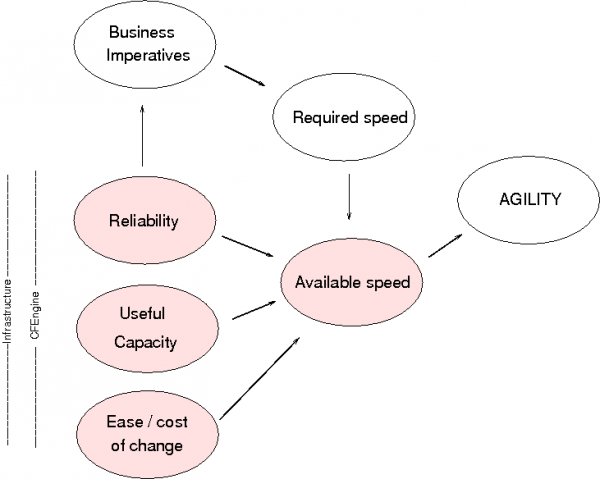
We can write some scaling laws for the dependencies of agility to see where the failure modes might arise.
The speed available to meet a challenge is (on average) the maximum speed we can reliably maintain over time divided by the number of challenges we have to share between.
Expected capacity * reliability
Average available speed =~ -------------------------------
Consumers or challenges
This expression says that the rate at which we get work done on average depends no only on how we share maximum capacity amongst a number of different consumers, clients, processes, etc, but also on how much of the time this capacity is fully available, perhaps because systems are down or unavailable.
The appearance of reliability in this expression therefore tells us that maintenance of the system, and anticipation of failure will play a key role in agility. Remarkably this is usually unexpected for most practitioners, and most of system planning goes into first time deployment, rather than maintaining operational state.
Precision
Acting quickly is not enough: we also need to be accurate in responding to change[4]. We need to be able to:
Model the desired outcome accurately in terms of universal policy coordinates: Why, When, Where, What, How.
Maximize the chance that the promised outcome will be achieved.
Precision is maximized when:
Changes are `precise', i.e. they can be made at a highly granular level, without disturbing areas that are not relevant (few side-effects).
Policy is able to model or describe the desired state accurately, i.e. within the relevant area, the state is within acceptable tolerances.
If any assumptions are hidden, they are describable in terms of the model, not determined by the limitations of the software5.
The agent executes the details of the model quickly and verifiably, in a partially unpredictable environment, i.e. it should be fault tolerant.
If the model cannot be implemented, it is possible to determine why and decide whether the problem lies in an incorrect assumption or a flaw in the implementation.
CFEngine is a fault tolerant system – it continues to work on what it can even when some parts of its model don't work out as expected[6].
Next: Efficiency, Previous: Precision, Up: Understanding Agility 1.5 Comprehension
The next challenge is concerns a human limitation. One of the greatest challenges in any organization lies in comprehending the system.
Comprehensibility increases if something is predictable, or steady in its behaviour, but it decreases in proportion to the number of things we need to think about – which includes the many different contexts such as environments, or groups of machines with different purposes or profiles.
Predictability (Reliability) Predictability
Comprehensibility =~ ---------------------------- = ---------------- Contexts Diversity
Our ability to comprehend behaviour depends on how predictable it is, i.e. how well it meets our expectations. For technology, we expect behaviour to be as close as possible on our intentions. CFEngine's maintenance of promises ensures that this is done with best possible effort and a rapid cycle of checking.
To keep the number of contexts to a minimum, CFEngine avoids mixing up what policy is being expressed with how the promises are kept. It uses a declarative language to separate the what from the how. This allows ordinary users to see what was intended without having to know the meaning of how, as was the case when scripting was used to configure systems.
Previous: Comprehension, Up: Understanding Agility 1.6 Efficiency
Finally, if we think about the efficiency of a configuration, which is another way of estimating its simplicity, we are interested in how much work it takes to represent our intentions. There are two ways we can think about efficiency: the efficiency of the automated process and the human efficiency in deploying it.
If the technology has a high overhead, the cost of maintaining change is high and efficiency is low:
The efficiency of the technology decreases with the more resources it uses, e.g. like memory and CPU. Resources used to run the technology itself are pure overhead and take away from the real work of your system.
Resources used
Resource Efficiency =~ 1 - ---------------
Total resources
It is a design goal of CFEngine to maintain minimal overhead in all situations. The second aspect of efficiency is how much planning or rule-making is needed to manage the relevant issues.
The efficiency of a model decreases when you put more effort into managing a certain number of things. If you can manage a large number of things with a few simple constraints, that is efficient.
Number of objects affected
Model Efficiency =~ -------------------------------
Number of rules and constraints
General patterns play a role too in simplifying, because the reduce the number of special rules and constraints down to fewer more generic rules. If we make good use of patterns, we can make few rules that cover many cases. If there are no discernible patterns, every special case is a costly exception. This affects not just the technology cost, but also the cognitive cost (i.e. the comprehensibility).
Efficiency therefore plays a role in agility, because it affects the cost of change. Greater efficiency generally means greater speed, and more greater likelihood for precision.
Next: Agility in your work, Previous: Understanding Agility, Up: Top 2 Aspects of CFEngine that bring agility
We can now summarize some qualities of CFEngine that favour agility:
Ability to express clear intentions about desired outcome (comprehension).
Availability of insight into system performance and state (comprehension).
Ability to manage large numbers of hosts and resources with a few generic patterns (efficiency).
Ability to bundle related details into simple containers (comprehension without loss of adaptability).
Ability to accurately customize policy down to a low level without programming (adaptability).
Ability to recover quickly from faults and failures. The default, parallelized execution framework verifies promises every 5 minutes for rapid fault detection and change deployment (clock speed)7 .
A quick system monitoring/sampling rate – every 2.5 minutes (Nyquist frequency), for automated hands-free response to errors.
Ability to recover cheaply. The lightweight resource footprint of CFEngine that consumes few system resources required for actual business (system speed – low overhead, maximum capacity).
Ability to increase number of clients without significant penalty (scalability and easy increase of capacity).
A single framework for all devices and operating systems (ease of migrating from one platform to another).
What agility means in different environments
Separating What from How
Packaging limits agility
How abstraction improves agility
Increasing system capacity - by scaling
What agility means in different environments
Let's examine some example cases where agility plays a role. Agility only has meaning relative to an environment, so in the following sections, we cite the remarks of CFEngine users (in quotes), and their example environments.
Users' expectations for agility can differ dramatically in the present; but if we think just a few years down the line, and follow the trends, it seems clear that limber systems must prevail in IT's evolutionary jungle.
- Desktop management
- Web shops
- Cloud providers
- High Performance Computing
- Government
- Finance
- Manufacturing
Desktop management
"The desktop space can be a very volatile environment, with multiple platforms."
Speed:
Speed is essential when there is a need to respond to a security threat that
affects all of the desktop systems; e.g. when dealing with malware that
requires the distribution of updated virus.dat files, etc. CFEngine can be
very helpful by automating the process of distributing and restarting the
application responsible for virus detection and mitigation. Systems that
have been breached, need to be returned to known and secure state quickly to
avoid loss. CFEngine can quickly detect and correct host based intrusions
using file-scanning techniques and can secure hosts for examination, or just
repair them quickly.
Another case for agility lies in user request processing. For example, when
a new user joins a workplace and needs resources such as desktop, laptop,
phone, Internet connection, VPN connection, VM instances, etc. Speed is of
the essence to minimize employee downtime.
Precision:
Desktop environments can involve many different platforms: Windows, multiple
flavours of Linux and Macintosh, etc. A uniform low-cost way of
`provisioning' and maintaining all of these, as well as responding to common
threats is of significant value.
Precision is important to ensure that the resources made available are
indeed the correct ones. Inaccuracy can be a potential security issue, or
merely a productivity question.
Precision also comes into play when an enterprise rolls out new patches or
productivity upgrades. These upgrades need to be uniformly and precisely
distributed to all of the desktop systems during a given change window. By
design, desktop clients running CFEngine automatically check for changes in
system state and can precisely propagate desired state. In the case of
system restoration due to corruption or hardware failure, CFEngine can
greatly reduce the time needed to return to the most current enterprise
build.
Web shops
Modern web-based companies often base their entire financial operations around an active web site. Down-time of the web service is mission critical.
Speed:
The frequency of maintenance is not usually critical in web shops, since
configuration changes can be planned to occur over hours rather than
minutes. During software updates and system repairs, however, speed and
orchestration are issues, as time lost during upgrades is often revenue
lost, and a lack of coordination of multiple parts could cause effective
downtime.
It is therefore easy to scale the management of a web service, as change is
rarely considered to be time-critical.
Resource availability for the web service is an issue on busy web servers,
however web services are typically quite slow already and it is easy to load
balance a web service, so resource efficiency of the management software is
not usually considered a high priority, until the possible savings become
significant with thousands of hosts.
Credit card information is subject to PCI-DSS regulation and requires a
continuous verification for auditing purposes, but these systems are often
separated from the main web service. Speed of execution can be seen as an
advantage by some auditors where repairs to security matters and detection
of breaches are carefully monitored.
Precision:
The level of customization in a web shop could be quite high, as there is a
stack of interdependent services including databases and name services that
have to work seamlessly, and the rate of deployment of new versions of the
software might be relatively high.
Customization and individuality is a large part of a website's business
competitiveness. Maintaining precise
Cloud providers
Speed:
The cloud was designed for shorter time-scales, and relatively quick
turnover of needs. That suggests that configuration will change quite often.
For Infrastructure-as-a-Service providers and consumers, set up and
tear-down rates are quite high so efficient and speedy configuration is
imperative.
Precision:
For Software and Platform as a service providers, stability, high
performance and regulation are key issues, and scaling up and down for
demand is probably the fastest rate of change.
High Performance Computing
High Performance clusters are typically found in the oil and gas industry, in movie, financial, weather and aviation industries, and any other modelling applications where raw computation is used to crunch numbers.
Speed:
The lightweight footprint of CFEngine is a major benefit here, as every CPU
cycle and megabyte of memory is precious, so workflow is not disrupted.
"A single node in the compute grid being out of sync with the others can
cause the entire grid to cause failed jobs or otherwise introduce
unpredictability into the environment, as it may produce results that differ
from its peers. Thus it is imperative that repairs to an incorrect state
happen as soon as possible, to minimize the impact of these issues."
Precision:
"Precision is exquisitely important in an HPC grid. When making a
configuration change, due to the homogeneity of the environment, small
changes can have enormous impacts due to the quantity of affected systems. I
liken this to the "monoculture" problem in replanted forests – everything is
the same, so what would ordinarily be a small, easily-contained problem like
a fungus outbreak, quickly spreads into an uncontrollable disaster. Thus,
with HPC systems it is imperative that any changes deployed are precise, to
ensure that no unintended consequences will occur. This is clearly directly
related to comprehensibility of the environment – it is difficult or
impossible to make a precise change when you don't fully comprehend the
environment."
Government
Speed:
Government is not known for speed.
Precision:
"Government systems are reviewed and audited under FISMA and so one has
often thought in terms of the ability to reduce complexity to make the
problem manageable. Government typically wants the one-size-fits-all
solution to system management and could benefit from something that can
manage complexity and diversity while providing some central control (I bet
you hate that word). The only thing we might have in common with finance is
auditing but I'm sure the methods and goals are completely different.
Finance is big money trying to make more big money. Government is focused
more on compliance with its own regulations."
Finance
Speed:
One of the key factors in finance is liability. Fear of error, has led to
very slow processing of change.
High availability in CFEngine is used for continuous auditing and security.
Passing regulatory frameworks like SOX, SAS-70, ISO 20k, etc can depend on
this non-intrusive availability. Liability is a major concern and
significant levels of approval are generally required to make changes, with
tracking of individual responsibility. Out-of-hours change windows are
common for making upgrades and making intended changes. Scalability of
reporting is a key here, but change happens slowly.
Precision:
Security and hence tight control of approved software are major challenges
in government regulated institutions. Agility has been a low priority in the
past, but this will have to change as the rest of the world's IT services
accelerate.
Manufacturing
SCADA (supervisory control and data acquisition) generally refers to industrial control systems (ICS): computer systems that monitor and control industrial, infrastructure, or facility-based processes, as described below.
Speed:
Manufacturing is a curious mix of all the mention areas and more. In
addition to the above, there is an tool component. The tools can design,
build, test, track, and ship a physical unit. Downtime of any component is
measured in missed revenue, so speed of detection and repair is crucial.
Precision:
"We need to ensure agility and accuracy of reporting. We need to know what
is going on at any microsecond of the day. One faulty tool can throw a
wrench in the whole works. The digital equivalent of the steam whistle to
stop the line.
From there, all the tool information is fed upstream to servers, from there
to databases, then reports, that statistical analysis, and so on. Each piece
needs to move with the product and incorporate it. It is a steady chain of
events where are all information is liquid and relevant.
Not only do you have the security requirements, from virus updates to top
secret classification, but these tools need to never stop, ever. Also, these
tools need constant reconfiguration depending on the product they are
working on: e.g. you can't use the same set of procedures on XBox chip as a
cellphone memory module. And all the tools are different too: one may be a
probe to detect microscopic fractures in the layers, one tool may just track
it's position in line. Supply and demand, cost and revenue."
Separating What from How (DevOps)
If you have to designs a programmatic solution to a challenge, it will cost you highly in terms of cognitive investment, testing and clarity of purpose to future users. Thinkingprocess(how) instead ofknowledge(what) is a classic carry-over from the era of 2nd Wave industrialization8.
Think of CFEngine as an active knowledge management system, rather than as a relatively passive programming framework.
For `DevOps': programming is for your application, consider its deployment to be part of the documentation.
Many programmatic systems and APIs' force you to explain how something will be
accomplished and the statement aboutwhat' the outcome will be is left to an
implicit assumption. Such systems are called imperative systems.
CFEngine is a declarative system. In a declarative system, the reverse is true. You begin by writing down What you are trying to accomplish and the How is more implicit. The way this is done is by separating data from algorithm in the model. CFEngine encourages this with its language, but you can go even further by using the tools optimally.
CFEngine allows you to represent raw data as variables, or as strings within your policy. For example:
bundle agent name
{
vars:
"main_server" string => "abc.123.com";
"package_source[ubuntu]" string => "repository.ubuntu.com";
"package_source[suse]" string => "repository.suse.com";
# Promises that use these data
#
# packages:
# processes:
# files:
# services: , etc
}
By separating `what' data like this out of the details of how they are used, it becomes easier to comprehend and locate, and it becomes fast to change, and the accuracy of the change is easily perceived. Moreover, CFEngine can track the impact of such a change by seeing where the data are used.
CFEngine's knowledge management can tell you which system promises depend on which data in a clear manner, so you will know the impact of a change to the data.
You can also keep data outside your policy in databases, or sources like:
- LDAP
- NIS
- DNS
- System files
For example, reading in data from a system file is very convenient. This is what Unix-like system do for passwords and user management.
What you might lose when making an input matrix is the why. Is there an explanation that fits all these cases, or does each case need a special explanation? We recommend that you include as much information as possible about `why'.
Packaging limits agility
Atomicity enables agility. Atomicity, or the avoidance of dependency, is a key approach to simplicity. Today this is often used to argue to packaging of software.
Handling software and system configuration as packages of data makes certain processes appear superficially easy, because you get a single object to deal with, that has a name and a version number. However, to maintain flexibility we should not bundle too many features into a package.
A tin of soup or a microwave meal might be a superficially easy way to make dinner, for many scenarios, but the day you get a visitor with special dietary requirements (vegetarian or allergic etc) then the prepackaging is a major obstacle to adapting: the recipe cannot be changed and repackaged without going back to the factory that made it. Thus oversimplification generally tends to end up sending up back to work around the technology.
CFEngine's modelling language gives you control over the smallest ingredients, but also allows you to package your own containers or work with other suppliers' packages. This ensures that adaptability is not sacrificed for superficial ease.
For example: your system's package model can cooperate with CFEngine make asking CFEngine to promise to work with the package manager:
bundle agent example
{
packages:
"apache2";
"php5";
"opera";
}
If you need to change what happens under the covers, it is very simple to do this in CFEngine. You can copy the details of the existing methods, because the details are not hard-coded, and you can make your own custom version quickly.
bundle agent example
{
packages:
"apache2"
package_method => my_special_package_manager_interface;
}
How abstraction improves agility
Abstraction allows us to turn special cases into general patterns. This leads to a compression of information, as we can make defaults for the general patterns, which do not have to be repeated each time.
Service promises are good example of this9, for example:
bundle agent example
{
services:
"wwww";
}
In this promise, all of the details of what happens to turn on the web service have been hidden behind this simple identifier ‘www’. This looks easy, but is it simple?
In this case, it is both easy and simple. Let's check why. We have to ask the question: how does this abstraction improve speed and precision in the long run?
Obviously, it provides short term ease by allowing many complex operations to take place with the utterance of just a single word10. But any software can pull that smoke and mirrors trick. To be agile, it must be possible to understand and change the details of what happens when this services is promised. Some tools hard-code processes for this kind of statement, requiring an understanding of programming in a development language to alter the result. In CFEngine, the definitions underlying this are written in the high-level declarative CFEngine language, using the same paradigm, and can therefore be altered by the users who need the promise, with only a small amount of work.
Thus, simplicity is assured by having consistency of interface and low cost barrier to changing the meaning of the definition.
Increasing system capacity (by scaling)
Capacity in IT infrastructure is increased by increasing machine power. Today, at the limit of hardware capacity, this typically means increasing the number of machines serving a task. Cloud services have increased the speed agility with which resources can be deployed – whether public or private cloud – but they do not usually provide any customization tools. This is where CFEngine brings significant value.
The rapid deployment of new services is assisted by:
Virtualization hypervisor control or private cloud management (libvirt integration).
Rapid, massively-parallelized custom configuration.
Avoidance of network dependencies.
Related to capacity is the issue of scaling services for massive available capacity.
By scalability we mean the intrinsic capacity of a system to handle growth. Growth in a system can occur in three ways: by the volume of input the system must handle, in the total size of its infrastructure, and by the complexity of the processes within it.
For a system to be called scalable, growth should proceed unhindered, i.e. the size and volume of processing may expand without significantly affecting the average service level per node.
Although most of us have an intuitive notion of what scalability means, a full understanding of it is a very complex issue, mainly because there are so many factors to take into account. One factor that is often forgotten in considering scalability, is the human ability to comprehend the system as it grows. Limitations of comprehension often lead to over-simplification and lowest-common-denominator standardization.
Scalability is addressed in a separate document: Scale and Scalability, so we shall not discuss it further here.
Agility in your work
- Easy versus simple
- How does complexity affect agility?
- An effective understanding helps agility
- Maximizing business imperatives
- What does agility cost?
- Who is responsible for agility?
Easy versus simple
Just as we separate goals from actions, and strategy from tactics, so we can separate what is easy from what is simple. Easy brings short-term gratification, but simple makes the future cost less.
Easyis about barriers to adoption. If there is a cost associated with moving ahead that makes it hard:
- A psychological cost
- A cognitive cost
- It takes too long
- It costs too much money
Simple is about what happens next. Once you have started, what happens if you want to change something?
Total cost of ownership is reduced if a design is simple, as there are only a few things to learn in total. Even if those things are hard to learn, it is a one-off investment and everything that follows will be easy.
Unlike some tools, with CFEngine, you do not need to program `how' to do things, only what you want to happen. This is always done by using the same kinds of declarations, based on the same model. You don't need to learn new principles and ideas, just more of the same.
How does complexity affect agility?
In the past[11], it was common to manage change by making everything the same. Today, the individualized custom experience is what today's information-society craves. Being forced into a single mold is a hindrance to adaptability and therefore to agility. To put it another way, in the modern world of commerce, consumers rule the roost, and agility is competitive edge in a market of many more players than before.
Of course, it is not quite that simple. Today, we live in a culture of `ease', and we focus on what can be done easily (low initial investment) rather than worrying about long term simplicity (Total Cost of Ownership).
At CFEngine, we believe that easy' answers often suffer from the sin of
over-simplification, and can lead to risky practices. After all, anyone can make
something appear superficially easy by papering over a mess, or applying raw
effort, but this will not necessarily scale up cheaply over time. Moreover,
making a risky processtoo easy' can encourage haste and carelessness.
Any problem has an intrinsic complexity, which can be measured by the smallest amount of information required to manage it, without loss of control.
Ease is the absence of a barrier or cost to action.
Simplicity is a strategy for minimizing Total Cost of Ownership.
Making something truly simple is a very hard problem, but it is an investment in future change. What is easy today might be expensive to make easy tomorrow. But if something is truly simple, then the work is all up front in learning the basics, and does not come as an unexpected surprise down the line.
At CFEngine, we believe in agility through simplicity, and so we invest continuous research into making our technology genuinely simple for trained users. We know that a novice user will not necessarily find CFEngine easy, but after a small amount of training, CFEngine will be a tool for life, not just a hurried deployment.
Simplicity in CFEngine is addressed in the following ways:
The software has few dependencies that complicate installation and upgrading.
Changes made are atomic and minimize dependencies.
Each host works as an independent entity, reducing communication fragility.
The configuration model is based on Promise Theory – a very consistent and simple approach to modelling autonomous cooperative systems.
All hosts run the same software agents on all operating platforms (from mobile phones to mainframes), and understand a single common language of intent, which they can translate into native system calls. So there are few exceptions to deal with.
Comprehensive facilities are allowed for making use of patterns and other total-information-reducing tactics.
A certain level of complexity might be necessary and desirable – complexity is relative. Some organizations still try to remain agile by avoiding complexity. However, the ability to respond to complex scenarios often requires us to dabble with diversity. Avoiding it merely creates a lack of agility, as one is held back by the need to over-simplify.
An effective understanding helps agility
All configuration issues, including fitness for purpose, boil down to three
things: why, what and how. Knowing why we do something is the most important way
of avoiding error and risk of failure. Simplicity then comes from keeping the
what' and thehow' separate, and reducing the how to a predictable, repairable
transaction. This is what CFEngine'sconvergent promisetechnology does.
Knowledge is an antidote to uncertainty. Insight into patterns, brings simplicity to the information management, and insight into behaviour allows us to estimate impact of change, thus avoiding the risk associated with agility.
In configuration what' represents transitory knowledge, whilehow' is often
more lasting and can be absorbed into the infrastructure. The consistency and
repairability of `how' makes it simpler to change what without risk.
Maximizing business imperatives
Agility allows companies and public services to compete and address the needs of
continuous service improvement. This requires insight into IT operations from
business and vice versa. Recently, the DevOps' movement in web arenas has
emphasized the need for a more streamlined approach to integrating
business-driven change and IT operations. Whatever we choose to call this, and
in whatever arena,connecting the dots between business and IT' is a major
enabler for agility to business imperatives.
Some business issues are inherently complex, e.g. software customization and security, because they introduce multifaceted conflicts of interest that need to resolved with clear documentation about why.
Be careful about choosing a solution because it has a low initial outlay cost. Look to the long term cost, or the Total Cost of Ownership over the next 5 years.
Many businesses have used the argument: everything is getting cheaper so it doesn't matter if my software is inefficient – I can brute force it in a year's time with more memory and a faster CPU. The flaw in this argument is that complexity and scale are also increasing, and you will need those savings down the line even more than you do now.
The ability to model our intentions in a clearly understandable way enables insight and understanding; this, in turn, allows us to anticipate and comprehend challenges. CFEngine's knowledge management features help to make the configuration itself a part of the documentation of the system. Instead of relying on command line tools to interact, the user documents intentions (as `promises to be kept'). These promises, and how well they have been kept, can be examined either from the original specification or in the Mission Portal.
In the industrial age, the strategy was to supply sufficient force to a small
problem in order to control' it by brute force. In systems today the scale and
complexity are such that no such brute force approach can seriously be expected
to work. Thus one is reduced to a more even state of affairs: learning to work
with the environmentas is', with clear expectations of what is possible and
controlling only certain parts on which crucial things depend.
What does agility cost?
CFEngine is designed to have a low Total Cost of Ownership, by being exceptionally lightweight and conceptually simple. The investment in CFEngine is a `learning curve' that some find daunting. Indeed, at CFEngine, we work on reducing this initial learning curve all the time – but what really saves you in the end is simplicity without over-simplification.
At a deployment in the banking sector, CFEngine replaced an incumbent software solution where 200 machines were required to make the management infrastructure scale to the task.
CFEngine replaced this with 3 machines, and a reduced workforce. After the replacement the clock-time required for system updates went from 45 minutes to 16 seconds.
The total cost of providing for agility can be costly or it can be cheap. By design, CFEngine aims to make scale and agility inexpensive in the long run.
Who is responsible for agility?
The bottom line is: you are! Diversity and customization are basic freedoms that user-driven services demand in today's world, and having the agility to meet changing desires is going to be an increasingly important and prominent feature of IT, as we delve further into the information-based society.
Competitive edge, response to demands, in both private sector and research, makes agility the actual product of a not-too-distant tomorrow.
Who or what makes agility a reality? The simple answer to this question is everyone and everything. Change is a chain of dependent activities and the weakest link in the chain is the limiting factor. Often, that is human knowledge, since it is the part of the chain that we take most for granted.
CFEngine has been carefully designed to support agile operations for the long term, by investing in knowledge management, speed and efficiency.
Footnotes
[1]: Capacity is often loosely referred to as `bandwidth' because of its connection to signal propagation in communication science, but this is not strictly correct, as bandwidth refers to parallel channels.
[2]: For example, for a single coding frequency, the capacity of a communications channel is measured in bits per second, and the bandwidth is the number multiplied by the number of parallel frequencies.
[3]: If available speed matches need, and we have the capability to make all required changes, then we can claim exactly 100% agility. If we have less than required, then we get a smaller number, and if we have excess speed or changeability then we can even claim a super-efficiency.
[4]: In the 20th century, science learned that there is no such thing as determinism – the idea that you can guarantee an outcome absolutely. If you still think in such terms, you will be quickly disappointed. The best we can accomplish is to maximize the likelihood of a predictable result, relative to the kind of environment in which we work.
[5]: In some other configuration software, assumptions are hard-coded into the tools themselves, making the outcome undocumented.
[6]: Other systems that claim to be deterministic simply stop with error messages. What is the correct behaviour? Clearly, this is a subjective choice. The important thing is that your system for change behaves in a predictable way.
[7]: Two related concepts that are frequently referred to are the classic reliability measures: Mean Time Before Failure (MTBF) or proactive health and Mean Time To Repair (MTTR), speed of recovery: (i) If we are proactive or quick at recovering from minor problems, larger outages can be avoided. Recovery agility plays a role in avoiding cascade failure. (ii) If the time to repair is long, or the repair is inaccurate, this could result if more widespread problems. Inaccurate change or repair often leads to attempts to `roll-back', causing further problems.
[8]: See http://www.cfengine.com/blog/sysadmin-3.0-and-the-third-wave
[9]: Service promises, as described here, were introduced into version 3.3.0 of CFEngine in 2012.
[10]: All good magic stories begin like this.
[11]: Perhaps not just in the past. We are emerging from an industrial era of management where mass producing everything the same was the cheapest approach to scaling up services. However, today personal freedom demands variety and will not tolerate such oversimplification.
File Content
From boiler-plates to convergent file editing
Many configuration management systems allow you to determine configuration file content to some extent, usually by over-writing files with boiler-plate (template) files. This approach works for some cases, but it is a blunt and inflexible instrument, which forces you to take over the ownership of the file `all or nothing' and determine its entire content yourself. This is more than is necessary or desirable in general.
Other approaches to file editing us search and replace, e.g. with the long-standing Unix tools awk and sed. Adding a user to a structured file such as the password file, only if the user is not already defined, is a more complex operation.
Cfengine allows you to model both whole files and parts of files, in any format, and promise that these fragments will satisfy certain promises about their state. This is potentially different from more common templating approaches to file management in which pre-adjusted copies of files are generated for all recipients at a single location and then distributed.
The most important thing about making changes to files is that the result end up being predictable. There are three ways to approach this problem. You should choose the simplest approach that solves your problem and try not to be prejudiced by what you have done before.
Why is file editing difficult?
File content is not made up of simple data objects like permission flags or process tables: files contain compound, ordered structures (known as grammars) and they cannot always be determined from a single source of information. To determine the outcome of a file we have to adopt either a fully deterministic approach, or live with a partial approximation.
Some approaches to file editing try to `know' the intended format of a file, by hardcoding it. If the file then fails to follow this format, the algorithms might break. CFEngine gives you generic tools to be able to handle files in any line-based format, without the need to hard-code specialist knowledge about file formats.
Remember that all changes are adapted to your local context and implemented at the final destination by cf-agent.
What does file editing involve?
There are several ways to approach desired state management of file contents:
Copy a finished file template to the desired location, completely overwriting existing content.
Copy and adapt an almost finished template, filling in variables or macros to yield a desired content.
Make corrections to whatever the existing state of the file might be.
There are advantages and disadvantages with each of these approaches and the best approach depends on the type of situation you need to describe.
For the approach Against the approach 1. Deterministic. Hard to specialize the result and the source must still be maintained by hand. 2. Deterministic. Limited specialization and must come from a single source, again maintained by hand. 3. Non-deterministic/partial model. Full power to customize file even with multiple managers.
Approaches 1 and 2 are best for situations where very few variations of a file are needed in different circumstances. Approach 3 is best when you need to customize a file significantly, especially when you don't know the full details of the file you are starting from. Approach 3 is generally required when adapting configuration files provided by a third party, since the basic content is determined by them.
Three approaches to managing files
Copying a finished file template into place
Contextual adaptation of a file template
Example file template
Combining copy with template expansion
Making delta changes to someone else's file
Copying a finished file template into place
Use this approach if a simple substution of data will solve the problem in all contexts.
Maintain the content of the file in a version controlled repository.
Check out the file into a staging area.
Copy the file into place.
bundle agent something
{
files:
"/important/file"
copy_from => secure_cp("/repository/important_file_template","svn-host");
}
Contextual adaptation of a file template
There are several approaches here:
Encode the boiler-plate template directly in the CFEngine configuration, and have full use of the power of the CFEngine language to adapt it.
Keep a separate boiler-plate file and edit/adapt it.
Copy a template from a repository then edit/adapt it.
Copy a generic template with embedded variables that can be expanded like macro-substitution.
Choose the approach that you consider to be simplest and most reliable for the purpose you need. Don't use templating, for instance, simply because it is what you are used to, or you might waste a lot of time and effort maintaining data that you don't need to.
To expand a template file on a local disk:
bundle agent templating
{
files:
"/home/mark/tmp/file_based_on_template"
create => "true",
edit_line => expand_template("/tmp/source_template");
}
As of CFEngine version 3.3.0 you can also use a new templating file format and write:
bundle agent templating
{
files:
"/home/mark/tmp/file_based_on_template"
create => "true",
edit_template => "/tmp/source_template";
}
For example, the source template file might look like this, with embedded CFEngine variables:
mail_relay = $(sys.fqhost)
important_user = $(mybundle.variable)
#...
These variables will be filled in by CFEngine assuming they are defined within your CFEngine configuration.
If you use the new edit_template promise, you can embed directives to CFEngine context-classes and mark out regions of a file to be treated as an iteratable block.
#This is a template file /templates/input.tmpl
These lines apply to anyone
[%CFEngine solaris.Monday:: %]
Everything after here applies only to solaris on Mondays
until overridden...
[%CFEngine linux:: %]
Everything after here now applies now to linux only.
[%CFEngine BEGIN %]
This is a block of text
That contains list variables: $(some.list)
With text before and after.
[%CFEngine END %]
nameserver $(some.list)
For example: if we use this template in a promise:
bundle agent test
{
vars:
"var" slist => { "1", "2", "3"};
files:
"/tmp/expander"
create => "true",
edit_template => "/templates/input.tmpl";
}
The result would look like this, on a linux host:
#This is a template file /templates/input.tmpl
These lines apply to anyone
Everything after here now applies now to linux only.
This is a block of text
That contains list variables: 1
With text before and after.
This is a block of text
That contains list variables: 2
With text before and after.
This is a block of text
That contains list variables: 3
With text before and after.
nameserver 1
nameserver 2
nameserver 3
Example file template
[%CFEngine any:: %]
<VirtualHost $(sys.ipv4[eth0]):80>
ServerAdmin $(stage_file.params[apache_mail_address][1])
DocumentRoot /var/www/htdocs
ServerName $(stage_file.params[apache_server_name][1])
AddHandler cgi-script cgi
ErrorLog /var/log/httpd/error.log
AddType application/x-x509-ca-cert .crt
AddType application/x-pkcs7-crl .crl
SSLEngine off
CustomLog /var/log/httpd/access.log
</VirtualHost>
[%CFEngine webservers_prod:: %]
[%CFEngine BEGIN %]
<VirtualHost $(sys.ipv4[$(bundle.interfaces)]):443>
ServerAdmin $(stage_file.params[apache_mail_address][1])
DocumentRoot /var/www/htdocs
ServerName $(stage_file.params[apache_server_name][1])
AddHandler cgi-script cgi
ErrorLog /var/log/httpd/error.log
AddType application/x-x509-ca-cert .crt
AddType application/x-pkcs7-crl .crl
SSLEngine on
SSLCertificateFile $(stage_file.params[apache_ssl_crt][1])
SSLCertificateKeyFile $(stage_file.params[apache_ssl_key][1])
CustomLog /var/log/httpd/access.log
</VirtualHost>
[%CFEngine END %]
Combining copy with template expansion
What about getting your template to the end-host? To convergently copy a file from a source and then edit it, use the following construction with a staging file.
bundle agent master
{
files:
"$(final_destination)"
create => "true",
edit_line => fix_file("$(staging_file)"),
edit_defaults => empty,
perms => mo("644","root"),
action => if_elapsed("60");
}
bundle edit_line fix_file(f)
{
insert_lines:
"$(f)"
insert_type => "file";
# expand_scalars => "true" ;
replace_patterns:
"searchstring"
replace_with => value("replacestring");
}
Making delta changes to someone else's file
Edit a file with multiple promises about its state, when you do not want to determine the entire content of the file, or if it is unsafe to make unilateral changes, e.g. because its contents are also being managed from another source like a software package manager.
For modifying a file, you have access to the full power of text editing promises. This is a powerful framework.
# Resolve conf edit
body common control
{
bundlesequence => { "g", resolver(@(g.searchlist),@(g.nameservers)) };
inputs => { "cfengine_stdlib.cf" };
}
bundle common g # global
{
vars:
"searchlist" slist => { "example.com", "cfengine.com" };
"nameservers" slist => { "10.1.1.10", "10.3.2.16", "8.8.8.8" };
classes:
"am_name_server"
expression => reglist("@(nameservers)","$(sys.ipv4[eth1])");
}
bundle agent resolver(s,n)
{
files:
"$(sys.resolv)" # test on "/tmp/resolv.conf" #
create => "true",
edit_line => doresolv("@(this.s)","@(this.n)"),
edit_defaults => empty;
}
# For your private library ......................
bundle edit_line doresolv(s,n)
{
insert_lines:
"search $(s)";
"nameserver $(n)";
delete_lines:
# To clean out junk
"nameserver .*| search .*" not_matching => "true";
}
Constructing files from promises
Making finished templates for files and filling in the blanks using variables is a flexble approach in many cases, but it is not flexible enough for all cases. A very flexible approach, but one that requires more thought, is to build a final result (desired end-state) from a set of promises about what the file should contain. This might or might not include templates in the sense of complete files that are read in.
If you are using CFEngine 3.3 or later, you have the option of using edit_template and its embedded language constructs to keep decisions and loops inside templates. Let's set aside that for a while and look at the alternatives, placing the data entirely within bundles of `edit'-promises.
There is language support for this kind of editing in the standard library, and you can store data and template components within a CFEngine configuration itself, or as a separate file. For example:
#
body common control
{
bundlesequence => { "main" };
inputs => { "LapTop/cfengine/copbl/cfengine_stdlib.cf" };
}
#
bundle common data
{
vars:
"person" string => "Mary";
"animal" string => "a little lamb";
}
#
bundle agent main
{
files:
"/tmp/my_result"
create => "true",
edit_line => expand_template("/tmp/my_template_source"),
edit_defaults => empty;
}
Suppose the filemy_template_sourcecontains the following text:
This is a file template containing variables to expand
e.g $(data.person) had $(data.animal)
Then we would have the file content:
host$ more /tmp/my_result
This is a file template containing variables to expand
e.g Mary had a little lamb
Adding a line here and there
A simple file like this could also be defined in-line, without a separate template file:
body common control
{
bundlesequence => { "main" };
inputs => { "LapTop/cfengine/copbl/cfengine_stdlib.cf" };
}
#
bundle common data
{
vars:
"person" string => "Mary";
"animal" string => "a little lamb";
}
#
bundle agent main
{
vars:
"content" string =>
"This is a file template containing variables to expand
e.g $(data.person) had $(data.animal)";
files:
"/tmp/my_result"
create => "true",
edit_line => append_if_no_line("$(content)"),
edit_defaults => empty;
}
Lists inline
Here is a more complicated example, that includes list expansion. List expansion (iteration) adds some trickiness because it is an ordered process, which needs to be anchored somehow.
body common control
{
bundlesequence => { "main" };
inputs => { "LapTop/cfengine/copbl/cfengine_stdlib.cf" };
}
#
bundle common data
{
vars:
"person" string => "Mary";
"animal" string => "a little lamb";
"mylist" slist => { "one", "two", "three" };
"clocks" slist => { "five", "six", "seven" };
# or read the list from a file with readstringlist()
}
#
bundle agent main
{
files:
"/tmp/my_result"
create => "true",
edit_line => my_expand_template,
edit_defaults => empty;
}
#
bundle edit_line my_expand_template
{
vars:
# import the lists, due to current limitation
"mylist" slist => { @(data.mylist) };
"clocks" string => join(", ","data.clocks");
"other" string => "eight";
insert_lines:
"
This is a file template containing variables to expand
e.g $(data.person) had $(data.animal)
and it said:
";
"
$(mylist) o'clock ";
"
ROCK!
$(clocks) o'clock, $(other) o'clock
";
" ROCK!
The end.
"
insert_type => "preserve_block"; # So we keep duplicate line
}
This results in a file output containing:
host$ ~/LapTop/cfengine/core/src/cf-agent -f ./test.cf -K
host$ more /tmp/my_result
This is a file template containing variables to expand
e.g Mary had a little lamb
and it said:
one o'clock
two o'clock
three o'clock
ROCK!
five, six, seven o'clock, eight o'clock
ROCK!
The end.
Splitting this example into several promises seems unnecessary and inconvenient, so we could use a special function join() to make pre-expand the scalar list and insert it as a single object:
body common control
{
bundlesequence => { "main" };
inputs => { "LapTop/cfengine/copbl/cfengine_stdlib.cf" };
}
#
bundle common data
{
vars:
"person" string => "Mary";
"animal" string => "a little lamb";
"mylist" slist => { "one", "two", "three", "" };
"clocks" slist => { "five", "six", "seven" };
# or read the list from a file with readstringlist()
}
#
bundle agent main
{
files:
"/tmp/my_result"
create => "true",
edit_line => my_expand_template,
edit_defaults => empty;
}
#
bundle edit_line my_expand_template
{
vars:
# import the lists, due to current limitation
"mylist" string => join(" o'clock$(const.n) ","data.mylist");
"clocks" string => join(", ","data.clocks");
"other" string => "eight";
insert_lines:
"
This is a file template containing variables to expand
e.g $(data.person) had $(data.animal)
and it said:
$(mylist)
ROCK!
$(clocks) o'clock, $(other) o'clock
ROCK!
The end.
"
insert_type => "preserve_block"; # So we keep duplicate line
}
Finally, since this is now entirely contained within a single set of quotes (i.e. there is a single promiser), we could replace the in-line template with one read from a file:
#
body common control
{
bundlesequence => { "main" };
inputs => { "LapTop/cfengine/copbl/cfengine_stdlib.cf" };
}
#
bundle common data
{
vars:
"person" string => "Mary";
"animal" string => "a little lamb";
"mylist" slist => { "one", "two", "three", "" };
"clocks" slist => { "five", "six", "seven" };
# or read the list from a file with readstringlist()
}
#
bundle agent main
{
files:
"/tmp/my_result"
create => "true",
edit_line => my_expand_template,
edit_defaults => empty;
}
#
bundle edit_line my_expand_template
{
vars:
# import the lists, due to current limitation
"mylist" string => join(" o'clock$(const.n) ","data.mylist");
"clocks" string => join(", ","data.clocks");
"other" string => "eight";
insert_lines:
"/tmp/my_template_source"
expand_scalars => "true",
insert_type => "file";
}
Editing bundles
Unlike other aspects of configuration, promising the content of a single file object involves possibly many promises about the atoms within the file. Thus we need to be able to state bundles of promises for what happens inside a file and tie it (like a body-template) to the files promise. This is done using an edit_line => or edit_xml => constraint1, for instance:
bundle agent example
{
files:
"/etc/passwd"
create => "true",
# other constraints on file container ...
edit_line => mybundle("one","two","three");
}
Editing bundles are defined like other bundles for the agent, except that they have a type given by the left hand side of the constraint (just like body templates):
bundle edit_line mybundle(arg1,arg2,arg3)
{
insert_lines:
"newuser:x:1111:110:A new user:/home/newuser:/bin/bash";
"$(arg1):x:$(arg2):110:$(arg3):/home/$(arg1):/bin/bash";
}
Standard library methods for simple editing
Expressing expand_template as promises
Standard library methods for simple editing
You may choose to write your own editing bundles for specific purposes; you can also use ready-made templates from the standard library for a lot of purposes. If you follow the guidelines for choosing an approach to editing below, you will be able to re-use standard methods in perhaps most cases. Using standard library code keeps your own intentions clear and easily communicable. For example, to insert hello into a file at the end once only:
bundle agent example
{
files:
"/tmp/test_insert"
create => "true",
edit_line => append_if_no_line("hello"),
edit_defaults => empty;
}
Or to set the shell for a user
bundle agent example
{
files:
"/etc/passwd"
create => "true",
edit_line => set_user_field("mark","7","/my/favourite/shell");
}
Some other examples of the standard editing methods are:
- append_groups_starting(v)
- append_if_no_line(str)
- append_if_no_lines(list)
- append_user_field(group,field,allusers)
- append_users_starting(v)
- comment_lines_containing(regex,comment)
- edit_line comment_lines_matching(regex,comment)
- delete_lines_matching(regex)
- expand_template(templatefile)
- insert_lines(lines)
- resolvconf(search,list)
- set_user_field(user,field,val)
- set_variable_values(v)
- set_variable_values2(v)
- uncomment_lines_containing(regex,comment)
- uncomment_lines_matching(regex,comment)
- warn_lines_matching(regex)
You find these in the documentation for the COPBL.
Expressing expand_template as promises
As on CFEngine 3.3.0, CFEngine has a new template mechanism to make it easier to encode complex file templates. These templates map simply to edit_line bundles in the following way.
Each line in a template maps to a separate insert_lines promise unless it is grouped with ‘[%CFEngine BEGIN %]’ and ‘[%CFEngine END %]’ tags.
Each multi-line group, marked with ‘[%CFEngine BEGIN %]’ and ‘[%CFEngine END %]’ tags maps to a multi-line insert_lines promise, with insert_type => "preserve_block".
Each line that expresses a context-class: ‘[%CFEngine classexpression:: %]’ maps to a normal class expression in a bundle.
The order of lines in the template is preserved within each block, or if edit_defaults is used to empty the resulting generated file before editing: e.g. with the standard library method:
bundle agent example
{
"/tmp/expander"
create => "true",
edit_template => "/home/a10004/input.dat",
edit_defaults => empty;
}
Choosing an approach to file editing
There are two decisions to make when choosing how to manage file content:
How can the desired content be constructed from the necessary source(s)?
Is there more than one source of infromation that needs to be merged?
Do the contents need to be adapted to the specific environment?
Is there context-specific information in the file?
Use the simplest approach that requires the smallest number of promises to solve the problem.
Pitfalls to watch out for in file editing
File editing is different from most other kinds of configuration promise because it is fundamentally an order dependent configuration process. Files contain non-regular grammars. CFEngine attempts to simplify the problem by using models for the file structure, essentially factoring out as much of the context dependence as possible.
Order dependence increases the fragility of maintainence, so you should do what you can to minimize it.
- Try to use substitution within a known template if order is important.
The simplest kinds of files for configuration are line-based, with no special order. For such cases, simple line insertions are usually enough to configure files.
The increasing introduction of XML for configuration is a major headache for configuration management.
Table of Contents
Editing
From boiler-plates to convergent file editing
Why is file editing difficult?
What does file editing involve?
Three approaches to managing files
Copying a finished file template into place
Contextual adaptation of a file template
Example file template
Combining copy with template expansion
T Making delta changes to someone else's file
Constructing files from promises
Adding a line here and there
Lists inline
Editing bundles
Standard library methods for simple editing
Expressing expand_template as promises
Choosing an approach to file editing
Pitfalls to watch out for in file editing
Footnotes
[1] At the time of writing only edit_line is implemented.
Devops
What is DevOps?
DevOps is a term coined by Patrick Debois in 2009, from an amalgamation of Development and Operations. It expresses a change in the way companies are thinking about IT – a change from segregated IT infrastructure to highly integrated platforms. Leading the way is a group of highly innovative Web-based companies whose businesses depend on very specific arrangements of infrastructure. It is about giving software developers more influence over the IT infrastructure their applications run on, and allowing change at the same speed as agile development teams.
Why is DevOps happening now?
The proliferation of Free and Open Source software has put powerful software components in the hands of a broader range of developers than ever before – and businesses everywhere are exploiting this software by adapting it and combining it is a wealth of mutations. This blurs the line between what used to be development and what used to be the system administrator's domain (operations). We have entered an age analogous to that of hobby electronics for IT systems, where we can order off-the-shelf components and build cool new applications from them anywhere.
After 20 years of scepticism, business and Free Open Source software have made friends and are working together creatively for the benefit of willing consumers. With this basic premise of agility, companies working in this area naturally embrace a rapid innovation cycle, meaning a fast release cycle too. Traditional IT management methods can be perceived as too slow in such an environment. An important part of DevOps is that it naturally encompasses the idea of business integration – or IT for a purpose.
Should Web and IT management be closely related?
Web frameworks have seen the rise of languages like PHP, Java, Python and Ruby, all of which offer frameworks for fast deployment. Languages that work well for application development are not well suited to managing infrastructure however: they focus too much on low level details that one would like to suppress. The fact that programmers already know the languages does not change this.
An important principle for robustness and stability of systems is weak coupling between components. This brings flexibility rather than brittle fragility. Giving programmers direct control over infrastructure from their applications risks insufficient separation in which infrastructure management becomes a second-class citizen run by amateurs who just want to get code out there and don't properly understand the implications. The System Administrator role exists for a reason.
Should we use the web and HTTP for everything just because we know it? We suggest not. HTTP is an inefficient protocol for operations. It was designed for 1:1 communication with centralized certificate verification, not for decentralized 1000000:1 communication, as testified by the extensive need for load balancers in web farms.
At CFEngine, we believe in lightweight management – made as simple as possible, but no simpler.
How do we make controlled change faster?
It is important to be able to make changes quickly. Automation can implement change quickly if humans can get their acts together. Human IT processes and best practices (e.g. ITIL, COBIT, etc) tend to over bureaucratize change, leading to unnecessary overhead which frustrates agile companies.
To be confident and efficient (`less haste more speed'), there needs to be a model for the system that everyone agrees on. Models compress information and cache understanding, meaning we have less to talk about1. Finally, models allow us to make predictions, so they aid understanding and help us to avoid mistake.
CFEngine's promise model offers a flexible approach to weakly-coupled autonomous resource configuration. It simultaneously allows efficient, convergent, and repeatable implementation, and a simple definition of compliance with requirements2. All web-based companies using credit cards will know about the need for PCI-DSS compliance, for instance. And US-traded companies will know about Sarbanes-Oxley (SOX).
What role does CFEngine play in DevOps?
The challenges for IT management today are about increasing complexity (driven by the circuitry of online applications) and increasing scale.
CFEngine is not a programming language, but a documentation language for system state that has the pleasant side effect of enforcing that state on a continuous basis. It gets away from the idea of `build automation' to complete lifecycle management. It's continuity is a natural partner for a rapid development environment, as mistakes can be quickly fixed on the fly with minimal impact on the system.
CFEngine's wins are that it is massively scalable, very low impact and rich in functionality. It will not break at a few hundred machines or choke off network communications with overhead. It will fix practically any well-defined problem within 5 minutes, bringing dependability and agility.
Knowledge, business integration - metrics
The advantage CFEngine brings is that users can have clear expectations about their systems at all times. Today's programmers are more sophisticated than script monkeys.
Getting used to declarative expression
CFEngine uses a pragmatic mixture of the declarative (functional) and imperative to represent configurations. Programmers are taught mainly imperative programming today, so a declarative approach could seem like a barrier to adoption. The principles are very simple however, and easy for developers to grasp.
In spite of the focus on readability for documenting intent, all the familiar structures of imperative programming are, in fact, available in CFEngine, just optimized for clarity.
The main goals of CFEngine are convergence to a desired state, repeatability and clear intentions.
Expressing actions or tasks in CFEngine
Most of the actionable items have builtin operational support, which is designed to be convergent and safely repeatable. To keep declarations clear, CFEngine organizes similar operations into chapters in a simple separation of concerns.
bundle agent example
{
files:
"affected object" ...details....
processes:
"affected object" ...details....
}
In general, many such promises and types are collected into bundles, so that the form is
bundle agent SomeUserDefinedName
{
type_of_promise:
"affected object/promiser"
body of the promise/details
...
}
Expressing conditionals in CFEngine
CFEngine uses the idea of contexts (also called classes or class-contexts3) to address declarations to certain environments. The contexts or classes are written as a prefix, a bit like a target in a Makefile. They represent known properties of the environment.
bundle agent SomeUserDefinedName
{
type_of_promise:
property::
make one promise...
!property::
make a different promise...
}
This is the mechanism by which all decisions are made in CFEngine. Class contexts are evaluated bycf-agentand are cached so that they can be used at any time.
How do we know if the property has been evaluated or not? CFEngine evaluates certain hard-classes by default. In addition, you can probe as many more as you like, as separate promises.
bundle agent SomeUserDefinedName
{
classes:
"cached_result" expression => fileexists("/some/file");
"bigger" and => { isgreaterthan("1","0"), "cached_result" };
}
This is different from a programming language where you generally make these tests in-line when you need them. In CFEngine the chance that you need the same test multiple times is greater, so the determination is separated entirely from the usage.
To go from if-then-else thinking to using classes, you just need to thihnk about classes as booleans:
bundle agent Name
{
classes:
"cached_result" expression => fileexists("/some/file");
"bigger" and => { isgreaterthan("1","0"), "cached_result" };
reports:
bigger::
"Bigger is true....";
cached_result&!bigger::
"Mathematics seems to be awry...";
# may also be written cached_result.!bigger::
}
These results can then be extended and reused efficiently. The class definitions can be hidden away and suitably meaningful class names replace a lot of redundant syntax.
All the information about class contexts is evaluated at the end-host, in a decentralized manner avoiding clogging of network communications that befuddles many centralized approaches. This keeps CFEngine execution very fast and with a low overhead.
Expressing loops in CFEngine
Lists and loops go hand in hand, and they are a very effective way of reducing
syntax and simplifying the expression of intent. Saying do this to all the
following' is generally easier to comprehend thando this to the first, do this
to the next,...' and so on, because our brains are wired to see patterns.
Thus, loops are as useful for configuration as for programming. We only want to simplify the syntax once again to hide redundant words like `foreach'. To do this, CFEngine makes loops implicit. If you use a scalar variable reference ‘$(mylist)’ to a list variable ‘@(mylist)’, CFEngine assumes you want to iterate over each case.
bundle agent example
{
vars:
"my_list" slist => { "one", "two", "three" };
files:
"/tmp/file_$(my_list)"
create => "true";
}
The above evaluates to three promises:
bundle agent example
{
files:
"/tmp/file_one"
create => "true";
"/tmp/file_two"
create => "true";
"/tmp/file_three"
create => "true";
}
Similarly the following
bundle agent x
{
vars:
"hi" string => "Hello";
"list1" slist => { "a", "b", "c" };
"list2" slist => { "1", "2", "3", "4" };
"list3" slist => { "x", "y", "z" };
reports:
!silly_non_existent_context::
"$(hi) $(list1) $(list2) $(list3)";
}
Results in:
R: Hello a 1 x
R: Hello b 1 x
R: Hello c 1 x
R: Hello a 2 x
R: Hello b 2 x
R: Hello c 2 x
R: Hello a 3 x
R: Hello b 3 x
R: Hello c 3 x
R: Hello a 4 x
R: Hello b 4 x
R: Hello c 4 x
R: Hello a 1 y
R: Hello b 1 y
R: Hello c 1 y
R: Hello a 2 y
R: Hello b 2 y
R: Hello c 2 y
R: Hello a 3 y
R: Hello b 3 y
R: Hello c 3 y
R: Hello a 4 y
R: Hello b 4 y
R: Hello c 4 y
R: Hello a 1 z
R: Hello b 1 z
R: Hello c 1 z
R: Hello a 2 z
R: Hello b 2 z
R: Hello c 2 z
R: Hello a 3 z
R: Hello b 3 z
R: Hello c 3 z
R: Hello a 4 z
R: Hello b 4 z
R: Hello c 4 z
Expressing subroutines in CFEngine
Subroutines are used for both expressing and reusing parameterizable chunks of code, and for naming chunks for better management of intention. In CFEngine you define these asmethods. A method is simply a bundle of promises, possibly with parameters. To call a method, you make a method-use-bundle promise. In this example, we call a bundle calledsubtestwhich accepts a parameter from its calling bundle.
body common control
{
# Master execution list
bundlesequence => { "testbundle" };
}
###########################################
bundle agent testbundle
{
vars:
"userlist" slist => { "one", "two", "three" };
methods:
"any" usebundle => subtest("$(userlist)");
}
###########################################
bundle agent subtest(user)
{
commands:
"/bin/echo Fix $(user)";
}
The use of methods brings multi-dimensional patterns to convergent configuration management.
Using CFEngine to integrate software components
Integration of software components may be addressed with a variety of approaches and techniques:
Standard template methods from the COPBL community library (`out of the box' solutions).
Customized, personalized configurations.
Package management for software dependencies.
File management - copying, editing, permissions, etc.
Process management - starting, stopping, restarting.
Security.
Monitoring performance and change.
Needless to say, all of these are easily achievable with 5 minute repair accuracy using our CFEngine framework.
Cloud computing is a rehearsal
We have barely made a dent in CFEngine in this Short Topics Guide. Let us end by noting briefly that DevOps and Cloud Computing are merely rehearsals for what is to come next: molecular computing in which we synthesize complex clusters of components based on higher level rule based schemas.
In this future version of IT, knowledge management will be the key challenge for understanding how to build systems. We fully expect the APIs of the future virtualized infrastructure to be promise oriented, and for CFEngine to remain a viable approach to configuration after other frameworks have become outmoded.
Footnotes
[1] Consider, for example, US versus Norwegian legal systems. In Norway more details are codified into federal law. This means that there is less to talk about in court and legal proceedings are much more quickly resolved as there is less need to reinvent interpretations on the fly.
[2] For an explanation of convergence, see the Special Topics Guide on Change Management and Incident Repair.
[3] The term classes was originally used but has since been overloaded with connotations from Object Orientation, etc, making the term confusing.
FAQ
This is a collection of frequently asked questions. Contributions in the form of pull requests to the documentation are most welcome.
Agent output email
How do I set the email where agent reports are sent?
The agent report email functionality is configured in body executor control
https://github.com/cfengine/masterfiles/blob/3.11/controls/cf_execd.cf.
It defaults to root@$(def.domain) which is configured in bundle common def
https://github.com/cfengine/masterfiles/blob/3.11/def.cf.
See Also: def.mailto.
How do I disable agent email output?
You can simply remove or comment out the settings.
The Masterfiles Policy Framework will disable agent email when the class
cfengine_internal_disable_agent_email available in controls/def.cf to
switch on/off agent email.
What is promise locking?
By default when the agent runs each promise that has an outcome
of kept or repaired is locked for one minute. So if the
agent runs again within one minute the kept or repaired promise
will be skipped. The --no-lock and -K options clear locks
at the beginning of the run so a kept or repaired promise
actuated within the previous minute will be actuated again.
Generally when people run the agent manually (during debugging
or testing) the agent is run without locks (because it's not
uncommon to iterate quickly and have back to back executions),
but typically for automatic execution the agent respects these
locks to avoid excessive resource usage and avoid accidental
denial of service.
Versions prior to 3.8 do not allow executions initiated by
cf-runagent to ignore locks.
Variables
How do I pass a data type variable?
Data type variables also known as "data containers" are passed using the same syntax as passing a list.
bundle agent example
{
vars:
# First you must have a data type variable, define it inline or read from a
# file using `readjson()`.
"data" data => parsejson('[ { "x": 1 }, { "y": 2 } ]');
methods:
"use data"
usebundle => use_data(@(data));
}
bundle agent use_data(dc)
{
vars:
# Use the data
# Get its keys, or its index
"dc_index" slist => getindices(dc);
classes:
"have_x" expression => isvariable("dc[$(dc_index)][x]");
"have_z" expression => isvariable("dc[$(dc_index)][z]");
reports:
"CFEngine version '$(sys.cf_version)'";
have_x::
"Index '$(dc_index)' has key for x";
have_z::
"Index '$(dc_index)' has key for z";
}
$ cf-agent -Kf ./example.cf -b example
R: CFEngine version '3.6.4'
R: Index '0' has key for x
R: Index '1' has key for x
How do I fix trust after an IP change?
Symptom:
After the policy server was restarted with the new IP address, clients would not connect:
error: Not authorized to trust public key of server '192.168.14.113' (trustkey = false)
error: Authentication dialogue with '192.168.14.113' failed
Bootstrapping the clients also fails:
[root@dev /var/cfengine] /var/cfengine/bin/cf-agent --bootstrap 192.168.14.113
2014-06-23T13:57:07-0400 notice: R: This autonomous node assumes the role of voluntary client
2014-06-23T13:57:07-0400 notice: R: Failed to copy policy from policy server at 192.168.14.113:/var/cfengine/masterfiles
Please check
* cf-serverd is running on 192.168.14.113
* network connectivity to 192.168.14.113 on port 5308
* masterfiles 'body server control' - in particular allowconnects, trustkeysfrom and skipverify
* masterfiles 'bundle server' -> access: -> masterfiles -> admit/deny
It is often useful to restart cf-serverd in verbose mode (cf-serverd -v) on 192.168.14.113 to diagnose connection issues.
When updating masterfiles, wait (usually 5 minutes) for files to propagate to inputs on 192.168.14.113 before retrying.
2014-06-23T13:57:07-0400 notice: R: Did not start the scheduler
2014-06-23T13:57:07-0400 error: Bootstrapping failed, no input file at '/var/cfengine/inputs/promises.cf' after bootstrap
Solution:
Assuming that 661df12c960af9afdde093e0cb339b4d is the MD5 hostkey and
192.168.14.113 is the new IP address:
[root@hub]# cd /var/cfengine/ppkeys && mv -i root-MD5=661df12c960af9afdde093e0cb339b4d.pub root-192.168.14.113.pub
How do I fix undefined body errors?
When running policy you see error: Undefined body. For example:
cf-promises -f ./large-files.cf:
./large-files.cf:14:0: error: Undefined body tidy with type delete
./large-files.cf:16:0: error: Undefined body recurse with type depth_search
The above errors indicate that the tidy and recurse bodies are not found in
inputs. Bodies and bundles must either be defined within the same policy file or
included from body common control inputs
or body file control inputs.
Example: Add stdlib via body common control
body common control
{
bundlesequence => { "file_remover" };
inputs => { "$(sys.libdir)/stdlib.cf" };
}
Example: Add stdlib via body file control
Body file control allows you to build modular policy. Body file control inputs are typically relative to the policy file itself.
bundle file_remover_control
{
vars:
"inputs" slist => {
"$(sys.libdir)/stdlib.cf",
"$(this.promise_dirname)/custom_policy.cf",
};
}
body file control
{
inputs => { @(file_remover_control.inputs) };
}
Tip: Locate bodies or bundles with cf-locate
cf-locate is a small utility that makes searching for and referencing body or
bundle definitions quick and easy. Simply download the utility from
core/contrib/cf-locate
into your $PATH and make it executable.
Find which policy file a bundle or body is defined in:
[root@hub ~]# cf-locate always
-> body or bundle matching 'always' found in /var/cfengine/masterfiles/lib/3.6/common.cf:260
body classes always(x)
Reference a bundle or bodies full implementation:
[root@hub ~]# cf-locate -f always /var/cfengine/masterfiles
-> body or bundle matching 'always' found in /var/cfengine/masterfiles/lib/3.6/common.cf:260
body classes always(x)
# Define a class no matter what the outcome of the promise is
{
promise_repaired => { "$(x)" };
promise_kept => { "$(x)" };
repair_failed => { "$(x)" };
repair_denied => { "$(x)" };
repair_timeout => { "$(x)" };
}
Why does cfengine install into /var/cfengine instead of following the FHS?
The Unix Filesystem Hierarchy Standard is a specification for standardizing where files and directories get installed on a Unix-like system. When you install CFEngine from source you can choose to build with FHS support, it places all files in their expected locations. In addition, you may choose to follow this standard in locating your master configuration and work areas.
CFEngine was introduced at about the same time as the FHS standard and since
cfengine 2.x, cfengine defaults to placing all components under /var/cfengine
(similar to /var/cron):
/var/cfengine/var/cfengine/bin/var/cfengine/inputs/var/cfengine/outputs
Installing all components into the same sub-directory of /var is intended to
increase the probability that all components are on a local file system. This
agrees with the intention of the FHS as described in section 5.1 of the FHS-2.3.
The location of this workspace is configurable, but the default is determined by
backward compatibility. In other words, particular distributions may choose to
use a different location, and some do.
References: - https://lists.gnu.org/archive/html/help-cfengine/2004-09/msg00181.html - https://groups.google.com/d/msg/help-cfengine/q9jVopHatXI/M8asmeAWTxQJ
Enterprise report collection
What are reports?
Reports are the records that the components ( cf-agent, cf-monitord,
cf-serverd ... ) record about their knowledge of the system state. Each
component may log to various data sources within $(sys.statedir).
How does CFEngine Enterprise collect reports?
cf-hub makes connections from the hub to remote agents currently registered in
the lastseen database (viewable with cf-key -s)
on body hub control port (5308 by default). The hub
tries to collect from up to the LICENSED number of hosts for each collection
round as identified by hub_schedule as defined
in body hub control.
- See Also:
hostsseen(),hostswithclass()
How often does cf-hub re-check the LICENSE
cf-hub re-checks the license when it is started and once every 5 minutes after
that.
Which hosts are being report-collected?
cf-hub gets a list of hosts to collect from lastseen database
(viewable with cf-key -s).
NOTE: this database is periodically cleaned from entries older than one week old.
This cleanup is tweakable using lastseenexpireafter setting.
However we don't recommend tweaking this setting, as older hosts are
practically dead, and may affect report collection performance (via
timeouts) and license-counting.
How does the license count affect report collection?
In each collection round, cf-hub will collect reports from up to
LICENSED number of hosts. It is unspecified which hosts are the ones
skipped, in case the total number of hosts listed in lastseen database
are over the LICENSED number.
When is a hub behaving as over-licensed ?
When the number of hosts in the lastseen database (viewable with
cf-key -s) is greater than the number of LICENSED hosts for this hub.
How are agents not running determined?
Hosts who's last agent execution status is "FAIL" will show up under "Agents not running". A hosts last agent execution status is set to "FAIL" when the hub notices that there are no promise results within 3x of the expected agent run interval. The agents average run interval is computed by a geometric average based on the 4 most recent agent executions.

You can inspect hosts last execution time, execution status (from the hubs perspective), and average run interval using the following SQL.
SELECT Hosts.HostName AS "Host name",
AgentStatus.LastAgentLocalExecutionTimeStamp AS "Last agent local execution
time", cast(AgentStatus.AgentExecutionInterval AS integer) AS "Agent execution
interval", AgentStatus.LastAgentExecutionStatus AS "Last agent execution status"
FROM AgentStatus INNER JOIN Hosts ON Hosts.HostKey = AgentStatus.HostKey
This can be queried over the API most easily by placing the query into a json
file. And then using the query API.
agent_execution_time_interval_status.query.json:
{
"query": "SELECT Hosts.HostName, AgentStatus.LastAgentLocalExecutionTimeStamp, cast(AgentStatus.AgentExecutionInterval AS integer), AgentStatus.LastAgentExecutionStatus FROM AgentStatus INNER JOIN Hosts ON Hosts.HostKey = AgentStatus.HostKey"
}
$ curl -s -u admin:admin http://hub/api/query -X POST -d @agent_execution_time_interval_status.query.json | jq ".data[0].rows"
[
[
"hub",
"2016-07-25 16:53:23+00",
"296",
"OK"
],
[
"host001",
"2016-07-25 16:06:50+00",
"305",
"FAIL"
]
]
See Also: Enterprise API Reference, Enterprise API Examples
How are hosts not reporting determined?
Hosts that have not been collected from within blueHostHorizon seconds will
show up under "Hosts not reporting".

blueHostHorizon defaults to 900 seconds (15 minutes). You can inspect the
current value of blueHostHorizon from Mission Portal or via the API:
$ curl -s -u admin:admin http://hub/api/settings/ | jq ".data[0].blueHostHorizon"
900
Note: It's called "blueHostHorizon" because older versions of Mission Portal would turn these hosts to a blue color as an indication of "hypoxia" (lack of oxygen, where oxygen is access to latest policy) to indicate a health issue.
See Also: Enterprise API Reference, Enterprise API Examples, Enterprise Settings
Are there supposed to be so many cf-consumer processes?
Yes, cf-consumer will spawn 25 threads for report collection processing.
Which hosts are pending trust revocation?
When a host is removed using the delete API its key is placed in a queue for
trust revocation. To see which hosts are pending key removal use the following
query against the cfsettings database.
SELECT HostKey FROM KeysPendingForDeletion;
How to troubleshoot report collection?
The following steps can be used to help diagnose and potentially restore reporting for hosts experiencing issues.
Perform manual delta collection for a single host
Performing back to back delta collections and comparing the data received can help to expose so called patching issues. If the same amount of data is collected twice a rebase may resolve it.
[root@hub ~]# cf-hub -q delta -H 192.168.33.2 -v
verbose: ----------------------------------------------------------------
verbose: Initialization preamble
verbose: ----------------------------------------------------------------
# <snipped for brevity>
verbose: Connecting to host 192.168.33.2, port 5308 as address 192.168.33.2
verbose: Waiting to connect...
verbose: Setting socket timeout to 10 seconds.
verbose: Connected to host 192.168.33.2 address 192.168.33.2 port 5308 (socket descriptor 4)
verbose: TLS version negotiated: TLSv1.2; Cipher: AES256-GCM-SHA384,TLSv1/SSLv3
verbose: TLS session established, checking trust...
verbose: Received public key compares equal to the one we have stored
verbose: Server is TRUSTED, received key 'SHA=e77d408e9802e2c549417d5e3379c43050d2ad5928a198855dbb7e9c8af9a6f1' MATCHES stored one.
verbose: Key digest for address '192.168.33.2' is SHA=e77d408e9802e2c549417d5e3379c43050d2ad5928a198855dbb7e9c8af9a6f1
verbose: Will request from host 192.168.33.2 (digest = SHA=e77d408e9802e2c549417d5e3379c43050d2ad5928a198855dbb7e9c8af9a6f1) data later than timestamp 1481901790
verbose: Successfully opened extension plugin 'cfengine-report-collect.so' from '/var/cfengine/lib/cfengine-report-collect.so'
verbose: Successfully loaded extension plugin 'cfengine-report-collect.so'
verbose: Sending query at Fri Dec 16 15:24:23 2016
verbose: h>s QUERY delta 1481901790 1481901863
verbose: Sending query at Fri Dec 16 15:24:23 2016
verbose: Received reply of 5050 bytes at Fri Dec 16 15:24:23 2016 -> Xfer time 0 seconds (processing time 0 seconds)
verbose: Processing report: MOM (items: 44)
verbose: Processing report: MOY (items: 48)
verbose: Processing report: MOH (items: 22)
verbose: Processing report: EXS (items: 1)
verbose: Received 5 kb of report data with 115 individual items
verbose: Connection to 192.168.33.2 is closed
Perform manual rebase collection for a single host
A rebase causes the hub to throw away all reports since the last collection
and collect only the output from the most recent run.
[root@hub ~]# cf-hub -q rebase -H 192.168.33.2 -v
verbose: ----------------------------------------------------------------
verbose: Initialization preamble
verbose: ----------------------------------------------------------------
# <snipped for brevity>
verbose: Connecting to host 192.168.33.2, port 5308 as address 192.168.33.2
verbose: Waiting to connect...
verbose: Setting socket timeout to 10 seconds.
verbose: Connected to host 192.168.33.2 address 192.168.33.2 port 5308 (socket descriptor 4)
verbose: TLS version negotiated: TLSv1.2; Cipher: AES256-GCM-SHA384,TLSv1/SSLv3
verbose: TLS session established, checking trust...
verbose: Received public key compares equal to the one we have stored
verbose: Server is TRUSTED, received key 'SHA=e77d408e9802e2c549417d5e3379c43050d2ad5928a198855dbb7e9c8af9a6f1' MATCHES stored one.
verbose: Key digest for address '192.168.33.2' is SHA=e77d408e9802e2c549417d5e3379c43050d2ad5928a198855dbb7e9c8af9a6f1
verbose: Successfully opened extension plugin 'cfengine-report-collect.so' from '/var/cfengine/lib/cfengine-report-collect.so'
verbose: Successfully loaded extension plugin 'cfengine-report-collect.so'
verbose: Sending query at Fri Dec 16 15:35:10 2016
verbose: h>s QUERY rebase 0 1481902510
verbose: Sending query at Fri Dec 16 15:35:10 2016
verbose: Received reply of 128157 bytes at Fri Dec 16 15:35:10 2016 -> Xfer time 0 seconds (processing time 0 seconds)
verbose: Processing report: CLD (items: 46)
verbose: Processing report: VAD (items: 52)
verbose: Processing report: LSD (items: 13)
verbose: Processing report: SDI (items: 327)
verbose: Processing report: SPD (items: 143)
verbose: Processing report: ELD (items: 205)
verbose: ts #0 > 1481902510
verbose: Received 125 kb of report data with 786 individual items
verbose: Connection to 192.168.33.2 is closed
Note: The Enterprise hub automatically schedules rebase queries if it has
been unable to collect from a given candidate for client_history_timeout
hours.
If a manual rebase collection does not restore reporting functionality for a host continue on to restarting the report collection components.
Restart report collection components
Sometimes it is necessary to restart the report collection subsystem in order to
re-synchronize the caching layer with the database. To restart the report
collection subsystem simply kill cf-hub, cf-consumer, redis-server, and
run the update policy.
For systemd hosts this can be accomplished by simply restarting the cf-hub
service. The related component restarts are automatically handled via the unit
dependencies:
[root@hub ~]# systemctl restart cf-hub
For non-systemd hosts:
[root@hub ~]# pkill cf-consumer
[root@hub ~]# pkill cf-hub
[root@hub ~]# pkill redis-server
[root@hub ~]# cf-agent -KIf update.cf
info: Executing 'no timeout' ... '/var/cfengine/bin/redis-server /var/cfengine/config/redis.conf'
info: Command related to promiser '/var/cfengine/bin/redis-server /var/cfengine/config/redis.conf' returned code defined as promise kept 0
info: Completed execution of '/var/cfengine/bin/redis-server /var/cfengine/config/redis.conf'
info: Executing 'no timeout' ... '/var/cfengine/bin/cf-consumer'
info: Command related to promiser '/var/cfengine/bin/cf-consumer' returned code defined as promise kept 0
info: Completed execution of '/var/cfengine/bin/cf-consumer'
info: Executing 'no timeout' ... '"/var/cfengine/bin/cf-hub"'
info: Command related to promiser '"/var/cfengine/bin/cf-hub"' returned code defined as promise kept 0
info: Completed execution of '"/var/cfengine/bin/cf-hub"'
Users
How do I ensure that a local user is locked?
To ensure that a local user exists but is locked (for example a service
account) simply specify policy => "locked".
bundle agent service_accounts
{
vars:
"users" slist => { "apache", "libuuid" };
users:
!windows::
"$(users)"
policy => "locked";
}
Manual Execution
How do I run a standalone policy file?
The --file or -f option to cf-agent specifys the policy file. The -K or
--no-lock flag and the -I or --inform options are commonly used in
combination with the -f option to ensure that all promises are skipped because
of locking and for the agent to produce informational output like successful
repairs.
[root@hub ~]# cf-agent -KIf ./my_standalone_policy.cf
A standalone policy file may choose not to specify a bundlesequence. In
that case, the bundlesequence defaults to main so you'll need a bundle
called main, or will need to specify the bundlesequence.
How do I run a specific bundle?
A specific bundle can be activated by passing the -b or --bundlesequence
options to cf-agent. This may be used to activate a specific bundle within a
large policy set or to run a standalone policy that does not include a body
common control.
[root@hub ~]# cf-agent -b my_bundle
If you want to activate multiple bundles in a sequence simply separate them with commas (no spaces between).
[root@hub ~]# cf-agent --bundlesequence bundle1,bundle2
How do I define a class for a single run?
You can use the --define or -D options of cf-agent.
[root@hub ~]# cf-agent -D my_class
And if you want to define multiple, simply separate them with commas (no spaces between).
[root@hub ~]# cf-agent --define my_class,my_other_class
Run via cf-execd
Sometimes it's convenient to run cf-execd with --once. It will execute
exec_command as defined in body executor control. In the
Masterfiles Policy Framework this
defaults
to update policy ( update.cf ) followed by the default policy ( promises.cf
). Output from cf-execd executions is logged to
$(sys.workdir)/outputs.
Request a remote agent run
cf-runagent can be used to request remote agent runs. It cannot execute
arbitrary commands, but it can be useful for triggering out of turn policy runs. cf-runagent is most commonly run by a privledged user on the hub as trust must be establsed between the hosts and there is already trust established between a hub and the agents bootstrapped to it.
##### cf-runagent --hail 203.0.113.5 --inform
Remote agent run for many hosts sharing a class
The --hail and -H options take a comma separated list of hosts that will be contacted.
##### cf-runagent --hail 203.0.113.5,203.0.113.6,203.0.113.7,host001.cfengine.example --inform
The --select-class option defines a list of comma separated classes that must
be defined on the remote host before execution is allowed to proceed.
This command will run cf-agent with the additional class patch_and_reboot on all hosts seen recently that have the class under_maintanance defined.
##### cf-runagent --hail $(cf-key --show-hosts --numeric | awk -vORS=, '/Incoming/ { print $2 }' | sed 's/,$/\n/') --define patch_and_reboot --select-class under_maintanance
This command will run cf-agent with the additional class patch_and_reboot on all hosts present in hostlist.txt that have the class under_maintanance defined.
##### cf-runagent --hail "$(tr '\n' , < hostlist.txt )" -I --define patch_and_reboot --select-class under_maintanance
Note: In order for the --select-class` option to function as expected the
classes it is using must be resolvable during pre-evaluation as the full
evaluation is only allowed when the classes are found to be defined.
See Also: How is "recently seen" determined, cf-runagent, pre-evaluation
Why are some files inside masterfiles not being updated/distributed?
During agent bootstrap all files found in masterfiles are copied to
$(sys.inputdir) (commonly /var/cfengine/inputs). However not all files are
considered for update in the default
[update policy]Masterfiles Policy Framework#update-policy-update-cf.
Verify the files you expect match
update_def.input_name_patterns.
Mustache templating
How can I pass a data variable to template_data?
Just use template_data => @(mycontainer).
If you need to extract a portion of the container or merge it with another, use
template_data => mergedata("mycontainer[piece]", "othercontainer").
Can I render a Mustache template into a string?
Yes, see string_mustache().
How do I render a section only if a given class is defined?
In this Mustache example the word 'Enterprise' will only be rendered if the class 'enterprise' is defined.
This template should not be passed a data container; it uses the datastate()
of the CFEngine system. That's where classes.enterprise and
vars.sys.cf_version came from.
Version: CFEngine {{#classes.enterprise}}Enterprise{{/classes.enterprise}} {{vars.sys.cf_version}}
How do I iterate over a list?
This template should not be passed a data container; it uses the datastate()
of the CFEngine system. That's where vars.mon.listening_tcp4_ports came from.
{{#vars.mon.listening_tcp4_ports}}
* {{.}}
{{/vars.mon.listening_tcp4_ports}}
Can you use nested classes?
You can. This is handy when options slightly differ for different operating systems.
In this example for ssh daemon the authorized key configuration will only be added if
class SSH_LDAP_PUBKEY_BUNDLE is true and for the class debian/centos diffenrent
keywords are added.
{{#classes.SSH_LDAP_PUBKEY_BUNDLE}}
{{#classes.debian}}
AuthorizedKeysCommand {{vars.sara_data.ssh.authorized_keys_command}}
AuthorizedKeysCommandUser {{vars.sara_data.ssh.authorized_keys_commanduser}}
{{/classes.debian}}
{{#classes.centos}}
AuthorizedKeysCommand {{vars.sara_data.ssh.authorized_keys_command}}
AuthorizedKeysCommandRunAs {{vars.sara_data.ssh.authorized_keys_commanduser}}
{{/classes.centos}}
{{/classes.SSH_LDAP_PUBKEY_BUNDLE}}
Enterprise Report Filtering
Filtering Inventoried Lists
When filtering an inventoried list item filtering can be based on one or more elements of the specific inventoried item. Note that when filtering for multiple elements of a list AND logic is used.
For example, this simple policy will inventory "My Inventory" with "common" and either "one" and "four" or "two" and "three".
bundle agent example
{
meta:
"tags" slist => { "autorun" };
vars:
!host_001::
"slist" slist => { "common", "one", "four" },
meta => { "inventory", "attribute_name=My Inventory" };
host_001::
"slist" slist => { "common", "two", "three" },
meta => { "inventory", "attribute_name=My Inventory" };
}
The above policy can produce inventory that looks like this:
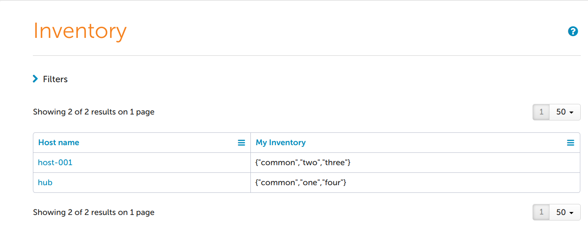
Adding a filter where "My Inventory" matches or contains common AND one:

CFEngine Enterprise
Can I use an existing PostgreSQL installation?
No. Although CFEngine keeps its assumptions about Postgres to a bare minimum, CFEngine should use a dedicated PostgreSQL database instance to ensure there is no conflict with an existing installation.
Do I need experience with PostgreSQL?
PostgreSQL is highly configurable and you should have some in-house expertise to properly configure your database installation. The defaults are well tuned for common cases but you may find optimizations depending on your hardware and OS.
What is the system user for the CFEngine dedicated PostgreSQL database?
The database runs under the cfpostgres user.
What are the requirements for installing CFEngine Enterprise?
General Information
Users and Permissions
- CFEngine Enterprise makes an attempt to create the local users
cfapacheandcfpostgres, as well as groupcfapacheduring install.
How does Enterprise Scale?
See best practices on scalability
Is it normal to have many cf-hub processes running?
- Yes, it is expected to have ~ 50
cf-hubprocesses running on a hub.
What steps should I take after installing CFEngine Enterprise?
There are general steps to be taken outlined in Post-Installation Configuration.
In addition to this, Enterprise uses the local mail relay, and it is assumed that the server where CFEngine Enterprise is installed on has proper mail setup.
How to find the public key for a given host SHA
Trying to locate the public key for a host on your hub in order to validate
trust? Use this snippet to figure out which public key file in
/var/cfengine/ppkeys matches a given host SHA.
# KEY="SHA=31bcb32950d8b91ffdfca85bca71364ec8f67c93246e3617c3a49af58363c4a1"
# for each in $(ls /var/cfengine/ppkeys/*.pub); do
if [ "$(cf-key -n -p ${each})" = "$KEY" ]; then
echo "Found KEY in $each";
fi
done
Why are remote agents not updating?
The masterfiles policy framework defaults to using
cf_promises_validated as a simple gating mechanism for policy updates. This
gating mechanism helps in avoiding the distribution of broken policy to clients
as well as reducing the burden on the policy server during times policy is not
changing.
The $(sys.masterdir)/cf_promises_validated is created by cf-agent or any
other CFEngine component after new policy in $(sys.inputdir) has been
validated.
By default (in the masterfiles policy framework) non policy servers only trigger
a fully policy scan when $(sys.inputdir)/cf_promises_validated is repaired.
By default (in the masterfiles policy framework) policy servers always pull all
policy changes to $(sys.inputdir). If the policy successfully validates then
$(sys.masterdir)/cf_promises_validated is updated, and remote agents will
update their policy when they notice that change. If the policy does not
validate $(sys.masterdir)/cf_promises_validated is not updated, and remote
clients will see no need to scan for updates.
- Check that the policy on in
$(sys.masterdir)on the hub validates withcf-promises. - Check if
$(sys.inputdir)/cf_promsies_validateddiffers from the$(sys.masterdir)/cf_promises_validatedon the policy server. - Trigger a full policy scan with
cf-agent --no-locks --file update.cf --define validated_updates_ready
Note: Dynamic inputs could mean different validation results on different hosts. Be conscious of different perspectives when validating policy.
Unable to log into Mission Portal
Problems logging into Mission Portal can usually be traced to mis-matched names in SSL Certificates.
If you are having issues logging into Mission Portal please verify the following configuration:
/etc/hostscontains a proper entry with the fqdn used to access Mission Portal listed in the second column.
192.168.33.1 hub.cfengine.com hub
hostname -freturns the fqdn used to access Mission Portal.hostname -sreturns the short hostname
Debugging Mission Portal
Set the API log level to DEBUG in Mission Portal settings.
Edit
/var/cfengine/share/GUI/index.phpand setENVIRONMENTtodevelopmentdefine('ENVIRONMENT', 'development');Run the hubs policy.
cf-agent -KIRestart
cf-apache.For systemd manged systems (RedHat/Centos7, Debian 7+, Ubuntu 15.04+):
systemctl restart cf-apacheFor sysv init managed systems:
pkill httpd cf-agent -KIor
LD_LIBRARY_PATH=/var/cfengine/lib:$LD_LIBRARY_PATH /var/cfengine/httpd/bin/apachectl restartWatch the logs:
/var/cfengine/httpd/logs/error_log/var/cfengine/httpd/htdocs/application/logs/log-$(date +%Y-%m-%d).php
How can I tell what Classes and Variables are defined?
You can see a high level overview of the first order classes and variables using
cf-promises --show-classes and cf-promises --show-vars.
Both of those commands will take an optional regular expression you can use to
filter the classes or variables. For example cf-promises --show-classes=MT
will show all the classes that contain MT like GMT_July.
Show first order classes with cf-promises
[root@hub ~]# cf-promises --show-classes
Class name Meta tags
10_0_2_15 inventory,attribute_name=none,source=agent,hardclass
127_0_0_1 inventory,attribute_name=none,source=agent,hardclass
192_168_33_2 inventory,attribute_name=none,source=agent,hardclass
2_cpus source=agent,derived-from=sys.cpus,hardclass
64_bit source=agent,hardclass
Day26 time_based,source=agent,hardclass
GMT_Day26 time_based,source=agent,hardclass
GMT_Hr01 time_based,source=agent,hardclass
GMT_Hr01_Q1 time_based,source=agent,hardclass
GMT_Hr1 time_based,source=agent,hardclass
GMT_July time_based,source=agent,hardclass
GMT_Lcycle_0 time_based,source=agent,hardclass
GMT_Min05_10 time_based,source=agent,hardclass
GMT_Min08 time_based,source=agent,hardclass
GMT_Night time_based,source=agent,hardclass
GMT_Q1 time_based,source=agent,hardclass
GMT_Tuesday time_based,source=agent,hardclass
GMT_Yr2016 time_based,source=agent,hardclass
Hr01 time_based,source=agent,hardclass
Hr01_Q1 time_based,source=agent,hardclass
Hr1 time_based,source=agent,hardclass
July time_based,source=agent,hardclass
Lcycle_0 time_based,source=agent,hardclass
Min05_10 time_based,source=agent,hardclass
Min08 time_based,source=agent,hardclass
Night time_based,source=agent,hardclass
PK_SHA_30017fd4f85914d0fa2d8c733958b5508d8383363d937e6385a41629e06ca1ca inventory,attribute_name=none,source=agent,derived-from=sys.key_digest,hardclass
Q1 time_based,source=agent,hardclass
Tuesday time_based,source=agent,hardclass
Yr2016 time_based,source=agent,hardclass
_have_bin_env source=promise
_stdlib_has_path_awk source=promise
_stdlib_has_path_bc source=promise
_stdlib_has_path_cat source=promise
_stdlib_has_path_chkconfig source=promise
_stdlib_has_path_cksum source=promise
_stdlib_has_path_createrepo source=promise
_stdlib_has_path_crontab source=promise
_stdlib_has_path_crontabs source=promise
_stdlib_has_path_curl source=promise
_stdlib_has_path_cut source=promise
_stdlib_has_path_dc source=promise
_stdlib_has_path_df source=promise
_stdlib_has_path_diff source=promise
_stdlib_has_path_dig source=promise
_stdlib_has_path_domainname source=promise
_stdlib_has_path_echo source=promise
_stdlib_has_path_egrep source=promise
_stdlib_has_path_env source=promise
_stdlib_has_path_ethtool source=promise
_stdlib_has_path_find source=promise
_stdlib_has_path_free source=promise
_stdlib_has_path_getfacl source=promise
_stdlib_has_path_git source=promise
_stdlib_has_path_grep source=promise
_stdlib_has_path_groupadd source=promise
_stdlib_has_path_groupdel source=promise
_stdlib_has_path_hostname source=promise
_stdlib_has_path_ifconfig source=promise
_stdlib_has_path_init source=promise
_stdlib_has_path_ip source=promise
_stdlib_has_path_iptables source=promise
_stdlib_has_path_iptables_save source=promise
_stdlib_has_path_logger source=promise
_stdlib_has_path_ls source=promise
_stdlib_has_path_lsattr source=promise
_stdlib_has_path_lsof source=promise
_stdlib_has_path_netstat source=promise
_stdlib_has_path_nologin source=promise
_stdlib_has_path_npm source=promise
_stdlib_has_path_perl source=promise
_stdlib_has_path_ping source=promise
_stdlib_has_path_pip source=promise
_stdlib_has_path_printf source=promise
_stdlib_has_path_realpath source=promise
_stdlib_has_path_rpm source=promise
_stdlib_has_path_sed source=promise
_stdlib_has_path_service source=promise
_stdlib_has_path_shadow source=promise
_stdlib_has_path_sort source=promise
_stdlib_has_path_svc source=promise
_stdlib_has_path_sysctl source=promise
_stdlib_has_path_systemctl source=promise
_stdlib_has_path_tar source=promise
_stdlib_has_path_test source=promise
_stdlib_has_path_tr source=promise
_stdlib_has_path_useradd source=promise
_stdlib_has_path_userdel source=promise
_stdlib_has_path_virtualenv source=promise
_stdlib_has_path_wc source=promise
_stdlib_has_path_wget source=promise
_stdlib_has_path_yum source=promise
_stdlib_path_exists_awk source=promise
_stdlib_path_exists_cat source=promise
_stdlib_path_exists_chkconfig source=promise
_stdlib_path_exists_cksum source=promise
_stdlib_path_exists_crontab source=promise
_stdlib_path_exists_crontabs source=promise
_stdlib_path_exists_curl source=promise
_stdlib_path_exists_cut source=promise
_stdlib_path_exists_df source=promise
_stdlib_path_exists_diff source=promise
_stdlib_path_exists_domainname source=promise
_stdlib_path_exists_echo source=promise
_stdlib_path_exists_egrep source=promise
_stdlib_path_exists_env source=promise
_stdlib_path_exists_ethtool source=promise
_stdlib_path_exists_find source=promise
_stdlib_path_exists_free source=promise
_stdlib_path_exists_getfacl source=promise
_stdlib_path_exists_git source=promise
_stdlib_path_exists_grep source=promise
_stdlib_path_exists_groupadd source=promise
_stdlib_path_exists_groupdel source=promise
_stdlib_path_exists_hostname source=promise
_stdlib_path_exists_ifconfig source=promise
_stdlib_path_exists_init source=promise
_stdlib_path_exists_ip source=promise
_stdlib_path_exists_iptables source=promise
_stdlib_path_exists_iptables_save source=promise
_stdlib_path_exists_logger source=promise
_stdlib_path_exists_ls source=promise
_stdlib_path_exists_lsattr source=promise
_stdlib_path_exists_netstat source=promise
_stdlib_path_exists_nologin source=promise
_stdlib_path_exists_perl source=promise
_stdlib_path_exists_printf source=promise
_stdlib_path_exists_rpm source=promise
_stdlib_path_exists_sed source=promise
_stdlib_path_exists_service source=promise
_stdlib_path_exists_shadow source=promise
_stdlib_path_exists_sort source=promise
_stdlib_path_exists_svc source=promise
_stdlib_path_exists_sysctl source=promise
_stdlib_path_exists_tar source=promise
_stdlib_path_exists_test source=promise
_stdlib_path_exists_tr source=promise
_stdlib_path_exists_useradd source=promise
_stdlib_path_exists_userdel source=promise
_stdlib_path_exists_wc source=promise
_stdlib_path_exists_wget source=promise
_stdlib_path_exists_yum source=promise
am_policy_hub source=bootstrap,deprecated,alias=policy_server,hardclass
any source=agent,hardclass
centos inventory,attribute_name=none,source=agent,hardclass
centos_6 inventory,attribute_name=none,source=agent,hardclass
centos_6_5 inventory,attribute_name=none,source=agent,hardclass
cfengine inventory,attribute_name=none,source=agent,hardclass
cfengine_3 inventory,attribute_name=none,source=agent,hardclass
cfengine_3_7 inventory,attribute_name=none,source=agent,hardclass
cfengine_3_7_3 inventory,attribute_name=none,source=agent,hardclass
cfengine_in_high monitoring,source=environment,hardclass
cfengine_internal_agent_email source=promise
cfengine_internal_masterfiles_update source=augments_file,hardclass
cfengine_internal_rotate_logs source=promise
cfengine_out_high monitoring,source=environment,hardclass
common cfe_internal,source=agent,hardclass
compiled_on_linux_gnu source=agent,hardclass
cpu0_high monitoring,source=environment,hardclass
cpu1_high monitoring,source=environment,hardclass
cpu_high monitoring,source=environment,hardclass
disable_inventory_LLDP source=promise
disable_inventory_cmdb source=promise
disable_inventory_dmidecode source=promise
disable_inventory_lsb source=promise
diskfree_high_normal monitoring,source=environment,hardclass
enable_cfe_internal_cleanup_agent_reports source=promise
enterprise inventory,attribute_name=none,source=agent,hardclass
enterprise_3 inventory,attribute_name=none,source=agent,hardclass
enterprise_3_7 inventory,attribute_name=none,source=agent,hardclass
enterprise_3_7_3 inventory,attribute_name=none,source=agent,hardclass
enterprise_edition inventory,attribute_name=none,source=agent,hardclass
entropy_misc_in_low monitoring,source=environment,hardclass
entropy_misc_out_low monitoring,source=environment,hardclass
fe80__a00_27ff_fe9a_9853 inventory,attribute_name=none,source=agent,hardclass
fe80__a00_27ff_fefb_e685 inventory,attribute_name=none,source=agent,hardclass
feature source=agent,hardclass
feature_def source=agent,hardclass
feature_def_json source=agent,hardclass
feature_def_json_preparse source=agent,hardclass
feature_xml source=agent,hardclass
feature_yaml source=agent,hardclass
has_proc_1_cmdline source=promise
hub inventory,attribute_name=none,source=agent,derived-from=sys.fqhost,hardclass
io_writes_high monitoring,source=environment,hardclass
io_writtendata_high monitoring,source=environment,hardclass
ipv4_10 inventory,attribute_name=none,source=agent,hardclass
ipv4_10_0 inventory,attribute_name=none,source=agent,hardclass
ipv4_10_0_2 inventory,attribute_name=none,source=agent,hardclass
ipv4_10_0_2_15 inventory,attribute_name=none,source=agent,hardclass
ipv4_127 inventory,attribute_name=none,source=agent,hardclass
ipv4_127_0 inventory,attribute_name=none,source=agent,hardclass
ipv4_127_0_0 inventory,attribute_name=none,source=agent,hardclass
ipv4_127_0_0_1 inventory,attribute_name=none,source=agent,hardclass
ipv4_192 inventory,attribute_name=none,source=agent,hardclass
ipv4_192_168 inventory,attribute_name=none,source=agent,hardclass
ipv4_192_168_33 inventory,attribute_name=none,source=agent,hardclass
ipv4_192_168_33_2 inventory,attribute_name=none,source=agent,hardclass
linux inventory,attribute_name=none,source=agent,derived-from=sys.class,hardclass
linux_2_6_32_431_el6_x86_64 source=agent,derived-from=sys.sysname,derived-from=sys.release,hardclass
linux_x86_64 source=agent,derived-from=sys.sysname,derived-from=sys.machine,hardclass
linux_x86_64_2_6_32_431_el6_x86_64 source=agent,derived-from=sys.sysname,derived-from=sys.machine,derived-from=sys.release,hardclass
linux_x86_64_2_6_32_431_el6_x86_64__1_SMP_Fri_Nov_22_03_15_09_UTC_2013 source=agent,derived-from=sys.long_arch,hardclass
loadavg_high_ldt source=persistent
localhost inventory,attribute_name=none,source=agent,based-on=sys.fqhost,hardclass
localhost4 inventory,attribute_name=none,source=agent,based-on=sys.fqhost,hardclass
localhost4_localdomain4 inventory,attribute_name=none,source=agent,based-on=sys.fqhost,hardclass
localhost_localdomain inventory,attribute_name=none,source=agent,based-on=sys.fqhost,hardclass
mac_08_00_27_9a_98_53 inventory,attribute_name=none,source=agent,hardclass
mac_08_00_27_fb_e6_85 inventory,attribute_name=none,source=agent,hardclass
mem_cached_high_normal monitoring,source=environment,hardclass
mem_free_high_normal monitoring,source=environment,hardclass
mem_freeswap_high_normal monitoring,source=environment,hardclass
mem_swap_high_normal monitoring,source=environment,hardclass
mem_total_high_normal monitoring,source=environment,hardclass
messages_high_ldt monitoring,source=environment,hardclass,source=persistent
messages_high_normal monitoring,source=environment,hardclass
net_iface_eth0 source=agent,hardclass
net_iface_eth1 source=agent,hardclass
net_iface_lo source=agent,hardclass
nova inventory,attribute_name=none,source=agent,hardclass
nova_3 inventory,attribute_name=none,source=agent,hardclass
nova_3_7 inventory,attribute_name=none,source=agent,hardclass
nova_3_7_3 inventory,attribute_name=none,source=agent,hardclass
nova_edition source=agent,hardclass
otherprocs_high_normal monitoring,source=environment,hardclass
policy_server inventory,attribute_name=CFEngine roles,source=bootstrap,hardclass
postgres_in_normal monitoring,source=environment,hardclass
postgres_out_high monitoring,source=environment,hardclass
postgresql_maintenance_supported source=promise
redhat inventory,attribute_name=none,source=agent,hardclass
redhat_derived source=promise,inventory,attribute_name=none
rootprocs_high_normal monitoring,source=environment,hardclass
services_autorun source=augments_file,hardclass
specific_linux_os source=promise
ssh_in_high monitoring,source=environment,hardclass
users_high monitoring,source=environment,hardclass
www_in_normal monitoring,source=environment,hardclass
wwws_in_high monitoring,source=environment,hardclass
x86_64 source=agent,derived-from=sys.machine,hardclass
Show first order variables with cf-promises
[root@hub ~]# cf-promises --show-vars
error: readjson: data error parsing JSON file '/var/cfengine/inputs/cf_promises_validated': No data
error: readjson: data error parsing JSON file '/var/cfengine/inputs/cf_promises_validated': No data
error: readjson: data error parsing JSON file '/var/cfengine/inputs/cf_promises_validated': No data
error: readjson: data error parsing JSON file '/var/cfengine/inputs/cf_promises_validated': No data
error: readjson: data error parsing JSON file '/var/cfengine/inputs/cf_promises_validated': No data
error: readjson: data error parsing JSON file '/var/cfengine/inputs/cf_promises_validated': No data
error: readjson: data error parsing JSON file '/var/cfengine/inputs/cf_promises_validated': No data
error: readjson: data error parsing JSON file '/var/cfengine/inputs/cf_promises_validated': No data
Variable name Variable value Meta tags
default:access_rules.def#cf_runagent_shell /bin/sh source=agent
default:access_rules.def#dir_bin /var/cfengine/bin source=agent
default:access_rules.def#dir_masterfiles /var/cfengine/masterfiles source=agent
default:access_rules.def#dir_modules /var/cfengine/modules source=agent
default:access_rules.def#dir_plugins /var/cfengine/plugins source=agent
default:access_rules.def#dir_software /var/cfengine/master_software_updates source=agent
default:apache_sudoer.def#cf_apache_user cfapache source=agent
default:apache_sudoer.sys#bindir /var/cfengine/bin source=agent
default:append_user_field.val {'@(allusers)'} source=promise
default:autorun.bundles {'default:inventory_policy','default:hello_world_autorun','default:copy_from_unless_file_exists'} source=promise
default:autorun.sorted_bundles {'default:copy_from_unless_file_exists','default:hello_world_autorun','default:inventory_policy'} source=promise
default:bundles_common.inputs {'/var/cfengine/inputs/lib/3.7/paths.cf','/var/cfengine/inputs/lib/3.7/files.cf','/var/cfengine/inputs/lib/3.7/commands.cf'} source=promise
default:cfe_autorun_inventory_LLDP.inventory_control#lldpctl_exec /usr/bin/lldpctl source=agent
default:cfe_autorun_inventory_cmdb.cmdb_dir /var/cfengine/cmdb source=promise,cmdb
default:cfe_autorun_inventory_cmdb.cmdb_file /var/cfengine/cmdb/me.json source=promise,cmdb
default:cfe_autorun_inventory_cmdb.sys#policy_hub 192.168.33.2 source=agent
default:cfe_autorun_inventory_cmdb.sys#workdir /var/cfengine source=agent
default:cfe_autorun_inventory_cpuinfo.const#dollar $ source=agent
default:cfe_autorun_inventory_disk.free 96.00 source=promise,inventory,attribute_name=Disk free (%)
default:cfe_autorun_inventory_disk.mon#value_diskfree 96.00 source=agent
default:cfe_autorun_inventory_dmidecode.dmidefs <non-printable> source=promise
default:cfe_autorun_inventory_dmidecode.dmivars {'bios-vendor','bios-version','system-serial-number','system-manufacturer','system-version'} source=promise
default:cfe_autorun_inventory_dmidecode.inventory_control#dmidecoder /usr/sbin/dmidecode source=agent
default:cfe_autorun_inventory_fstab.sys#fstab /etc/fstab source=agent
default:cfe_autorun_inventory_ipv4_addresses.filter_reg 127\.0\.0\.1 source=promise
default:cfe_autorun_inventory_ipv4_addresses.ipv4[10.0.2.15] 10.0.2.15 source=promise,inventory,attribute_name=IPv4 addresses
default:cfe_autorun_inventory_ipv4_addresses.ipv4[192.168.33.2] 192.168.33.2 source=promise,inventory,attribute_name=IPv4 addresses
default:cfe_autorun_inventory_ipv4_addresses.ipv4_addresses {'10.0.2.15','192.168.33.2'} source=promise
default:cfe_autorun_inventory_listening_ports.ports {'22','80','111','443','5308','5432','6379','50349','53437'} source=promise,inventory,attribute_name=Ports listening
default:cfe_autorun_inventory_loadaverage.mon#value_loadavg 0.01 source=agent
default:cfe_autorun_inventory_loadaverage.value 0.01 source=promise,report
default:cfe_autorun_inventory_memory.free 37.57 source=promise,report
default:cfe_autorun_inventory_memory.mon#value_mem_free 37.57 source=agent
default:cfe_autorun_inventory_memory.mon#value_mem_total 490.29 source=agent
default:cfe_autorun_inventory_memory.total 490.29 source=promise,inventory,attribute_name=Memory size (MB)
default:cfe_autorun_inventory_mtab.inventory_control#mtab /etc/mtab source=agent
default:cfe_autorun_inventory_packages.paths#path[yum] /usr/bin/yum source=agent
default:cfe_autorun_inventory_packages.paths#rpm /bin/rpm source=agent
default:cfe_autorun_inventory_packages.paths#sed /bin/sed source=agent
default:cfe_autorun_inventory_packages.refresh 0 source=promise
default:cfe_autorun_inventory_packages.sys#workdir /var/cfengine source=agent
default:cfe_autorun_inventory_proc.basefiles {'consoles','cpuinfo','modules','partitions','version'} source=promise
default:cfe_autorun_inventory_proc.files[consoles] /proc/consoles source=promise
default:cfe_autorun_inventory_proc.files[cpuinfo] /proc/cpuinfo source=promise
default:cfe_autorun_inventory_proc.files[modules] /proc/modules source=promise
default:cfe_autorun_inventory_proc.files[partitions] /proc/partitions source=promise
default:cfe_autorun_inventory_proc.files[version] /proc/version source=promise
default:cfe_autorun_inventory_proc.inventory_control#proc /proc source=agent
default:cfe_internal_cleanup_agent_reports.def#max_client_history_size 52428800 source=agent
default:cfe_internal_cleanup_agent_reports.diff_files {'/var/cfengine/state/diff/classes.diff','/var/cfengine/state/diff/execution_log.diff','/var/cfengine/state/diff/lastseen.diff','/var/cfengine/state/diff/variables.diff'} source=promise
default:cfe_internal_cleanup_agent_reports.files {'/var/cfengine/state/diff/classes.diff','/var/cfengine/state/diff/execution_log.diff','/var/cfengine/state/diff/lastseen.diff','/var/cfengine/state/diff/variables.diff','/var/cfengine/state/promise_log/1469492995.csv','/var/cfengine/state/promise_log/1469493207.csv','/var/cfengine/state/promise_log/1469493481.csv','/var/cfengine/state/promise_log/1469493814.csv','/var/cfengine/state/promise_log/1469494086.csv','/var/cfengine/state/promise_log/1469494420.csv','/var/cfengine/state/promise_log/1469494693.csv','/var/cfengine/state/promise_log/1469495026.csv','/var/cfengine/state/promise_log/1469495299.csv'} source=promise
default:cfe_internal_cleanup_agent_reports.promise_log_files {'/var/cfengine/state/promise_log/1469492995.csv','/var/cfengine/state/promise_log/1469493207.csv','/var/cfengine/state/promise_log/1469493481.csv','/var/cfengine/state/promise_log/1469493814.csv','/var/cfengine/state/promise_log/1469494086.csv','/var/cfengine/state/promise_log/1469494420.csv','/var/cfengine/state/promise_log/1469494693.csv','/var/cfengine/state/promise_log/1469495026.csv','/var/cfengine/state/promise_log/1469495299.csv'} source=promise
default:cfe_internal_cleanup_agent_reports.reports_size[/var/cfengine/state/diff/classes.diff] 14449 source=promise
default:cfe_internal_cleanup_agent_reports.reports_size[/var/cfengine/state/diff/execution_log.diff] 11551 source=promise
default:cfe_internal_cleanup_agent_reports.reports_size[/var/cfengine/state/diff/lastseen.diff] 4284 source=promise
default:cfe_internal_cleanup_agent_reports.reports_size[/var/cfengine/state/diff/variables.diff] 104277 source=promise
default:cfe_internal_cleanup_agent_reports.reports_size[/var/cfengine/state/promise_log/1469492995.csv] 1309 source=promise
default:cfe_internal_cleanup_agent_reports.reports_size[/var/cfengine/state/promise_log/1469493207.csv] 0 source=promise
default:cfe_internal_cleanup_agent_reports.reports_size[/var/cfengine/state/promise_log/1469493481.csv] 0 source=promise
default:cfe_internal_cleanup_agent_reports.reports_size[/var/cfengine/state/promise_log/1469493814.csv] 859 source=promise
default:cfe_internal_cleanup_agent_reports.reports_size[/var/cfengine/state/promise_log/1469494086.csv] 0 source=promise
default:cfe_internal_cleanup_agent_reports.reports_size[/var/cfengine/state/promise_log/1469494420.csv] 0 source=promise
default:cfe_internal_cleanup_agent_reports.reports_size[/var/cfengine/state/promise_log/1469494693.csv] 508 source=promise
default:cfe_internal_cleanup_agent_reports.reports_size[/var/cfengine/state/promise_log/1469495026.csv] 0 source=promise
default:cfe_internal_cleanup_agent_reports.reports_size[/var/cfengine/state/promise_log/1469495299.csv] 0 source=promise
default:cfe_internal_cleanup_agent_reports.sys#workdir /var/cfengine source=agent
default:cfe_internal_cleanup_agent_reports.tmpmap {'0','104277','0','859','0','0','1309','508','14449','0','0','11551','4284'} source=promise
default:cfe_internal_common.inputs {'/var/cfengine/inputs/lib/3.7/common.cf','/var/cfengine/inputs/lib/3.7/commands.cf'} source=promise
default:cfe_internal_database_cleanup_consumer_status.remove_query DELETE FROM status WHERE ts IN (SELECT ts FROM status ORDER BY ts DESC OFFSET $(row_count)); source=promise
default:cfe_internal_database_cleanup_consumer_status.sys#bindir /var/cfengine/bin source=agent
default:cfe_internal_database_cleanup_diagnostics.index {'cf_null'} source=promise
default:cfe_internal_database_cleanup_diagnostics.sys#bindir /var/cfengine/bin source=agent
default:cfe_internal_database_cleanup_promise_log.cleanup_query_notkept SELECT promise_log_partition_cleanup(\'NOTKEPT\', \'1 day\'); source=promise
default:cfe_internal_database_cleanup_promise_log.cleanup_query_repaired SELECT promise_log_partition_cleanup(\'REPAIRED\', \'$(history_length_days) day\'); source=promise
default:cfe_internal_database_cleanup_promise_log.sys#bindir /var/cfengine/bin source=agent
default:cfe_internal_database_cleanup_reports.index {'cf_null'} source=promise
default:cfe_internal_database_cleanup_reports.sys#bindir /var/cfengine/bin source=agent
default:cfe_internal_database_partitioning.promise_outcome {'REPAIRED','NOTKEPT'} source=promise
default:cfe_internal_database_partitioning.query_create_promise_log_NOTKEPT SELECT promise_log_partition_create(NOW() - INTERVAL \'7 day\', 7 + 3, \'NOTKEPT\'); source=promise
default:cfe_internal_database_partitioning.query_create_promise_log_REPAIRED SELECT promise_log_partition_create(NOW() - INTERVAL \'7 day\', 7 + 3, \'REPAIRED\'); source=promise
default:cfe_internal_database_partitioning.sys#bindir /var/cfengine/bin source=agent
default:cfe_internal_httpd_related.sys#workdir /var/cfengine source=agent
default:cfe_internal_httpd_related.tcp_port 80 source=promise
default:cfe_internal_hub_common.inputs {'/var/cfengine/inputs/lib/3.7/common.cf','/var/cfengine/inputs/lib/3.7/commands.cf'} source=promise
default:cfe_internal_hub_maintain.diagnostics_settings <non-printable> source=promise
default:cfe_internal_hub_maintain.report_settings <non-printable> source=promise
default:cfe_internal_hub_vars.docroot /var/cfengine/httpd/htdocs source=promise
default:cfe_internal_hub_vars.sys#workdir /var/cfengine source=agent
default:cfe_internal_inputs.input[cfe_internal_management] cfe_internal/CFE_cfengine.cf source=promise
default:cfe_internal_inputs.input[change_management] cfe_internal/enterprise/file_change.cf source=promise
default:cfe_internal_inputs.input[core_host_info_report] cfe_internal/core/host_info_report.cf source=promise
default:cfe_internal_inputs.input[core_limit_robot_agents] cfe_internal/core/limit_robot_agents.cf source=promise
default:cfe_internal_inputs.input[core_log_rotation] cfe_internal/core/log_rotation.cf source=promise
default:cfe_internal_inputs.input[core_main] cfe_internal/core/main.cf source=promise
default:cfe_internal_inputs.input[enterprise_hub_specific] cfe_internal/enterprise/CFE_hub_specific.cf source=promise
default:cfe_internal_inputs.input[enterprise_knowledge] cfe_internal/enterprise/CFE_knowledge.cf source=promise
default:cfe_internal_inputs.input[enterprise_main] cfe_internal/enterprise/main.cf source=promise
default:cfe_internal_inputs.inputs {'cfe_internal/enterprise/file_change.cf','cfe_internal/enterprise/main.cf','cfe_internal/core/log_rotation.cf','cfe_internal/core/host_info_report.cf','cfe_internal/enterprise/CFE_hub_specific.cf','cfe_internal/enterprise/CFE_knowledge.cf','cfe_internal/core/main.cf','cfe_internal/core/limit_robot_agents.cf','cfe_internal/CFE_cfengine.cf'} source=promise
default:cfe_internal_management.bundles {'cfe_internal_enterprise_main','cfe_internal_core_main'} source=promise
default:cfe_internal_management.policy[cfe_internal_core_main] cfe_internal_core_main source=promise
default:cfe_internal_management.policy[cfe_internal_enterprise_main] cfe_internal_enterprise_main source=promise
default:cfe_internal_php_runalerts.runalerts_script /var/cfengine/bin/runalerts.sh source=promise
default:cfe_internal_php_runalerts.runalerts_stampfiles_dir /var/cfengine/httpd/php source=promise
default:cfe_internal_php_runalerts.sketch[limit] 300 source=promise
default:cfe_internal_php_runalerts.sketch[name] sketch source=promise
default:cfe_internal_php_runalerts.sketch[running] 10 source=promise
default:cfe_internal_php_runalerts.sleep_time 60 source=promise
default:cfe_internal_php_runalerts.sql[limit] 300 source=promise
default:cfe_internal_php_runalerts.sql[name] sql source=promise
default:cfe_internal_php_runalerts.sql[running] 20 source=promise
default:cfe_internal_php_runalerts.stale_time 10 source=promise
default:cfe_internal_php_runalerts.sys#workdir /var/cfengine source=agent
default:cfe_internal_postgresql_maintenance.cf_consumer_pid 1095 source=promise
default:cfe_internal_postgresql_maintenance.sys#bindir /var/cfengine/bin source=agent
default:cfe_internal_postgresql_maintenance.sys#workdir /var/cfengine source=agent
default:cfe_internal_postgresql_maintenance.vacuum_cfdb_cmd /var/cfengine/bin/vacuumdb --full --dbname=cfdb source=promise
default:cfe_internal_postgresql_vacuum.sys#bindir /var/cfengine/bin source=agent
default:cfe_internal_postgresql_vacuum.vacuum_cfdb_cmd /var/cfengine/bin/vacuumdb --analyze --quiet --dbname=cfdb source=promise
default:cfe_internal_purge_scheduled_reports_older_than_days.cfe_internal_hub_vars#docroot /var/cfengine/httpd/htdocs source=agent
default:cfe_internal_setup_knowledge.cfe_internal_hub_vars#docroot /var/cfengine/httpd/htdocs source=agent
default:cfe_internal_setup_knowledge.def#cf_apache_group cfapache source=agent
default:cfe_internal_setup_knowledge.def#cf_apache_user cfapache source=agent
default:cfe_internal_setup_knowledge.sys#workdir /var/cfengine source=agent
default:cfe_internal_update_folders.dirs {'aix_5_powerpc','aix_6_powerpc','aix_6.1_powerpc','aix_7_powerpc','ubuntu_8_i686','ubuntu_8_x86_64','ubuntu_10_i686','ubuntu_10_x86_64','ubuntu_11_i686','ubuntu_11_x86_64','ubuntu_12_i686','ubuntu_12_x86_64','ubuntu_13_i686','ubuntu_13_x86_64','ubuntu_14_i686','ubuntu_14_x86_64','centos_5_i686','centos_5_x86_64','centos_6_i686','centos_6_x86_64','redhat_4_i686','redhat_4_x86_64','redhat_5_i686','redhat_5_x86_64','redhat_6_i686','redhat_6_x86_64','redhat_7_i686','redhat_7_x86_64','SuSE_10_i686','SuSE_10_x86_64','SuSE_11_i686','SuSE_11_x86_64','debian_5_i686','debian_5_x86_64','debian_6_i686','debian_6_x86_64','debian_7_i686','debian_7_x86_64','debian_8_i686','debian_8_x86_64','windows_i686','windows_x86_64','sunos_5.8_sun4u','sunos_5.8_sun4v','sunos_5.9_sun4u','sunos_5.9_sun4v','sunos_5.10_sun4u','sunos_5.10_sun4v','sunos_5.10_i86pc','hpux_ia64'} source=promise
default:cfe_internal_update_folders.sys#arch x86_64 source=agent
default:cfe_internal_update_folders.sys#flavour centos_6 source=agent
default:cfe_internal_update_folders.sys#workdir /var/cfengine source=agent
default:cfengine_controls.input[cf_agent] controls/3.7/cf_agent.cf source=promise
default:cfengine_controls.input[cf_execd] controls/3.7/cf_execd.cf source=promise
default:cfengine_controls.input[cf_hub] controls/3.7/cf_hub.cf source=promise
default:cfengine_controls.input[cf_monitord] controls/3.7/cf_monitord.cf source=promise
default:cfengine_controls.input[cf_runagent] controls/3.7/cf_runagent.cf source=promise
default:cfengine_controls.input[cf_serverd] controls/3.7/cf_serverd.cf source=promise
default:cfengine_controls.input[reports] controls/3.7/reports.cf source=promise
default:cfengine_controls.inputs {'controls/3.7/cf_monitord.cf','controls/3.7/cf_hub.cf','controls/3.7/cf_runagent.cf','controls/3.7/reports.cf','controls/3.7/cf_serverd.cf','controls/3.7/cf_agent.cf','controls/3.7/cf_execd.cf'} source=promise
default:cfengine_controls.sys#cf_version_major 3 source=agent
default:cfengine_controls.sys#cf_version_minor 7 source=agent
default:cfengine_enterprise_hub_ha.classification_bundles {'cfengine_enterprise_hub_ha'} source=promise
default:cfengine_enterprise_hub_ha.inputs {'cf_null'} source=promise
default:cfengine_enterprise_hub_ha.management_bundles {'cfengine_enterprise_hub_ha'} source=promise
default:cfengine_stdlib.inputs {'lib/3.7/stdlib.cf'} source=promise
default:cfengine_stdlib.sys#local_libdir lib/3.7 source=agent
default:cfsketch_g.inputs {'cf_null'} source=promise
default:change_management.watch_files_report_change {'/etc/shadow'} source=promise
default:change_management.watch_files_report_diffs {'/etc/passwd','/etc/group','/etc/services'} source=promise
default:classic_services.all_states {'start','restart','reload','stop','disable'} source=promise
default:classic_services.baseinit[bluetoothd] bluetooth source=promise
default:classic_services.baseinit[mysql] mysqld source=promise
default:classic_services.baseinit[snmpd] snmpd source=promise
default:classic_services.baseinit[ssh] sshd source=promise
default:classic_services.baseinit[www] httpd source=promise
default:classic_services.default[cmd][chkconfig] /etc/init.d/$(service) $(state) source=promise
default:classic_services.default[cmd][systemd] /bin/systemctl $(service) $(state) source=promise
default:classic_services.default[cmd][sysvinitd] /etc/init.d/$(service) $(state) source=promise
default:classic_services.default[cmd][sysvservice] /sbin/service $(service) $(state) source=promise
default:classic_services.default[init] chkconfig source=promise
default:classic_services.default[pattern] \b$(service)\b source=promise
default:classic_services.default[prefix][chkconfig] /etc/init.d/ source=promise
default:classic_services.default[prefix][systemd] /bin/systemctl source=promise
default:classic_services.default[prefix][sysvinitd] /etc/init.d/ source=promise
default:classic_services.default[prefix][sysvservice] /sbin/service source=promise
default:classic_services.init[rhnsd] sysvservice source=promise
default:classic_services.inits {'sysvinitd','sysvservice','systemd','chkconfig'} source=promise
default:classic_services.paths#service /sbin/service source=agent
default:classic_services.paths#systemctl /bin/systemctl source=agent
default:classic_services.pattern[NetworkManager] .*NetworkManager.* source=promise
default:classic_services.pattern[acpid] .*acpid.* source=promise
default:classic_services.pattern[anacron] .*anacron.* source=promise
default:classic_services.pattern[atd] .*sbin/atd.* source=promise
default:classic_services.pattern[auditd] .*auditd$ source=promise
default:classic_services.pattern[autofs] .*automount.* source=promise
default:classic_services.pattern[bluetoothd] .*hcid.* source=promise
default:classic_services.pattern[capi] .*capiinit.* source=promise
default:classic_services.pattern[cfengine3] .*cf-execd.* source=promise
default:classic_services.pattern[conman] .*conmand.* source=promise
default:classic_services.pattern[cpuspeed] .*cpuspeed.* source=promise
default:classic_services.pattern[crond] .*crond.* source=promise
default:classic_services.pattern[dc_client] .*dc_client.* source=promise
default:classic_services.pattern[dc_server] .*dc_server.* source=promise
default:classic_services.pattern[dnsmasq] .*dnsmasq.* source=promise
default:classic_services.pattern[dund] .*dund.* source=promise
default:classic_services.pattern[fancontrol] .*fancontrol.* source=promise
default:classic_services.pattern[gpm] .*gpm.* source=promise
default:classic_services.pattern[haldaemon] .*hald.* source=promise
default:classic_services.pattern[hddtemp] .*hddtemp.* source=promise
default:classic_services.pattern[hidd] .*hidd.* source=promise
default:classic_services.pattern[irda] .*irattach.* source=promise
default:classic_services.pattern[irqbalance] .*irqbalance.* source=promise
default:classic_services.pattern[iscsid] .*iscsid.* source=promise
default:classic_services.pattern[isdn] .*isdnlog.* source=promise
default:classic_services.pattern[lm-sensor] .*psensor.* source=promise
default:classic_services.pattern[lvm2-monitor] .*vgchange.* source=promise
default:classic_services.pattern[mcstrans] .*mcstransd.* source=promise
default:classic_services.pattern[mdmonitor] .*mdadm.* source=promise
default:classic_services.pattern[mdmpd] .*mdmpd.* source=promise
default:classic_services.pattern[messagebus] .*dbus-daemon.* source=promise
default:classic_services.pattern[microcode_ctl] .*microcode_ctl.* source=promise
default:classic_services.pattern[multipathd] .*multipathd.* source=promise
default:classic_services.pattern[munin-node] .*munin-node.* source=promise
default:classic_services.pattern[mysql] .*mysqld.* source=promise
default:classic_services.pattern[netplugd] .*netplugd.* source=promise
default:classic_services.pattern[nfs] .*nfsd.* source=promise
default:classic_services.pattern[nfslock] .*rpc.statd.* source=promise
default:classic_services.pattern[nscd] .*nscd.* source=promise
default:classic_services.pattern[ntpd] .*ntpd.* source=promise
default:classic_services.pattern[oddjobd] .*oddjobd.* source=promise
default:classic_services.pattern[openvpn] .*openvpn.* source=promise
default:classic_services.pattern[pand] .*pand.* source=promise
default:classic_services.pattern[pcscd] .*pcscd.* source=promise
default:classic_services.pattern[portmap] .*portmap.* source=promise
default:classic_services.pattern[postfix] .*postfix.* source=promise
default:classic_services.pattern[postgresql] .*postmaster.* source=promise
default:classic_services.pattern[rdisc] .*rdisc.* source=promise
default:classic_services.pattern[readahead_early] .*readahead.*early.* source=promise
default:classic_services.pattern[readahead_later] .*readahead.*later.* source=promise
default:classic_services.pattern[restorecond] .*restorecond.* source=promise
default:classic_services.pattern[rhnsd] rhnsd source=promise
default:classic_services.pattern[rpcgssd] .*rpc.gssd.* source=promise
default:classic_services.pattern[rpcidmapd] .*rpc.idmapd.* source=promise
default:classic_services.pattern[rpcsvcgssd] .*rpc.svcgssd.* source=promise
default:classic_services.pattern[rsync] .*rsync.* source=promise
default:classic_services.pattern[rsyslog] .*rsyslogd.* source=promise
default:classic_services.pattern[saslauthd] .*saslauthd.* source=promise
default:classic_services.pattern[sendmail] .*sendmail.* source=promise
default:classic_services.pattern[smartd] .*smartd.* source=promise
default:classic_services.pattern[snmpd] /usr/sbin/snmpd source=promise
default:classic_services.pattern[ssh] .*\Ssshd.* source=promise
default:classic_services.pattern[svnserve] .*svnserve.* source=promise
default:classic_services.pattern[syslog] .*syslogd.* source=promise
default:classic_services.pattern[tcsd] .*tcsd.* source=promise
default:classic_services.pattern[tomcat5] .*tomcat5.* source=promise
default:classic_services.pattern[tomcat6] .*tomcat6.* source=promise
default:classic_services.pattern[varnish] .*varnish.* source=promise
default:classic_services.pattern[wpa_supplicant] .*wpa_supplicant.* source=promise
default:classic_services.pattern[www] .*httpd.* source=promise
default:classic_services.pattern[xfs] .*xfs.* source=promise
default:classic_services.pattern[ypbind] .*ypbind.* source=promise
default:classic_services.pattern[yum-updatesd] .*yum-updatesd.* source=promise
default:classic_services.stakeholders[acpid] {'cpu','cpu0','cpu1','cpu2','cpu3'} source=promise
default:classic_services.stakeholders[cfengine3] {'cfengine_in'} source=promise
default:classic_services.stakeholders[mysql] {'mysql_in'} source=promise
default:classic_services.stakeholders[nfs] {'nfsd_in'} source=promise
default:classic_services.stakeholders[postfix] {'smtp_in'} source=promise
default:classic_services.stakeholders[rsyslog] {'syslog'} source=promise
default:classic_services.stakeholders[sendmail] {'smtp_in'} source=promise
default:classic_services.stakeholders[ssh] {'ssh_in'} source=promise
default:classic_services.stakeholders[syslog] {'syslog'} source=promise
default:classic_services.stakeholders[tomcat5] {'www_alt_in'} source=promise
default:classic_services.stakeholders[tomcat6] {'www_alt_in'} source=promise
default:classic_services.stakeholders[www] {'www_in','wwws_in','www_alt_in'} source=promise
default:common_knowledge.list_update_ifelapsed 240 source=promise
default:const.dirsep / source=agent
default:const.dollar $ source=agent
default:const.endl <non-printable> source=agent
default:const.n <non-printable> source=agent
default:const.r <non-printable> source=agent
default:const.t <non-printable> source=agent
default:control_agent.abortclasses {'cfengine_3_3','cfengine_3_4'} source=promise
default:control_agent.ifelapsed 1 source=promise
default:control_agent.skipidentify true source=promise
default:control_common.bundlesequence {'inventory_control','inventory_control','inventory_any','inventory_autorun','inventory_linux','inventory_lsb','inventory_redhat','inventory_os','def','cfengine_enterprise_hub_ha','cfsketch_run','services_autorun','autorun','cfe_internal_management','main','cfengine_enterprise_hub_ha'} source=promise
default:control_common.inputs {'controls/3.7/def.cf','controls/3.7/def_inputs.cf','inventory/any.cf','inventory/linux.cf','inventory/lsb.cf','inventory/redhat.cf','inventory/os.cf','sketches/meta/api-runfile.cf','cf_null','cfe_internal/enterprise/file_change.cf','cfe_internal/enterprise/main.cf','cfe_internal/core/log_rotation.cf','cfe_internal/core/host_info_report.cf','cfe_internal/enterprise/CFE_hub_specific.cf','cfe_internal/enterprise/CFE_knowledge.cf','cfe_internal/core/main.cf','cfe_internal/core/limit_robot_agents.cf','cfe_internal/CFE_cfengine.cf','controls/3.7/cf_monitord.cf','controls/3.7/cf_hub.cf','controls/3.7/cf_runagent.cf','controls/3.7/reports.cf','controls/3.7/cf_serverd.cf','controls/3.7/cf_agent.cf','controls/3.7/cf_execd.cf','lib/3.7/stdlib.cf','lib/3.7/autorun.cf','services/main.cf'} source=promise
default:control_common.version CFEngine Promises.cf 3.7.3 source=promise
default:control_executor.exec_command "/var/cfengine/bin/cf-agent" -f "/var/cfengine/inputs/update.cf" ; "/var/cfengine/bin/cf-agent" -Dcf_execd_initiated source=promise
default:control_executor.mailfrom root@hub. source=promise
default:control_executor.mailto root@ source=promise
default:control_executor.smtpserver localhost source=promise
default:control_executor.splaytime 4 source=promise
default:control_file.inputs {'/var/cfengine/inputs/services/autorun/copy_from_unless_file_exists.cf','/var/cfengine/inputs/services/autorun/hello.cf','/var/cfengine/inputs/services/autorun/inventory_policy.cf'} source=promise
default:control_monitor.forgetrate 0.7 source=promise
default:control_monitor.histograms true source=promise
default:control_runagent.hosts {'127.0.0.1'} source=promise
default:control_server.allowallconnects {'127.0.0.1','::1','192.168.33.2/16'} source=promise
default:control_server.allowconnects {'127.0.0.1','::1','192.168.33.2/16'} source=promise
default:control_server.allowusers {'root'} source=promise
default:control_server.cfruncommand /bin/sh -c ""/var/cfengine/bin/cf-agent" -f /var/cfengine/inputs/update.cf" ; "/var/cfengine/bin/cf-agent" source=promise
default:control_server.denybadclocks false source=promise
default:control_server.maxconnections 200 source=promise
default:control_server.trustkeysfrom {'0.0.0.0/0'} source=promise
default:copy_from_unless_file_exists.sys#inputdir /var/cfengine/inputs source=agent
default:copy_from_unless_file_exists.sys#masterdir /var/cfengine/masterfiles source=agent
default:copy_from_unless_file_exists.sys#policy_hub 192.168.33.2 source=agent
default:copy_from_unless_file_exists_meta.tags {'autorun'} source=promise
default:create_solaris_admin_file.solaris_knowledge#admin_nocheck <non-printable> source=agent
default:cronjob.crontab /var/spool/cron source=promise
default:darwin_knowledge.brew_name_regex ([\S]+)\s[\S]+ source=promise
default:darwin_knowledge.brew_version_regex [\S]+\s([\S]+) source=promise
default:darwin_knowledge.call_brew $(paths.path[brew]) source=promise
default:darwin_knowledge.call_sudo $(paths.path[sudo]) source=promise
default:debian_knowledge.apt_prefix /usr/bin/env DEBIAN_FRONTEND=noninteractive LC_ALL=C PATH=/bin:/sbin/:/usr/bin:/usr/sbin source=promise
default:debian_knowledge.call_apt_get /usr/bin/env DEBIAN_FRONTEND=noninteractive LC_ALL=C PATH=/bin:/sbin/:/usr/bin:/usr/sbin $(paths.path[apt_get]) source=promise
default:debian_knowledge.call_aptitude /usr/bin/env DEBIAN_FRONTEND=noninteractive LC_ALL=C PATH=/bin:/sbin/:/usr/bin:/usr/sbin $(paths.path[aptitude]) source=promise
default:debian_knowledge.call_dpkg /usr/bin/env DEBIAN_FRONTEND=noninteractive LC_ALL=C PATH=/bin:/sbin/:/usr/bin:/usr/sbin $(paths.path[dpkg]) source=promise
default:debian_knowledge.default_arch amd64 source=promise
default:debian_knowledge.dpkg_compare_equal /usr/bin/env DEBIAN_FRONTEND=noninteractive LC_ALL=C PATH=/bin:/sbin/:/usr/bin:/usr/sbin $(paths.path[dpkg]) --compare-versions \'$(v1)\' eq \'$(v2)\' source=promise
default:debian_knowledge.dpkg_compare_less /usr/bin/env DEBIAN_FRONTEND=noninteractive LC_ALL=C PATH=/bin:/sbin/:/usr/bin:/usr/sbin $(paths.path[dpkg]) --compare-versions \'$(v1)\' lt \'$(v2)\' source=promise
default:debian_knowledge.dpkg_options -o Dpkg::Options::=--force-confold -o Dpkg::Options::=--force-confdef source=promise
default:debian_knowledge.list_name_regex ^.i\s+([^\s:]+).* source=promise
default:debian_knowledge.list_version_regex ^.i\s+[^\s]+\s+([^\s]+).* source=promise
default:debian_knowledge.patch_name_regex ^Inst\s+(\S+)\s+.* source=promise
default:debian_knowledge.patch_version_regex ^Inst\s+\S+\s+\[\S+\]\s+\((\S+)\s+.* source=promise
default:debian_knowledge.sys#arch x86_64 source=agent
default:def.acl {'192.168.33.2/16'} source=promise,defvar
default:def.augments_inputs {'cf_null'} source=promise
default:def.base_log_files {'/var/cfengine/cf3.hub.runlog','/var/cfengine/promise_summary.log'} source=promise
default:def.cf_apache_group cfapache source=promise
default:def.cf_apache_user cfapache source=promise
default:def.cf_runagent_shell /bin/sh source=promise
default:def.cfe_log_dirs {'/var/cfengine/outputs','/var/cfengine/reports'} source=promise
default:def.cfe_log_files {'/var/cfengine/cf3.hub.runlog','/var/cfengine/promise_summary.log','/var/cfengine/cf_notkept.log','/var/cfengine/cf_repair.log','/var/cfengine/state/cf_value.log','/var/cfengine/outputs/dc-scripts.log','/var/cfengine/httpd/logs/access_log','/var/cfengine/httpd/logs/error_log'} source=promise
default:def.def#domain source=agent
default:def.dir_bin /var/cfengine/bin source=promise
default:def.dir_masterfiles /var/cfengine/masterfiles source=promise
default:def.dir_modules /var/cfengine/modules source=promise
default:def.dir_plugins /var/cfengine/plugins source=promise
default:def.dir_reports /var/cfengine/reports source=promise
default:def.dir_software /var/cfengine/master_software_updates source=promise
default:def.domain source=promise
default:def.enterprise_log_files {'/var/cfengine/cf_notkept.log','/var/cfengine/cf_repair.log','/var/cfengine/state/cf_value.log','/var/cfengine/outputs/dc-scripts.log'} source=promise
default:def.hub_log_files {'/var/cfengine/httpd/logs/access_log','/var/cfengine/httpd/logs/error_log'} source=promise
default:def.mailfrom root@hub. source=promise
default:def.mailto root@ source=promise
default:def.max_client_history_size 52428800 source=promise
default:def.policy_servers {'192.168.33.2'} source=promise
default:def.smtpserver localhost source=promise
default:def.sys#bindir /var/cfengine/bin source=agent
default:def.sys#domain source=agent
default:def.sys#masterdir /var/cfengine/masterfiles source=agent
default:def.sys#policy_hub 192.168.33.2 source=agent
default:def.sys#uqhost hub source=agent
default:def.sys#workdir /var/cfengine source=agent
default:def.trustkeysfrom {'0.0.0.0/0'} source=promise,defvar
default:fileinfo.fields {'size','gid','uid','ino','nlink','ctime','atime','mtime','mode','modeoct','permstr','permoct','type','devno','dev_minor','dev_major','basename','dirname','linktarget','linktarget_shallow'} source=promise
default:files_common.inputs {'/var/cfengine/inputs/lib/3.7/common.cf'} source=promise
default:hello_world_autorun_meta.tags {'autorun'} source=promise
default:host_info_report.host_info_report_output /var/cfengine/reports/host_info_report.txt source=promise
default:host_info_report.host_info_report_template /var/cfengine/inputs/cfe_internal/core/../../templates/host_info_report.mustache source=promise
default:host_info_report.sys#workdir /var/cfengine source=agent
default:host_info_report_cfengine.cfengine_info_files {'cf_promises_validated','cf_promises_release_id'} source=promise
default:host_info_report_cfengine.interface_flags {'lo: up loopback running','eth1: up broadcast running multicast','eth0: up broadcast running multicast'} source=promise
default:host_info_report_cfengine.interface_info {'eth0: IPv4 10.0.2.15','eth0: up broadcast running multicast','eth1: IPv4 192.168.33.2','eth1: up broadcast running multicast','lo: IPv4 127.0.0.1','lo: up loopback running'} source=promise
default:host_info_report_cfengine.interface_info_unsorted {'lo: up loopback running','eth1: up broadcast running multicast','eth0: up broadcast running multicast','eth1: IPv4 192.168.33.2','eth0: IPv4 10.0.2.15','lo: IPv4 127.0.0.1'} source=promise
default:host_info_report_cfengine.interface_ips {'eth1: IPv4 192.168.33.2','eth0: IPv4 10.0.2.15','lo: IPv4 127.0.0.1'} source=promise
default:host_info_report_cfengine.last_agent_run 2016-07-26 01:08:19 UTC source=promise
default:host_info_report_cfengine.sys#inputdir /var/cfengine/inputs source=agent
default:host_info_report_cfengine.sys#masterdir /var/cfengine/masterfiles source=agent
default:host_info_report_cfengine.sys#workdir /var/cfengine source=agent
default:host_info_report_render_txt.host_info_report#host_info_report_output /var/cfengine/reports/host_info_report.txt source=agent
default:host_info_report_render_txt.host_info_report#host_info_report_template /var/cfengine/inputs/cfe_internal/core/../../templates/host_info_report.mustache source=agent
default:host_info_report_software.package_names {'cf_null'} source=promise
default:host_info_report_software.packages <non-printable> source=promise
default:inventory.bundles {'inventory_control','inventory_any','inventory_autorun','inventory_linux','inventory_lsb','inventory_redhat','inventory_os'} source=promise
default:inventory.inputs {'inventory/any.cf','inventory/linux.cf','inventory/lsb.cf','inventory/redhat.cf','inventory/os.cf'} source=promise
default:inventory_cmdb_load.bkeys {'cf_null'} source=promise
default:inventory_cmdb_load.ckeys {'cf_null'} source=promise
default:inventory_control.dmidecoder /usr/sbin/dmidecode source=promise
default:inventory_control.lldpctl_exec /usr/bin/lldpctl source=promise
default:inventory_control.lsb_exec /usr/bin/lsb_release source=promise
default:inventory_control.mtab /etc/mtab source=promise
default:inventory_control.proc /proc source=promise
default:inventory_control.sys#fstab /etc/fstab source=agent
default:inventory_linux.proc_1_cmdline /sbin/init source=promise
default:inventory_linux.proc_1_cmdline_split {'/sbin/init'} source=promise
default:inventory_linux.proc_1_process /sbin/init source=promise
default:inventory_lsb.inventory_control#lsb_exec /usr/bin/lsb_release source=agent
default:inventory_lsb.lsb_exec /usr/bin/lsb_release source=promise
default:inventory_os.description centos_6 (LSB missing) source=promise,inventory,attribute_name=OS
default:inventory_os.sys#flavor centos_6 source=agent
default:inventory_policy.cpr <non-printable> source=promise
default:inventory_policy.masterfiles_cpv <non-printable> source=promise
default:inventory_policy.masterfiles_updated 2016-07-25-19:13 source=promise,inventory,attribute_name=Masterfiles Updated
default:inventory_policy.policy_release_id e4dd6005aa7057ceea74b73a08b0c513d4d21a7e source=promise,inventory,attribute_name=Policy Release ID
default:inventory_policy.policy_updated 2016-07-26-01:07 source=promise,inventory,attribute_name=Policy Updated
default:inventory_policy.state_cpv <non-printable> source=promise
default:inventory_policy.sys#inputdir /var/cfengine/inputs source=agent
default:inventory_policy.sys#masterdir /var/cfengine/masterfiles source=agent
default:inventory_policy.sys#statedir /var/cfengine/state source=agent
default:inventory_policy_meta.tags {'autorun'} source=promise
default:maintain_key_values_meta.tags {'deprecated=3.6.0','deprecation-reason=Generic reimplementation','replaced-by=set_line_based'} source=promise
default:mon.av_cfengine_in 0.70 monitoring,source=environment
default:mon.av_cfengine_out 1.40 monitoring,source=environment
default:mon.av_cpu 0.22 monitoring,source=environment
default:mon.av_cpu0 0.24 monitoring,source=environment
default:mon.av_cpu1 0.21 monitoring,source=environment
default:mon.av_cpu2 0.00 monitoring,source=environment
default:mon.av_cpu3 0.00 monitoring,source=environment
default:mon.av_diskfree 67.20 monitoring,source=environment
default:mon.av_dns_in 0.00 monitoring,source=environment
default:mon.av_dns_out 0.00 monitoring,source=environment
default:mon.av_ftp_in 0.00 monitoring,source=environment
default:mon.av_ftp_out 0.00 monitoring,source=environment
default:mon.av_icmp_in 0.00 monitoring,source=environment
default:mon.av_icmp_out 0.00 monitoring,source=environment
default:mon.av_imap_in 0.00 monitoring,source=environment
default:mon.av_imap_out 0.00 monitoring,source=environment
default:mon.av_imaps_in 0.00 monitoring,source=environment
default:mon.av_imaps_out 0.00 monitoring,source=environment
default:mon.av_io_readdata 0.00 monitoring,source=environment
default:mon.av_io_reads 0.00 monitoring,source=environment
default:mon.av_io_writes 6.30 monitoring,source=environment
default:mon.av_io_writtendata 0.05 monitoring,source=environment
default:mon.av_ipp_in 0.00 monitoring,source=environment
default:mon.av_ipp_out 0.00 monitoring,source=environment
default:mon.av_ldap_in 0.00 monitoring,source=environment
default:mon.av_ldap_out 0.00 monitoring,source=environment
default:mon.av_ldaps_in 0.00 monitoring,source=environment
default:mon.av_ldaps_out 0.00 monitoring,source=environment
default:mon.av_loadavg 0.01 monitoring,source=environment
default:mon.av_mem_cached 95.91 monitoring,source=environment
default:mon.av_mem_free 26.30 monitoring,source=environment
default:mon.av_mem_freeswap 648.39 monitoring,source=environment
default:mon.av_mem_swap 649.59 monitoring,source=environment
default:mon.av_mem_total 343.20 monitoring,source=environment
default:mon.av_messages 0.00 monitoring,source=environment
default:mon.av_microsoft_ds_in 0.00 monitoring,source=environment
default:mon.av_microsoft_ds_out 0.00 monitoring,source=environment
default:mon.av_mongo_in 0.00 monitoring,source=environment
default:mon.av_mongo_out 0.00 monitoring,source=environment
default:mon.av_mysql_in 0.00 monitoring,source=environment
default:mon.av_mysql_out 0.00 monitoring,source=environment
default:mon.av_netbiosdgm_in 0.00 monitoring,source=environment
default:mon.av_netbiosdgm_out 0.00 monitoring,source=environment
default:mon.av_netbiosns_in 0.00 monitoring,source=environment
default:mon.av_netbiosns_out 0.00 monitoring,source=environment
default:mon.av_netbiosssn_in 0.00 monitoring,source=environment
default:mon.av_netbiosssn_out 0.00 monitoring,source=environment
default:mon.av_nfsd_in 0.00 monitoring,source=environment
default:mon.av_nfsd_out 0.00 monitoring,source=environment
default:mon.av_otherprocs 31.50 monitoring,source=environment
default:mon.av_postgres_in 2.10 monitoring,source=environment
default:mon.av_postgres_out 2.10 monitoring,source=environment
default:mon.av_rootprocs 84.00 monitoring,source=environment
default:mon.av_smtp_in 0.00 monitoring,source=environment
default:mon.av_smtp_out 0.00 monitoring,source=environment
default:mon.av_spare 0.00 monitoring,source=environment
default:mon.av_ssh_in 2.10 monitoring,source=environment
default:mon.av_ssh_out 0.00 monitoring,source=environment
default:mon.av_syslog 0.00 monitoring,source=environment
default:mon.av_tcpack_in 0.00 monitoring,source=environment
default:mon.av_tcpack_out 0.00 monitoring,source=environment
default:mon.av_tcpfin_in 0.00 monitoring,source=environment
default:mon.av_tcpfin_out 0.00 monitoring,source=environment
default:mon.av_tcpmisc_in 0.00 monitoring,source=environment
default:mon.av_tcpmisc_out 0.00 monitoring,source=environment
default:mon.av_tcpsyn_in 0.00 monitoring,source=environment
default:mon.av_tcpsyn_out 0.00 monitoring,source=environment
default:mon.av_temp0 0.00 monitoring,source=environment
default:mon.av_temp1 0.00 monitoring,source=environment
default:mon.av_temp2 0.00 monitoring,source=environment
default:mon.av_temp3 0.00 monitoring,source=environment
default:mon.av_udp_in 0.00 monitoring,source=environment
default:mon.av_udp_out 0.00 monitoring,source=environment
default:mon.av_users 4.20 monitoring,source=environment
default:mon.av_webaccess 0.00 monitoring,source=environment
default:mon.av_weberrors 0.00 monitoring,source=environment
default:mon.av_www_alt_in 0.00 monitoring,source=environment
default:mon.av_www_alt_out 0.00 monitoring,source=environment
default:mon.av_www_in 0.70 monitoring,source=environment
default:mon.av_www_out 0.00 monitoring,source=environment
default:mon.av_wwws_in 0.70 monitoring,source=environment
default:mon.av_wwws_out 0.00 monitoring,source=environment
default:mon.dev_cfengine_in 1.07 monitoring,source=environment
default:mon.dev_cfengine_out 2.19 monitoring,source=environment
default:mon.dev_cpu 0.43 monitoring,source=environment
default:mon.dev_cpu0 0.46 monitoring,source=environment
default:mon.dev_cpu1 0.40 monitoring,source=environment
default:mon.dev_cpu2 0.00 monitoring,source=environment
default:mon.dev_cpu3 0.00 monitoring,source=environment
default:mon.dev_diskfree 102.91 monitoring,source=environment
default:mon.dev_dns_in 0.00 monitoring,source=environment
default:mon.dev_dns_out 0.00 monitoring,source=environment
default:mon.dev_ftp_in 0.00 monitoring,source=environment
default:mon.dev_ftp_out 0.00 monitoring,source=environment
default:mon.dev_icmp_in 0.00 monitoring,source=environment
default:mon.dev_icmp_out 0.00 monitoring,source=environment
default:mon.dev_imap_in 0.00 monitoring,source=environment
default:mon.dev_imap_out 0.00 monitoring,source=environment
default:mon.dev_imaps_in 0.00 monitoring,source=environment
default:mon.dev_imaps_out 0.00 monitoring,source=environment
default:mon.dev_io_readdata 0.00 monitoring,source=environment
default:mon.dev_io_reads 0.00 monitoring,source=environment
default:mon.dev_io_writes 10.17 monitoring,source=environment
default:mon.dev_io_writtendata 0.07 monitoring,source=environment
default:mon.dev_ipp_in 0.00 monitoring,source=environment
default:mon.dev_ipp_out 0.00 monitoring,source=environment
default:mon.dev_ldap_in 0.00 monitoring,source=environment
default:mon.dev_ldap_out 0.00 monitoring,source=environment
default:mon.dev_ldaps_in 0.00 monitoring,source=environment
default:mon.dev_ldaps_out 0.00 monitoring,source=environment
default:mon.dev_loadavg 0.02 monitoring,source=environment
default:mon.dev_mem_cached 146.68 monitoring,source=environment
default:mon.dev_mem_free 41.14 monitoring,source=environment
default:mon.dev_mem_freeswap 992.91 monitoring,source=environment
default:mon.dev_mem_swap 994.76 monitoring,source=environment
default:mon.dev_mem_total 525.56 monitoring,source=environment
default:mon.dev_messages 1797.59 monitoring,source=environment
default:mon.dev_microsoft_ds_in 0.00 monitoring,source=environment
default:mon.dev_microsoft_ds_out 0.00 monitoring,source=environment
default:mon.dev_mongo_in 0.00 monitoring,source=environment
default:mon.dev_mongo_out 0.00 monitoring,source=environment
default:mon.dev_mysql_in 0.00 monitoring,source=environment
default:mon.dev_mysql_out 0.00 monitoring,source=environment
default:mon.dev_netbiosdgm_in 0.00 monitoring,source=environment
default:mon.dev_netbiosdgm_out 0.00 monitoring,source=environment
default:mon.dev_netbiosns_in 0.00 monitoring,source=environment
default:mon.dev_netbiosns_out 0.00 monitoring,source=environment
default:mon.dev_netbiosssn_in 0.00 monitoring,source=environment
default:mon.dev_netbiosssn_out 0.00 monitoring,source=environment
default:mon.dev_nfsd_in 0.00 monitoring,source=environment
default:mon.dev_nfsd_out 0.00 monitoring,source=environment
default:mon.dev_otherprocs 47.92 monitoring,source=environment
default:mon.dev_postgres_in 3.82 monitoring,source=environment
default:mon.dev_postgres_out 3.14 monitoring,source=environment
default:mon.dev_rootprocs 128.21 monitoring,source=environment
default:mon.dev_smtp_in 0.00 monitoring,source=environment
default:mon.dev_smtp_out 0.00 monitoring,source=environment
default:mon.dev_spare 0.00 monitoring,source=environment
default:mon.dev_ssh_in 3.10 monitoring,source=environment
default:mon.dev_ssh_out 0.02 monitoring,source=environment
default:mon.dev_syslog 0.00 monitoring,source=environment
default:mon.dev_tcpack_in 0.00 monitoring,source=environment
default:mon.dev_tcpack_out 0.00 monitoring,source=environment
default:mon.dev_tcpfin_in 0.00 monitoring,source=environment
default:mon.dev_tcpfin_out 0.00 monitoring,source=environment
default:mon.dev_tcpmisc_in 0.00 monitoring,source=environment
default:mon.dev_tcpmisc_out 0.00 monitoring,source=environment
default:mon.dev_tcpsyn_in 0.00 monitoring,source=environment
default:mon.dev_tcpsyn_out 0.00 monitoring,source=environment
default:mon.dev_temp0 0.00 monitoring,source=environment
default:mon.dev_temp1 0.00 monitoring,source=environment
default:mon.dev_temp2 0.00 monitoring,source=environment
default:mon.dev_temp3 0.00 monitoring,source=environment
default:mon.dev_udp_in 0.00 monitoring,source=environment
default:mon.dev_udp_out 0.00 monitoring,source=environment
default:mon.dev_users 6.29 monitoring,source=environment
default:mon.dev_webaccess 0.00 monitoring,source=environment
default:mon.dev_weberrors 0.00 monitoring,source=environment
default:mon.dev_www_alt_in 0.00 monitoring,source=environment
default:mon.dev_www_alt_out 0.00 monitoring,source=environment
default:mon.dev_www_in 2.60 monitoring,source=environment
default:mon.dev_www_out 0.12 monitoring,source=environment
default:mon.dev_wwws_in 1.07 monitoring,source=environment
default:mon.dev_wwws_out 0.00 monitoring,source=environment
default:mon.env_time Tue Jul 26 01:10:50 2016 time_based,source=agent
default:mon.listening_ports {'443','80','50349','53437','5308','5432','22','111','6379'} monitoring,source=environment
default:mon.listening_tcp4_ports {'443','80','50349','53437','5308','5432','22','111','6379'} monitoring,source=environment
default:mon.listening_tcp6_ports {''} monitoring,source=environment
default:mon.listening_udp4_ports {''} monitoring,source=environment
default:mon.listening_udp6_ports {''} monitoring,source=environment
default:mon.tcp4_port_addr[111] 0.0.0.0 monitoring,source=environment
default:mon.tcp4_port_addr[22] 0.0.0.0 monitoring,source=environment
default:mon.tcp4_port_addr[443] :: monitoring,source=environment
default:mon.tcp4_port_addr[50349] :: monitoring,source=environment
default:mon.tcp4_port_addr[5308] 0.0.0.0 monitoring,source=environment
default:mon.tcp4_port_addr[53437] 0.0.0.0 monitoring,source=environment
default:mon.tcp4_port_addr[5432] 127.0.0.1 monitoring,source=environment
default:mon.tcp4_port_addr[6379] 127.0.0.1 monitoring,source=environment
default:mon.tcp4_port_addr[80] :: monitoring,source=environment
default:mon.value_cfengine_in 1.00 monitoring,source=environment
default:mon.value_cfengine_out 2.00 monitoring,source=environment
default:mon.value_cpu 0.32 monitoring,source=environment
default:mon.value_cpu0 0.34 monitoring,source=environment
default:mon.value_cpu1 0.30 monitoring,source=environment
default:mon.value_cpu2 0.00 monitoring,source=environment
default:mon.value_cpu3 0.00 monitoring,source=environment
default:mon.value_diskfree 96.00 monitoring,source=environment
default:mon.value_dns_in 0.00 monitoring,source=environment
default:mon.value_dns_out 0.00 monitoring,source=environment
default:mon.value_ftp_in 0.00 monitoring,source=environment
default:mon.value_ftp_out 0.00 monitoring,source=environment
default:mon.value_icmp_in 0.00 monitoring,source=environment
default:mon.value_icmp_out 0.00 monitoring,source=environment
default:mon.value_imap_in 0.00 monitoring,source=environment
default:mon.value_imap_out 0.00 monitoring,source=environment
default:mon.value_imaps_in 0.00 monitoring,source=environment
default:mon.value_imaps_out 0.00 monitoring,source=environment
default:mon.value_io_readdata 0.00 monitoring,source=environment
default:mon.value_io_reads 0.00 monitoring,source=environment
default:mon.value_io_writes 9.00 monitoring,source=environment
default:mon.value_io_writtendata 0.06 monitoring,source=environment
default:mon.value_ipp_in 0.00 monitoring,source=environment
default:mon.value_ipp_out 0.00 monitoring,source=environment
default:mon.value_ldap_in 0.00 monitoring,source=environment
default:mon.value_ldap_out 0.00 monitoring,source=environment
default:mon.value_ldaps_in 0.00 monitoring,source=environment
default:mon.value_ldaps_out 0.00 monitoring,source=environment
default:mon.value_loadavg 0.01 monitoring,source=environment
default:mon.value_mem_cached 137.01 monitoring,source=environment
default:mon.value_mem_free 37.57 monitoring,source=environment
default:mon.value_mem_freeswap 926.27 monitoring,source=environment
default:mon.value_mem_swap 927.99 monitoring,source=environment
default:mon.value_mem_total 490.29 monitoring,source=environment
default:mon.value_messages 0.00 monitoring,source=environment
default:mon.value_microsoft_ds_in 0.00 monitoring,source=environment
default:mon.value_microsoft_ds_out 0.00 monitoring,source=environment
default:mon.value_mongo_in 0.00 monitoring,source=environment
default:mon.value_mongo_out 0.00 monitoring,source=environment
default:mon.value_mysql_in 0.00 monitoring,source=environment
default:mon.value_mysql_out 0.00 monitoring,source=environment
default:mon.value_netbiosdgm_in 0.00 monitoring,source=environment
default:mon.value_netbiosdgm_out 0.00 monitoring,source=environment
default:mon.value_netbiosns_in 0.00 monitoring,source=environment
default:mon.value_netbiosns_out 0.00 monitoring,source=environment
default:mon.value_netbiosssn_in 0.00 monitoring,source=environment
default:mon.value_netbiosssn_out 0.00 monitoring,source=environment
default:mon.value_nfsd_in 0.00 monitoring,source=environment
default:mon.value_nfsd_out 0.00 monitoring,source=environment
default:mon.value_otherprocs 45.00 monitoring,source=environment
default:mon.value_postgres_in 3.00 monitoring,source=environment
default:mon.value_postgres_out 3.00 monitoring,source=environment
default:mon.value_rootprocs 120.00 monitoring,source=environment
default:mon.value_smtp_in 0.00 monitoring,source=environment
default:mon.value_smtp_out 0.00 monitoring,source=environment
default:mon.value_spare 0.00 monitoring,source=environment
default:mon.value_ssh_in 3.00 monitoring,source=environment
default:mon.value_ssh_out 0.00 monitoring,source=environment
default:mon.value_syslog 0.00 monitoring,source=environment
default:mon.value_tcpack_in 0.00 monitoring,source=environment
default:mon.value_tcpack_out 0.00 monitoring,source=environment
default:mon.value_tcpfin_in 0.00 monitoring,source=environment
default:mon.value_tcpfin_out 0.00 monitoring,source=environment
default:mon.value_tcpmisc_in 0.00 monitoring,source=environment
default:mon.value_tcpmisc_out 0.00 monitoring,source=environment
default:mon.value_tcpsyn_in 0.00 monitoring,source=environment
default:mon.value_tcpsyn_out 0.00 monitoring,source=environment
default:mon.value_temp0 0.00 monitoring,source=environment
default:mon.value_temp1 0.00 monitoring,source=environment
default:mon.value_temp2 0.00 monitoring,source=environment
default:mon.value_temp3 0.00 monitoring,source=environment
default:mon.value_udp_in 0.00 monitoring,source=environment
default:mon.value_udp_out 0.00 monitoring,source=environment
default:mon.value_users 6.00 monitoring,source=environment
default:mon.value_webaccess 0.00 monitoring,source=environment
default:mon.value_weberrors 0.00 monitoring,source=environment
default:mon.value_www_alt_in 0.00 monitoring,source=environment
default:mon.value_www_alt_out 0.00 monitoring,source=environment
default:mon.value_www_in 1.00 monitoring,source=environment
default:mon.value_www_out 0.00 monitoring,source=environment
default:mon.value_wwws_in 1.00 monitoring,source=environment
default:mon.value_wwws_out 0.00 monitoring,source=environment
default:my_php_runalerts_script.cfe_internal_php_runalerts#sketch[limit] 300 source=agent
default:my_php_runalerts_script.cfe_internal_php_runalerts#sketch[name] sketch source=agent
default:my_php_runalerts_script.cfe_internal_php_runalerts#sketch[running] 10 source=agent
default:my_php_runalerts_script.cfe_internal_php_runalerts#sql[limit] 300 source=agent
default:my_php_runalerts_script.cfe_internal_php_runalerts#sql[name] sql source=agent
default:my_php_runalerts_script.cfe_internal_php_runalerts#sql[running] 20 source=agent
default:my_php_runalerts_script.sys#workdir /var/cfengine source=agent
default:npm_knowledge.call_npm /usr/bin/npm source=promise
default:npm_knowledge.npm_installed_regex ^[^ /]+ ([\w\d-._~]+@[\d.]+) source=promise
default:npm_knowledge.npm_list_name_regex ^[^ /]+ ([\w\d-._~]+)@[\d.]+ source=promise
default:npm_knowledge.npm_list_version_regex ^[^ /]+ [\w\d-._~]+@([\d.]+) source=promise
default:npm_knowledge.paths#path[npm] /usr/bin/npm source=agent
default:package_absent.common_knowledge#list_update_ifelapsed 240 source=agent
default:package_absent.redhat_knowledge#call_yum /usr/bin/yum source=agent
default:package_absent.redhat_knowledge#check_update_postproc <non-printable> source=agent
default:package_absent.redhat_knowledge#patch_arch_regex ^\S+\.([^\s.]+)\s+\S+\s+\S+\s*$ source=agent
default:package_absent.redhat_knowledge#patch_name_regex ^(\S+)\.[^\s.]+\s+\S+\s+\S+\s*$ source=agent
default:package_absent.redhat_knowledge#patch_version_regex ^\S+\.[^\s.]+\s+(\S+)\s+\S+\s*$ source=agent
default:package_absent.redhat_knowledge#rpm_compare_equal /var/cfengine/bin/rpmvercmp \'$(v1)\' eq \'$(v2)\' source=agent
default:package_absent.redhat_knowledge#rpm_compare_less /var/cfengine/bin/rpmvercmp \'$(v1)\' lt \'$(v2)\' source=agent
default:package_absent.redhat_knowledge#yum_offline_options --quiet -C source=agent
default:package_absent.redhat_knowledge#yum_options --quiet source=agent
default:package_absent.rpm_knowledge#call_rpm /bin/rpm source=agent
default:package_absent.rpm_knowledge#rpm3_arch_regex \S+\s+(\S+).* source=agent
default:package_absent.rpm_knowledge#rpm3_name_regex (\S+).* source=agent
default:package_absent.rpm_knowledge#rpm3_output_format %{name} %{arch} %{version}-%{release}\n source=agent
default:package_absent.rpm_knowledge#rpm3_version_regex \S+\s+\S+\s+(\S+).* source=agent
default:package_latest.common_knowledge#list_update_ifelapsed 240 source=agent
default:package_latest.redhat_knowledge#call_yum /usr/bin/yum source=agent
default:package_latest.redhat_knowledge#check_update_postproc <non-printable> source=agent
default:package_latest.redhat_knowledge#patch_arch_regex ^\S+\.([^\s.]+)\s+\S+\s+\S+\s*$ source=agent
default:package_latest.redhat_knowledge#patch_name_regex ^(\S+)\.[^\s.]+\s+\S+\s+\S+\s*$ source=agent
default:package_latest.redhat_knowledge#patch_version_regex ^\S+\.[^\s.]+\s+(\S+)\s+\S+\s*$ source=agent
default:package_latest.redhat_knowledge#rpm_compare_equal /var/cfengine/bin/rpmvercmp \'$(v1)\' eq \'$(v2)\' source=agent
default:package_latest.redhat_knowledge#rpm_compare_less /var/cfengine/bin/rpmvercmp \'$(v1)\' lt \'$(v2)\' source=agent
default:package_latest.redhat_knowledge#yum_offline_options --quiet -C source=agent
default:package_latest.redhat_knowledge#yum_options --quiet source=agent
default:package_latest.rpm_knowledge#call_rpm /bin/rpm source=agent
default:package_latest.rpm_knowledge#rpm3_arch_regex \S+\s+(\S+).* source=agent
default:package_latest.rpm_knowledge#rpm3_name_regex (\S+).* source=agent
default:package_latest.rpm_knowledge#rpm3_output_format %{name} %{arch} %{version}-%{release}\n source=agent
default:package_latest.rpm_knowledge#rpm3_version_regex \S+\s+\S+\s+(\S+).* source=agent
default:package_module_knowledge.platform_default yum source=promise
default:package_present.common_knowledge#list_update_ifelapsed 240 source=agent
default:package_present.redhat_knowledge#call_yum /usr/bin/yum source=agent
default:package_present.redhat_knowledge#check_update_postproc <non-printable> source=agent
default:package_present.redhat_knowledge#patch_arch_regex ^\S+\.([^\s.]+)\s+\S+\s+\S+\s*$ source=agent
default:package_present.redhat_knowledge#patch_name_regex ^(\S+)\.[^\s.]+\s+\S+\s+\S+\s*$ source=agent
default:package_present.redhat_knowledge#patch_version_regex ^\S+\.[^\s.]+\s+(\S+)\s+\S+\s*$ source=agent
default:package_present.redhat_knowledge#rpm_compare_equal /var/cfengine/bin/rpmvercmp \'$(v1)\' eq \'$(v2)\' source=agent
default:package_present.redhat_knowledge#rpm_compare_less /var/cfengine/bin/rpmvercmp \'$(v1)\' lt \'$(v2)\' source=agent
default:package_present.redhat_knowledge#yum_offline_options --quiet -C source=agent
default:package_present.redhat_knowledge#yum_options --quiet source=agent
default:package_present.rpm_knowledge#call_rpm /bin/rpm source=agent
default:package_present.rpm_knowledge#rpm3_arch_regex \S+\s+(\S+).* source=agent
default:package_present.rpm_knowledge#rpm3_name_regex (\S+).* source=agent
default:package_present.rpm_knowledge#rpm3_output_format %{name} %{arch} %{version}-%{release}\n source=agent
default:package_present.rpm_knowledge#rpm3_version_regex \S+\s+\S+\s+(\S+).* source=agent
default:package_specific.common_knowledge#list_update_ifelapsed 240 source=agent
default:package_specific.redhat_knowledge#call_yum /usr/bin/yum source=agent
default:package_specific.redhat_knowledge#check_update_postproc <non-printable> source=agent
default:package_specific.redhat_knowledge#patch_arch_regex ^\S+\.([^\s.]+)\s+\S+\s+\S+\s*$ source=agent
default:package_specific.redhat_knowledge#patch_name_regex ^(\S+)\.[^\s.]+\s+\S+\s+\S+\s*$ source=agent
default:package_specific.redhat_knowledge#patch_version_regex ^\S+\.[^\s.]+\s+(\S+)\s+\S+\s*$ source=agent
default:package_specific.redhat_knowledge#rpm_compare_equal /var/cfengine/bin/rpmvercmp \'$(v1)\' eq \'$(v2)\' source=agent
default:package_specific.redhat_knowledge#rpm_compare_less /var/cfengine/bin/rpmvercmp \'$(v1)\' lt \'$(v2)\' source=agent
default:package_specific.redhat_knowledge#yum_offline_options --quiet -C source=agent
default:package_specific.redhat_knowledge#yum_options --quiet source=agent
default:package_specific.rpm_knowledge#call_rpm /bin/rpm source=agent
default:package_specific.rpm_knowledge#rpm3_arch_regex \S+\s+(\S+).* source=agent
default:package_specific.rpm_knowledge#rpm3_name_regex (\S+).* source=agent
default:package_specific.rpm_knowledge#rpm3_output_format %{name} %{arch} %{version}-%{release}\n source=agent
default:package_specific.rpm_knowledge#rpm3_version_regex \S+\s+\S+\s+(\S+).* source=agent
default:package_specific.solaris_adminfile /tmp/cfe-adminfile source=promise
default:package_specific.sys#os linux source=agent
default:packages_common.inputs {'/var/cfengine/inputs/lib/3.7/paths.cf','/var/cfengine/inputs/lib/3.7/files.cf','/var/cfengine/inputs/lib/3.7/common.cf'} source=promise
default:paths.all_paths {'awk','ping','sysctl','crontab','logger','crontabs','perl','printf','npm','test','iptables','groupadd','bc','wget','hostname','virtualenv','createrepo','curl','echo','free','lsattr','netstat','useradd','init','egrep','userdel','ethtool','cksum','df','diff','lsof','yum','realpath','sed','tr','dig','cut','svc','ip','ifconfig','nologin','pip','iptables_save','grep','domainname','git','ls','chkconfig','dc','wc','cat','getfacl','groupdel','sort','shadow','rpm','find','systemctl','tar','service','env'} source=promise
default:paths.awk /bin/awk source=promise
default:paths.bc /usr/bin/bc source=promise
default:paths.cat /bin/cat source=promise
default:paths.chkconfig /sbin/chkconfig source=promise
default:paths.cksum /usr/bin/cksum source=promise
default:paths.createrepo /usr/bin/createrepo source=promise
default:paths.crontab /usr/bin/crontab source=promise
default:paths.crontabs /var/spool/cron source=promise
default:paths.curl /usr/bin/curl source=promise
default:paths.cut /bin/cut source=promise
default:paths.dc /usr/bin/dc source=promise
default:paths.df /bin/df source=promise
default:paths.diff /usr/bin/diff source=promise
default:paths.dig /usr/bin/dig source=promise
default:paths.domainname /bin/domainname source=promise
default:paths.echo /bin/echo source=promise
default:paths.egrep /bin/egrep source=promise
default:paths.env /bin/env source=promise
default:paths.ethtool /usr/sbin/ethtool source=promise
default:paths.find /usr/bin/find source=promise
default:paths.free /usr/bin/free source=promise
default:paths.getfacl /usr/bin/getfacl source=promise
default:paths.git /var/cfengine/bin/git source=promise
default:paths.grep /bin/grep source=promise
default:paths.groupadd /usr/sbin/groupadd source=promise
default:paths.groupdel /usr/sbin/groupdel source=promise
default:paths.hostname /bin/hostname source=promise
default:paths.ifconfig /sbin/ifconfig source=promise
default:paths.init /sbin/init source=promise
default:paths.ip /sbin/ip source=promise
default:paths.iptables /sbin/iptables source=promise
default:paths.iptables_save /sbin/iptables-save source=promise
default:paths.logger /usr/bin/logger source=promise
default:paths.ls /bin/ls source=promise
default:paths.lsattr /usr/bin/lsattr source=promise
default:paths.lsof /usr/sbin/lsof source=promise
default:paths.netstat /bin/netstat source=promise
default:paths.nologin /sbin/nologin source=promise
default:paths.npm /usr/bin/npm source=promise
default:paths.path[awk] /bin/awk source=promise
default:paths.path[bc] /usr/bin/bc source=promise
default:paths.path[cat] /bin/cat source=promise
default:paths.path[chkconfig] /sbin/chkconfig source=promise
default:paths.path[cksum] /usr/bin/cksum source=promise
default:paths.path[createrepo] /usr/bin/createrepo source=promise
default:paths.path[crontab] /usr/bin/crontab source=promise
default:paths.path[crontabs] /var/spool/cron source=promise
default:paths.path[curl] /usr/bin/curl source=promise
default:paths.path[cut] /bin/cut source=promise
default:paths.path[dc] /usr/bin/dc source=promise
default:paths.path[df] /bin/df source=promise
default:paths.path[diff] /usr/bin/diff source=promise
default:paths.path[dig] /usr/bin/dig source=promise
default:paths.path[domainname] /bin/domainname source=promise
default:paths.path[echo] /bin/echo source=promise
default:paths.path[egrep] /bin/egrep source=promise
default:paths.path[env] /bin/env source=promise
default:paths.path[ethtool] /usr/sbin/ethtool source=promise
default:paths.path[find] /usr/bin/find source=promise
default:paths.path[free] /usr/bin/free source=promise
default:paths.path[getfacl] /usr/bin/getfacl source=promise
default:paths.path[git] /var/cfengine/bin/git source=promise
default:paths.path[grep] /bin/grep source=promise
default:paths.path[groupadd] /usr/sbin/groupadd source=promise
default:paths.path[groupdel] /usr/sbin/groupdel source=promise
default:paths.path[hostname] /bin/hostname source=promise
default:paths.path[ifconfig] /sbin/ifconfig source=promise
default:paths.path[init] /sbin/init source=promise
default:paths.path[ip] /sbin/ip source=promise
default:paths.path[iptables] /sbin/iptables source=promise
default:paths.path[iptables_save] /sbin/iptables-save source=promise
default:paths.path[logger] /usr/bin/logger source=promise
default:paths.path[ls] /bin/ls source=promise
default:paths.path[lsattr] /usr/bin/lsattr source=promise
default:paths.path[lsof] /usr/sbin/lsof source=promise
default:paths.path[netstat] /bin/netstat source=promise
default:paths.path[nologin] /sbin/nologin source=promise
default:paths.path[npm] /usr/bin/npm source=promise
default:paths.path[perl] /usr/bin/perl source=promise
default:paths.path[ping] /usr/bin/ping source=promise
default:paths.path[pip] /usr/bin/pip source=promise
default:paths.path[printf] /usr/bin/printf source=promise
default:paths.path[realpath] /usr/bin/realpath source=promise
default:paths.path[rpm] /bin/rpm source=promise
default:paths.path[sed] /bin/sed source=promise
default:paths.path[service] /sbin/service source=promise
default:paths.path[shadow] /etc/shadow source=promise
default:paths.path[sort] /bin/sort source=promise
default:paths.path[svc] /sbin/service source=promise
default:paths.path[sysctl] /sbin/sysctl source=promise
default:paths.path[systemctl] /bin/systemctl source=promise
default:paths.path[tar] /bin/tar source=promise
default:paths.path[test] /usr/bin/test source=promise
default:paths.path[tr] /usr/bin/tr source=promise
default:paths.path[useradd] /usr/sbin/useradd source=promise
default:paths.path[userdel] /usr/sbin/userdel source=promise
default:paths.path[virtualenv] /usr/bin/virtualenv source=promise
default:paths.path[wc] /usr/bin/wc source=promise
default:paths.path[wget] /usr/bin/wget source=promise
default:paths.path[yum] /usr/bin/yum source=promise
default:paths.perl /usr/bin/perl source=promise
default:paths.ping /usr/bin/ping source=promise
default:paths.pip /usr/bin/pip source=promise
default:paths.printf /usr/bin/printf source=promise
default:paths.realpath /usr/bin/realpath source=promise
default:paths.rpm /bin/rpm source=promise
default:paths.sed /bin/sed source=promise
default:paths.service /sbin/service source=promise
default:paths.shadow /etc/shadow source=promise
default:paths.sort /bin/sort source=promise
default:paths.svc /sbin/service source=promise
default:paths.sys#workdir /var/cfengine source=agent
default:paths.sysctl /sbin/sysctl source=promise
default:paths.systemctl /bin/systemctl source=promise
default:paths.tar /bin/tar source=promise
default:paths.test /usr/bin/test source=promise
default:paths.tr /usr/bin/tr source=promise
default:paths.useradd /usr/sbin/useradd source=promise
default:paths.userdel /usr/sbin/userdel source=promise
default:paths.virtualenv /usr/bin/virtualenv source=promise
default:paths.wc /usr/bin/wc source=promise
default:paths.wget /usr/bin/wget source=promise
default:paths.yum /usr/bin/yum source=promise
default:pip_knowledge.call_pip /usr/bin/pip source=promise
default:pip_knowledge.paths#path[pip] /usr/bin/pip source=agent
default:pip_knowledge.pip_installed_regex ^([[:alnum:]-_]+\s\([\d.]+\)) source=promise
default:pip_knowledge.pip_list_name_regex ^([[:alnum:]-_]+)\s\([\d.]+\) source=promise
default:pip_knowledge.pip_list_version_regex ^[[:alnum:]-_]+\s\(([\d.]+)\) source=promise
default:redhat_knowledge.call_rpmvercmp /var/cfengine/bin/rpmvercmp source=promise
default:redhat_knowledge.call_yum /usr/bin/yum source=promise
default:redhat_knowledge.check_update_postproc <non-printable> source=promise
default:redhat_knowledge.default_arch x86_64 source=promise
default:redhat_knowledge.patch_arch_regex ^\S+\.([^\s.]+)\s+\S+\s+\S+\s*$ source=promise
default:redhat_knowledge.patch_name_regex ^(\S+)\.[^\s.]+\s+\S+\s+\S+\s*$ source=promise
default:redhat_knowledge.patch_version_regex ^\S+\.[^\s.]+\s+(\S+)\s+\S+\s*$ source=promise
default:redhat_knowledge.paths#path[yum] /usr/bin/yum source=agent
default:redhat_knowledge.paths#sed /bin/sed source=agent
default:redhat_knowledge.rpm_compare_equal /var/cfengine/bin/rpmvercmp \'$(v1)\' eq \'$(v2)\' source=promise
default:redhat_knowledge.rpm_compare_less /var/cfengine/bin/rpmvercmp \'$(v1)\' lt \'$(v2)\' source=promise
default:redhat_knowledge.sys#arch x86_64 source=agent
default:redhat_knowledge.sys#bindir /var/cfengine/bin source=agent
default:redhat_knowledge.yum_offline_options --quiet -C source=promise
default:redhat_knowledge.yum_options --quiet source=promise
default:report_access_rules.query_types {'delta','rebase','full'} source=promise
default:rpm_knowledge.call_rpm /bin/rpm source=promise
default:rpm_knowledge.paths#rpm /bin/rpm source=agent
default:rpm_knowledge.rpm2_arch_regex ^\S+?\s\S+?\s(\S+)$ source=promise
default:rpm_knowledge.rpm2_name_regex ^(\S+?)\s\S+?\s\S+$ source=promise
default:rpm_knowledge.rpm2_output_format %{name} %{version}-%{release} %{arch}\n source=promise
default:rpm_knowledge.rpm2_version_regex ^\S+?\s(\S+?)\s\S+$ source=promise
default:rpm_knowledge.rpm3_arch_regex \S+\s+(\S+).* source=promise
default:rpm_knowledge.rpm3_name_regex (\S+).* source=promise
default:rpm_knowledge.rpm3_output_format %{name} %{arch} %{version}-%{release}\n source=promise
default:rpm_knowledge.rpm3_version_regex \S+\s+\S+\s+(\S+).* source=promise
default:rpm_knowledge.rpm_arch_regex [^|]+\|[^|]+\|[^|]+\|[^|]+\|\s+([^\s]+).* source=promise
default:rpm_knowledge.rpm_name_regex [^|]+\|[^|]+\|\s+([^\s|]+).* source=promise
default:rpm_knowledge.rpm_output_format i | repos | %{name} | %{version}-%{release} | %{arch}\n source=promise
default:rpm_knowledge.rpm_version_regex [^|]+\|[^|]+\|[^|]+\|\s+([^\s|]+).* source=promise
default:services_autorun.bundles {'autorun'} source=promise
default:services_autorun.found_inputs {'/var/cfengine/inputs/services/autorun/copy_from_unless_file_exists.cf','/var/cfengine/inputs/services/autorun/hello.cf','/var/cfengine/inputs/services/autorun/inventory_policy.cf'} source=promise
default:services_autorun.inputs {'lib/3.7/autorun.cf'} source=promise
default:services_autorun.sys#cf_version_major 3 source=agent
default:services_autorun.sys#cf_version_minor 7 source=agent
default:services_common.inputs {'/var/cfengine/inputs/lib/3.7/common.cf','/var/cfengine/inputs/lib/3.7/paths.cf'} source=promise
default:set_config_values_matching_meta.tags {'deprecated=3.6.0','deprecation-reason=Generic reimplementation','replaced-by=set_line_based'} source=promise
default:set_config_values_meta.tags {'deprecated=3.6.0','deprecation-reason=Generic reimplementation','replaced-by=set_line_based'} source=promise
default:set_line_based_meta.tags {'replaces=set_config_values','replaces=set_config_values_matching','replaces=set_variable_values','replaces=set_quoted_values','replaces=maintain_key_values'} source=promise
default:set_quoted_values_meta.tags {'deprecated=3.6.0','deprecation-reason=Generic reimplementation','replaced-by=set_line_based'} source=promise
default:set_variable_values_meta.tags {'deprecated=3.6.0','deprecation-reason=Generic reimplementation','replaced-by=set_line_based'} source=promise
default:solaris_knowledge.admin_nocheck <non-printable> source=promise
default:solaris_knowledge.call_pkgadd $(paths.path[pkgadd]) source=promise
default:solaris_knowledge.call_pkginfo $(paths.path[pkginfo]) source=promise
default:solaris_knowledge.call_pkgrm $(paths.path[pkgrm]) source=promise
default:standard_services.call_systemctl /bin/systemctl --no-ask-password --global --system source=promise
default:standard_services.init /etc/init.d/$(service) source=promise
default:standard_services.paths#systemctl /bin/systemctl source=agent
default:stdlib_common.input[bundles] /var/cfengine/inputs/lib/3.7/bundles.cf source=promise
default:stdlib_common.input[cfe_internal] /var/cfengine/inputs/lib/3.7/cfe_internal.cf source=promise
default:stdlib_common.input[cfe_internal_hub] /var/cfengine/inputs/lib/3.7/cfe_internal_hub.cf source=promise
default:stdlib_common.input[cfengine_enterprise_hub_ha] /var/cfengine/inputs/lib/3.7/cfengine_enterprise_hub_ha.cf source=promise
default:stdlib_common.input[commands] /var/cfengine/inputs/lib/3.7/commands.cf source=promise
default:stdlib_common.input[common] /var/cfengine/inputs/lib/3.7/common.cf source=promise
default:stdlib_common.input[databases] /var/cfengine/inputs/lib/3.7/databases.cf source=promise
default:stdlib_common.input[edit_xml] /var/cfengine/inputs/lib/3.7/edit_xml.cf source=promise
default:stdlib_common.input[files] /var/cfengine/inputs/lib/3.7/files.cf source=promise
default:stdlib_common.input[guest_environments] /var/cfengine/inputs/lib/3.7/guest_environments.cf source=promise
default:stdlib_common.input[monitor] /var/cfengine/inputs/lib/3.7/monitor.cf source=promise
default:stdlib_common.input[packages] /var/cfengine/inputs/lib/3.7/packages.cf source=promise
default:stdlib_common.input[paths] /var/cfengine/inputs/lib/3.7/paths.cf source=promise
default:stdlib_common.input[processes] /var/cfengine/inputs/lib/3.7/processes.cf source=promise
default:stdlib_common.input[services] /var/cfengine/inputs/lib/3.7/services.cf source=promise
default:stdlib_common.input[storage] /var/cfengine/inputs/lib/3.7/storage.cf source=promise
default:stdlib_common.input[users] /var/cfengine/inputs/lib/3.7/users.cf source=promise
default:stdlib_common.inputs {'/var/cfengine/inputs/lib/3.7/packages.cf','/var/cfengine/inputs/lib/3.7/edit_xml.cf','/var/cfengine/inputs/lib/3.7/cfe_internal.cf','/var/cfengine/inputs/lib/3.7/monitor.cf','/var/cfengine/inputs/lib/3.7/cfe_internal_hub.cf','/var/cfengine/inputs/lib/3.7/users.cf','/var/cfengine/inputs/lib/3.7/bundles.cf','/var/cfengine/inputs/lib/3.7/cfengine_enterprise_hub_ha.cf','/var/cfengine/inputs/lib/3.7/paths.cf','/var/cfengine/inputs/lib/3.7/databases.cf','/var/cfengine/inputs/lib/3.7/commands.cf','/var/cfengine/inputs/lib/3.7/files.cf','/var/cfengine/inputs/lib/3.7/storage.cf','/var/cfengine/inputs/lib/3.7/processes.cf','/var/cfengine/inputs/lib/3.7/common.cf','/var/cfengine/inputs/lib/3.7/guest_environments.cf','/var/cfengine/inputs/lib/3.7/services.cf'} source=promise
default:suse_knowledge.call_zypper $(paths.zypper) source=promise
default:suse_knowledge.default_arch x86_64 source=promise
default:suse_knowledge.sys#arch x86_64 source=agent
default:sys.arch x86_64 inventory,source=agent,attribute_name=Architecture
default:sys.bindir /var/cfengine/bin source=agent
default:sys.cdate Tue_Jul_26_01_10_51_2016 time_based,source=agent
default:sys.cf_agent "/var/cfengine/bin/cf-agent" cfe_internal,source=agent
default:sys.cf_execd "/var/cfengine/bin/cf-execd" cfe_internal,source=agent
default:sys.cf_hub "/var/cfengine/bin/cf-hub" cfe_internal,source=agent
default:sys.cf_key "/var/cfengine/bin/cf-key" cfe_internal,source=agent
default:sys.cf_monitord "/var/cfengine/bin/cf-monitord" cfe_internal,source=agent
default:sys.cf_promises "/var/cfengine/bin/cf-promises" cfe_internal,source=agent
default:sys.cf_runagent "/var/cfengine/bin/cf-runagent" cfe_internal,source=agent
default:sys.cf_serverd "/var/cfengine/bin/cf-serverd" cfe_internal,source=agent
default:sys.cf_twin "/var/cfengine/bin/cf-twin" cfe_internal,source=agent
default:sys.cf_version 3.7.3 inventory,source=agent,attribute_name=CFEngine version
default:sys.cf_version_major 3 source=agent
default:sys.cf_version_minor 7 source=agent
default:sys.cf_version_patch 3 source=agent
default:sys.class linux inventory,source=agent,attribute_name=OS type
default:sys.cpus 2 inventory,source=agent,attribute_name=CPU logical cores
default:sys.crontab /var/spool/cron/root source=agent
default:sys.date Tue Jul 26 01:10:51 2016 time_based,source=agent
default:sys.doc_root /var/www/html source=agent
default:sys.domain source=agent
default:sys.enterprise_version 3.7.3 source=agent
default:sys.exports /etc/exports source=agent
default:sys.failsafe_policy_path /var/cfengine/inputs/failsafe.cf source=agent
default:sys.flavor centos_6 inventory,source=agent,attribute_name=none
default:sys.flavour centos_6 source=agent
default:sys.fqhost hub inventory,source=agent,attribute_name=Host name
default:sys.fstab /etc/fstab source=agent
default:sys.hardware_addresses {'08:00:27:9a:98:53','08:00:27:fb:e6:85'} inventory,source=agent,attribute_name=MAC addresses
default:sys.hardware_flags {'up loopback running','up broadcast running multicast','up broadcast running multicast'} source=agent
default:sys.hardware_mac[eth0] 08:00:27:9a:98:53 source=agent
default:sys.hardware_mac[eth1] 08:00:27:fb:e6:85 source=agent
default:sys.host hub inventory,source=agent,attribute_name=none
default:sys.inputdir /var/cfengine/inputs source=agent
default:sys.interface eth1 source=agent
default:sys.interface_flags[eth0] up broadcast running multicast source=agent
default:sys.interface_flags[eth1] up broadcast running multicast source=agent
default:sys.interface_flags[lo] up loopback running source=agent
default:sys.interfaces {'eth0','eth1'} inventory,source=agent,attribute_name=Interfaces
default:sys.ip_addresses {'127.0.0.1','10.0.2.15','192.168.33.2'} source=agent
default:sys.ipv4 10.0.2.15 inventory,source=agent,attribute_name=none
default:sys.ipv4[eth0] 10.0.2.15 source=agent
default:sys.ipv4[eth1] 192.168.33.2 source=agent
default:sys.ipv4[lo] 127.0.0.1 source=agent
default:sys.ipv4_1[eth0] 10 source=agent
default:sys.ipv4_1[eth1] 192 source=agent
default:sys.ipv4_1[lo] 127 source=agent
default:sys.ipv4_2[eth0] 10.0 source=agent
default:sys.ipv4_2[eth1] 192.168 source=agent
default:sys.ipv4_2[lo] 127.0 source=agent
default:sys.ipv4_3[eth0] 10.0.2 source=agent
default:sys.ipv4_3[eth1] 192.168.33 source=agent
default:sys.ipv4_3[lo] 127.0.0 source=agent
default:sys.key_digest SHA=30017fd4f85914d0fa2d8c733958b5508d8383363d937e6385a41629e06ca1ca inventory,source=agent,attribute_name=CFEngine ID
default:sys.last_policy_update Mon Jul 25 19:13:41 2016 source=agent
default:sys.libdir /var/cfengine/inputs/lib/3.7 source=agent
default:sys.local_libdir lib/3.7 source=agent
default:sys.logdir /var/cfengine source=agent
default:sys.long_arch linux_x86_64_2_6_32_431_el6_x86_64__1_SMP_Fri_Nov_22_03_15_09_UTC_2013 source=agent
default:sys.maildir /var/spool/mail source=agent
default:sys.masterdir /var/cfengine/masterfiles source=agent
default:sys.nova_version 3.7.3 deprecated,source=agent
default:sys.os linux source=agent
default:sys.ostype linux_x86_64 source=agent
default:sys.piddir /var/cfengine source=agent
default:sys.policy_hub 192.168.33.2 source=bootstrap
default:sys.release 2.6.32-431.el6.x86_64 inventory,source=agent,attribute_name=OS kernel
default:sys.resolv /etc/resolv.conf source=agent
default:sys.statedir /var/cfengine/state source=agent
default:sys.sysday 17008 time_based,source=agent
default:sys.systime 1469495451 time_based,source=agent
default:sys.update_policy_path /var/cfengine/inputs/update.cf source=agent
default:sys.uptime 635 inventory,time_based,source=agent,attribute_name=Uptime minutes
default:sys.uqhost hub inventory,source=agent,attribute_name=none
default:sys.version #1 SMP Fri Nov 22 03:15:09 UTC 2013 source=agent
default:sys.workdir /var/cfengine source=agent
default:url_ping.const#n <non-printable> source=agent
default:url_ping.const#r <non-printable> source=agent
Additional Resources
Use the following links to learn more about CFEngine:
Reading
Learn by reading information brought to you by CFEngine experts:
Learning CFEngine 3 by Diego Zamboni
CFEngine 3 Tutorial and Cookbook by Neil Watson, a Senior UNIX/Linux system admin and a CFEngine Champion.
CFEngine Resources by Vertical Sysadmin, Inc, a sysadmin training company and an authorized CFEngine training partner.
CFEngine Development blog Posts on configuration management best practices from the CFEngine team.
Training
Online Training An introduction to CFEngine by our founder, Mark Burgess. These video recordings explain the basic principles and syntax of the CFEngine language and suggests some examples to try out.
Demos Videos, Webinars, and Keynotes which demonstrate the key capabilities of CFE Enterprise and Community editions.
CFEngine as a powerful security tool: Three presentations by Diego Zamboni
Tools
Download CFEngine code editors.
Sign Up
On-Site Training Sign up for professional training courses that provide a better understanding of CFEngine and how it can help improve configuration management in your organization.
Contact us to get more info on training courses.
Support and Community
Support Desk
- CFEngine Enterprise Support Desk Enterprise users have access to our support desk.
Forums
Help from our CFEngine community is available to all users on our Google Groups forums:
Support for CFEngine Enterprise users Help for users who have downloaded the free version of CFEngine 3 Enterprise.
help-cfengine General help for all your CFEngine questions.
Learning Resources
Sometimes the best help is already written.
- Visit our learning resources for guides, demos, training videos, and tools.
Social Media
Stay in touch. Follow us:
The #cfengine IRC channel on the irc.freenode.org network.
If you want to learn more about how CFEngine can help you and your organization, contact us.
Contribute to CFEngine
CFEngine Github
Public Bug Tracker
- Bugs and improvement suggestions can be registered with our development team in our public bug tracker. Read the bug tracker information before you submit a bug.